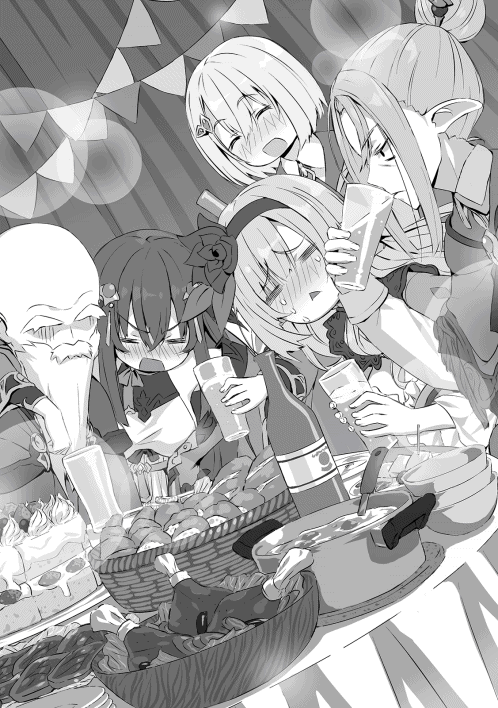

| 【合本版1-2巻】とある英雄達の最終兵器【リーサルウェポン】～最強師匠陣による育成計画がブラックすぎる件～ | |
| 世界るい | |
| TOブックス (2019) | |
※本電子書籍は「とある英雄達の最終兵器〜最強師匠陣による育成計画がブラックすぎる件〜」１、２巻を１冊にまとめた合本版です。
ＣＯＮＴＥＮＴＳ
とある英雄達の最終兵器〜最強師匠陣による育成計画がブラックすぎる件〜１
とある英雄達の最終兵器〜最強師匠陣による育成計画がブラックすぎる件〜２
このコンテンツは『とある英雄達の最終兵器〜最強師匠陣による育成計画がブラックすぎる件〜』１、２巻を収録しています。
Illustration らむ屋
Design BEE-PEE

プロローグ
いつもと変わらない朝。強いて言えばよく晴れていたとか......それくらいの違いだろう。
そんな朝にブラック企業に勤める成人男性は会社をサボる決意をする。
男は毎朝六時半に起き、七時に家を出て、八時半に職場に着けばそこからはひたすら仕事仕事仕事、そして運が良ければ終電で帰り、運が悪ければ職場の近くのサウナで一晩を過ごす。大学を出て今の会社に勤めてから八年間そんな毎日であった。
昨日は運が良かったようだ。仕事が二十三時に片付き、自宅に帰ってきてから、ソファーに腰掛けアニメを見る余裕さえあったのだから。そして、今日は運が悪かった。
現在時刻は八時半、枕元に置いてあるスマートフォンがやかましく鳴り響く。男はスマホを手繰り寄せアラームを切ろうとし、そこで初めて気付く。
カーテンから漏 れる光はいつもより明るく、スマホに表示されているのはアラーム停止表示ではなく、勤務先からの電話通知。
男の心臓が激しく高鳴る──。
（やばい、やばい、やばい、やばい、やばい!! ）
男は目をギュッと閉じ、スマホを布団の上に投げる。深呼吸──。
（スーハー、スーハー、どうする......？ 体調不良でした？ いやだったら出勤前に連絡するのは当然のこと。寝坊？ いやいや寝坊が許されるのはホワイト企業までだ......。いや、よく考えろ、そもそもこんな生活に無理があったんじゃないか？ そうだよ、俺は悪くない......。オレワルクナイ、オレワルクナイ......。──よし！ 今日はサボろう！）
そう決めるや否や男はスマホを手にし、相手の言葉を待たず──。
「ずみまぜん！ 熱が四十一度まで上がっでじまい......ゲフンゲフンっ!! 意識が朦朧 と......うぅっ......」プツッ、プープー。
向こうからの怒鳴り声には耳を貸さず、男は言いたいことだけを言い、すぐさま通話を終わらせる。
「よし、これでオッケー。もう知らん知らん。後はスマホの電源切ってしまえ。ハハハ!! これで自由だ！ 俺は自由だ!! フハハハー!! 」
小さなアパートの一室には不気味な高笑いが木霊 する。
「よーし、まずは積んであるラノベを読むぞー!! そして、同時に昨日の続きのアニメも流してっと」
男の給料は決して高くはなかったが、独身貴族かつ自由に使える時間がないため、お金には余裕があった。そんな男が買うものといったら通勤時間に読めるライトノベルと、ごくたまの休日に見るアニメのＤＶＤくらいのものであった。友達？ 恋人？ ブラック企業の社畜で時間の都合を合わせることのできない男にとってはどちらも疎遠なものであった。
男はそれから休憩も取らずにラノベを読みつつ、アニメを見続けた。時に笑い、時に涙ぐみ、男は二次元の世界で友人や恋人と幸せになっていく主人公をどこか羨 ましそうに眺め続けていた。
「んんー、さーて、腹減ったな。今何時だ？ 十三時かぁ。うっし、飯でも調達するか」
男は財布とスマホをポケットに入れ立ち上がる。そして、扉を開け、一歩を踏み出す。この選択が後にとんでもないことなるとは露知らず......。
男は雲ひとつない空の下、閑静 な住宅街にコツコツと小さな靴音だけを響かせる。
五分程歩いただろうか、男の目に公園が映り、その耳に聞こえてくるのは子供達のはしゃぎ声。
（子供か......。俺も今頃は美人な奥さんと可愛い子供に囲まれて幸せな家庭を築いている予定だったんだがなぁ。どこで間違ったやら......）
学生時代に思い描いていた未来の自分と現実の自分を比べ、気が滅入 ってしまった男は涙をうっすらと浮かべ、少し休もうと公園に入ろうとする。
──しかし、それは果たされずに終わる。
公園まで続く道──車が二台すれ違うのも難しい路地を宅配便のトラックが恐ろしい速さで近づいてくる。
（あ〜、運送会社の運ちゃんも俺と同じブラック戦士だもんなぁ......。って、スマホいじりながら運転すんなっての......）
男は同情しつつもどこか他人事のようでトラックを視界の外にはじき、公園に入ろうとする。
ぽんっぽんっ......。
ふとそんな音が聞こえた。音のした方を見るとサッカーボール程の大きさのゴムボールが公園から道路に飛び跳ねてくるのが見える。そしてそれを一心不乱に追う幼い少女の姿も──。
（ヤバイ!! ）
考えるより先に身体が動いた。
少女までの数メートルを全身発汗しながら詰める。掴む。身体を入れ替える。少女は公園の入り口まで転がり、代わりに男はもつれ、つまづき、道路へと転がり込む。甲高いブレーキ音が響き、音の発生源が背中に近づいてくることが男には分かった。
──しかし、身体が動かない。
近づいてきているのが分かるのに金縛りにあったかのように動けないでいた男の身体が遂にその瞬間を迎えてしまう。
閑静な住宅街に響く鈍い打撲音、小さな女の子の泣き声、空は憎 らしいまでに青かった。
「いらっしゃいませ。貴方は死にました。混乱するのもよーく分かります。ですが、こちらも無限の時間を生きる神とはいえ、日夜貴方みたいな方々を捌 くのに忙しい日々です。申し訳ありませんが貴方に割ける時間は二分四十秒程です。ご了承下さい」
何もない真っ白な空間に一人の壮年男性が浮かんでいる。事務的な口調で、丁寧 な物言いに聞こえるが有無を言わさない圧力があった。
そしてその言葉を受けた男は当然混乱する。
（ここはどこだ？ 彼は誰だ？ 神？ 何を言ってるんだ？ というか怪我は？ トラックは？ 少女は？ 何がどうなってるんだ？）
混乱している男がそんなことを考えている内に壮年の男は言葉を続ける。
「では、今後のことを説明させていただきます。簡単に言いますと、貴方はツライ事に耐え続けて生き、そして良い事をして死にました。そのため格を上げて輪廻転生 の輪を巡る機会が与えられます」
（ツライ事というのは仕事のことだろうか......？ 確かに平均十七時間勤務で月に休みが一回か二回あれば良い方、これはもはや苦行、修行と呼んでいいだろう。そして良い事をして死んだ。少女の命を救えたのは考えるまでもない。それは一般的に言えば良いことだろう）
「はい、というわけで格を上げたことによりある程度の選択肢が貴方に生まれます。が、いちいちそれを聞いている程、私、暇じゃありませんので......」
そう言うと壮年の男は、男の頭に手を起き、フムフム、フムフムと思案顔で頷 きはじめ──。
「分かりました。しかしこの時代の地球の人間、特に日本人というのは面白い位に剣と魔法の世界に転生したがるのですね。いいでしょう。もう慣れたものです。いってらっしゃい。残り時間は七秒程ですが、何か質問や言っておきたいことはありますか？」
「あ......」
「はい、時間となりました。では良い人生を」
（人生、とりあえず人に生まれることはできるのね......）
そう思ったところで男の意識は暗転し、次に目覚めるときには──。
第一章 誓約書を書かせるってことは大体後ろめたいことがある。
とある島、とある家の玄関に、〝ソレ〟は突如姿を現した。
日課である朝の畑仕事を魔法でこなそうと玄関先に出てきた老人男性は〝ソレ〟を見つける。そして老人は予期せぬ発見に驚きの声をあげる。
「うぉっ!! なんじゃ!? ......子供っ!? どうなっとるんじゃ......。おーい、リオーン、ツェペシュ、ルチア!! 子供じゃー!! 子供じゃー!! 」
老人が玄関先で騒ぎ立てると家、と言っても非常に広いため屋敷と呼ぶ方が正しいであろう建物から三人が姿を見せる。
「ん？ 何を騒いでいる？ 子供？ ガハハハ、ついにボケたかジジィ？」
一人目はリオンと呼ばれた獣人、獅子の獣人であろうその男はオレンジ色の髪と髭 をたずさえ、獅子 のタテガミを思わせる。年齢が高齢のため顔にいくつか皺 が刻まれているが、背筋はピンと伸びており、頑強 な身体に衰えは見られない。
二メートルを超す身長と筋骨隆々 な身体、そして年齢を重ねたからこそ出てくる貫禄 は普通の人間を寄せ付けるものではない。
「どうしたのー？ モヨモトー？ 子供？ なんの？ 牛ー？ ぶたー？ ニワトリー？」
二人目はツェペシュと呼ばれた男。流れるような金髪、陶磁器のような白い肌、赤い目、中性的な美しさを纏 う青年は太陽光が眩 しいのか目を細めている。正に絵に書いたような吸血鬼だ。ツェペシュの身長は一八〇センチ程あるが、体型もスリムなため、リオンと並ぶととても小さく感じる。だが彼も同様に常人を寄せ付けがたいオーラを纏っていた。
「はぁ、朝っぱらから何を言っとるんだい？ 遂にボケちまったかい？ このジジィは......」
三人目はルチアと呼ばれた老年期の女性。耳が長く尖ってやや垂れ下がっている。エルフと呼ばれる種族だ。ルチアはシルクのようになめらかで白ではなく輝くような銀髪をしており、老年になっても美しさを損なわない均整のとれた容姿、体型をしている。女性にしては身長が高く一七〇センチ程だろうか。非常に綺麗 な姿勢、歩き方で騒いでいる老人の元へ向かう。
「おんしら、見ろ！ 人の子じゃ!! というか、リオン、ルチア酷いのぅ......」
先程モヨモトと呼ばれた老人は、やせ細ってはいるが、背筋は芯がまっすぐ入っており、非常に厳格がある。顔には深い皺が刻まれており、髪がない代わりに仙人のような長くて白い髭をたずさえている。身長はルチアと同じ程度か。
さて、そんなモヨモトの元には小さい木編みのバスケットが一つ、その中には綺麗な白い布が敷き詰められており、一人の赤ん坊が寝かされていた。それを覗き込んだ四人が口々に疑問の声をあげる。
「おや、どこの子かねぇ？」
「というかこの島に俺達以外の人間は出入りできないはずだぞ？ たとえ出来たとしてもこの家の前まで来て存在を感知できないのはあり得ない」
「そうだねー。ん？ これは......、手紙？ はぁ、なるほどねー。はい、モヨモト」
ツェペシュは木編 みのバスケットと赤子の影に滑り込んでいた手紙を発見し、目を通すとモヨモトに渡す。
「なんじゃ？ どれどれ、ふむ......」
その手紙には、『貴方達の後継者となりうる器ですよ。立派に育てあげられるかどうかは貴方達次第ですがね。まぁよろしくお願いします』と、そう書かれていた。
「ガハハハ!! あの野郎か。面白れぇじゃねぇか!! ジジィとババァだけだったこの家にとっちゃ......」
リオンが喋れたのはそこまでであった。
眉をしかめたルチアの右手が音速を越え、リオンの腹部に突き刺さる。ものすごい衝撃音とともにニヤニヤしたままの獣人は数十メートルほど地面をバウンドしながら吹き飛んでいく。
「リオン、言葉には気をつけな。さて、そうさね、あいつの言う通りにするのは癪 だが、こんな可愛い子を放り出せるほど耄碌 もしてないからねぇ。あんた達はどうなんだい？」
「ボクも賛成だよー。賑 やかになっていいんじゃないかなぁ〜」
「ワシも賛成じゃ。ただ、後継者とするかどうかはこの子が育って行く内にこの子が決めることじゃ。ま、何はともあれ自立できるまでは育てるとしようかの」
「いててて、そうだな。で、こいつの名前はなんなんだ？」
リオンが腹をさすりながら戻ってきてそう言うと、モヨモトは赤ん坊の着ている服やバスケットなどに名前が書いていないか探し始める。
そして他の三人も協力し、数分探したところで名前がどこにもないと分かる。
「......では、まずは名前じゃな。この子の名前をつける会議を行う！ 全員居間に集合じゃ!! 」
「オッケー、モヨモトーボクお腹空いたからパンとスクランブルエッグと牛乳ね」
「あたしゃサラダとヨーグルト、あと食後のデザートも頼むよ」
「ガハハハ！ 俺は肉だ！ 肉！ あと酒だ！」
「おんしら......」
こうして居間では忙しく朝食を用意するモヨモトと楽しそうに名前をあーでもないこーでもない、と言い合う三人の姿があった。
（ん？ ここはどこだ？ って、うおっビックリした!! ）
目を開けるとそこは知らない天井──と、赤ん坊の顔を覗き込みながら知らない言葉を交わし続ける四人の顔が映っていた。
（何語だ？ 英語か？ んー、英語ではなさそうだ......。中国語でもない、かなぁ？ んー、ダメださっぱり分からんっ！）
赤子となった男は知っている単語がないか注意深く会話を聞いているが、一向に聞いたことのある単語は出てこない。
（なんだこれ？ つーか、ここどこだよ......。何がどうなってんだ？ あー、もうわけわからんし、すごく眠いし......、あと眠いし、......もういいや。寝ちゃえ）
「む、今この子が一瞬目を開けたさね、きっとあたしの考えた名前が気に入ったんだろう。そうだろうそうだろう」
「バカ言え、お前が考えた名前より俺の考えた名前の方が強いし、カッコイイ。絶対にこっちのが気に入る」
「えー、ボクが考えた名前だってカッコイイよ？ オシャレだし？ 高貴な感じもするし？」
「ワシがかん......」
「「「モヨモトは黙って（て）（ろ）」」」
「おんしら......」
というわけで、結局三者は譲り合わず、モヨモトが三者それぞれの候補である名前から選ぶということで落ち着く。そして選んだ名前が......。
「そうさね、このジジィがセンスまでボケていなくてあたしゃ嬉しいよ。フフフ、決まりだ。お前の名前は今日からテュールだ」
「ッチ......、俺のビーフストロガノフの方が強そうだったんだがな......」
「むぅ、ボクのクアトロフォルマッジョの方がオシャレだし......」
「ホントはワシだって......ゲレゲレの方が......いや、なんでもない......」
こうして転生した赤ん坊は自分の知らない間に名前が決定し、今日からテュールという名前でこの世界で生きていくこととなる。
......さて、転生してから一ヶ月。テュールという名前になった男はひたすらに言葉を聞くことに専念し、屋敷に住む四人の言葉を少しずつ理解することができるようになっていた。状況も少しずつ把握できるようになる。
（どうやらこの屋敷に住んでいるのは四人だけ、自給自足の生活をしているみたいだな......。この一ヶ月客らしい客はきていない。辺鄙 な所で四人だけで暮らしている？ 歩けるようになったら家から出て確認してみるか......）
テュールはそこで考えるのをやめ、いつものライフワークに戻る。即 ち、腹が減ったら泣く、トイレをしたら泣く、モヨモトが近くにきたら泣く、そしてルチアが来たら泣き止むということだ。
そして、テュールはこの一ヶ月を過ごしている間にとても興味深いものの存在を知ることとなる。
──魔法だ。
前世で、友人や恋人の代わりとして読んでいたラノベ──剣や魔法の世界で輝く主人公を夢想していたテュールは魔法にとても強い興味と羨望 を抱くのは当然のことであった。
しかし、未だ歩くことや喋ることのできないテュールは教えを乞 うこともできず、忍耐の時を過ごす。時折目に入る魔法陣を羨ましがりながら。
そんな日々が一年程続くと──。
「お誕生日おめでとうテュール、あんたももう一歳さね、元気に育ってくれてあたしゃ嬉しいよ」
「そうじゃの、テュールほんにおめでとう。ワシは......ワシは......」ぶわっ。
「かぁー、ジジィになると涙もろくなるってのはホントだな......。ガハハハ！ テュールめでたいな！ 強くなれよ？」
「フフ、テュールおめでとう。これからもよろしくね？」
居間のテーブルをみんなで囲い、テュールは一人一人からお祝いの言葉を貰 う。四人が四人とも個性的な性格をしているが、皆が心から愛してくれているのがこの一年でテュールには十分すぎるほどよくわかっていた。
「みんな、あいがと」
テュールは舌っ足らずな言葉を笑顔と一緒にお返しする。
感謝の気持ちをきちんと言葉にしたいが一歳児の口から発せられる言葉はこれが限界であった。しかし、それを聞くと、モヨモトは号泣し、他の三人も目を潤 ませ笑顔になってくれる。
（あぁー、俺はなんて素晴らしい人達に育ててもらっているんだろう......）
こうして暖かい気持ちになりながら屋敷での夜は更 けていく。
一歳にもなると、簡単な単語での発話が可能になった。そして歩くこともできるようにもなったため行動範囲が一気に広がった。と言っても屋敷内とその敷地程度であるが......。
そして、とにもかくにもこの世界のことを知りたかったテュールは四人に様々なことを聞く。
その結果分かったことは、この世界はアルカディアという名前で、大きな大陸が一つあり、その大陸に五つの国、五つの種族がいるということ。北から時計回りに竜族の国アルクティク皇国、エルフの国リエース共和国、人族の国エスペラント王国、獣人族の国パンゲア王国、そして魔族の国エウロパ領だ。
そしてその大陸の外は霧の深い海が広がっており、未開の地となっている。そんな未開の地と呼ばれる外海にこの島──イルデパン島が存在する。
また、大陸に住む五種族の仲は悪く、今でこそ大きな戦争はないが、良くて不干渉。国内での他種族差別や国境近くでの威嚇 、小競 り合 いと言ったことは当たり前に続いているとのことだ。何それ？ 大陸怖い、である。そんな話を聞いた時、ふと疑問に思ったことをテュールが尋ねたことがある。
「なんで、ここのみんなは仲いいの？」
そんな問いに優しい笑みでルチアがゆっくりと答えてくれた。
「そうさね、あたしとテュールも種族は違う。けど言葉を交わせば分かり合えるさね。ここにいる筋肉ダルマやモヤシ、ボケジジィも一緒さ、少しマッチョだったり、肌が青白かったり、ボケてたりするだけで言葉を交わせば理解しあえる。たまにケンカをすることもあるけどケンカした後謝って仲直りすることができる。それが理性ある生き物さね」
「そうじゃな、ワシらは多くの戦場、多くの血、そして多くの死を見てきたんじゃ......。だからこそ五つの種族がいがみあうことなく生きていける平和な世の中を誰よりも願った。しかし、個人の力とは無力よのぅ......」
「モヨモト、それ以上は一歳児に言ったって仕方あるめぇ。と、言ってもテュールは賢いからなぁ、大抵の言葉は既に理解できている節 はあるわな。まぁテュール、俺から言えるのは一つだ。お前はちぃせぇ男になるな。種族なんていう、ちぃせぇもんに囚われるんじゃねぇぞ」
「フフ、そうだね。ボク達はきっと世界からしたら異端 に入るんだろうね。でもボクはここのような場所が当たり前になってくれると嬉しいんだけどね〜」
そうして四人は優しく微笑みながらテュールにこの世界の知識、常識を少しずつ教えてくれたのであった。
そしてテュールがこちらの世界に転生してから教えてほしいこと断トツ一位はこれだった。
「るちあー、まほーがつかいたい」
「ふむ......。魔法かい。そうさね......。その話は明日しようじゃないか」
ルチアは目を閉じ一つ頷 くと、その問答を明日に伸ばそうと提案してくる。テュールは一年も我慢していたため、一日や二日は対して変わらないと考え、ごねることなくその提案に頷 く。
そしてテュールが寝た後、モヨモト、ツェペシュ、リオン、ルチアはとある部屋に集まり、防音の魔法をかけ、この件について話し合う。
「さて、この一年テュールを育ててきたわけだが、どうさね？ みんな思うところがあるだろ？」
「「「......」」」
ルチアの問いかけに三人は思い当たることがある様子だが、明言せずに押し黙る。
「かぁ、男どもは本当に肝っ玉がちいちゃいねぇ。んじゃあたしが言おう。テュールは私達と同じ転生者だ。それも元日本人のね。そりゃそうだ。喋れるようになってから寝言で日本語を使うんだ。バカでも分かるさね」
「そうじゃの......。地球との時間の差は分からんが、恐らくわしらとそう遠くはない時代の者じゃろう......」
「だろうねー。あんなに綺麗な食べ方をする一歳児はいないもんねー」
「......そうだな。転生前の記憶があるならば時折見せる深く思考している目も頷けるな」
ルチアのストレートな物言いに、先程まで押し黙っていた三人は堰 を切ったように言葉を紡 ぐ。一旦話しはじめてしまえば、あれよあれよという間に赤子としては不自然な点が列挙 されていく。それはそうだ。テュールは前世では未婚。赤子の時の記憶などないのだから赤子のフリというのは未知のものだ、無理がある。そして、四人はひとしきり現状を確認すると、次の議題へと移る。
「さて、それでどうするさね？ あたし達も転生者だということを明かし、テュールにもそれを自白させるか、このまま見ないふりをして育てるか」
ルチアからの問題提起に三人は押し黙り、考え込む。
「ふむ......。難しい問題じゃのう......。今、あの状態のテュールを大人として扱うというのは難しい気がするのぅ。それにあやつもフリとはいえ、体と心のバランスを保っとるのだろう。せめて十五歳になるまでは言わん方がいいと思うのぅ」
「......そうだねー。ボクもモヨモトに賛成かなー」
「......まぁ、そうだな。俺もそれでいいとは思う。だが、あと何年かは俺たちはこの島から離れることはできねぇ。癪 だが、あの野郎が後継者たる器と言ったんだ。テュールのやつは育てれば俺たちを越えられるかも知れねぇ。だったら、今のうちから事情を話して選択させるのも悪くねぇと思うんだが？」
そして、四人はあーでもない、こーでもないと意見を出しつつ、どうすればテュールにとって過ごしやすく、そしてこちら側の思惑 に向けられるかを話し合う。そしてたどり着いた答えが──。
「テュール。おんしは昨日ルチアに魔法を教えて欲しいと言うたな？」
「......うん」
翌日、魔法の件で呼び出されたテュールは、モヨモトの重々しい切り出し方にやや怪訝 な表情を浮かべ返事をする。
「ふむ、どうして使いたいと思ったんじゃ？」
（どうして......か。そりゃ、灰色の学生時代を送り、真っ黒な社会人時代を送ればなぁ。ラノベやアニメでニヤニヤするしかなかった俺の恋愛事情。けど決まって読んでたラノベでは主人公が転生して魔法を覚え強くなれば、お金も彼女も......。あぁ、俗物さ、俗物で結構！ ともかく俺は魔法を覚えて、一生食って遊んで困らないお金を稼いで、彼女を作って、幸せな家庭を築く!! ）
モヨモトの問いに改めて、自分自身の考えをまとめるが、当然そのまま言えるわけがなく──。
「かっこいいから......」
テュールは一言でそう答える。ふざけているようだが、この一点が原点であり、最も強い欲求なのは確かである。
「そうか......。実はの、わしらはこの世界でもまぁまぁ 強いんじゃ。さらにここにおるルチアとツェペシュは魔法にもそれなりに 精通しておる」
（そうだったのか......。てことはツェペシュやルチアに教えてもらえれば俺すごい魔法使いになれるんじゃ？ いや前世でもすごい魔法使いだったけどさ......別の意味で）
「どうしたんじゃ？ 具合でも悪いんかの？」
「んーん、へいき」
喜んだのも束 の間 、遠い目をしてげんなりしていたテュールを見て、心配そうにモヨモトが声をかける。すぐさまテュールは自分の設定を思い出し、一歳児の言動、行動を心がける。
「それならいいんじゃが、まぁ、そういうわけでおんしは、魔法を使いたいというならこの二人に教えてもらえばどこに出しても恥ずかしくない魔法使いじゃ。じゃが、魔法を使うには当然丈夫な体が必要となる。しかし、それもわしとリオンが武術をそれなりにできるため安心じゃ。つまり、セットで師事 すればすーぱーひーろーも夢ではないということじゃな」
テュールはその言葉に、自分自身の未来を夢想する。異世界と言えば定番であるチンピラに絡まれた女の子を颯爽 と助け出し、鼻持ちならない貴族を腕っぷしだけで黙らせる。好き勝手思い通り生きてるのに最後には金も名誉も、そして美人の嫁を何人も侍 らす。そんな小説の中でしか存在しなかった者になれる、と。
その降って湧 いたようなチャンスについ、モヨモトが到底 一歳児には分からないような言い回しを使っていることにも気付かず、前のめりになる。
「ほほ、乗り気なようじゃの。じゃが、よう考えるんじゃ。わしらの知識や技は無闇矢鱈 に教えるものではない。よって、教えるからには半端はなしじゃ。その覚悟がおんしにあるかの？」
（ぐ......。そ、そりゃそうだ）
テュールは先程の興奮から一転し、深く思案する。その覚悟、半端ではない師事というのはどの程度のものかを。日本であれば体験教室があり、イヤになればすぐやめられるが、今回のはそういうわけにもいかないだろう。テュールの頭の中で天秤 がゆらゆらと動き始める。
「なんだ？ モヨモト、テュールを弟子にとる話か？ ガハハハ。テュール、武術はいいぞー？ 強い男はなんてったってモテる。この世界じゃモヤシみてぇなやつはてんで相手にされねぇからな」
「フフ、そうだねー。それと同じくらい魔法も大事だけどねー。魔法を使いこなせるってのはそれだけで尊敬されるからねー」
わざとらしい態度、タイミングでリオンとツェペシュが話に入ってくる。普段であれば急な調子の変化にテュールも気付けたはずだが、如何 せん今は憧れのラノベ主人公への道が目の前にぶら下がっているため、正常な判断ができずにいた。
「こら、あんたらやめな。これは、あくまでテュールが決めることさね。テュールの意思で 、自ら 、進んで 、強くなるという道を選ぶんなら、まぁあたしも協力は惜しまないさね。テュール？ こいつらの話は鵜呑 みにせず、自分でよく考えるさね」
ルチアがあたかもテュールを気遣 うような言葉、口調でフォローする。が、その実、これから始まるツラく苦しい修行は自らの意志で選んだという事実を作りたいだけであった。
「ほほ、そうじゃの。テュール、一人になってよう考えてみるんじゃの。ほれ、ここに入会届兼誓約書を作っておいた。おんしがわしらに教えを乞いたいというならここにサインするんじゃ」
テュールは当然文字を読めるようになっていたため、その中身に目を通すのは問題なかった。しかし、普通に考えて一歳児に入会届兼誓約書など書かすことなどないということは抜け落ちていた。
「それじゃわしらはちょっと出かけてくるからの、なーに、ゆっくり考えればええんじゃ。夕方には戻るからの」
そうモヨモトは言うと、リオン、ツェペシュ、ルチアも一言ずつテュールに優しい言葉をかけ、出かけていく。
そして、出かけたはずの四人は昨日話し合った部屋に集まり、真っ白な壁に魔法で何かを映し出す。そこに映されているのは腕を組んで歩き周ったり、椅子に腰掛け何度も誓約書に目を通し、頭を掻 くテュールの姿であった。
「ガハハハ、あんなおっさんくさい一歳児がいるかってんだよ」
その姿を見て、リオンが大きく笑う。
「うーん、テュールはどうすると思う？」
一方、ツェペシュは未だ悩み続けているテュールの姿を見て、やや不安そうにそう言う。
「分からんのぅ。まぁ、目の輝きは本物じゃったから強くなることへの憧れはあるんじゃろうな。ただ、なまじ前世では大人だったんじゃろうて、その代償 の大きさを考えることができれば渋るのも当然じゃの......」
モヨモトは、是 とも否 とも言わず、五分五分だと口にする。しかし、ルチアの考えは違った。
「カカ、あの子は絶対にサインするさね」
「ほぅ、なんでだ？」
自信満々にそう言うルチアに、興味が沸 いたリオンが尋 ねる。
「決まってるじゃないか。男はみんなバカばっかだからだよ」
そう言い放つルチアに、男三人は目を丸くし、それ以上は何も言い返さず、ただ口元を僅 かに釣り上げるだけであった。
一方、話題の渦中 にいるテュールは、絶賛 悩み中であった。
（う〜ん、どうしたもんかなぁ。この誓約書もおかしな点はない、よなぁ？）
テュールは、もう何度読んだか分からない誓約書を再度眺 める。ブラック企業での社畜時代でイヤというほど文書の重要性を分かっているテュールは、どこかに落とし穴がないか探さずにはいられなかったのだ。
（うーん......やっぱ詐欺 っぽい文面はないな。......いや、逆に考えろ。一歳児相手にそんな騙 すような誓約書を書かすか？ ましてや、ここまで育ててくれたのを思い出せば良い人ばかりじゃないか。それに、高齢の人は大抵昔は強かったとか言うじゃんか。きっとアレだな。村から出たことがないから村一番が世界最強的な。なーんだ。そう思ったら急に肩が軽くなったな。うっし、サラサラっと）
こうして、テュールは自分の人生がとんでもないものへと変わる扉を自ら開く。いや、自ら開いたように錯覚するよう仕向けられたのであった。
「戻ったぞい」
サインしたのを見届けた四人は頃合いを見計 らい外から戻ったふりをする。
「おかえりー」
テュールも一旦 落ち着き、一歳児としての体裁 を整え、出迎える。右手には入会届を握りしめて。
「ほほ、今日はご馳走 じゃ。いい肉が取れたからのぅ」
あたかも狩りに行ってきて、いい獲物が取れたからほくほく顔なんじゃ、と言わんばかりのモヨモト。当然サインしたのを知っており、これからの修行計画を夢想して笑みを浮かべていることは本人のみぞ知るところである。
「そうなのー？ やった！ あ、あとこれかいたよ！」
きたっ！ モヨモト達四人は逸 る気持ちを抑え、それを受け取る。
「よう考えたのか？」
「強くなるってことはつれぇぞ？ 大丈夫か？」
「魔法を使いこなすってのはたくさん勉強が必要だよー？」
モヨモト、リオン、ツェペシュは最後まで自分たちの思惑を出さないよう気を付け、テュールの自己責任となるよう尋ねる。
「うん、へーき！ がんばるよ！」
「カカ、な？ テュールはこういう子だよ。テュール、よく決めたさね。これからの毎日はあんたが考えているほど生ぬるいもんじゃない。なんてたって、あたしらはあんたを世界最強に育てる気だからね。さぁ、今日は笑って過ごせる最後の晩餐だ。あたしも久しぶりに料理を手伝おうじゃないか」
高らかに笑うルチア。
（え？）
冷や汗が出はじめるテュール。
「すまんのぅ。じゃが、おんしが決めたことじゃ。男なら一度決めたことは貫 き通すんじゃぞ」
「ガハハハ、男に生まれたからには世界最強を目指す。当然じゃねぇか。テュール良かったな！ こんな豪華な師匠はいねぇぞ。明日から楽しみにしとけ」
「フフ、テュールよろしくねー。一歳の脳なら詰め込めば詰め込むだけ入るから大丈夫だよー」
急に先程までの優しさが消え、脅しを含んだ言葉を使い始めるモヨモト、リオン、ツェペシュ。
テュールはブラック企業時代何度も味わった山ほど処理しなければならない仕事が隠されていて、それを発見してしまった時の胃の痛みを思い出す。
（......あれ？ 契約は目標を達成するまで、尚目標達成までは無理のないペース配分って書いてあったよな？ おい、世界最強って言わなかったか？ 無理のないペースで世界最強？ ど、どんなペースだ？ 待て待て待て──）
そしてショート寸前の脳みそが弾き出した言葉が──。
「わ、わーい。たのしみー」
──であり、それを最後にこの日の記憶は曖昧となっている。
「さて、テュール。今日からあんたはあたし達の弟子だ。甘えは許さないから覚悟するさね。まずは知識だ。魔法とは何かと知らずに使おうなど愚 の骨頂 さ。よーく聞くんだ。いいね？」
「う......うん」
昨日までの優しかったルチアの笑顔は消え、険しい表情でおよそ一歳児としての扱いとは思えない態度でそんなことを言う。
「じゃあまず魔法の説明をしよう。魔法ってのはね、この世界の空気中に漂っている魔素を使う。世界にいる五種族は、どの種族も全て呼吸とともにこの魔素を取り込み、体内にある魔力器官に蓄 える。そしてその魔力器官で魔力に変換され、それを魔法陣として放出し魔法が発動する。分かったかい？」
コクリ。テュールは真剣な眼差しでルチアの言葉に耳を傾け、聞き終わると一つ頷く。
「......よし、続きだ。魔法は魔力をただ放出するだけじゃ発動しない。さっきも言ったが魔力で魔法陣を書くという工程が必要になる。これが難しい。魔法陣の意味を理解し、緻密 な図を頭のなかで完璧にイメージしなきゃできない。一般人の多くは直径五センチ程の魔法陣が限界さね。これは下級魔法、生活魔法と呼ばれるものさね。直径五センチを越えれば中級魔法、直径十五センチともなれば上級魔法、直径五十センチ以上なら超級魔法、直径二メートルからは幻想級魔法、そして二十メートル以上の魔法は神代級魔法と呼ばれているさね」
〜五センチ 下級
五センチ〜 中級
十五センチ〜 上級
五十センチ〜 超級
二メートル〜 幻想級
二十メートル〜 神代級
「るちあは、どこまで使えるのー？」
「そうさねぇ......、まぁ幻想級までは楽に使えるさね」
（え？ 幻想級ってスゴイんじゃないのか？ それとも案外普通なのか？ いや、けどルチアが一般人は下級魔法が精一杯って言ってたしなぁ......）
「もよもととりおんとてぺすは？」
「あー、ワシらも幻想級までは使うかのぅ。まぁじゃがそんな魔法など使わないに越したことはないのぅ......。生きていくには本来生活魔法だけで十分じゃからの」
モヨモトが含みのある言い方でそう言うと、他の三人もなんとも言えない苦い顔をする。
「みんな、すごいんだねー」
なんだか妙な空気を感じ取ったテュールは笑顔でそんなことを言う。
「ホホホ、そうじゃろ？ そうじゃろ？ なーにテュール見ておるんじゃ、ワシが幻想級魔法を見せてや──」
モヨモトはそこまで言い、その両手にテュールが今までみたことのないサイズの魔法陣を浮かべたところで、姿を消した。
ルチアの右手が音速を越え、モヨモトの腹部を貫いたためである。モヨモトはちょっと逝 っちゃった目をしながらものすごい速さで吹き飛んでいく。吹き飛んだ先には玄関の扉があるが、吹き飛ぶ速度に先んじるよう、リオンとツェペシュが家のドアへと駆け寄り、ドアを開く。モヨモトはそのまま外へと数十メートル程バウンドしていき、ようやく止まった所でピクピクと痙攣 し......止まった。
「まったく、ボケジジィが......。こんなとこで幻想級なんてぶっ放したらどうなると思ってるんだい。テュールに少しおだてられたくらいで木に登っちまって。さ、気を取り直してテュール、まずは生活魔法から魔法陣を覚えていくさね。書斎に魔法辞典があるからそれを写す練習だ。地味でつまらない練習だが投げ出すのは許さないよ？」
（念願の魔法を覚えるためだ。多少地味でつまらない練習だってウェルカムだね）
そう思い、テュールはすぐに笑顔で答える。
「うん！ やるよ！」
そして、この日から暇さえあれば魔法陣を写す日々が始まる。
魔法という日本人男子一同の夢にいてもたってもいられなくなったテュールは早速魔法陣を写す練習をしようと書斎へと歩きだそうとする。しかし、そんなタイミングで──。
「待て、テュール」
リオンに待ったをかけられる。なんだろうか？
「いいか、昨日も言ったが、魔法を使うには強靭 な精神力、体力、集中力が必要だ。それも同時に鍛えていかなければイッパシの男にはなれない。よって、今日から訓練を始める！ これは師匠命令だ!! ついてこい!! 」
リオンは師匠命令という言葉にうっとりしている様子で、そう言うとズカズカと大きな足取りでドアの外に広がるだだっ広い庭へと歩みを進める。
その後姿は朝日に照らされ後光が射しているようにも見えた。それはまさしく師匠と呼べる絶対強者の姿であったが──如何せん歩く度に尻尾が左右にウキウキするように揺れており、台無しにしていた。
「ホホ、そういうことじゃ。ちなみにワシらはやるからには本気じゃぞ？ さぁ行こうかの」
いつの間にか起き上がり、テュールの隣にいたモヨモトはその小さな手の手を握り、歩きだす。この世界最強の一角達の自重を知らない修行への第一歩を──。
「んじゃー、まずはどうすっか。走るかー。基本だよな？ 体力ってやつは」
「そうじゃの。あとは重力魔法で少しずつ負荷 を増やしていこうかの。時間は有限なんじゃから質を高めるべきじゃ」
「んじゃ重力魔法で体を重くしつつ、走る。その後は俺が格闘術をモヨモトが剣術の訓練をか。んじゃテュール、重力魔法かけるぞ。一・一倍くらいから始めるか。ほい」
テュールの意見は聞かないまま、訓練方針が決まる。そしてテュールの返事を待たずしてリオンは指先にキラキラとした二メートル程の魔法陣を描き、それが消えた瞬間テュールの身体が急に重くなる。
「おも、い」
「ホホ、がんばるんじゃ、テュール気合じゃよ、気合。さ、ワシと一緒に走ろう」
「だな、気合だ、気合！ テュール俺も一緒に走るぞ！ さ、いくぞ！」
ゆっくりと走り出す一歳児とそれに付き添う大男と老人。テュールは苦しそうな顔をしているが、大男と老人はそれはそれは優しい顔で楽しそうに走っている。だが、一切手を緩める気はない様子で、時折笑顔のまま激を飛ばす。
（つらっ！ 嘘だろ!? 一歳児に重力増やして走らせるとか正気じゃねぇだろ!? つか普通一歳児走れねぇからな!? 前世で走り方知ってて身体の動かし方を理解しているからできてるけどギリギリだからな！ この身体バランス悪いんだからな!? 頭重てぇよ！）
当然一歳児が走れないことなどモヨモトとリオンは知っている。そして、テュールの中身が一歳児でないことも──。
そしてテュールは一時間もの間走リ切った。いや、最後の方はもはや這 いつくばるという表現が正しいであろう。
「そうだ、テュール限界を迎えて人は初めて強くなれる！ お前は今限界を迎えながらもやりきったんだ!! 偉いぞ!! 」
「そうじゃ、そうじゃ、偉いのぅ、テュールは」
そう言って二人して頭を撫 でてくる。
「さ、次は剣術の時間じゃな！」
（バカなの？ ねぇバカなの？ 今限界迎えたっておっしゃったじゃない？ ねぇ？）
「そうだな！ その次は格闘術だな！ 楽しみだ！ ガハハハ!! 」
（あ。ダメ。無理。限界。おやすみ......）
テュールは這いつくばったまま意識が遠のいていくのを感じる。
そして薄れゆく意識の中、師匠たち四人の恐ろしい育成計画が耳に入ってきたとかいないとか。
それから加減を知らない師匠たちによる修行を行い、気付くと四年が経ち、テュールは五歳となっていた。
テュールはこの日も当然訓練を行う。そう、この歳までテュールは三六五日、年中無休で訓練をさせられていた。そして二十四時間常に重力魔法を掛けられ、尚且 つその重力は日増しに増えてきている。ふとした時にテュールは今、何倍の重力がかけられているか気になり、師匠たちに尋 ねるが答えをはぐらかされるばかりである。
恐らく五歳児にかけていい重力ではないのだろう。テュールがベジー○を越える日も近いのではないだろうか。
そして今日もそんな状態で剣術の訓練を二時間ほど行う。モヨモトからはまず型を教わり、それを無意識に正しく使えるまで反復する練習だ。モヨモト曰 く型の習熟に終わりはない、毎日続けることが肝要 じゃ。とのこと。
そしてようやくここ一年で打ち込みの練習が始まった。
「ホホ、良い剣さばきになってきたのぅ、テュール。じゃがまだまだ甘い」
この実戦では、モヨモトに一撃を入れる。もしくは一歩でも動かせたら次の段階に進むとのことだがこの訓練が始まって一年経った今でもテュールはそれは達成できていない。そして今日もその目標は達せられずうなだれるテュール。
「ふむ、ここらで重力一倍の勝負をしてみるかのぅ。ほいっ」パチン。
そんなテュールを見て、モヨモトが一つ指を鳴らす。すると、テュールにまとわりついていた重さが消える。
「うわっ、軽い！ 羽のようだ！ こんな軽いと逆に動きにくいなぁー......」
「ホホ、軽く飛んでみぃ」
「ん、せーのっ！」
テュールは、そう言ってかがんでから、一気に足を伸ばし、地面を蹴る。垂直に身体はものすごい速さで上がっていく、上がっていく、上がっ──。
（上がりすぎじゃね!? ）
気付いたら地面との距離は遥 か数十メートル離れている。
そして、頂点に達したであろうか、一瞬速度がゼロになり、そして落下を迎える。
（う〜ん。これはあれだな。折角 だ。遊んでみるか！）
そう決めるや否や、テュールは右手に五十センチ程の魔法陣が浮かべ──。
「氷の滑り台 !! 」
呪文を唱える。本来、詠唱や呪文名などは発動の際不必要だが、日本人男児の悲しき性 である。そして魔法が無事成功すると、螺旋状 に氷の滑り台が完成する。そこに両足を接地し、滑り降りる。
「ひゃっふぅー!! 」
「ホホホー！」
いつの間にか後ろにはモヨモトがおり、正座で滑り降りてきている。
（足冷えたり、痛くはないのかな......？ いやあのモヨモトのことだ。そんなことあるわけがないか......）
この四年間でイヤというほど師匠陣四人の恐ろしさを目の当たりにしてきたテュールは、老人だという気遣 いなど不要ということを思い知った。
そして、そんなことを考えているとあっという間に地面が間近に迫り、テュールは小さい魔法陣を右手に構え、氷のジャンプ台を作る。そして勢いをつけたまま飛び、伸身三回宙返りで着地を決める。そして、モヨモトは正座のまま飛んでいく──。
「ふぅ、五歳児には滑り台は何より楽しいもんなんだな。さて、よしっ、モヨモト勝負の続きだ！」
「ホホ、かかってくるがよい」
..................。
「モヨモト正座でいいの？」
「......、痺 れて立てん」
......。
五分程睨み合った後、ゆっくりとモヨモトは立ち上がる。足をさすりながら......。
「ホホホ、仕切り直しじゃ！ テュールいつでもきなさい」
「んじゃ、遠慮なくっ......！ ほいっ！」
テュールは疾風 の如 き速さで近づき、剣を振るう。常人では近づいたことさえ知覚できないレベルであろう。ましてやそこから振るわれる剣先を知覚できるころには身体は真っ二つだ。
カンッ!! しかし当然そんな剣へと鍛え上げた師匠が常人なわけもなく、テュールの剣先はあっけなく弾かれる。
「良い速さじゃ。じゃが、軽いのぅ〜」
テュールはがむしゃらに剣を振るう。緩急をつけ、フェイントを入れ、ステップで惑わし、ある時は愚直 に、ある時は虚をつくように、繰り出される斬撃は木剣と言っても当たればただでは済まないだろう。
「じゃが、当たらなければどうということはない。ほいっ、ほいっ、ホホホホー。良い風じゃ〜気持ちええのぅ」
やがて三十分程全力で打ちこんだ結果、息が切れるのは終始攻撃に徹したテュールだけであり、老齢であるモヨモトは息切れや疲労など全くみられず、どこ吹く風だ。
「うむ、良い感じに育ってきておるのぅ。今日からまた重力アップじゃ。おんしならいずれ音を置き去りにできるじゃろ」パチン。
そう言うと、また急に身体が重くなる。
（って本当に訓練前より重いな......）
「あ、ありがとうございました」
「うむうむ。精進、精進、ホホホホー」
「んじゃ、次は俺の番だな。さ、テュール休憩を四十秒やる。その間に万全まで回復しろ。いいか？ 戦場では四十秒も敵が待ってくれることはないからな？ さ、数えるぞ！ いーちっ！ にー!! ......」
「......よーんじゅー！ そうだ、その目だ。弱いやつはまず目が折れる。目に力のねぇやつは生き残れねぇ。テュール、その目の輝きを失くすんじゃねぇぞ？ よーし、まずは軽く殴り合いだ！ 死ぬなよ？」
ッヒュ!! 二メートルを越える筋骨隆々の身体が音を置き去りにし消える。気付いたときにはテュールの目の前に拳が迫っている。テュールは文字通り全力で防ぐ。一切の考えを放棄し、生き残るため、その一点だけを考え、防御に専念する。
「んぐっ──!! 」
およそ人と人との接触で起こる音ではない音を響かせテュールは弾かれる。景色がものすごい速さで後ろに流れていく。受け身を取らなければ全身がバラバラになるであろう。
（んのっ!! バカ力っ!! ）
テュールは、なんとか四肢 を地面に張り付かせ速度を殺し、迎撃の体制を整える。そしてルックアップ。リオンの姿を探す。
「こっちだ」
後ろから声が聞こえると同時に背中に悪寒が走る。
（避ける？ バカを言っちゃいけない。避けることに意識を割 いた瞬間、俺の頭はスイカ割りのスイカよろしくグシャグシャだ）
前方へ全力で宙返りし、腕をクロスに固め、ちょうど頭と足が天地逆さまになり、視界にリオンが映ったところで、つま先が目の前に迫り、再度の衝撃。
先程まで後ろに流れていた景色を再度後ろに流していく。
（あぁ、ダメ、意識が......）
パシッ。そして回り込んだリオンに掴まれ、軽い殴り合い が終了となる。
「ガハハハ!! 今日も二発か！ まぁ、軽くとは言え俺の二撃を凌ぐ五歳児なんかいねぇ。将来が楽しみだ！ 早く俺を殴ってくれよ？ ガハハハ!! よーしっ、四十秒で意識を取り戻せ？ いくぞ！ いーちっ！ にーっ！......」
そう、テュールはこんな訓練を四年も続けていた。
そして午後からは魔法の訓練だ。魔法はツェペシュとルチアに指導してもらっている。指導がいいのか、指導が厳しいのか、指導が鬼のようなのか、テュールは既に上級魔法は使えるようになっていた。
そんな自重を知らない師匠たちは最近になって本来五歳児が到底扱えるはずもない魔法──ニ重詠唱 の訓練も始めた。これはどういうものかというと、左右の手から別々の魔法陣を発動するというもの。身近なものに喩えるならば、右手と左手で同時にアンパン○ンとドラ○もんを書くようなものである。当然、魔法陣はアンパン○ンとドラ○もんを書くより遥かに難しいが──。
「今日もいつも通り、初級のニ重詠唱を練習しようー。全くの同時でないと意味がないからね？ さぁ、やってみて？ 右手からは火を、左手からは水を」
テュールは頭の中を二つに区切ったつもりで、それぞれに直径五センチの魔法陣をイメージする。それこそ一歳の頃から何千回、何万回と繰り返してきた魔法陣だ。そしてその魔法陣を魔力で描く。右手からは火を、左手からは水を──。
「う〜ん、やっぱり、左手が若干遅いねー。左腕から出る魔力の扱い方が右手に比べて少し稚拙だからかなぁー。まぁ、今後も左手を右手と全く同じ感覚で使う訓練を続けようかー。夜の書き取りでは両手で別の魔法陣を全く同じスピードで書ききるという訓練を続けるんだよ？ あとは日常生活動作は左手をメインに行おう」
これができるようになると、合成魔法というとてつもなく強い魔法が使えるようになるとのことだ。合成魔法の用途は二つ。一つは、要素の合成。これは魔法を構成する特性とも呼べる要素をかけ合わせて複雑な魔法を作り出すということ。そして二つ目は魔法陣を大きくするためだ。
魔法陣はその大きさが大きいほど強くなるが、人が描ける魔法陣は魔力の瞬発力とも言える出力に比例する。これが普通の人であれば三十センチ程度がせいぜいだ。宮廷魔術師レベルだと二メートル程。そこから先の限界は明確には分かっていないが、各種族の中でも指折りの者達にしか使えないという。そのため、出力の限界以上の情報量が多い魔法──幻想級の魔法などは分割して魔法陣を描く必要があるということだ。
まぁつまり、強い魔法が使いたければ出来るだけ大きい魔法陣をできるだけ沢山合成しましょう、ということになる。さて、そんな魔法陣をツェペシュはいくつ重ねられるのか疑問に思ったテュールはツェペシュに尋ねる。
「ツェペシュは何個まで重ねられるの？」
「ボクー？ ボクは四回......かなぁー。合計八つの魔法陣を合成していく四重詠唱 って言われている魔法だねー。効果は無茶苦茶だよー。使う機会がない方がいい魔法だね。まぁけど力を止めるには力を持つしかないっていうのも現実さ。誰かを救うにも、守るにも力はあるに越したことはないよ。後悔は先には立たないからねぇー」
「ハハ、大丈夫さね、テュールは五歳児の中じゃそれこそ世界トップクラスだよ。それにこの子はバカじゃない。きちんと力を扱える男になるさね」
そう言うとルチアは優しくテュールの頭を撫でる。きっといくつになってもルチアには頭が上がらないな。テュールはそう思いながら今日も魔法の訓練を続ける。
そして更に五年の月日が流れテュールは十歳となる。
テュールは体つきも徐々にしっかりしてきており、訓練にもますます熱が入る。たまに師匠たちは交代で家を空けることがあるが、四人の師匠陣が同時にいなくなるということはなく、十歳になるまで結局毎日訓練をすることとなった。
（もはや師匠たちは引きこもりだな......。たまにはみんなで羽を伸ばして旅行とかした方がいい）
流石 に毎日の修行漬けは堪 えるものがあり、たまには休みが欲しいと思わずにはいられないテュールであった。
さて、そんな毎日訓練を続けるテュールは当然進歩が見られる。継続は力なり、だ。
まず、九歳の時にモヨモトを斬り合いにて一歩動かすことを達成した。ここ一年はモヨモトも攻撃してくるようになり、ようやく斬り合いとなる。ちなみにまだ一撃も入れられていない。四歳の時から打ち込んでいるから六年間完封されているということになる。そう考えるとテュールは目の前の老人の壁の高さにめまいを感じてしまう。
リオンとは殴り合いをできるようになった。と言ってもリオンは身体機能を百分の一まで制限している。ただし百分の一に制限した上での全力だ。そしてクリーンヒットを入れられれば七十五分の一、五十分の一、二十五分の一、十分の一、五分の一......と上がっていく。先は長そうだ。
魔法の方は、両手でのニ重詠唱はできるようになった。そして今は片手でのニ重詠唱を練習中だ。右手左手それぞれにニ重詠唱を行い両手で合わせると三重詠唱 となる。三重詠唱は当然、二重詠唱より難易度が高く、テュールは未だ一メートル級の魔法陣の三重詠唱までしかできていない。それでも、十歳児が一メートル級の魔法陣を三枚も重ねるなど驚愕 の出来事であるが、それをテュールは知る由 もない。
そして、ルチアは魔法の知識をテュールに叩き込んだ。効率的な魔素の取り込み方、魔力の動かし方、魔法陣の意味、イメージするコツ。そして実践での使い方。ルチアとテュールの戦闘訓練はとにかく一方的だ。魔法の構築スピードが違いすぎるため、ルチアが攻撃に転じてしまえば後は絶え間ない魔法を亀のように魔力結界を張り、ひたすら防ぐしかない。当然テュールの結界では防ぎきれるものではなく、最後は全身煤 だらけだったり、水浸 しになったりする。ルチア曰 く、そうなるのが嫌なら結界の強度を高めな。人間死ぬ思いをすりゃ成長するさね。とのことだ。いやはやテュールは素晴らしい師匠を持ったものだ。
さて、そんな訓練を続けているテュールだが、最近になって同年代の友達が欲しくなってきた。やはり師匠陣はあくまで師匠という立場のため、目線の高さが同じになるということはありえない。つまりテュールは苦楽を共に──いや、苦を共に過ごしてくれる仲間が欲しくなった、ということだ。
テュールは考え始めたらその思いを打ち消すことはできず、遂にその言葉を口に出す。
「この島に、その、俺と同じくらいの歳の子というのはいるの......？」
その言葉をかけられた相手──モヨモトは少し目を見開き、顎髭を撫ぜ、逡巡 した後その口を開く。
「ホホ、そうじゃのぅ。同じ歳か......。確かに友達の一人も欲しいよのう。ふむ......。リオン、そろそろ会わせてみるかの？」
「そうだな、ガハハハ!! そろそろ友達を貰いにいくのにも良い強さだな!! となりゃ早速出発だ!! 」
「んー、じゃあボクは家で待ってるねー」
「あたしも家で待ってるよ」
どうやら師匠陣には心当たりがあるらしい。なんだこんなことなら早く言っておけばよかった。
そう少し後悔するテュールであった。
「ホホホ、ではテュール、あの山の山頂を目指すぞ。ちょうどおまいさんくらいの歳の子がいる」
モヨモトはこの島の中央にそびえる大きな火山を指差しそう告げる。
「普通に行ってもつまらねぇなー。うっし、競争な？ 重力一倍で身体強化魔法ありだ。俺達は四十秒後に出発する。そしてテュール、お前を見つけ次第攻撃するぞー。ガハハハ!! よーい、どんっ！ いーちっ!! にーっ!! 」
（ヤバイ、考えている暇はない。リオンはやると言ったらやる。そしてモヨモトもホホホとか言いながらノリノリだ。まずは重力魔法解除、かーらーの身体強化魔法をかけて、と。急げっ!! ）
「さーんっ!! 」
この間一秒弱で頭を切り替え、テュールは風となる。目標物である山は見えているのだ、一直線に行けばいい。目の前に広がる森林の上──空を駆ける。飛行魔法などというちんたらした魔法は使わず、大気を蹴る。ただひたすらに強化した五体を使い、空を駆けていく。
「ホホホー、山頂までの距離は十キロ程かのう。今のテュールなら一分程でついてしまうのぅ。差し引き二十秒というところかの......。あくびが出てしまうのぅ、ホホホホ」
「よーんじゅー!! 」
その言葉と同時にモヨモトとリオンの足元はえぐれ、土煙が立ち上る。大人げなく全力でテュールを追うジジィ達がそこにはいた。
（おい！ 分かってたけど、師匠たち全力じゃねぇか......、後ろからスゴイプレッシャー感じるんですけど!! ）
そして山の麓にたどり着き、あとは山頂へ駆け上がるだけという時に遂にテュールは追いつかれる。
「ぬぉらっ!! 」
百メートル程離れた空中からリオンが拳を振るう。その風圧だけでテュールは吹き飛ぶ。そして吹き飛んだ先には......。
「ホホホホ、ほいっ、ほいっと」
モヨモトが待ち構えており、木剣を振るう。テュールは一つ舌打ちをすると、直ぐ様一メートル級の魔法陣を両手に描き、合成する。生まれたのは一振りの刀。
その刀でモヨモトの斬撃をギリギリのところで凌ぎ、交わす。しかし──。
「モヨモトの剣をよく躱したな、褒美だ、受け取れぃぃい!! 」
百メートルの距離など最初からなかったと錯覚する速さで距離を詰めたリオンの巨大な拳に胸を貫かれる。
ノーガードでリオンの拳を受けたテュールは錐揉 み状に回転しながら山頂付近へ突き刺さる。遠目からでも分かる程の大きなクレーターができていた。
「ガハハハ!! やりすぎたか!! 」
「ホホホー。まぁテュールだから大丈夫じゃろい」
どこまでものんきな二人であった。そしてそんな三人の耳に怒鳴り声が聞こえる
「誰じゃーーー!! 我の巣に穴を空けようとする大莫迦者 はーー!! 」
「ガハハハ!! 俺だー!! 」
「ホホホー。わしじゃー」
「お、俺ではないッス......」ガクリッ。
「あ、気絶してしもうたわ」
「ガハハハ、おいファフニール邪魔するぞー」
「あ、コラ勝手に、おい！」

「ホホ、まぁええじゃろ？ 巣など減るもんでもなし、邪魔するぞい」
こうしてモヨモトとリオンは気絶したテュールを回収し、四十秒で意識を取り戻させる。そして三人は先程の怒号の主──黒い鱗を持つ巨大な飛竜の棲む巣へと入っていく。
「それで？ 我の巣になんのようだ？」
そこには巨大な龍はおらず、リオンと同程度の体格を持つ目つきの鋭い男がいた。
「あー、それな。お前んとこに子供いたろ？ ちっこいの。そろそろデカくなったろ？」
どうやら目の前の黒髪の大男は先程の黒い鱗の龍のようだ。そして、ファフニールはリオンの質問に答える。
「アンフィスか？ まぁようやく人化の術も覚えて喋れるようにもなったし、狩りもできるようになったな。それで、アンフィスに何か用か......？」
「ホホ、わしらの弟子であり家族であるこの子、テュールというのじゃが、テュールが友達が欲しいと言ってきてのぅ。おぉー、そう言えばファフニールのとこの子もちょうど同じ歳くらいじゃと思いだしたところなんじゃよ」
「ど、どうも初めまして。テュールと言います。よろしくお願いします」
ファフニールの威圧感が半端ないため、テュールは十歳児に似つかわしくない腰の低い挨拶をする。
「ふむ、龍族のファフニールだ。......話は分かった。アンフィスにも様々な種族と交流を持って欲しいし、ましてや同年代の友人というのは大切だ。アンフィスー！ アンフィスー！ 来なさい！」
「......父さん、呼んだ？」
そこに現れたのはファフニールと同じ黒い髪をして目つきの鋭い少年だった。
「あぁ、アンフィスここにいる少年がお前と友達になりたいらしい」
そう説明したのを聞き、テュールは急いで挨拶をする。
「テュール、です。よろしくお願いします」
「ふーん、俺はアンフィス！ よろしくな！」
「ホホ、元気そうなお子よのぅ。うちのテュールと遊んでくれると嬉しいのぅ」
「ガハハハ!! 流石龍族の子だ!! 中々に強いようだな。うちのテュールと良い勝負をしそうだ！」
「ん？ テュールは強いのか？」
リオンの挑発的な言葉を聞いたアンフィスの目がやや細くなる。
「そうだね。十歳にしてはまぁまぁだと思うよ？ まぁ他の子供と比べたことはないから分からないけどね」
そして、テュールも思うところがあり、ちょっとだけ大人げなく挑発してみる。
「十歳、同じ歳......。父さん？」
「ふむ、良いだろう。少し遊んできなさい。......いや、目一杯遊んできなさい」
「ホホ、テュールも楽しんでくるとよい」
「ガハハハ、若さってやつぁいいな!! 」
（話は決まったな......。師匠たちにはいつもやられっぱなしだったからな。少しは強くなったという実感が、いや、変に隠すのはやめよう。そう、俺は誰かに勝ちたいんだ！）
こうしてテュールはちっぽけな優越感を得るためにアンフィスとともに山を降り、平原に立つ。お互い十メートル程離れ、向き合う。そしてそこから少し離れたところで観戦する大人三人達。
「審判などいらんじゃろ。気絶するか降参するかしたら負けじゃ。好きなように遊びなさい、ホホホ。んじゃはじめぃ」
モヨモトの気の抜ける開始の合図とともに真っ向からぶつかる。まずは、挨拶代わりに一発殴る。どうやらお互いに同じ考えだったようで二人を結ぶ線のちょうど真ん中で拳がぶつかり合う。
そして拳をぶつけた地点から円状に衝撃波が生まれるということは、少なくとも挨拶代わりの一発は同程度かつそれなりの 威力だったというわけだ。
そこからは目まぐるしい攻防が始まる。相手を十歳だからと舐 めていたテュールだが、その考えが誤りであったことに気付く。
（龍族半端ないな。かなり鍛えてきたつもりだったが、純粋な身体能力で言えば、むしろあっちに分があるな......。流石は最強の種族と名高い龍種）
そんなことを考えている間にもアンフィスのギアは上がり続け、拳と蹴りが暴風のごとくテュールを襲う。
しかし、そんな暴風をテュールは丁寧に捌く。そして時折重力で部分的に重くした拳を牽制 に入れる。ジャブ──と言っても重力魔法で重さが増し、石など簡単に砕く握力から繰り出される拳は無視できるものではない。
「器用なやつだ──なっ！」
アンフィスがそんな言葉とともに強烈だが分かりやすい回し蹴りを放ってくる。
「どうっ──も！」
テュールはそれをわざとくらい、後ろに飛びながら、威力を殺し距離を取る。そして吹き飛んでいくテュールは両手にそれぞれ一メートル程の魔法陣を浮かべ──。
「ほぅ、あの歳で一メートル級の二重詠唱を使うか......。まして、蹴られながらのこのタイミングでこの構築速度か......。鍛えあげているな」
「ホホホ、当然じゃ、わしら四人の訓練に泣き言も言わずついてきているのだからのぅ」
「ガハハハ、死にかけたことも一度や二度ではないからな！ 精神的にもタフだぞ！ ま、殺しかけるのはいつも俺だがな！ ガハハハハ!! 」
テュールは色々言いたいことはあったが、外野の声は聞き流し、目の前の戦闘に集中する。
「右手に風、左手に氷。吹き荒れろ暴風雪 ! ! 」
テュールの両手にあった魔法陣は、重なり二メートル程の魔法陣となり、光り輝く。そしてアンフィスを中心に強烈な冷気を帯びた竜巻が巻き起こる。
アンフィスは竜巻の中を身動きの取れないまま螺旋 状に上空へ運ばれていく。
（やったか......!? ）
テュールは盛大なやっていないフラグを立てつつ、二百メートル程打ち上げられたアンフィスを目で追う。そして竜巻から放り出されたアンフィスは服もボロボロになっており、ゆっくりと落ちて......。
ニヤッ──笑った。
オマエツヨイナ。
そう口が動いた気がする。そしてその直後、まばゆい閃光がアンフィスの身体を包み、光が収まるとそこには体長七メートル程の黒い鱗を持ったドラゴンが翼をはためかせていた。
（うげっ、竜化とか有りかよ!! ）
テュールは、チラッと大人三人を見る。師匠二人は目を輝かせてサムズアップしている。爽やかな笑顔は言外に続行しろと伝えていた。
「ドラゴンがなんぼのもんじゃいっ！ かかってこいやぁ!! 」
テュールはちょっとヤケになって叫んでみた。
「グルアァァ!! 」
そしてテュールの気勢に応えるように上空に浮かんでいたアンフィスが吼える。口の先に五メートル程の魔法陣を浮かべて。
（うっそーん......。あのサイズの魔法陣はやばくないっすか......？）
再度大人三人を見る。三人は和 やかにどこからか持ちよった茶をしばいていた。
「はぁ......上等だ、竜種のブレス、防ぎきれるかやってやろうじゃねぇか！ 右手に防壁ッ、左手に重力ッ、重力場の盾 !! 」
テュールの両手にはそれぞれ二枚の一メートル級魔法陣が光り、それが重なり二メートルの魔法陣が両手に生まれる。そして両手を重ね、四メートルの魔法陣を作り出すとアンフィスのブレスに備える。
「ほぅ、本当に驚かされる。一メートル級とは言え、三重詠唱 まで唱えるとは。末恐ろしいな」
「ホホ、そうじゃろ、そうじゃろ。もっと褒めるんじゃ」
「ガハハハ、すげーだろ？ な？ うちのすげーだろ？」
（観客サイド楽しそうですねっ！）
そして、百メートル程離れているだろうか、アンフィスの魔法陣が一瞬強く輝くと、視認できない速度で黒い光の奔流 が到達する。
「──っ!! んがっ!! おもっっ!! キツっっ!! ぬァァああ!! 」
質量を持った魔力の塊を受け止めた瞬間、テュールの足元にすり鉢状のクレーターができ、一気に土埃が辺り一面に舞い上がる。
「こ──、こなくそぉぉおおお!! 」
テュールは視界を奪われたままグラビトンシールドの維持に努める。何かが焼けるような臭いが漂っている。どうやら周りの地面が溶けているようだ。そして随分 長い......あるいは一瞬だったような......そんな攻防の末、遂にブレスが止まった。
「はぁはぁ......、耐えきっ......!! 」
そしてブレスを耐えきったテュールがほんの刹那 、気を抜いた瞬間──土煙を切り裂く黒い何かが見えた。
「......え？」
アンフィスの尻尾がテュールの胴を強 かに打ち、テュールは凄まじい速度で吹き飛ばされ、そこで意識は途絶える。
「うーし、ここまでだ。中々面白かったぞ！ ただし、テュールおめぇ気抜いて負けたんだから帰ったら訓練を厳しくするぞー。ガハハハ!! 」
吹き飛んでいくテュールをリオンが回収し、聞こえるか聞こえないかはさておき、そう宣言する。恐らく聞こえていない方が幸せであろう。
「アンフィスもよくやった。ただし、竜化でのブレスはやりすぎだな。まぁだがコヤツならお前の良き友人となってくれるだろう。今後も仲良くやりなさい」
そう聞くとアンフィスは、人化し、頷くと同時に意識を失い、地面へと倒れ込む。
「ホホホ、仲良きことは美しき哉、重畳重畳 、ホホホ」
こうして、強烈な出会いを果たす三人であった。
そして案の定四十秒で意識を取り戻させられたテュールはお腹をさすりながら家までの道を歩く。当然痛いのは腹だけではない。そう最も痛かったのは初めての同年代との試合に負けたということだ。そんなわけでテュールの足取りは決して軽いものではなかった。
「ホホ、帰ったぞい」
「たでぇま！」
「ただいま......」
アンフィスとの邂逅 を終えた三人は自宅へと戻る。出迎えはもちろん残りの二人。ルチアとツェペシュだ。そんな二人がテュールを見ると......。
「おかえり、......おや、楽しい出会いがあったようさね。カカ、いらっしゃい」
「おかえりー、フフ、本当だ。テュール随分男前が上がったねー。そして、いらっしゃいファフー」
ルチアとツェペシュは三人の後から付いてきたファフィニール達に挨拶をする。
「あぁ、久しい......というほどでもないか。まぁうちのアンフィスとは会う機会がなかったな。たくのテュールと友人になってね。挨拶を、と思ったのだ。ほら、アンフィス挨拶しなさい」
「こんちは！ 俺アンフィス！ テュールみたいに強いヤツは好きだ！ よろしくお願いしますっ！」
「ハハ、元気そうでいい子じゃないか、あぁ、うちのテュールにもお前さんみたいな強くて元気な子が友達になってくれてありがたいよ。これからもよろしく頼むよ」
そう言って、ルチアは優しい笑みを浮かべ、アンフィスの頭を撫でる。
「フフ、いい友達ができたね、テュール。ボクはツェペシュって言うんだ。アンフィス、これからよろしくねー」
「ホホ、挨拶も済んだようだし、本題になるかのー。ファフニールや、おまいさんとアンフィスさえ良ければ、こっちに一緒に住まんかの？ アンフィスも大きくなって力も制御できるようになってきただろう？」
「ふむ......そうだな。もうこの歳になれば力が暴走して迷惑をかけることもあるまい。......それに折角できた友人だ。アンフィスにとっても刺激のある生活になるだろう。アンフィスはどうだ？」
「父さん、俺もこっちがいい！ テュールと一緒に遊べるし！」
「ハハ、そうか......、ではモヨモト、リオン、ルチア、ツェペシュ、そしてテュール。こちらに住まわせてもらってもよいだろうか......？」
「もちろんじゃ」
「当たり前だ」
「ったく、男ってのはめんどくさいさね。この家は元からあんたんちでもあるんだよ」
「フフ、おかえりなさい、ファフ。いらっしゃい、アンフィス」
師匠たち四人はファフニールとアンフィスの同居を快諾 する。それを聞いたアンフィスが不慣れな敬語を使い挨拶をする。
「俺も、その嬉しいです。これからよろしくお願いします」
そしてファフニールも──。
「ハハ、みんな......ありがとう。そして、テュール......、ここに戻ってくるからには家族として接してくれ。なんだったら我もお前に修行をつけよう。もちろんアンフィスも兄弟であり友人だ。いいだろうか？」
どうやらファフニールもテュールの師匠となってくれるらしい。アンフィスがあの強さなのだから当然その何倍も何十倍も強いのだろう。そしてアンフィス──。
（ぜってーリベンジする......!! ）
大人げなく、勝ち逃げを許さないテュールであった。
「......ぜひ、これからよろしくお願いします」
しかしそんな闘志を燃やしながらも元日本人のテュールの答えはこうだった。
こうして、新たな家族が二人増え、いつもより少し豪勢な夕食を作り、イルデパン島の夜は賑やかに過ぎていく。
──モヨモトおかわりっ!! ──
そして、みんなのオカン役のモヨモトは家族が増えてもモヨモトであったとさ。
「おんしら......」
翌日。
早速テュールは、新しい兄弟であり友人である黒龍アンフィスと一緒に修行をしようと思い、話しかけようとする。が、それに待ったをかけるようなタイミングでリオンが話しかけてきた。
「おーい、テュール、おめぇ友達は一人より二人、二人より三人の方がいいだろうが？」
急に変なことを聞いてくるリオン。何の意図かは分からないがテュールは返事をする。
「え？ ま、まぁ、一人だけって言うよりはもうちょっといた方がいいとは思うけど......」
「あん？ おめぇは相変わらずこまっしゃくれた言い方しやがんなぁ、欲しいか、欲しくないか!! 欲しいな!? そうだな！ そうなはずだ！」
「う......、うん」
かなり強引な会話の流れを作り、よーし、よし、そうだよな、そうだよな。と腕を組みながら頷くリオン。
「そこで、だ。テュールおめぇに紹介してぇヤツがいる。今から呼び出すからちぃと待ってろ。アンフィスはわりぃな、今日はモヨモトのジジィと遊んでてくれるか？」
「わかったー！ モヨモトよろしく！」
「ホホ、どれちぃと遊んでやろうかの、ホホホ」
二人は既に打ち解けており、本当の祖父と孫のように仲睦 まじく修行へと赴 く。修行の内容は常軌を逸したレベルなのだが、それすらお互い笑顔でやってしまうのが、イルデパン島クオリティだ。
「さて、テュール。こっちもおもしれぇもん見せてやるよ」
そう言うとリオンは、左手を空へと伸ばす。その甲には何かの模様が輝きながら浮かびあがり、それは空へと投射される。
「!! 」
テュールは空へと投射された模様が十メートル程になって、ようやく何なのかが分かる。
──魔法陣だ。
だが、テュールには全く理解できなかった。魔法陣に書かれてる紋様を読み解く勉強をしているが、全く未知の──というより魔法陣と思ったが、それすら分からなくなるほどの複雑怪奇な紋様に驚きを隠せない。
「ッフ、無理もねぇ。これは俺達こっちの世界の住人には分からねぇ魔法陣だよ。今から呼び出すのは俺が契約している神獣様だ。契約しているとは言え、格は向こうの方が遥か上、失礼な態度とんじゃねぇぞ？......サモン、フェンリル!! 」
空に浮かんだ魔法陣が一瞬強く光を放つ。目を開けていられない程の光が収まった後、そこにいたのは体長十メートル程の銀色の毛並みをした狼であった。
「キレイ、だ──」
テュールはその神獣に目を、心を奪われた。恐ろしく澄ました目、光沢のある毛並み、しなやかな四肢、神を冠する獣はただひたすらに美しかった。
「フェンリル、久しいな。呼び出しに応えてくれて感謝する」
そう言って、リオンは銀色の狼に頭を下げる。
「久しいな、リオン。そなたも壮健 そうでなによりだ。して、我を呼び出したのは挨拶が目的ではあるまい？ どのような用向きだ？」
「あぁ、そうだな。その前にまずはフェンリル。おめぇさんに紹介したいやつがいる。血は繋がっちゃいねぇが、俺の息子であり弟子のテュールだ、ほれテュール」
バシンッ!! テュールは背中を平手ではたかれる。リオンなりに軽いつもりだろうが、常人なら死んでいる威力だ。
「あ、えぇと、紹介に預かりましたテュールです。ち、父がいつもお世話になっておりますっ！」
「......ック、ハハハハ!! 面白い坊主だな。ッフ、我はフェンリル。幻獣界というこことは違う世界に住む者だ。そうだな、リオンの世話はよくしてやったものだ、クク」
で？ という目でフェンリルがリオンに視線を向ける。
「あぁ、まぁおめぇさんのことだ。薄々察していると思うが、おめぇさんの息子のヴァナルとこいつを契約させて欲しい」
「......ほぅ」
リオンの言葉を聞きフェンリルの目つきが鋭さを帯びる。途端に空気が粘りつくような重さをもった。
「リオン、お前のことだ。伊達や酔狂でそのようなことは言うまい。いいだろう。そこの坊主が契約者の器たるか試すくらいはしてやる。しかし、その前に聞かせてもらおう。我が子を契約して何とする？」
「無茶なことを言ってすまない。寛大 な心に感謝する。理由、そいつぁテュール、こいつだが、こいつはきっとこれからとんでもねぇアホな道を選ぶ。いや違うな、結局俺らが選ばせちまったんだろうな。で、親バカですまねぇが、そんな時に信頼できる力、いや、信頼できる友人としてこいつを支えてくれる存在が欲しい」
「......なるほど。こやつは後継者となりうるのか......。我も散々お前に振り回されてきたが、そうだな、存外お前の隣は居心地が良かった。良いだろう、その修羅 の道、我の息子も旅させようではないか」
当然、我の目に適えばな──そう言うと、銀色の狼は人の形をとる。銀髪の偉丈夫 。切れ長の目で線の細いその男は中性的であるが、鋭さがあり、名刀の如く美しさと危うさを兼ね備えていた。そしてその銀髪の男、フェンリルが指を鳴らし、魔法陣を描く。
「ヴァナル来なさい」
そこには中性的な顔立ちの銀髪。フェンリルと比べると少し目尻が下がっており優しそうな顔をした少年が魔法陣の下に現れた。
「父さんが珍しく喚ばれたから何事かと思ったけど、ボクも喚ばれるとは思ってもみなかったなぁ」
「あぁ、ヴァナル。こちらの獅子の獣人が我の契約者のリオン。そして、こっちの坊主がお前と契約をしたいと言っているテュールだ」
「契約!? ボクも契約できるの!? 嬉しいなぁ！ こっちの世界には何があるのかずっと楽しみだったんだよね！ よろしくね、テュール！ ボクはヴァナル！ 早速左手を......」
「待て待て、ヴァナル。そうホイホイと契約を決めるでない。契約とは魂と魂に繋がりを持つものだ。誰でも良いというわけではない。ヴァナルお前の魂に耐えうるだけの器を持っているか、そしてヴァナルお前の魂がこいつを気に入るかが必要になってくるのだ」
「う〜ん、父さん、気に入るかどうかは大丈夫だよ！ テュールを見た瞬間に友達になりたいって思ったからね。器、器かぁ、じゃあボクの全力の攻撃を受け止めれたらきっと大丈夫だよね」
「そ、そうか。コホンッ、まぁそうだな。リオン、そういうことでいいか......？ ただし子供とは言え、幻獣界でも最高位の神獣だ。下手したら塵芥 一つ残らず消え去る可能性だってある。どうする？」
「って言ってるがどうする？」
「......やる、やらせて下さい」
リオンの言葉に対し、静かに、それでいて断固たる決意を持ってテュールは応える。
「ほぅ、いい目だ。どこぞのバカな獅子とそっくりな目をしている......」
「ッヘ、テュール最高の褒め言葉を貰ったな！ ガハハハ!! 」
「やっぱり思った通り、最高の契約者になれそうだ！ お願いだから死なないでね？」
そうヴァナルは言うと、三メートル程の銀色の狼へと姿を変える。
「幻獣界最強の神獣フェンリルの息子ヴァナル。神獣の名に恥じない一撃を......」
ヴァナルの口の先には見たことのない四メートル程の魔法陣が......。
「イルデパン島最強の獣人リオンの息子テュール。ここで死ぬとうちの家族が悲しむんでな、きっちり受け止めて、友達になったらぁ!! ......右手に火の壁、水の壁、左手に地の壁、風の壁......」
テュールの両手には合計四枚の一メートルの魔法陣が......。
「終焉凍土の咆哮 !! 」
「四象聖獣の咆哮 !! 」
ヴァナルの口から何もかもを凍らせる白く輝くダイアモンドダストが放たれ──。
テュールの両手からは四種の属性からなる厚い障壁が生まれる──。
そしてそれらは瞬き一つする間もなく衝突する。
──!!
その衝突音は凄まじく、それぞれの魔法があたかも意志を持って咆哮を上げているかのようである。意志をもった獣達はお互いの身を削りあい、そして、お互いの存在を示さんとばかりにひときわ大きな咆哮を上げ、そして──。
相討つ。
「............人の子よ、見事だ。確かに貴様の器見せてもらった」
「ガハハハ!! テュールよくやったな。いい根性だったぜ」
「耐えきってくれてありがとね、テュール。......これからよろしくね」
「あぁ、耐えきれてよかった。ヴァナル、これからよろしく」
こうして、一人と一匹は手を取り合い、契約を結ぶ。テュールの左手には契約の証である魔法陣が刻まれ、魂に回廊ができ、ヴァナルの存在を感じる。
「ヴァナル、契約者を見つけたからにはお前も一人前だ。しばらくはこっちの世界のことを学んできなさい......」
「!! ......、はい、父さん！ ありがとうございます！ ヘヘ、テュール一緒にいれるね！」
「そうだな！ リオン、ヴァナルはウチに住んでもらっていいでしょ？」
「あぁ、もちろんだ。みんな大歓迎さ。なんならフェンリルも......」
「......いや、我は遠慮しておこう。幻獣界も見ていなければならないからな。息子を頼んだぞ。リオン、テュール」
「おう」「はい！」
「うむ、では達者でな」
そう言うとフェンリルは音もなく姿を消す。
そして三人は家に戻り、起こったことをありのまま説明すると、当然皆がヴァナルを歓迎し、昨日に引き続き、宴会をするのであった。そしてやはり今宵も......。
──モヨモト、おかわりっ!! ──
「もぅ、好きにせぃ、ホホホ......」
さらに翌日。そう、昨日も結局宴会は夜更けまで続き、なんとかベッドにたどり着いて意識を失うように眠った翌朝のことである。
テュールは何かの気配を感じ、目を覚ます。
──!! そこには満面の笑みで立っているツェペシュがいた。
「......ど、どうしたの？ ツェペシュ？」
「テュール、今日はボクの番だよ！ みんながテュールの友達を探してくれてるのにボクだけ何もしてないのは寂しいからね！」
「あ、ありがとうツェペシュ嬉しいよ？」
「そう？ よかった！ アンフィスとヴァナルで十分って言われちゃったらどうしようと思ったよ！ じゃあ早速庭に出よ？」
「......え、まだ、朝の五時だよ？ きっと......その友達も寝てると思うし、俺も寝てると思うし......」
時計を見てテュールは答える。──と言ってもこちらの世界には電気がないため魔導機関で動く魔導具だが。
「ハハハ、大丈夫！ まだ夜が明けきらないこの時間の方が都合がいいのさ、さ、いくよ！ それ！」
ちなみにテュールの部屋は二階だ。窓もついている。窓の外には庭。というわけで最短距離を行くらしい。
シュタッ、テュールを抱えたまま窓から飛び降り、庭に着地、テュールをゆっくりと降ろすと、ツェペシュは言葉を続ける。
「フフ、リオンは、左手だったよね？ ボクはこっち」
茶目っ気のあるウィンクをしながらツェペシュは右手を出す。そうして差し出された右手にはリオンと同じように複雑な紋様が浮かび上がっていた。
「リオンのは幻獣界、そしてボクの方は魔界という別世界からのパートナーだよー。それじゃ、いくよ？......サモン、バエル！」
その言葉とともにツェペシュが右手を空へと伸ばすと、空に魔法陣が投射される。
幻獣界ともこっちの世界とも違うように見える魔法陣は、やはりと言うべきかテュールには読解不能であった。
そして十メートル程の大きさまで拡大投射された魔法陣はピタリと動きを止め──閃光。
そして光が晴れると、そこには男がいた──長身痩躯 、眉目秀麗 、黒髪の執事服の男。なんと眼鏡までしている。
（ま、魔界の技術力恐るべし......）
誰がどう見ても執事にしか見えない魔界からの来訪者に驚きを隠せないテュールであった。
「ご機嫌麗 しゅう御座います。ツェペシュ様、本日は一体どのようなご用向きでしょうか？」
人を魅了する色気のある澄んだ声、執事服の男が尋ねる。それにツェペシュはとても驚いたようだ。
（ん？ ツェペシュどうしたんだろう？）
「バ......、バエル？ 一体何の冗談だい？ ツェペシュ様？ 本来、様をつけなければいけないのはこちらだろう？ それをバエルの気まぐれで関係を対等にと言ったから甘んじてたのに、驚きを通り越していっそ可笑しいね。フフ、で、次はどんな気まぐれだい？」
「フフフ、ツェペシュ様、貴方様も知っておられる通り、私は魔界では序列一位の悪魔の王。つまり仕えるという感覚を知らないでいました。そして周りの者は全て私に伏 し、崇 める始末......。つまり、仕えるどころか対等といえる関係の者もいませんでした」
そこで──執事服の男はそう言葉を続ける。
「私は忠誠の厚い臣下の者に聞きました。なぜ、私の下に付く？ なぜ、私に成り代わろうとしない？ なぜ、そこまで媚び、へつらい、崇めることができるのか、と。......その者はこう答えました。偉大すぎる者に仕える。それは誇りであり、至上の喜びであり、生きる意味にもなり得る、仕える喜びを知らない王に唯一私がお教えしたい気持ちです、と。私はこれを聞き、仕えるというものが何なのか知りたくなりました」
というわけで......、執事服の言葉はまだ終わらない
「ツェペシュ様？ 貴方には私が仕えたいと思えるような方に成って欲しいと思います。それまでは練習がてら執事ごっこを続けますので。そうですねぇ、五百年。五百年以内に達成して下さい。出来なかった場合は貴方の存在を契約の代償として頂きます。フフフフ」
（な、なんなんだ、このサイコパス野郎は......！ ヤバイ！ なんつーかとびっきりヤバイ奴だ!! さらっと言ったけど、悪魔って言っちゃってるし、しかも序列一位の王とか言っちゃってるし......）
「フフ、バエルも相変わらずだねー。了解したよー。君は気まぐれを全て推し通すだけの力があるからねー。五百年、ボクもまだまだ隠居できないね」
ツェペシュは普段と変わらない様子でニコニコと答える。
「さて、バエル。君の気まぐれ執事の件は分かった。そんな執事にボクからお願いがある。この子、ボクの家族であるテュールに悪魔を紹介してくれないかな？」
（え？ ツェペシュ？ 俺友達は欲しいって言ったけど、存在を切り売りするような関係はちょっとゴメンかなぁ〜？ 気持ちだけね？ ツェペシュの気持ちだけ受け取るから、さ？ ね？）
名指しされたテュールは、両手の平にじっとりと嫌な汗が出始め、どうやって断ろうか思案し始める。
「ほ〜ぉ、ツェペシュ様のご家族！ では坊ちゃまとお呼びしなければなりませんね！ 坊ちゃま、私魔界というココとは別世界で王をさせてもらっています悪魔のバエルと申します。よろしくお願いしますね」ニコッ。
「テュ、テュールと申します。よ、よろしくお願いします......」
はいっ、と、笑顔で頷くバエル。そしてテュールが断りの言葉を出せずにいる内に──。
「それで悪魔の紹介ですね？ 他ならぬ私の契約者ツェペシュ様のお願いとあらば中途半端な者は紹介できませんね......。いいでしょう。私の部下でもとっておきの秘蔵っ子をご紹介しましょう。......、ベリト来なさい」パチンッ。
指を鳴らすと、即座に魔法陣が展開され、ベリトと呼ばれた悪魔が喚ばれてしまう。
そこに現れたのは身長はテュールと同じくらい、サラサラ金髪の執事服を着た少年であった。ちなみに眼鏡はしていなかった。
「バエル王、喚ばれて参りました。ベリトです。何用で御座いましょうか？」
「ベリト、貴方はそこの坊ちゃま、テュール様に仕えなさい。私の契約者であるツェペシュ様の家族、失礼のないように」
「はい、畏 まりました。テュール様、不肖 このベリト貴方様に命を賭して仕えたいと思います。どうか宜しくお願い致します」
「え、あ、うん、そのよろしくね？ その仕えるとかじゃなくて、もっと軽い感......、あの......、友だ......、いぇ、......なんでもないです」
終始ニコニコしてこちらを見つめるバエルの無言のプレッシャーに言いたいことが言えないでいるテュールであった。
「それで契約内容はどうしようかー？ バエル」
「そうですね。私達と同じでよいでしょう。坊ちゃまはベリトより強くなる。と、期限は......、坊ちゃまは人族ですので八年以内にいたしましょう。八年以内にベリトに一勝でもすれば何の代償もなしです。逆に一度も勝てず八年経ってしまった場合は、存在をベリトに捧げてもらいましょう。......、ちなみに勝負の内容はベリトの頭の中を私が覗くので不正を働くのであれば、その時は存在を失いたくなる程の夢を見せてあげましょう。フフフ」
「フフ、大丈夫だよバエル、テュールは不正なんか絶対にしないよ。そしてあっという間に強くなって、ボクや、もしかしたらバエル、君よりも強くなるかもね。その契約内容でいいよー。いいよね？ テュール」
「あ、うん」
（もうどうにでもなーれ）
頭が真っ白になり、もはや回避不能と悟ったテュールは、死んだ魚の目をしながら契約内容を快諾する。
「では、契約を......、坊ちゃま、ベリト、右手を......。はいっ、これにて契約完了です」
バエルがテュールとベリトの右手に同じ魔法陣を刻む。するとテュールとベリトの魂に回廊ができ、存在を感じることができる。
「そうだ、バエル。ベリトの強さはどのくらいなんだい？」
（え？ それ聞くの遅くない？）
ベリトの強さを越えなければ存在を捧げることとなっているテュールは死活問題である強さに関しての問いの遅さに、ついツェペシュにツッコミをいれたくなる。当然行動には移せない。
「現在は序列二十八位ですね。生まれてまだ十年という若輩ながら、公爵位の悪魔です。才能や成長速度を言えば私を越える逸材かと......」
「十歳で公爵位......、それはすごいね......。ボクも侯爵位くらいまでなら負けることはないけど、公爵クラスとはあまり戦いたくないからねー」
「え？ ツェペシュより強い......の？」
「う〜ん、そうだねぇ、なんとも言えないけど、本気を出さなきゃいけないレベルではあるかなぁー。少なくとも今のテュールは百回戦って百回負けると思うよ〜。ま、けどボクもバエルに勝たなきゃいけないし、無茶加減は同じくらいかなぁ。これからはお互いもっとがんばらないとね、アハハハ」
（わ、笑うとこなのか？ つか、自分で無茶加減って分かってるじゃねぇか！ もしやツェペシュは既に悪魔に魂を売ってしまっているのか......？）
「さ、話もまとまったことだしベリト。貴方はこちらの世界で坊ちゃまに仕えなさい。ツェペシュ様申し訳ありません。私も側で仕えたいのですが、如何せん魔界を管理しなければならないため席を長く空けられないのです。お許し下さい。何かあればすぐに呼ぶか、ベリトに言付けをお願いします」
「うん、分かったよー。バエルいい子を紹介してくれてありがとうねー」
「いえいえ、私も楽しめま──おっと......。では、また。失礼します」
そう言うとバエルは一瞬の内に消える。そして、残される三人。
「あー、ベリト、その仕えるって言ってるけどあくまで対等でいいからね？ 俺が欲しいのは友達だし」
「いえ、テュール様、バエル王から仕えよとの命ですので、それは覆 されることはありません」
（仕えるって言ってるけど、俺の言葉は無視かーい......）
「わ、分かった。もうそれでいいよ。じゃあ今日からよろしくベリト」
「はい、よろしくお願いしますテュール様」
「さて、日も出てきたねー。朝ごはんにしよっかー。ベリトをみんなに紹介しないとー」
そうして、三人は家の中に入り、ベリトを紹介し、急遽 豪勢 になった朝食で朝からどんちゃん騒ぎをする。そしてオチはやっぱり......。
──モヨモト（様）おかわり（を）!! ──
「え、執事ぇ......。ぇ......。もうええわい......」
涙目で食事をよそるモヨモトの背中は哀愁 を感じずにはいられなかった。
さて、テュール達の屋敷に住む人々が増え、大分ここも賑やかになってきた。いや、以前から賑やかではあったのだから賑やかさが増してきた、という表現だろう。
師匠グループは、モヨモト（人族）、リオン（獣人族）、ツェペシュ（魔族）、ルチア（エルフ族）、ファフニール（龍族）。
子供グループは、テュール（人族）、アンフィス（龍族）、ヴァナル（幻獣族）、ベリト（悪魔族）となっている。
この世界では異種族で一緒に住むというのはかなり珍しい。種族差別を撤廃しようという動きを持った都市もあるが、世界の多くは異種族差別の考えが濃い。
さて、そんなイルデパン島にベリトが加わり、同年代の友達が一気に増えたテュールであったが、生活はどのように変わったか。
まず、ベリトであるが、ツェペシュの言う通り強かった。現時点での子供グループの中での強さは、ベリトが抜きんでており、次いでヴァナル、アンフィスと続き、最下位は我らが主人公テュールである。
年齢は全員十歳であることから年齢アドバンテージはなく、つまり、この十年の過ごし方と才能、種族による違いである。テュールも一歳から鍛えているだけにまさかの同年代最弱だと分かった夜は枕を濡らしたようだ。
そしてそんな四人の戦い方を紹介すると、まずテュールは魔法剣士タイプ。わりと小器用タイプで魔法を使いつつ、格闘、剣術までこなすため、近〜遠距離まで対応できるオールラウンダータイプだ。
アンフィスは魔法は上手く使えず──と言ってもブレスが反則レベルの魔法だが。戦略、戦術、駆け引きと呼べるものもほとんどない。武器も基本使わず格闘のみ、ただし身体能力が半端ないため、テュールレベルだと力でねじ伏せられる。更に言えば竜化されるとその差は覆せないレベルまで広げられる。ちなみに竜化したアンフィスをベリトは軽くあしらう。
ヴァナルは、アンフィス以上の身体能力を持ちつつ、魔法もそこそこ使え、二振りの短剣を器用に使う。短剣の二刀流は防御は鉄壁、攻撃は手数で圧倒。さらにクロスレンジでも取り回しが良い。テュールも、あれ？ 俺もこれ使おっかな？ と思うほどには厄介だ。つまり、テュールを総合的に上回っている。更に幻獣化した時はそんな小手先の技など無駄無駄無駄ァァァ、と言わんばかりの暴力だ。竜化したアンフィスと幻獣化したヴァナルの戦いを撮影すればそれだけで全米が泣くであろう。
ちなみにアンフィス（竜化）とヴァナル（幻獣化）＋おまけのテュール（魔法を遠くからちまちま打つだけ）対ベリトで戦ってみた結果が、先の強さを比較した際の、抜きん出ているという言葉に繋がっている。
そんなベリトだが、一対一であれば、まず戦いという土俵に立つということがない。底が見えないとは正にこのことで、未来が見えるかのように最適な動き、最小限の攻撃で制圧してくる。
ちなみにベリトは武器術も一通りできると言い、試してみると確かにどれも上手く使ってみせる。
あまりのチートキャラぶりにテュールが弱点はないのか？ と、聞いてみると、ベリトはあっけなく答え、当然悪魔ですので聖魔法には弱いですよと言う。
それを聞いていたルチアが無言で二メートル級の聖魔法を放ち、直撃したように見えたが服に汚れや乱れすらない。曰く執事ですから、とのこと。
以上の結果を踏まえテュールは──。
（もうコイツのことは深く考えるのは止 そう......。でも八年後......どうしよう...。はぁ......）
深い溜め息をつくのであった。
そして、その結果に嘆いたのはテュールだけではない。そのテュールを育てていた師匠たちも同様に、いや下手をしたらテュール以上に重く受け止めていた。ワシの育てたテュールが......、俺の育てたテュールが......、と。
やはり、テュールを十年間育ててきた師匠たちはテュールが一番であって欲しいのだ。もちろんこの屋敷に住んでいる以上、アンフィス、ベリト、ヴァナルも家族に違いない。
だが、こと戦いにおいてはテュールが一番であってほしかった。鍛錬 が足りない......、足りない!! 師匠たちの暴走はより激しさを増していく......。
そして、テュールの修行はより厳しくなっていくが、当然のように他の三人の子どもたちも修行を一緒に行う。
しかし、このまま一緒に修行をしていたのでは、平行線どころか離されてしまうんじゃないか......、そう考えた師匠たち（と言ってもモヨモトとリオンだが）は、テュールを贔屓 し始める。
他の子達に手を抜いて相手をするということはできないモヨモトとリオン。では、どうするか。テュールに対してより厳しくするしかあるまい。
修行漬けの日々は続く。うちのテュールはベリトにやらんぞっ！ と娘を持った父親の如き深い愛情で殴られる、蹴られる、斬られる。その対象は、当然テュールだ。
そんな修行がしばらく続くいたある日リオンがテュールにある紙を渡す。
「おい、いいもんを持ってきたぞ。俺の家に代々伝わる魔法だ。くれてやる覚えろ」
急に渡されてぽかんとするテュールはひとまず、どういった魔法なのかを尋ねる。どうやら、その魔法は身体機能強化魔法であり、幻想級魔法に分類される四重詠唱魔法とのこと。そもそも身体機能強化魔法は一メートルより下は存在しない。つまり、最低でも超級魔法だ。
およそ身体機能強化魔法は直径メートル×二倍程の強さになる。そして、この魔法は二十メートル以上。つまり四十倍以上も身体機能を引き上げられることになる。
「この魔法の名前は百獣の王と呼ばれる我ら獅子族の秘中の秘、使い手は獅子族しかいないためこう呼ばれている......、獣王拳、と。......見ていろ」
そう言うとリオンは両手に魔法陣を何枚も描き、合成し始める。やがて二十メートル程の一枚の魔法陣になると、輝き始め──。
「これが四十倍獣王拳だッ!! 」
そう、叫ぶと可視化された赤いオーラがリオンの身体の周りを覆う。オレンジの髪は逆立ち、リオンの周りの大気だけざわめいているようだ。
「いいか、テュール、今からお前を右ストレートでぶっ飛ばす。まっすぐ行ってぶっとばす。覚悟しろよ？ もちろん、寸止めだ。だが、寸止めでもよぇえ奴なら何も残らねぇ。全力で防げよ」
テュールの頭には多くの思案事項がよぎった......、いや多くは語るまい。
くだらないことを考えていた頭を一瞬で切り替え、今できうる中で最も強固な盾を魔法で作り出し、低く構える。
見渡しのよい平原、テュールの遥か後方には、いつ現れたのかベリトが受け止めますから安心して吹き飛んできて下さいねー、と笑って小さく手を振っている。
いくぜ？ リオンがそう言った瞬間にはテュールの目の前は真っ白になった。
テュールが、次に気付いたのは、ベッドの上だった。
（......あぁ、吹っ飛ばされたのか？......寸止めでこれって、当てたらマジで死んでるな......）
テュールは、ぼーっとした頭を振り、起き上がる。隣にはベリトが立っており、起きるなりテュールがぞっとするようなことを言う。
「テュール様おはようございます。先程は大変でしたね、あの瞬間、私のところまでライナー性の当たりで飛んできましたよ。ちなみに速度はテュール様の全力移動より速かったかと......。もちろんナイスキャッチしましたよ。えぇ、ファインプレーってやつですね。こうテュール様の速度をそのまま円運動の力に変換して徐々に徐々に速度を落とすように......、フフ、まるでダンスのようでしたね。ただ、テュール様は全身ボロボロで白目向いてましたけど、フフフ。あ、あと起きましたらリオン様のところへ来るようにと言付けを預かっております」
「ん......ありがとう」
ひとまずテュールは命をすくってくれたであろう執事に礼を言い、立ち上がる。
（大きな傷や骨折などはルチアあたりが回復魔法で治してくれたのか......？ だが、まるっきり全てをなかったことにはできないわなぁ）
リオンの私室へと歩く最中、痛む身体をさすりながら、そんなことを思うテュールであった。
コンコンッ。
「リオンいるー？」
「おう、入れ」
テュールは特に遠慮もせず、扉を開けリオンの私室に入る。まず目に入ったものそれは──。
「ど、どうしたのそれ？」
全身傷だらけでボロボロになっているリオンであった。
「いや、ルチアがテュールの身体を治した後、烈火の如く怒ってな？ ボッコボコにされたわけだ、ガハハハ!! あれは四十倍獣王拳使った俺より強いぞ、ガハハハ！」
（さ、流石ルチア......）
「ご、ご愁傷様リオン......」
「おう、いやまぁ、テュールおめぇ死ぬ寸前だったからなぁ、俺も流石にやりすぎたと反省した、すまねぇ。ついカッコイイ所を見せたくてなぁ、ガハハハ!! 」
リオンはそう言って豪快に笑った後、言葉を続ける。
「さて、今日からまた訓練を再開するぞ。まずは二重詠唱で五メートル級、次に三重詠唱で十メートル級、最後に四重詠唱で二十メートル級を目指す。まぁ身体もまだ万全じゃないだろ。それぞれの魔法陣だ。今日はこれを両手でお絵かきしてろ」
こうしてテュールは意識を失っている日以外は休める日などないということを改めて自覚し、今日もせっせと強くなるための努力を重ねる。
それから数日、テュールは身体を動かす訓練もしながら、獣王拳の魔法陣をせっせと覚える。
この十年で魔法の知識は詰め込まれるだけ詰め込まれているため、十倍獣王拳はあっという間に覚えることができた。二十倍の三重詠唱、四十倍の四重詠唱は、難易度が桁違いに上がるため、しばらく時間がかかりそうだ。
ちなみに十倍獣王拳をテュールが使いアンフィスと戦ってみたが、アンフィス（人化）であれば勝ち越せるくらいになる。ヴァナル（人化）とやるとついていけるレベルになるが勝つのは難しい。ベリト......？ お察しの通りであろう。
しかし逆を言えば四十倍獣王拳を覚えなければベリトに身体機能で並び立つ日は来ないだろう。突破口を見つけてくれたリオンにテュールは感謝する。
ちなみにリオンは自身の治癒力のみでその日の内に全快した。ルチアも当然リオンの自然治癒力は知っているので念入りにぶっ叩いたとは言っていたが、さすが筋肉バカである。
こうして、はちゃめちゃなことがありながらも、テュール、アンフィス、ヴァナル、ベリトの四人ははちゃめちゃな師匠たちのもと、修行を続ける。
第二章 急にスケールがでかくなるのは俺の読んできた小説でもよくあること。
修行を続ける傍らのある日、モヨモトは弟子達四人に大事な話があると言い、招集をかける。
「揃ったよ」
いつになく真剣な表情で大事な話があるとモヨモトに言われたテュールはやや緊張しながらも他の三人を集めて顔を出す。
「ホホ、立ち話もなんじゃ。みなそこにかけるがよい」
言われた通りソファーに座る四人。対面にはモヨモトが腰掛け、その後ろには、リオン、ツェペシュ、ルチア、ファフニールの四人も構えていた。
「......さて、いつかは話そうと思っとって、もう十年も経ってしもうたのぅ。早いもんじゃ。テュール、おんしは転生者じゃの？」
「......そうだ」
一歳の時から明らかに赤子に対する接し方ではなく、ましてやモヨモト達も──。
「モヨモト達も......だろ？」
そう、テュールは元日本人であるからこそ、モヨモト達の日常のちょっとした仕草、言葉、習慣を見て、そうではないかと常々思っていたのだ。そしてテュールはそんな存在に自分が転生者であることを悟られずに過ごせているとは思っていなかった。
「ホホ、そうじゃ。何を隠そうここにいる五人は全員転生者じゃ。そうおんしと同じ、日本からのな」
その言葉に驚きを見せず、肯定するテュール。ヴァナル、アンフィス、ベリトも特に驚く様子はなく......むしろだから何だくらいの姿勢で聞いている。
「それで、じゃ。何も転生者同士故郷の話をしようと思って呼び出したんではない。わしらが転生された理由。そしておんしが転生された理由について話そうと思っての」
（理由......？ あの神様みたいな存在が、剣と魔法の世界に行きたいっていう俺の潜在意識に触れたからじゃないのか？）
ここにきて、初めて動揺を見せるテュール。それを見てモヨモトが小さく笑う。
「ホホ。動揺するのも無理はない。では、まずはわしらが転生された理由を話そうかの。それは──天界の住人との戦争じゃ」
「天......界？」
初めて聞く単語に疑問符を浮かべるテュール。様々な書籍をこの家で見てきたが、ついぞ見たことのない言葉であった。
「天界ですか......。神界から堕とされた亜神の方々が蔓延 る空間ですね？」
どうやらベリトは知っていたらしく、テュールに説明する意味もこめてモヨモトにそう返す。
「そうじゃ、と言ってもわしらは地上と天界を行き来できんでの。天界に行ってドンパチするわけではなかったんじゃ。そう、わしらに下った使命は地上に召喚された亜神──天使どもの処理じゃ」
「......天使も確か天界から神界にも地上にも移動することはできないはずでは？」
モヨモトの言葉に違和感を感じたベリトはやや早口でそう指摘する。
「ふむ、その通りじゃ。ヤツらは自分の意思や力では移動できん。じゃが、地上でこやつらを強引に呼び出すアホウどもがおったんじゃ。その名を終末教ラグナロクと言う。こやつらは地上で天使の力を使い世界を征服しようとしたんじゃ......」
なるほど......と、ベリトはそこで浮かしかけた腰を落とし、納得する。
（天使......ラグナロク......、世界征服......？ なんだその急にスケールのデカい話は......）
今日まで修行は大変であったが、外部との関わりはなく、まして明確な敵が存在するなど考えたこともなかったテュールは、どこか他人事のように聞こえていた。
「まぁ、急な話じゃ。ピンとこんのも仕方あるまい。話を続けるが、この星を作ったとされる神界に住む神ども──こやつらは神界から出られんでな。神界から天界に邪 な考えを持つ亜神どもを追放したはいいが、その亜神、さっき言うた天使どもじゃのう。こやつらが地上に降り立ち、好き放題するのは容認できんかったんじゃ。なんせ神界の神どもにとってこの地は、自らが作り上げた箱庭じゃからの」
モヨモトは、神界の神に対する嫌悪感を隠そうとせず、箱庭という言葉を憎々しげに吐く。
「フ、ま、そういうわけだ。ラグナロクのバカどもは、地上を征服しようと天使の力を使う。天使のバカどもはラグナロクに仲間を召喚、とりわけ位階一位を召喚させようと目論んでいる。神界のバカどもは、自分の箱庭を壊されない程度に、それを楽しんで鑑賞している。どいつもこいつもクソばっかってこった」
リオンが鼻で笑いながら──しかし、その眼光は鋭く、上空を睨みつけ、そんなことを言う。
「ま、あたしらはそんな折に転生させられてね、自分の身を、住む土地を、仲間を、大切な家族を守るために戦わざるを得なかった。気付けば、世界最強の一角を担うほどになってたさね」
「そして、テュール。おんしが転生する一年程前かの。ラグナロクの連中は、遂に位階持ちの天使の召喚に成功したんじゃ。そいつの名は──位階第四位、サタナエルじゃ。こやつが召喚される代償として、周囲数キロの命という命が全て奪われたんじゃ。それだけの対価を払わねば存在することを許されぬバケモノ。そんなバケモノとわしら五人は戦った......」
そこで黙りこむモヨモト。場を重い沈黙が包む。テュールやベリト、アンフィス、ヴァナルも重々しい空気に飲まれ、呼吸をするのも忘れるほど集中して聞いている。
「わしら五人は全盛期ではないとは言え、その当時でも世界最強の一角におった。じゃが、五人で戦っても、やつを封じ込めることしかできなんだ。それこそわしらは死に物狂いでやつをこの島まで転送し、戦い、封じ込めたんじゃ。そして、それから十一年......今もわしらはやつの地上での肉体を滅ぼそうと封印の上から崩壊の陣を刻んでおる」
「さて、こっからが本番だ。俺らはそん時の代償でな、魔力器官がイカれちまった。せいぜいが百メートル級の魔法陣までしか作れねぇ。当然魔力器官がイカれちまえば肉体にも影響はある。今の俺達の戦闘力はせいぜいが、全盛期の十分の一ってところだろうな......。そして、サタナエルの野郎と戦った時の俺達は全盛期の八割くらいの状態だ。それが五人でかかって、運良く引き分け。今位階三位以上のやつがきたら、恐らくこの世界は一瞬で崩壊するだろうな。そこで頭を悩ませていた俺たちのもとに届けられたのがテュールおめぇだ」
まっ、そう簡単に位階持ちのやつらは召喚できねぇがな、とリオンは付け加えるように小さく呟 く。そして一呼吸置いて、テュール、アンフィス、ヴァナル、ベリトの四人に視線を配り、再度言葉を紡ぐリオン。
「ま、神界のやつらがお前を後継者と言ってここに転生させたからには、それなりの勝算があったんだろう。まぁ俺達も半信半疑でお前を育ててきた。結果から言うぞ。テュール......そして、お前ら四人は俺たちを越えられる。そして、十五になった時にこの話をしようと思ったが、もう待っちゃいられねぇ。ラグナロクのやつらが位階持ちの天使召喚の準備を始められる状態にあると情報が入ったからな。やつらが順調にその準備を進めてしまえば、早くて十年ほどで召喚されちまう。テュール、アンフィス、ヴァナル、ベリト。お前らはこの世界を守る意思は──」
「そこまでじゃリオン。あまりことを急いでもしょうがあるまい。まずは、会わせてみようじゃないか」
モヨモトがリオンの言葉を遮 り、そんな提案をしてくる。
（会わせる？ 誰に、だ？ まさか？）
「ホホ、そうじゃよ。サタナエルにじゃ」
テュールの表情からその心を読み、そう告げるモヨモト。
「いいのか？」
リオンはモヨモトの行動に疑問を投げかける。
「いいんじゃ。どうせ遅かれ早かれ分かることじゃ。ツェペシュ」
その答えにリオンは何も言わず、静かに下を向く。そして声をかけられたツェペシュは何も言わずに四メートル程の魔法陣を八枚描き、三十メートルの魔法陣を作り出す。その魔法陣が一瞬光ると、テュールたちの目の前の景色が一瞬で書き換えられ──。
「ここは......どこだ？」
小さな灯りが等間隔で奥まで続く、洞窟へと変わる。
「ホホ、ここはこの島の地下深くの空洞じゃ。ついてくるんじゃ」
モヨモトはテュール達にそう説明するとゆっくり歩き出す。
（やけに涼しいな......。地下だからか？）
この場所に来てから鳥肌が止まらないテュールは、腕をさすりながら歩く。どうやら他の子供たちも同様のようで、ベリトですらさすることはないまでも表情を強張 らせている。
「フン。そりゃ寒さのせいじゃねぇよ。神気だ。封印しても極わずか漏れ出る神気にお前らの本能がビビってんだよ。まぁ恥じるこたぁねぇ。俺もあいつを初めて見た時は毛が逆だってぶるっちまったからな」
リオンがから笑いしながらそんなことを言う。
それ以降は特に会話もなく、十分程歩いたろうか、両開きの重厚な扉が現れ、モヨモトの歩みが止まる。
「......ここじゃ。呑まれるでないぞ？ 気をしっかり持つんじゃ。しっかりとな」
モヨモトは扉に手をかけ、振り返ると念を推してテュール達に声をかける。最後の言葉は小さく呟くように、そう、まるで自分に言い聞かすように──そんな言葉にテュール達四人は首を縦に振り、静かに気を集中させる。そして扉を開くと──。
「あら、お祖父様いらっしゃい。今日はいつもの時間じゃありませんのね？ それに、初めましての子もいるわね。こんにちは。私はヨミと言うの。よろしくね？」
少女が笑顔で話しかけてくる。その少女の見た目はテュール達と同じ十歳前後であり、その艶 やかな黒髪は輝きを失っておらず、陶磁器のような肌、人形のように整った目鼻立ち、しかし、その首から下は一切肌も服も見えない程に巨大な鎖で雁字搦 めに巻き捕らえられていた。
そんな少女の前にモヨモトは一歩進み──。
「ホホ、サタナエル。その声を使うでない。その名を名乗るでない。ワシを二度と祖父などと呼ぶでない。殺すぞ」
それは本気の殺気。テュールは初めて見せるモヨモトの殺気に全身の産毛が逆立ち、目の前が暗くなりかける。
「ケケケケケ。なんだよジジィ。ノリわりぃな。それに、なーにが殺すぞっ、だよ。なーにもしなくたって殺す気じゃねぇかよ。ったく実の孫をなんだと思ってんだ？ あぁ？ はぁー俺の中のヨミが言ってるぞ？ おじいちゃんやめてぇ〜、痛いよぉ〜、寒いよぉ〜、死にたくないよぉ〜、ってな。クケケケケケ!! 」
先程の鈴のように透き通った少女の声と変わり、低く品のない声でそう言葉を発するヨミと名乗った少女。その言葉が終わると同時に、部屋に大きな振動が生まれる。よく見ればモヨモトの足元には床を踏み抜いた亀裂があり、その両肩には、リオンとファフニールの手がかけられていた。
「モヨモト落ち着け。あいつの口車に乗るな......」
「ふむ。サタナエル。貴様の悪趣味は何度聞いても虫唾が走るな。そんなに焦らんでも滅ぼしてやるから大人しく待っておけ」
怒りからか言葉も出ないモヨモトに代わり、リオンとファフニールがサタナエルと対峙する。そして睨み合うこと数秒──モヨモトの全身から殺気が消え、全身の筋肉が弛緩 する。
「ホホ。まぁつまりこういうやつらじゃ、このクソッタレどもはの。そしてこのクソッタレどもは、現世に召喚される時に依り代を必要とする。その依り代にされたのがわしの孫であるヨミじゃ......」
「クケケケケ。こいつの身体はいいぞ〜？ だが欲を言えばあと五年くらい成熟してからの方が良かったな。心が白すぎてちと淡白だ。色恋や憎悪まで抱けるようになっていたら、こんなジジィどもに負けることもなかったんだがなぁ〜」
そう言って再度高笑いをするサタナエル。その声を、表情を、言葉を聞き、テュールは心の底から嫌悪感を抱く。そして同時に恐怖心も──。
「はぁ。ぴーきゃーぴーきゃーうるさいったらありゃしないね。こんなとこにいつまでもいたら脳みそが腐っちまうよ。もういいだろ。帰るさね」
ルチアの言葉に促 され、入ってきた扉へと歩みを進めるテュール達。そして、モヨモトが扉を閉めようとすると──。
「......お祖父様？ もう帰ってしまうの？ 折角会いに来てくれたのに寂しいわ。もっとお話ししましょうよ......。クケ......クケケ......クケケケケケ!! 」
サタナエルは最後まで心底楽しそうに笑うのであった。
転送する場所までの短い距離を歩く最中、誰も言葉を発することはなく、靴音だけが響き渡る。
「じゃあ、帰るね」
目的地であった転送の間へと辿 り着 くとツェペシュが短く一言そう言い、来たときと同じように魔法陣を描く。
そしていつもの風景へと戻るとモヨモトが全員を見渡し──。
「さて、少し疲れたの。ベリト茶を貰えんか？」
そう提案する。
いつもと変わらない様子でベリトは、畏まりました──。そう言い全員分の飲み物を用意する。誰もが静かにそれを受け取り、しばしの間、心を安める。その後テュール達の顔に血の気が戻ったのを確認してからモヨモトは話を再開する。
「......天使は、この世界に召喚されるために二つのものを必要とする。一つは依り代──器じゃな。位階の高い天使になればなるほど入れる依り代は限られてくる。そして、もう一つは代償、つまり生贄 じゃな......」
モヨモトが当時を思い出したのか、ひどく疲れた顔で説明をする。その心労を察したリオンがその後の憎まれ役を買って出る。
「つーわけだ。当然喚び出される前に計画を止めれりゃそれに越したことはねぇ。だが、万が一喚び出されちまった場合......お前らもあいつらのヤバさは肌で分かったろ？ そんなやべぇやつと戦って欲しい。俺らの意志を継いでこの世界を守って欲しい。お前らには何の義務も責任もねぇが、誰かがやらないといけねぇんだ。それを頼めねぇか？」
そう言ってリオンがテュール達に頭を下げる。リオンが頭を下げるところなど初めて見た四人は驚きに顔を染める。そして、その言葉の重さを考える四人。されどその目は揺らぐことなく、前を向いている。テュールは他の三人も同じ答えであることを確信し──。
「やるよ。それに......師匠の家族を奪われたんだ。俺達はもう無関係じゃない」
テュールが見えない敵を睨みつけるように見据え、そう返答する。
その答えに師匠たちは、申し訳なさや安堵など様々な感情を混ぜ合わせた複雑な表情で感謝を告げるのであった。
それからは今後の方針を話し合う。結果として、テュール達は十五になるまでこの島で修業し、その間に師匠陣はサタナエルの地上での肉体を殲滅 する。
その後、この島を離れ──。
「都市国家リバティへ越そうと思ってるさね。そこはこの世界で唯一の種族差別撤廃を謳っている都市で、まぁなんと言ってもあたしらが作った街さね」
（作った......？ 本当に転生者ってのは街とか作っちゃうんだな......）
テュールが今まで読んできた小説の中の転生者の多くは物語の中で街や国を作っていたが、実際に転生し、本当に街を作ったなどと言われると到底自分にはできないな、と呆れ半分、羨望半分で話しを聞いていた。
「そして、その街を拠点にしあたしらはラグナロクを追う。けど、このラグナロクっていうろくでなし集団に骨を折っているのが現実さね......」
「強いのか？」
テュールは反射的にルチアたちをもって壊滅が難しい組織にそんな疑問を抱く。
「......戦闘力という意味で言えば大したことはない──と思う、が、正直それさえも分からないさね。ラグナロクの恐ろしいところは組織力、情報力、そしてその秘匿性 にあるさね。あたしらも何とか幹部を一人捕まえたが、引き出せた情報は幹部の数だけさ。九──それが最高幹部の数と言っていた。しかしそれが正しいか、その中にトップがいるのかも分からない。とにかく煙の如く実態を掴ませないという意味では天使より厄介な存在がこのラグナロクっていう組織さね......」
「なるほど......。それは確かに厄介だな......。で、そのリバティへ行ったら俺たちもラグナロクを追うわけだ」
テュールは、ひとまず声に出してみて、秘密結社とも言える存在と本当に相対することに実感を覚えようとする。
「カカ。違うよ。それはもう少し後だ。その街についたらテュール、あんた達は学校に通うさね」
「学校ぅ？」
テュールはまさか予想だにしていなかった提案に素 っ頓狂 な声を上げ聞き返す。
「そう、学校さ。名前はハルモニア、ロディニア大陸にある全ての国を合わせた中でも最も優秀な学校だ。初代校長はあたしらだよ。だが、当然裏口入学なんてさせる気はないからちゃんと勉強するさね。そういった知識はいつどこで役に立つか分からないもんだし、ハルモニアに来るような優秀な連中とネットワークを持つのは大事なことさ。そして何より、あんたらはあたしたちの子供のようなもんだ。せめて三年間──三年間くらい青春を楽しませてあげたいじゃないか」
そう言うルチアの表情には苦々しさが浮かんでいた。その表情は暗に言っていた──そのあとは血の匂いが消えない世界へ踏み込むことになる、と。
「ホホ。ついでに嫁でも探してくるのがええ」
「ガハハハハ！ そうだな、女の一人や二人作ってこい！」
そして、そんな空気を吹き飛ばすようにモヨモトとリオンが茶化し、やっぱりルチアが呆 れた目でそれを眺めるのであった。
そして、五年の月日が流れる。テュール達は十五歳を過ぎ、心身ともに成長した。
元々成長が速かった四人は既に骨格は出来上がり、その鍛え抜かれた身体は鋼のようだ。
余談であるが、テュールはベリトより身長が高くなった。テュールはダメ元で身長で勝っているので契約の勝負は俺の勝ちでいいな？ と聞いたところバエル王の前でそれを言えるなら、とニッコリ返されたなんてこともあった。更に言えば少し根に持っていたようでその日の組手の際は、普段の一・五倍タコ殴りにされたとか──。
さて、当然この五年間身体が出来上がり、モヨモト達の意志を継ぎ、対天使を想定しはじめたテュール達の修行は常軌を逸した。どのような内容か──言葉にするのを躊躇 ってしまうほどの訓練は、四肢がもげる程度は日常茶飯事だ。比喩でもなんでもなく、実際にテュールの両手両足は千切れていない四肢はない。ルチアがいるからこその無茶であった。
そして、そんな五年間を過ごしたおかげでテュールはモヨモトやリオンともある程度戦えるようになっていた。
子供たち四人の強さも変動があり、ベリトには届かないにしても、テュールはヴァナル、アンフィスに勝ち越せるほどには強くなっていた。
もちろん十歳の時と比べればヴァナルやアンフィスだって強くなっている。その差を縮め、追い越すのはそれこそ四肢が一回、二回もげたくらいじゃ到底ムリだっただろう。
ベリト？ その話はひとまず置いておこう。ただ一つ言えるのはテュールが強くなればなるほど、ベリトの強さの限界は見えなくなっていく、と。
とりあえずテュールは在学中に何か良い方法はないか探してみようと後回しにした。これ人を行き当たりばったり、思考放棄という。
そして旅立つ日まで残り二週間、修行も最後の追い込みにかかっている。
「テュールや、おんしはほんに強くなった。わしもまさか十五で全てを託せるようになるとは思わなんじゃわ。おんしならモヨモト流剣術の秘剣を使いこなせるじゃろて......。これを教えたらおんしはモヨモト流剣術免許皆伝じゃ。ちなみにモヨモト流免許皆伝はまだ一人もおらん。つまり、おんしが最初の免許皆伝になれるかもしれんの、ホホホ」
（いや、それ単にモヨモトの作った剣術で、習ったのが俺だけだったからだろ？）
テュールは心の中でそう思うが口には出さない。そう、それが大人なのである。そして代わりに発した言葉が──。
「あぁ、モヨモト。俺がモヨモト流剣術の看板を背負ってやるさ。モヨモトにそんな物騒 な棒っきれは似合わない。おたまとしゃもじの方がよほど似合うさ」
ちょっと良いこと言った風でドヤ顔である。
「ホホホ、そうじゃの。わしの剣術を継ぐ者など考えたことがなかったが、存外目の前に現れるとなると嬉しいもんじゃの......。ではテュール、秘剣『不殺 』体得してみせぃ......」
そう言うとモヨモトは木剣をしまい、無手となる。そして両手に魔法陣を重ね、二十メートル程の魔法陣が空に浮かぶ。その魔法陣から生まれたのは一本の刀。幻想級の魔力が圧縮され形となった魔力刀。
「ホホ、久方ぶりの本気じゃ、身体よ持ってくれよ？......テュールや、今からの攻撃防いでも良いぞ ？」
テュールはモヨモトの一挙手一投足 を見逃すまいと意識を針のごとく集中する。
モヨモトがゆっくりと右手を挙げた──と認識した瞬間にはモヨモトは消えていた。まばたきをした訳でもない。意識を割いたわけでもない。
（単純に消えた？）
テュールは一旦何が起こっているのかを把握するのはやめ、モヨモトの姿を探し、かつ斬撃に備える。そう思った時点で 胸から刀が生えていた。
痛みもなく、苦しみもなく、そしてただゆっくりと眠るように意識が遠くなる。そんな不思議な感覚を味わいながらテュールは倒れる。
モヨモトは刀を霧散 させ、地面に倒れ込むテュールを抱える。ゆっくりと地面に寝かすと......、「喝ッッッ!! 」
頬にビンタを食らわす。
「ふべらッッ!! ってぇ......。って、あれ？ 俺意識......。あぁー......、やられちまったの、か......」
「ホホホ、わしもまだまだ捨てたもんじゃないじゃろ？」
嬉しそうにモヨモトが笑い、何をされたか分かったか？ そう問いかけてくる。
「んー、まず、初動。右手を挙げた後は歩法『浮動』による無音の移動だろ？ だが、浮動にしても起こりさえ見えないのはおかしい。ということは右手を挙げたことに意味があるわけだ。なにかしらの方法で意識の隙間みたいなもんを突かれた」
ふむふむ。頷くモヨモト。
「で、その後の斬撃だが痛みどころか斬られた感触すらない。身体が元からその刀を通すように作られてたのかと錯覚する程だった。斬撃が身体の隙間を縫ったような......」
テュールは一度言葉を区切り、そして、と続ける。
「魔力刀は魔力器官を貫いて魔力の流れを止めたってところか......。どの種族も魔力の循環は身体の維持に必要だからな。そこをついて魔力欠乏由来の失神 を引き起こす、こんなところか......？」
「ホホホ、まずまず正解じゃ。まずは『瞬隙 』じゃな。人の意識は連続しているようだが、極わずかな隙間があるんじゃ、そこを捉える。わしは捉えやすいように右手をゆっくり挙げ、おんしの意識の隙間を広くした。そしておんしの眼球の揺れ、呼吸、筋の緊張、ほんの刹那のタイミングの隙間に最速の『浮動』を入れたわけじゃ。じゃが言うは易 し行うは難 し。ホッ」
そう言って息を一つ吐くとテュールの視界からモヨモトの身体が音を残して消え去る。
「ホホ、この最速の浮動が難しいんじゃよ。音もなく、風もなく、殺気も闘気も剣気もなく、ただ浮かぶ雲の如く泰然と、それでいて雷の如き速さで、じゃ」
テュールの後ろから聞こえてくるモヨモトの声。テュールが振り返るとそこには既に二十メートルの魔法陣が完成されており、瞬時に凝縮されモヨモトの手の中で魔力刀と化す。
「......そして最後の斬撃。あれも瞬隙を利用して、おんしが動き始めようとする意識の切り替えの隙間をついて刺したものじゃ、ちなみにこの斬撃『不殺』は、魔力刀でしか為し得れん。魔素一つ分の薄さ、それでいて剣を成すための強固さが必要じゃからな」
モヨモトはそう説明しながら、実際の動きをなぞるように演舞する。
「こう、やって、身体の隙間を縫うように魔力器官を貫き魔力の流れを止める。ホホ、魔力欠乏による意識消失は防げないからのぅ。そして魔力刀を消せば傷跡も残らず後遺症もない。それでいて相手の意識を確実に刈り取れる。これが『不殺』じゃ」
そして一呼吸置き、モヨモトが静かに想いを託す......。
「おんしに業を背負わせたわしにこんなことを言う資格はないが、出来るなら人が死なない世の中であって欲しい。それがたとえ命を懸ける戦いであっても、じゃ。テュールおんしは強い。そして優しい子じゃ。誰かを守るために戦うこともあるじゃろう。そんな時は相手すら守れる強さを持ってほしい。わしはそう願っとるんじゃよ......」
「モヨモト......。──あぁ、確かにその想い受け取った。俺もモヨモトの言う世界の方が好きだぜ？ 甘っちょろい考えって言われるかも知れない。けどそんな考えを貫き通すだけの強さを身につける。そしてモヨモトの、......師匠の後継者として全てを守れる剣であり続けたいと思う」
「テュール......。嬉しいのぅ......。おんしの親であり、師匠で本当に良かった......」
「ですがテュール様、出立まで二週間程ですが体得できますでしょうか......？」
静かに行く末を見守ってたベリトがポツリと呟く......。
ピクッ。モヨモトの少し震えてヨヨヨヨとなっていた身体が静止する。
「あぁ〜、モヨモト、逆だ、逆に考えよう。二十四時間×十四日。つまり三三六時間もある。さ、始めよう......」
「そうじゃな問答する時間も惜しい。今から三三五時間と五十九分、死ぬ気でついてくるんじゃ......」
「あぁ、死ぬ気で、か。それなら問題ない。修行を始めてからの十四年間エブリデイ死ぬ思いだったからな」
ホホ、カカと笑い合い、イルデパン島での最後の追い込みが始まる。
そして見事、十三日後にモヨモト流剣術免許皆伝という肩書をもった男がこの世に生まれる──。
「ついにこの日がやってきたか......」
島の外縁に立ち、海を眺めるテュールが呟く。
今日は、テュール、アンフィス、ヴァナル、ベリトがイルデパン島から旅立つ日である。
四人は既に出立の準備を整え、その時を待つ。
昨夜はとても楽しい夜だった。食べて騒いで歌って殴って蹴って......、イルデパン島ならではの荒っぽいスキンシップをテュール達は心ゆくまで楽しんだ。
「さて、そろそろ行こうか」
テュールがそう切り出す。頷く三人。
そんな四人にモヨモトが一歩踏み出し、声をかける。
「ホホ、サタナエルの方が終わり次第合流するからの。おんしらの入学までには間に合うじゃろ。それまでしばしの別れじゃが、修行をサボるでないぞ？」
そして、見送りにきた者達もそれに続く。
「アンフィス......。お前は我のわがままでこの地に縛り付けてしまっていたな。外の世界存分に楽しんでくるがよい。誰でも彼でも喧嘩を売るでないぞ？」
ファフニールが息子であるアンフィスに言葉を送り、餞別 だ。と言って漆黒の籠手 を渡す。ありがとうな、行ってくる。少し気恥ずかしそうにアンフィスが答える。
「ヴァナル、良き友人を得たな......。その者らと一緒に見る景色はさぞ楽しかろう。外の世界を存分に駆け廻ってくるがよい」
フェンリルがヴァナルにそう言葉をかけ、二剣一対の短剣を手渡す。うん、最高の友人だよ！ テュール達と楽しんでくるね、いってきます！ とても爽やかな笑顔でそう答えるヴァナル。
「フフ、ベリト、悪魔に肉親というものは存在しません。ある日突如生まれ、そして生きている内にいつの間にか敵、味方、そして仕えるべき強者が見つかります。そんな中偶然私は貴方を拾い、育てました。しばらくこの島のぬるま湯に浸かったせいでしょうか。私も家族ごっこというものを気まぐれでしたくもなります。悪魔王バエルの息子として恥じぬよう品位ある生き方をしなさい」
バエル王の息子ですか、とても荷が重いですね......、しかしその気まぐれ私も大変好ましく思います。父の言葉確かにこのベリト承 りました。そう言っていつものように微笑みを浮かべるベリト。
そしてルチア──。
「かぁ、あんた達、今生の別れじゃないんだから大袈裟 なんだよ。テュール、悪い女にひっかかるんじゃないよ？ あと家は綺麗にすること、食事は三食きちんと食べるさね。まぁそこらへんはベリトがいれば心配はいらないね。あとはジジイが言った通り修行サボるんじゃないよ？ 次会った時弱くなってたら容赦しないからね」
ツェペシュ──。
「フフ、テュールしばらくお別れだねー。モヨモトとルチアはこんなこと言ってるけど、ボク達がいない間は羽を伸ばすといいよー」
そんなことを言うツェペシュをギロリと睨むルチア。
しかし、ツェペシュはどこ吹く風でそんな視線を受け流す。
最後にリオン──。
「ガハハハハ!! まぁ、存分に遊べや。ほれ」
リオンはそう言って拳を突き出す。その大きな拳に、自らの拳を合わせるテュール。そして、一つ息を吐くと、まっすぐ前を向く。
「十五年間育ててくれてありがとう。正直修行キツすぎだし、死ぬかと思った回数も四桁越えてるし、ここ数年はとんでもないところに転生しちまったなぁと思わなかった日はない。けど、そんなアホみたいな修行生活も楽しくて好きになっちまうくらい、この島の生活は、この島の家族は最高だった。こんな機会でもなきゃ言えなかったからな。本当にありがとう」
師匠たちはどことなく気恥ずかしそうにテュールの言葉を受け取り、しっしと追い払うように見送る。
竜化したアンフィスの上に三人が立ち、テュールが最後の言葉を投げる。
「いってきますっ！」
そして旅立つのにピッタリな蒼い空へ黒い龍が溶け込んでいく、極僅かな雨を降らせながら......。
「......」
「泣いちゃったねぇ〜テュール♪」
「......ププ、おいヴァナル、言ってやるな。テュールは家族が大好きなんだ、感極まっちまったんだろ。しょうがないさ......ププ」
テュールは真横でからかうヴァナルを努めて無視する。更にアンフィスもその巨大な角を生やした頭をぐるりと後ろに向け、半嗤いでそんなことを言ってくる。
そして無言を貫いたまま水平線の先を睨み続けるテュールの元に執事までやってくる。
「えぇ、そうですよ、プ......ん、コホン。プ......テュール様の涙とは......プ、大変プププ、珍しい......ププ、ンハッ、ゴホッゴホッ、失礼......、むせてしまいました」
「......」
遂にテュールは水平線ではなく、三人を睨み、その手に何かを浮かべる。
「テュール怒っちゃったの〜？ 無言で魔法陣出すのやめよー？ しかもそれ結構数が多いから大きそうだよ？」
「......、テュール、あー、そのなんだ？ 悪かったって？ な、それしまえ？ な？ ほらこんな上空で暴れたら落ちちゃうぞ？ あと俺の背中の上ってことを、その思い出してくれ、な？」
「テュール様、大変申し訳ありませんでした。貴方様の執事でありながら貴方様を怒らせる失態......、心より反省しております......。ププ、あ、思い出したら、つい、失礼」
プチンッ。
「沈め、重力千倍」
幾重にも重ねられた魔法陣が一枚に合成され二十メートル程の大きさとなる。そしてアンフィスを中心に半径五十メートル程の球状の空間が歪む。そしてテュール達四人は歪んだ空間ごと海へと叩きつけられる
「ぐべらっ!! ごぼぶっべばばばっぶばっぼぼぼぼ......」
「アハハハハハバババババババ......」
「おぉ〜、そう言えば海の中は初めて見ますが、綺麗なものですねぇ〜、これは良いものが見れました！」
「............ぶくぶくぶく」パチン。
そして十秒程で魔法を解き、浮上する。
「 ェェェ......、しょっぺぇ......、海水飲んじまった......、ぎもぢわりぃぃ......」
誇り高き空の王者、黒龍が海水を飲んでえずいていた。
そして、当然テュールとヴァナルも水浸しだ。
「......で？ なんでお前だけ濡れてないんだ？」
「フフ、執事ですから」
一人だけ全く海水をかぶっていない執事がそう言うと、沈黙が訪れる。そして──。
「......ップ、アハハハ!! ベリトは相変わらずだし、アンフィスはかっこ悪いし。テュールもずぶ濡れで、ボクもずぶ濡れ！ おっかしいや！ アハハハ!! 」
それを見たヴァナルがカラカラと笑う。その明るい笑い声に拗ねるのもバカらしくなったテュールは一緒になってアンフィスをからかう。
「......ッフ、ハハ、......そうだな、アンフィスださいな！ お前はダサダサだ！ 龍ともあろうものがたかだが千倍の重力如きに負けよって！ 精進せぃ、精進せぃ、ナハハハ!! 」
「ック、テュール......、てめ、覚悟しろよゴラ？」
「鼻水海水龍などちっとも怖くないな、フハハハ!! 」
するとアンフィスの顔がくるりとこちらを向き、口から魔法陣の光が......。
「ちぇい！」
ブレスを出される前にヴァナルが背中から頭に飛び乗り、眉間を踏み抜く。
一瞬目を回すアンフィス......。
「て、てめぇら、二対一か、上等じゃねぇか......、本気だしたらぁ!! 」
わー！ きゃー！ そこからは二対一で龍退治だ。上空で魔法陣が色鮮やかに光り輝き、炎が風が氷が吹き荒れる。
こうして、テュールは友人の気遣いに感謝し、大袈裟にからかわれる。
（まったく本当によく気を回す友人たちだ、そんなに気を遣うなっての......）
言葉にするのは無粋、ならば全力の拳と魔法で応えよう。それがイルデパン流儀なのだから。
「フフ、では、私も混ぜてもらいましょうか」
「「「お前 はダメだ（よ）」」」
三人仲良く同時に振り返り、真剣なトーンでそう答える。
「おやおや、仲間外れとはヒドイですね......」
ップ、アハハハ!! こうして夕焼けの空を一匹の龍と三人の青年が笑いながら翔ける。
遥か水平線の先には唯一大陸であるロディニア大陸が見えてきている。都市国家リバティまでもう少し──。
それから夜を越し飛び続けたテュール一行は大陸へと辿り着く。
そこでルチアから教わった街や大陸の位置関係を思い出しながら四人は都市リバティを探す。
そしてしばらく大陸の上を飛び続けていると──。
「んー......、あれじゃないか？ ほら、円形の都市だろ？ 大きさもルチアの言ったくらいの大きさだし、城壁もあるし、それにシンボルであるハルモニアの時計塔だろアレ」
そうテュールが指差した先には、高さ二十メートル程の城壁がぐるりと囲っている城郭都市があった。その都市には大小様々な建物があるが、中でも特に目立つ建物が二つ。
恐らく都市統治者が住んでいるであろう城、そしてもう一つが大陸一の学校と言われているハルモニア校と思われる建物だ。その建物には赤土色のレンガ造りでとても立派な時計塔がそびえている。
「フム、恐らくそうでしょうね。四方の街や土地の特徴も一致しています。流石テュール様、お見事で御座います」
「おぉ〜、テュールお手柄ー！ よっし、早速入ろ入ろ！」
ヴァナルが待ちきれないとばかりにそんなことを言うが、慌ててテュールは待ったをかける。
「いやいや待て待て、五種族がいる街と言っても龍族は珍しいってことだし、特に黒龍が降りてきたとなったら騒ぎになる。少し離れた所に降りて歩いて行こう」
その言葉にヴァナルは確かにと納得し、一緒に聞いていたアンフィスも同意し、ひと気のない森へと降りる。
そこでテュールは一歩を踏みしめ......。
「さぁて、遂にイルデパン島以外の土を踏んだわけだ。......この一歩は小さな一歩、そう小さな一歩だ。だが......だが!! 我々にとっては大き──」
「なに言ってるのテュール〜、置いてくよー？」
ヴァナルの声が遥か先から聞こえる。アンフィスも人化し、三人は既に移動を始めていた。
（む、風情 がないヤツらだ。アームストロなんちゃらさんごっこくらいさせてくれても良いだろうに......）
「へいへーい」
と、テュールは余計なことを考えながら駆け足で三人に合流する。
そして、四人が暫 く歩くとリバティへの市門が見えてきた。そして市門の前には武装した衛兵らしき者が二人いる。
（ちょっと緊張してきた......。いきなり攻撃されないよな？......いや、それはないだろ）
テュールが心の中で一人ボケツッコミを入れている間に、ぐんぐん門は大きくなり......。
「おい、そこの四人止まれ」
衛兵とのコンタクトミッションが発生する。
四人は逆らうつもりはないため、指示通り立ち止まる。
「見ない顔だな。ここへは初めてか？ どこから来た？」
「あぁ、ここへ来るのは初めてだ。ずっと西にある田舎から出てきてね、名前もないような小さな集落さ。ここへはハルモニアの入試を受けにきた」
テュールが一歩前に出て衛兵の質問に答える。
ふむ、なるほどな。まぁちと怪しいが満更嘘っていう感じでもないな、衛兵の一人がそう言った後四人に対し手の平を見せろと言ってくる。
四人は大人しく両手の平を衛兵に見せる。
四人は様々な知識をルチア達から習ったため、この慣習も知っていた。犯罪を犯すと手の平に刻印が刻まれる。つまり犯罪者かどうかを調べるものであり、当然四人にあるわけもなく......。
「......よし、いいだろう。では入場パスを発行しよう。一人あたり一万五千ゴルド。四人で六万ゴルドだ」
（ゴルド......？ ゴルド......。ゴルドかぁ............）
ゴルドとはロディニア大陸共通の貨幣で、日本の貨幣価値と比較するとおおよそ一円＝一ゴルド。つまり、六万ゴルドとは六万円程になる。
（そういや、イルデパン島にいる頃って全て自給自足だったから実際のお金って見たことなかったなぁ。なぁ？......お金持ってる？）
目でそう尋ねるテュール。
ふるふる。
三人はゆっくりと首を横にふる。
「あっ......」
「ん？ どうしたんじゃ、ルチア......？」
「いや、そう言えば当面の資金を渡すの忘れてたさね、あたしとしたことがうっかりだ......」
「ガハハハ、まぁ歳も歳だ！ ボケても仕方あるめグロガヮァッッッ!! 」
......フシュ〜、......ピクッピクッ。
「リオンも懲りないねぇ〜、まぁ、けどテュール達ならなんとかするでしょー大丈夫だよ、きっとーハハハハー」
「そうじゃな、あやつらならまぁ上手く機転を利かせて乗り切れるじゃろいホホホ」
「......そうさね。まぁもう過ぎちまったもんはしょうがない。あいつらも立派な大人だ、己が道は己で切り拓くさね」
ムクリとリオンが起き、何事もなかったかのように豪快に笑いながら──。
「ガハハハ、そうだな!! ガハハハハ!! 」
こうしてルチアは今まさにというタイミングで思い出すが、わりと適当だった。
「ん？ どうしたんだ？ 顔を見合わせて......。なんだ足りないのか？ まぁ田舎から来たって言ってたしリバティは他の街と比べ入場料が高いからな。で、今いくら持ってるんだ？」
（いくら......？ ゼロか、ゼロっていうのか？ 流石に田舎から出てきたとしても一銭も持っていないのはおかしいだろ。盗られた？ 落とした？ いや、ここで黙ってしまった時点でこれは怪しすぎる......。かくなる上は......）
テュールは頭をフル回転し、どうすれば衛兵に怪しまれずに切り抜けられるかを考える。そして出した答えが──。
「ゴルド？ ハハ、それなんですかねぇ？ 食い物ッスか？ おい、お前らゴルドって知ってるか？」
そう言って振り返り、アンフィス達に助けを求める。
しかし、そこにはこの世の終わりでも見てしまったかのように呆れた目でテュールを見返す三人がいた。
（黙れ、お前ら、顔がうるさいぞ。もうここまでやっちまったんだ。引き返せないのは分かるな？ ならば合わせろ。俺達はいついかなるときも友人であり、家族だ。ほれ、ほれ）
目と顎でテュールが三人の答えを催促 する。
「テュール様、ゴルドとはお金のことです。貨幣です。貨幣とは物の価値尺度となるもので、対価を求められる際の媒介物 として使います。つまり都市国家リバティへ入場するためには対価としてお金が必要なんです。分かりますか？」
ベリトはテュールがゴルドを何か分かっていないのに合わせてくれているが、その回答だと衛兵をごまかすのは無理そうだ。というよりそもそも無理そうだ。なんで俺はあんなことを言ってしまったのだろう。テュールは早くも後悔する。
「テュール坊ちゃま。テュール坊ちゃまがキラキラして綺麗と言ってさっき川に投げ入れたのがお金だよー？ 金色でピカピカしてるけどおもちゃじゃないから今度から投げちゃダメだよー？」
ヴァナルも合わせてくれたようにみえるが、これは違う。単に面白いからテュールをからかっているだけだ。
「すみません、衛兵さん。あの、うちの大将は集落の長の息子で、それはそれは賢い人だったんでさぁ、けれど途中の森で足を滑らせ岩に頭をぶつけてから急に訳の分からないことを言い出すようになっちまって......。入場料としてとっておいた大金貨もこの始末でさぁ......。とにかく医者に見せたい......。金は絶対に返します。どうか入れてもらえねぇでしょうか......！」
ちなみに大金貨は十万、金貨は一万、大銀貨は千、銀貨は百、銅貨は十ゴルドだ。
「アーアーアー、かゆ......うま......、アー、アー......」
仕方なくテュールはアンフィスの頭をぶつけたという説明に合わせようとする。が、しかし、
衛兵の二人はものすごく冷めた目でテュールを見つめ──。
「あー、内勤のヤツに連絡して交代してもらうから少しの間、番頼むわ。とりあえずこいつら詰め所に連れてく。おい、お前ら妙な真似はするなよ？ 腕の一本や二本失くなっても人間死なねぇんだ。余計な手間かけさせてくれんなよ？」
そう言うと、手際よく四人の手首に縄を巻いていく。
そしてそのまま四人は縄で繋がれ市門をくぐることとなった。
（......ッフ、ほ、ほらな？ 入れただろ？）
小さく呟くテュール。
三人はそれに何も言葉を返さず、ただただ憐憫 の視線を向けるだけであった。
こうして四人は幸先が良いとは言えないスタートを切り、リバティへと足を踏み入れたのであった。
ざわざわ......ヒソヒソ......。
（あら、あんな若いのに犯罪を......）
（ママー、あの人達なんでおててに縄......シッ見ちゃいけませんっ）
（世知辛い世の中だねぇ〜、身なりはいいのに、......あれも盗んだのかねぇ）
連行されている四人は非常に注目を浴びていた。もちろん悪い意味で。
（ック、騒ぎを起こさないはずが......、この街で目立たたないようにするという目標が......！）
悔しい顔で下を向くテュール。縄を手にかけられているのが気に入らないのかアンフィスもやや不機嫌そうだ。
ちなみにヴァナルとベリトは連行されているときもずっとニコニコ顔だ。
（なんでお前らそんな堂々と笑いながら連行されることができんだよ......）
「着いたぞ、入れ」
そう言って先導している衛兵が堅牢 そうな建物の入り口を開く。どうやら先程チラッと言葉に出てきた詰め所のようで、衛兵が何人もいる。分かりにくいので先導している衛兵の人は門兵さんと呼ぼう。
門兵さんは、中の人達に軽く挨拶をし、事情を説明する。その内の一人が門兵さんの代わりに市門へと駆り出されるみたいだ。
そして門兵さんは椅子に座り、背もたれによりかかりながら問い始める。当然四人は縄を繋いで立たされたままだ。
「で？ 正直に言ってみぃ？ 次嘘ついたら二度とこの街の土は踏ませないからな？」
「あ、はい、すみませんでした。私のど田舎集落は自給自足が基本で、交易と言っても物々交換が基本でした。つまり貨幣の流通がほとんどなくですねぇ、私達もいざリバティへ出立したはいいもののお金の存在をすっかり忘れていまして、ハハ、無一文でここまでやってきしてしまった次第でございます」
テュールが正直に答える。
「ハァ......、まぁそんな田舎もあるだろう。で、なんで嘘ついたんだ？」
「すみません。とっさのことでつい焦ってしまいまして......。そのぉー......あ、怪しまれるのをですねぇ......避けようかなぁ？......と」ごにょごにょ。
言葉を続ける内に徐々に尻すぼみになっていくテュール。そんなテュールをジト目で見つめる三人＋門兵。
（ック、門兵さんは分かるが、お前らまでなんだ！ 確かに今回の失敗、あぁそうだ失敗と言ってもいいだろう。だがその失敗を認め、許し、支えるのが家族だろう！ なぁ！）
心の中でそう叫びながら三人を睨むテュール。三人はやれやれと言った様子で肩をすくめ首を横に振る。半笑いで。
「あぁ、分かった分かった。お前らが仲良しこよしで、まぁ悪いヤツでもなさそうなことは分かった。今回は多目に見てやる」
「門兵さん、ありがとう!! 」
ったく、調子がいいなと若干呆れながらも門兵は言葉を続ける。
「で、だ。この街では仮入場パスってもんがある。一回限り、一ヶ月の間有効だ。この期間に金をなんとかして正式な入場手続きをとれ」
ほれ、これが仮入場パスだ。と言ってカード状の入場券を四枚渡される。
「金をなんとかしたいなら冒険者ギルドに行け。仮入場パスを持っていけばギルドでも仮登録してもらえる。そこに雑用やらなんやらの依頼が転がってるから必死にこなせ。宿はギルドの隣に安宿がある。うちにも冷たくてジメジメして鉄格子のついた部屋ならあるがあいにくお前らをタダで泊めてやるほどお人好しじゃない。世話させんなよ？ わかったな？」
そう言ってギルドへの道順を教えてくれる。
（ック、ぶっきらぼうだけど意外に面倒見がいい。ツンデレ門兵さんとかキュンと来ちゃう。いや、来ないけど）
そして四人は名前を教え、門兵さんの名前も教えてもらう。ウェッジというらしい。ウェッジさん迷惑かけてごめんね？ あとありがとう。テュールがそう言うとウェッジは顔は上げず手をひらひらと振る。それを見届け、四人は外へ出る。
「やはりシャバの空気は美味いぜ！」ゴンッ。
テュールが詰め所を出た途端言っておかなきゃいけない言葉を言うと、アンフィスに頭を殴られる。
「......ったく、今回のはヒヤヒヤしたぞ！ お前これでリバティへ入れず、島に戻ってみろ。......ルチアに確実に消されるぞ？」
（た......、確かに......!! ）
アンフィスの適切すぎる指摘に青い顔をするテュールであった。
「へっくちっ」
「ホホ、ルチア珍しいのー、風邪かの？」
「ガハハハ!! ババア歳じゃねクロノミコンッッッ」......フシュ〜、......ピクッピクッ。
「ふん、どこぞのガキ共が悪口でも言ってるんだろうよ」
「フフ、案外入場料払えないで門前払いされてたりしているかもね〜。それでココに戻ってきてルチアお金頂戴〜、なんて相談しているのかもね。フフフ」
まっさかー、アハハハハ!! ......あながち笑い飛ばせない状況になっていることを知る由もないイルデパン島の面々であった。
「まーまー、こうやって入場もできたんだし、あんまり怒らないであげよーよ。それに面白かったしぃー。ゴルドが食べ物って......ププ」
「ブフッ！ ん、コホン......失礼しました。そうですね、今回は私も失念していました。申し訳ありませんでした。反省はここまでにしておいて次の事を考えましょう。入試まで三ヶ月程、それまでに正規入場パス料、日々の生活費、入試費用、一年分の学費を稼がなければなりません。遊んでいる時間はありませんね」
まぁ、それもそうだな。アンフィスは納得し、拳をテュールの前に突き出す。
あぁ、ベリトの言う通りだ。今回は俺のせいですまなかった。頭を下げるテュール。そしてアンフィスの拳に自分の拳をコツンと合わせる。
「よーし、目指すはギルドだ！ 稼ぐぞ！ 野郎どもー！」
「おう！」「おぉ〜！」「畏まりました」
そして詰め所からギルドを目指し歩き始める四人。
ウェッジから教えてもらった道を歩きはじめて十分程が経つ。先程までの大通りから一本路地を入ると、そこは薄暗く、人の気配も急に薄くなる。そんな道で──トントン。
不意にベリトに肩を叩かれる。テュールは何事かと振り返るとベリトがある一点を見つめていた。テュールはその視線を追うと、袋小路の先でムキムキなタンクトップのモヒカン男三人とゆるふわカールの美少女エルフがお話しをしていた。仲良く楽しげに会話をしているなら構わない。が、エルフの少女は泣いているようでどう贔屓目に見ても仲良くとは言い難い雰囲気だ。
「やれやれ......世も末だねぇ」
そうこぼして会話に混ぜてもらいに行くテュール達一行。
テュール一行が世紀末お兄さん三人とエルフの少女の元へ近づいていくと次第に会話が聞こえてくる。
「へへ、道に迷ってんだろ？ 俺達が案内してやるよ」
「い......、いえ、大丈夫です......ゆ、許して下さい。帰して下さい」
「そう言うなぁって。困った時はお互いさまだ。ほら、こんな薄暗い路地に一人じゃ心細いだろ？ 俺らここらへん詳しいからよ、な？」
ニヤニヤした男どもが少女を壁際まで追い詰める。
追い詰められた少女は目をギュッと瞑 り、顔から血の気が引いている。身体も震えているようだ。
「はいはーい。お兄さんがたー、いたいけな少女を怖がらすのもそこまでにして下さいねー」
背を向けた三人のすぐ後ろからテュールが声をかける。
「なっ、てめ、なんだ!! 」
三人の内、真ん中の一人が突如現れたテュールに対し驚きの声を上げる。
だが、その男は現れたのが年端もいかぬ青年だと気付くとすぐに冷静さを取り戻し、周りの住人や警邏 の兵に気付かれないようにと声を低くし、威圧的な言葉を吐いてくる。
「......こっちは取り込み中だ。今すぐ失せるなら邪魔したことは見逃してやる。怪我しねぇ内に回れ右して消えろ」
そう言えばこんなガキすぐさま逃げ出すと思ったんだろう。だがしかし人に見つかったのも事実。三人は性急に事を進めようとすぐにテュールに背を向け、強引に少女を攫 おうと手を伸ばす。
テュールはやれやれと言った態度でその三人に待ったをかける。
「あぁすまないな。この場面で素通りするとうちの祖母、いや祖母って言うと怒られるな。まぁとにかくうちの女大将にぶっ飛ばされるんでね。申し訳ないがこちらのわがままに付き合ってもらうぞ」
あん？ 三人は再び振り返り、剣呑 さを帯びた視線でテュールを睨む。
真ん中の男がリーダーなのだろう。残りの二人に声をかけ、自らはテュールの前に一歩踏み出す。「おい、お前らその女が逃げないよう、見張って──」
言い終わらない内にテュールは浮動でリーダー格の男に近づく。少女の方へ男の身体が吹き飛ばないよう左手で胸ぐらを掴み、右手の小指で極々軽くデコピンをする。
男の意識はそれだけで途切れる。
「「......なっっ!! 」」
テュールは男を地面に置き捨てると、混乱している残りの二人に対し左右の人差し指から五センチ程の魔法陣を発現し、解き放つ。
圧縮された風の弾丸は二人の額に当たり大きくその頭を仰 け反 らせる。白目を剥き、意識を失った男二人をすぐさま掴み、リーダー格の男の上に放り投げ、世紀末バーガーを作り上げる。実に不味そうだ。
そして丁度男どもを片付け終わった時に、複数の足音と話し声が近付いてくるのが聞こえる。アンフィス、ヴァナル、ベリトの三人が街の警邏に当たっていた衛兵を連れて戻ってきたのだろう。
と言うのもテュールがわざと雑な気配の消し方をしたにも関わらず声をかけるまで気付かないレベルのチンピラだったため、一人で対処できると踏んだのだ。そして三人には代わりに警邏の者を連れてきてほしいと依頼していたのである。
これで一件落着だな、とテュールは一安心する。そして怖がらせないよう少し離れた場所からゆっくりと優しい声色で少女に声をかける。
「もう大丈夫だよ。怪我はない？」
テュールの言葉に壁際で目を閉じ、震えて泣いていた少女はゆっくりと目を開く。当然目を開けばテュールが視界に入る。そして少女はテュールを見た途端、顔色が更に悪くなり──。
「......え、なんで......イ、イヤ!! 犯罪者の人っっ!! 」
そう叫ぶ。そのまま少女はフッと身体から力が抜けたようで、糸の切れた操り人形のように身体が沈む。すかさずテュールは両手で抱きかかえるように支え──。
「えぇー......。なんで......？」
予想だにしなかった展開にそう言葉をこぼした。
そして、混乱するテュールの後ろからは足音が近づいてきており、真後ろにピタリとつくと──。
「おい、犯罪者動くな。ゆっくりとその少女から手を離せ。従わない場合は貴様をあの世に案内してやる」
というドスの効いた声を発したのであった。
それから衛兵は笛を吹き、応援を呼んだ。
テュールは衛兵達に従い、大人しく少女を渡し、そしてお縄につく。警邏の者を呼びに行った三人もひとまずテュールの仲間ということで手首を縄で繋がれる。四人はまたしても電車ごっこだ。
更に転がっていたチンピラ三人は衛兵によって台車に乗せられ、テュール達四人の後ろに連結される。つまり電車は総勢五両、内一両は貨物車両という編成でお送りすることになった。
そしてそのまま車掌さんに引きずられるようにテュール達四人とチンピラ三人は詰め所まで連行され、少女は衛兵によって手厚く護送され詰め所横の診療所へ入っていたようだ。
ちなみに連行される時は衛兵も一人二人ではなかったため、街に物々しい雰囲気が走っていた。
（おい、あいつらさっきも衛兵に......）
（脱走か......）（おいおいしかも仲間が増えてるぞ、怖いな......）
今回は流石のヴァナルも苦笑しており、ベリトもやれやれと言った様子で歩いていた。
そして詰め所の中へ入ったら入ったで──。
「............おい。お前ら？ 俺ぁ言ったよな？ お前らの世話をさせんなって？」
ジト目でこめかみに青筋を立ててるウェッジが待ち構えていた。
ウェッジの使う部屋に通されたテュール達は言葉の限りを尽くして説明した。
ウェッジは説明の中の不明点や矛盾点がないかどうか調べるために質問を挟みながらきちんと話を聞いてくれた。
しかし、話し終わるとウェッジの隣で一緒に聞いていた若い衛兵は──。
「ウェッジ兵長こいつらどうしましょうか？ 箱に突っ込んどきます？」
と、物騒なことを言い出す。
（いや箱がなんだか分からないけど、牢屋でしょ？）
そしてそんな若い衛兵の言葉にウェッジは少し困ったような顔で答える。
「あー......、いやいい。俺んとこで面倒見るからこいつら四人はここに置いていけ。残りの三人は意識失ってるだけだろ？ 箱の中で起こして聴取を頼む」
「......了解です」
テュール達四人の処遇にあまり納得がいっていないのか、少し憮然 とした態度で若い衛兵は退室していく。
「お前らはその少女が起きるまで座って大人しく待ってろ。茶は出ないからな？」
そう言うと今回の調書をまとめるべく机へと向かうウェッジ。
「ハハ、一日に二回も捕まるなんて外の世界は面白いね〜」
「ヴァナルお前はホント呑気だな。親父にこんな失態がバレたら俺は勘当もんだぜ？」
「ハハハー、まぁ社会経験ってやつだな。俺らくらいの歳のやつは一度はお世話になるもんだ、ナハハハ」
「一度ではありませんけどね。フフ。まぁ、しかし誤解はすぐ解けるでしょう。まったく災難でしたね......」
「そんなお前らの面倒を一日に二回も片付けなきゃいけない俺のがよっぽど災難だけどな」
ビクッ。
調書を書きながら顔を上げずウェッジがそうこぼす。
四人は素直に謝罪の言葉を口にし、大人しくしていることにする。
そうして一時間くらい経っただろうか。コンコンと部屋がノックされ先程の若い衛兵が入室してくる。
「兵長、少女が目を覚ましました」
「そうか、では治療院まで行くとしよう」
ウェッジはテュール達四人もついてくるよう指示をする。四人はそれに頷き、隣にある治療院へと足を向ける。
コンコン。
「衛兵長のウェッジだ。入室してもいいだろうか？」
「はい、どうぞー」
ウェッジは白を基調とした清潔感のある部屋へと入る。窓から入る風でカーテンがはためいており、医務室特有の薬品の匂いが薄まっているようだ。
扉からすぐの事務机には白衣の女性が座っており、それ以外の人の姿は見えない。
そして白衣の女性は事務机にペンを置き、立ち上がって扉のすぐ先で止まって待っているウェッジに近付き現状を説明する。
「んー、とりあえずあの子の今の状態だけど、外傷はなし。極度の緊張感で気を失っちゃったってところね。今は大分落ち着いて会話も問題なし。と、言ってもまだ十五歳の少女だ。あんまり怖い顔で喋るんじゃないよ？」
そう言うと、白衣の女性は道を譲る。ウェッジは女医の言葉に頷き、テュール達にはまだ来るなと手で制す。部屋の奥は白いレールカーテンで仕切られており、女医がそちらにウェッジを連れて歩いて行く。そこにエルフの少女はいるのだろう。そしてウェッジもカーテンの合せ目へと入っていく。
「......失礼するよ。こんにちは、お嬢さん。私はウェッジという者だ。この街で見回りの兵士をやっている。今喋る元気はあるかな？」
「......こんにちは。私はセシリアと申します。はい、大丈夫です。その、助けて頂いてありがとうございました」
そう言ってベッドから上半身を起こし、頭を下げるエルフの少女セシリア。声色は落ち着いており、倒れた直後は元々の白い肌がより蒼白していたが今はほんのり頬に赤みがさしている。
「いや、助けたのは俺じゃない。礼なら助けたヤツに言ってやってくれ。......それで、だ。思い出すのもツライと思うがどういった状況だったか覚えているなら教えてほしい。もちろん、無理にとは言わない」
どうかな？ そう言って、セシリアの反応を待つウェッジ。するとセシリアは......。
「......大丈夫です。話せます。えぇと、まず今日は──」
曰く、一人ではなく、友人と街を歩いていた。しかしその友人と別れてしまい、一人で宿へ戻ろうとしたが、この街にきてまだ日が浅いので迷ってしまった。
迷った先に男が三人おり、声をかけられ怖くなり動けなくなってしまった。そして誰かがその場に現れ男三人を倒した。
そしてその誰かが声をかけてきて助かったと思って目を開けたら──。
「犯罪者の方だったんです。そしてそれを目にした私はもう救いはないんだと思って......、そこからはよく覚えていません......。気付いたらベッドの上で......」
「話してくれてありがとう。ツラかったな。最初に君に声をかけた男たち三人、彼らは捕縛することができた。この街を歩くことはもうできない。安心してほしい。あー......、次にその犯罪者だが、どうして犯罪者だと思ったんだい？」
「ありがとうございます......。えと、私、今日街で見たんです。その方を先頭に兵士さんに連行されている四人を......。前を歩く二人は、その、怒った顔をしてて、後ろの二人はまるで応えていないようにずっと笑ってて......、それが少し不気味で怖い人達なんだなって思ったんです」
そこで一度言葉を区切るセシリア──。
「そしてあの時......、声を掛けられた時、すごく優しい声で安心できる声だったんです。だから助かったって思っちゃって......、でも目の前にいたのは犯罪者の方......。そこでもう頭が混乱しちゃって......」
「あー......、そこまでで大丈夫だ。ありがとう。あー......、なんというかお互い 気の毒な事件だったな......。結論から言うと君を助けたヤツは犯罪者ではない。何故分かるかって、その四人を連行した兵士が俺だからだ。で、そいつらは無一文でこの街までたどり着いてバカなことをした四人だが、まぁ悪いヤツらじゃない」
バカなことは割愛するが、まぁ年相応のおふざけだ。と、そこは濁 して伝えるウェッジ。
「え、じゃ、じゃあ本当に助けて下さった、のに......、私、ヒドイことを......！」
ハッと顔を上げ、自分のしでかした勘違いにひどくショックを受けている様子の少女。勘違いで見ず知らずの恩人を犯罪者呼ばわりしたのだ、動揺もするだろう。視線を下ろすと両手の指は血の気が引くほど強くシーツを握りしめている。
そんな少女にウェッジは優しく語りかける。
「あー、俺が言うのもなんだがお嬢さんに非はないよ。状況を聞けばそう勘違いして当然だ。それに誤解だって分かったんなら会って謝った後、礼を言ってやればいいさ。なんなら会うこともできるがどうする？」
お願いします！ 少女の言葉は早かった。その言葉にウェッジは一つ頷き、声をかける。
「おーい、テュール。入ってこーい。まずはお前だけだ」
ウェッジの言葉と同時に一つの足音が近づいてくる。そしてカーテンの前まで来ると失礼しますという声とともにテュールが姿を現す。
「ど、どうも。その、俺のせいでごめんなさい！」
そして入ってくるなり、そんな言葉とともに頭を下げて謝るテュール。
「い、いえ！ 謝るのは私の方です！ 私の方こそすみませんでした！ 助けて頂いたのに、あのようなことを叫んでしまって大変失礼しました！ そして助けて頂いて本当にありがとうございます！」
そう言って頭を下げる少女。罪悪感からか、はたまた恩人からの叱責 を受けると緊張していたのかその声はやや早口で震えている。
「い、いや！ 俺がもう少し気を回せていたら倒れることなんかなかったんだ、本当にごめんなさい！」
少女の言葉につられるように焦った口調でテュールがそう返す。そんな二人を見てウェッジは一つため息をついてから──。
「おい、二人ともそんなに緊張するな。そして謝るのはそこまでだ。ま、お互い不運な出来事だったと笑い飛ばすんだな。さて、じゃあおっさんはカーテンの外に出ているからな、後は若いもん同士仲良くやってくれ」
そして言い終わるか終わらないかのタイミングでウェッジはカーテンの外へと出ていく。
「あー......。まぁウェッジさんもあぁ言ってることだし、その本当に気にしないで」
テュールはセシリアが罪悪感を覚えないようできるだけ軽い感じで言葉をかける。どうやら意図はセシリアにも伝わったみたいで表情が少しやわらかくなった。
「はい、ありがとうございます。あの時──怖くて目を閉じていた時に聞こえてきた声......本当に安心できました。それにやっぱりお優しい方なんですね」
セシリアは目を閉じ、自分の胸の前で手を合わせながらそんなことを言う。なんだかそこまで言われるほどのことはしていないのだからとテュールは若干申し訳なく思う。
テュールがそんなことを考えていると、セシリアが急に目を見開き、慌てた様子で喋り始めた。
「そ、その！ もしよろしければお名前を教えていただけませんか？ 私はセシリアと申します！」
「あ、そう言えばまだ名前も名乗ってなかったのか。気付かなくてゴメン。俺の名前はさっき呼ばれた通りテュールだ。よろしくセシリアさん」
そう挨拶をすると、セシリアはテュールの名前を何度か小さく呟き、笑顔になる。そして──。
「その......テュール様と呼んでもよいでしょうか......？」
そんなことを言ってきた。
「あー、いや、様付けってのはちょっと......」
テュールは頬を軽く掻きながら苦笑してそう答える。
「では、テュールさん──はどうでしょう？ 私のことはセシリアと呼んで下さい」
「まぁ、本当はさんもいらないくらいだけど、セシリアさんがそれでいいなら。で、いや、こっちがいきなり呼び捨てってのは──」
テュールが語尾を濁しながらセシリアを見ると、セシリアは潤んだ上目遣いで見つめてくる。視線を逸らさずひたすらに......。ひたすらに......。
結局この上目遣いに折れ──。
「了解......。改めてよろしく頼むよセシリア」
「はいっ、テュールさんよろしくお願いしますっ♪」
弾むような声とひまわりのような笑顔で名前を呼んでくるセシリア。
（っぐ......、可愛い。しかし、ここで顔に出すと台無しだからな）
テュールは必死に真顔を保ち、なんでもない風を装う。そして、そんなテュールにセシリアは言葉を続ける。先程の笑顔とは違い、今度は真剣な顔で。
「そして、改めまして今回助けて頂き、本当にありがとうございます。テュールさんがいてくれたお陰で無事にすみました。このご恩一生忘れません。私にできることであればどんな形でもお返ししていきたいと思っています。その......、もしテュールさんさえ良ければ今後もお会いしてお返ししたいです......」
最後の方は少し声が小さくなったように感じる。テュールはどう答えていいか分からず、しばし考えてから口を開く──。
「あぁー、その、まずはありがとう。そこまで言ってもらえて嬉しいよ。まぁけど、セシリアも無事で済んだし、俺も別に被害を被ったわけでもない。だからってわけじゃないけど、恩の貸し借りで考えたくないんだ。だって、今後会う度に恩があるから会っているって考えなきゃいけないんだろ？ 肩が凝っちゃうよ」
おどけるように首を回しながらテュールはそう言う。セシリアはそれに対し、一瞬キョトンとし、小さく笑みをこぼす。
「フフ、そうですね。それは楽しくないですね。ごめんなさい、助けてもらった上に、わがままを言ってもいいでしょうか？」
「ふむ、内容による......かな。聞くだけ聞いてみよう」
「はい。テュールさん、私のお友達になっていただけませんか？ そして、また友達としてお会いしていただけませんか？」
「あぁー。それは聞けないな。なぜなら......」
「なぜ......なら......？」
「俺もセシリアと友達になりたくて、友達として会いたいからだ。ま、つまりそれはセシリアのわがままじゃない。というわけで、友達になってくれないか？」
そう言ってテュールは目の前の少女に手を伸ばす。
その手を見つめ、セシリアは──。
「......あれ、おかしいです。な、涙が......、やだっ、恥ずかしいですっ。私ったら大袈裟ですね、ごめんなさい！ その、ありがとうございます。本当に嬉しいです。これからよろしくお願いします」
片手で涙を拭 い、もう一方の手でテュールの手を握りしめてくる。
そんなタイミングでカーテンの外から声が聞こえてくる。
「ウェッジさーん、俺ら帰っていいっスかー」
「女医さーん、ボク胸焼けするんでお薬が欲しいでーす」
「まぁまぁそう言わないであげて下さい。テュール様は長い間ラブコメのラの字もない生活を送ってきたのですから、ついつい張り切ってしまっているんですよ」
と、アンフィス、ヴァナル、ベリトの声。
当然、テュールの耳に届いているのだから、すぐ目の前にいるセシリアにも聞こえているはず。テュールが様子を窺 うようにセシリアを見ると、同じようにセシリアもテュールを見ていた。
視線がぶつかる──。離すタイミングを失った手の平が熱くなり、テュールの喉はカラカラだ
「あ......えと、その......」
テュールが焦って何か喋ろうとするが、見切り発車した言葉は行き先を見失う。
そこでまごまごとしていると、カーテンが勢いよく開かれる。
「おい、お前ら仲良くやってくれとは言ったが、ここは診療所で、俺達もいることを忘れんなよ？」
「わっ！」「ひゃ！」
ウェッジのその言葉をきっかけに慌てて手を離し、お互い仰け反るように離れる。
「......仲の良いこって。あと、あいつらがつまんなそうにしているからそろそろ紹介してやれ。あ、いやこれはこれで楽しんでるのか......」
そこでようやくテュールは今の状況に気付き、三人を紹介しようとセシリアに話しかける。
「あー、セシリア？ もしよかったら俺の友人を紹介したいのだが......」
「あ、はい！ もちろんテュールさんのご友人を紹介していただけるなんて嬉しいです！」
まだ、少し赤らんだ顔でセシリアがそう答える。
「ありがとう。んじゃ、ベリトー、アンフィスー、ヴァナルー」
カーテンで仕切られているとは言え、同じ部屋の中だ。当然今の今までの会話は全て聞かれていたのだろう。三人からは何の用か尋ねられることはなく、複数の足音が近づいてくるのが聞こえる。そしてカーテンの手前まで来ると、一言断ってから三人が続々と入ってくる。
「初めましてセシリア様。私はベリトと申します。テュール様の執事をやっております。以後お見知りおきを」
「俺はアンフィスだ。よろしく」
「はいはーい！ ボクはヴァナル！ テュールのペットかな？ なーんてね。よろしく！」
それぞれが矢継ぎ早に挨拶をして、セシリアが呆気に取られる。が、数瞬して再起動し──。
「ベリト様、アンフィス様、ヴァナル様ですね？ よろしくお願いします」
「「「様はいらない（よー）（です）」」」
そう告げるが、すぐに三人に訂正され、再度フリーズさせられるのであった。
そんな時に入り口の扉がノックされる音がテュールの耳に届く。皆にも聞こえたようで不思議そうな表情で顔を見合わせる。
そして扉の外から知らない声が聞こえてくる。
「兵長、少女を探していると面会希望の希ぼ......ちょちょ、待ってくださ──!! 」
バンッ!! 扉を勢いよく開けたのだろう。すごい音が聞こえてくる。これに対して何事だねと女医が訝 しげに問いかけているようだ。
「セシリアー様!! ここにセシリア様はいるのか!? 」
「......君はまず誰だね？ 何の用があってその人物を探し──」
「エフィル!! 」
扉を開けたと女医が問答していると、セシリアが反応し、名前を叫ぶ。
「セシリア様!! すまない、友人だ。失礼する」
早口で女医に断りの言葉をいれると小走りでエフィルという人物が近づいてくるのが分かる。
そして、そのままカーテンが開き、そこに現れたのは目に目一杯の涙を堪 えているエルフの少女。
「セシリア様......無事ですか？」
「うん、エフィル。私は無事です」
恐る恐る尋ねてくるエフィルに、そうセシリアは返した。
「良かった......。色々言いたいことはありますが、まずは無事でいて下さりありがとうございます。本当に良かった......」
エフィルは遂に堪えきれなくなった涙を零 しながら困ったような笑顔でそう言う。
「エフィル......、心配かけてごめんなさい......」
セシリアも目には涙を浮かべている。そして二人はお互いの存在を確かめるように抱きしめ合うと嗚咽 を漏らしはじめた。
そんな状況を察してウェッジがカーテンの外から姿を見せ、男ども退散しろと言わんばかりにテュール達四人に親指で退室を促す。
そしてそれに頷き、四人はそっと出ていこうとするが──。
「ま、待って下さい！ エフィル、この方々が私を助けてくれたの」
それに気付いたセシリアに呼び止められる。
エフィルはそんなセシリアの言葉にはっと顔を上げ涙を拭うと、姿勢を正す。そして四人に向き合うと──。
「セシリア様を助けていただき本当にありがとうございます。彼女は私の......私達のとても大事な人です。正直なところ、何をお返ししても足りないほどの恩を感じています。私の手の届く範囲であれば何を以ってしても報いるつもりです」
そう言って頭を深々と下げてくる。
「お互い無事に済んだことですし、感謝の言葉も受け取りました。それで十分です。何よりセシリアには友達になってもらいましたから、それでお釣りがきますよ」
テュールはできるだけ軽いニュアンスでそう伝えて、去ろうとする。
「......お心遣いありがとうございます。ここで食い下がるのも無粋でしょうから、一つだけ。私はいついかなるときもあなた様方の味方です。何か困ったことがあったらお声をかけて下さい」
「......えぇ、覚えておきます。では、俺たちはここらへんで......」
一度退室する構えをとったからには今更戻るのも気まずいので去ろうとする。最後に挨拶をしようと視線を向けると──。
「そ、そのテュールさん！ ま、また会えるでしょうか......!? 」
慌てて涙を拭って、少し緊張した表情で言葉を絞り出す少女が目に映った。
そんなセシリアの態度を見てニヤニヤするアンフィス達三人とウェッジ。
「あぁ、俺達は当分この街にいる。きっと会えるさ。友達だろ？」
あまり茶化すなという言葉を籠 めて四人を睨んだ後で、セシリアに笑顔で答える。
「友達......そうですね......。そうですよね！ またお会いできる日を楽しみにしてます！ きっとですよ？」
「あぁ、きっとだ。俺達もその日を楽しみにしてるよ。──またな」
「またな」「またね〜」「それではまた」
三人も挨拶し、四人とウェッジは部屋を出ようと歩き始める。セシリアからの視線に後ろ髪を引かれるようだったが、なんとかテュールは扉を抜け、後ろ手にそっと扉を閉める。
パタンと扉が閉まったのを確認するとウェッジが声をかけてくる。
「うっし、色男、お前らはもう帰っていいぞー。面倒起こすなよー。と言っても今回はお前らが助けに入ってくれて本当に良かった。感謝する」
そう言って頭を下げるウェッジ。
「いえいえ、俺達もウェッジさんには何かとお世話になってるんでこのくらい大したことないっす」
「だな」「だね」「そうですね」
「ッフ。さて、今度こそちゃんとギルドに行けよ？」
そう。テュール達一行のリバティでの長い一日目はまだ終わっていなかったのだ......。
「ねぇ、テュール。セシリアって子可愛かったねー」
「そうだな」
「なぁ、テュール。島では若い女なんていなかったから新鮮だったな。ドキドキしたろ？」
「そうだな」
「テュール様、テュール様、セシリア様ですが......」
「あーーーうるさいっ!! お前らセシリアセシリアうっせーぞ!! ガキじゃあるまいし、いちいちからかうんじゃねぇよ！」
（あらやだ、アンフィスさんうちのテュールったら反抗期ですかね〜）
（あらやだ、ヴァナルさんとこのテュールさん思春期の男の子ですもん。仕方ないですよ。うちにもテュールってのがいるんですけどこれまた反抗期で）ヒソヒソ、ヒソヒソ。
わざと聞こえるようにからかう二人に対してテュールは呆れながら流すことを決める。
「はぁ、もういい。ベリト、ギルドはまだ着かないのか？」
「フフ、良いタイミングです。今まさに見えてきました。あちらの建物でしょう」
ベリトの指差した先には看板に冒険者ギルドと書かれた立派な石造りの建物が建っていた。
まだヒソヒソと楽しそうにふざけている二人を殴って黙らせた後は無言でギルドを目指して歩く。
そして、冒険者ギルドの建物に着いたテュールは、扉を開けて中へと入る。
「ほぉー」
中は予想していたものよりは小奇麗で、木製のカウンターと待合所からなっており、待合所の丸テーブルの上にはちょっとした料理と酒が見てとられ、椅子に座っている者達は獣人や竜人、人族、エルフ、魔族様々な種族がいるがどれも屈強 そうな男ばかりだ。実に暑苦しい。
そんな暑苦しい連中が一斉に入ってきた四人を見る。そして視線を送った男たちの中からいかにも筋肉自慢という人族の髭モジャ男が──。
「おっと、迷子かな？ 俺が依頼を受けてやろう。どれ、ママのおっぱいはどこかな？ 一緒に探しにいこうじゃないか」
そんなことを言ってくる。
それを聞いた他の男達も色めき立ち、テーブルをバンバン叩く者や口笛を吹く者、総じてバカにした笑いが溢れる。
「あ、そういうの間に合ってるんでいいです。お姉さんウェッジさんに聞いて仮登録してもらえるって聞いたんですけどお願いできます？」
テュールは野次ってきた男どもには見向きもせず言葉を流して受付へと進む。アンフィス達三人も柳に風と言ったようにからかわれていることを気にすることなく飄々 と後をついてきている。
そんな四人の態度に先程の言葉を発した男、以下筋肉モジャ公と呼ぶことにしよう。が──。
「......あん？ てめぇ、今自分がとんでもなくバカな態度をとったって分かってんのか？ 三秒以内に土下座して、ここから出ていけば見逃してやる」
睨みを効かせて、喧嘩を吹っかけてくる。
「はぁ......実にめんどくさいな。──よし、ではこうしましょう。あなたと俺で腕相撲しましょう。で、俺が勝ったらあんたは黙る。あんたが勝ったら言われた通り、謝って出ていきましょう。どうです？ こんなガキとの腕相撲にビビって逃げますか？」
仕方なくテュールは、筋肉モジャ公に向き直り、挑発的な言葉を投げる。
「て......てめぇ──!! 上等だ!! 勝負が終わった後良い医者を紹介してやるぞ感謝しろ!! てめぇの粉々になった腕を治してもらえるようになっ!! 」
酒のせいもあるのか顔を真っ赤にして唾を飛ばしながら筋肉モジャ公は喚 き散 らす。
「ふぅ......。やれやれ......。──あまり強い言葉を使うなよ。弱く見えるぞ」
対してテュールはかぶりを振った後、ドヤ顔でメガネをクイッとする。メガネはしていないからエアークイッだが。
そしてその言葉に筋肉モジャ公はまたしても怒り、震えているが口では分が悪いと思ったのだろう。テーブルへ肘を着いて無言で早く来いとプレッシャーをかける。
テュールはそんな挑発には乗らずのんびりと焦らすようにテーブルへと近づき......、筋肉モジャ公と手を合わせる。その瞬間を周りも固唾 を飲みながら見守り、一瞬の静寂が訪れる──。
筋肉モジャ公は近くにいた獣人の男に合図を寄越せと目で催促し、それに従い獣人の男が両者の手の上から掛け声をかける。
「──レディ......ゴッ!! 」
「どおぉおりゅうああああ!! 」
筋肉モジャ公は声を張り上げ、テーブルごと相手の腕を砕くつもりで力を入れる。周りはやっちまえー!! 粉々だー!! 泣いて謝れよ!! などと大人げなく囃 し立 ててくる。
──が、テーブルの上の腕は動かない。
テュールの顔は涼しげで、え？ 何もう始まってんの？ という風だ。
そして──。
「三秒だ。いい夢は見れたかい？」コンッ。
きっちり三秒動かずに待っていた後テュールは、相手の腕をテーブルにゆっくり、そっと倒す。まるで相手がわざと負けたかのように錯覚するほどだ。
「え............」
負けた相手も何が起こったか理解できていない。
そして、周りで騒いでいた連中もあまりの衝撃的な結末に口をバカみたいにぽかんと開け言葉を失っていた。
「そうそう。黙ってもらうっていう約束だからな。それでいい。さて、受付のお姉さん途中ですみませんでした。それで仮登録お願いできますか？」
「......あ、はい！」
一部始終を見届けていたギルドの受付のお姉さんが慌てた様子で対応を始める。
「えぇ、と。ギルドは初めてですよね。えぇと、確かウェッジさんの紹介で、仮登録を......でしたっけ？」
そうですそうです。はい、これ仮入場パス。そう言って四人は仮入場パスを渡す。
「はい。確認しました。ギルドは仮登録と言っても本登録と変わりはありません。仮登録後に正規入場パスを取得していただければこちらでもそのまま本登録に移行しますので。ちなみに本登録料は一人二万ゴルドです。仮登録は無料ですが一度しか行えず、一ヶ月で期限が切れます」
テュールはその説明になるほどと相槌を打つ。
「えぇと、それで冒険者のランクはＦ、Ｅ、Ｄ、Ｃ、Ｂ、Ａ、ＡＡ、ＡＡＡ、Ｓ、ＳＳ、ＳＳＳの十一段階があります。最初はＦからスタートになりまして、Ｂランクまでは昇格試験を突破すれば上がっていきます。Ａランク以降は達成された依頼や成功率、成功するまでの期間、評判、人格など色々な面でギルドが査定し、昇格の打診をします。是非上を目指してがんばって下さい。あ、ちなみにＳＳＳランクだけは......、いえ、今話すことではありませんね」
ランク上げねぇ......。あまり興味がない風にテュールが呟く。
「では、こちらの登録用紙に記入を。五分程でギルドカードが作成されます」
そこには年齢と名前を書く欄のみであった。四人はすぐに書いて受付嬢に渡す。
「はい、ありがとうございます。少々お待ち下さい」
そう言うと受付嬢は用紙を持ってカウンターから去っていく。五分程待っていると、四枚のカードを持って戻ってくる。
「これがギルドカードです。まず最初に魔力を流して下さい。初めて魔力を流した方の魔力にのみ反応してカードに紋様が浮かぶようになります。これで他者が使用することが不可能になりますので身分証明書にもなります。また報酬のお金をギルドカードで出し入れすることができますので銀行としての機能も果たしています」
便利でしょ？ 受付嬢がドヤ顔だ。四人は笑顔で拍手を贈る。受付嬢は満更でもない様子だ。
「さて、あなた方はＦランクですので、Ｆランクの依頼の中からしか選べません。ただしギルドが適正があると判断した場合はその限りではありません。まぁしかし、最初はＦランクのみと思っておいた方が良いでしょう。Ｆランクの依頼はあちらのボードに貼り出してあります。ボードから選んだら依頼の用紙を剥 がし、受付に持ってきて下さい。たーだーし！」
説明の途中で早速ボードを見にいこうとしたテュールに待ったがかかる。
「あまり安易に選ばれすぎても困るので同時進行の依頼は一人あたり三つまでです。そして依頼失敗は成功報酬の三十パーセントが罰金となっていますので、あまり無茶な依頼は避けた方がいいでしょう。ここまでで質問はありますか？」
大丈夫です。と答えるテュール。
「はい。Ｆランクは討伐などはないので命に関わるような依頼はありませんが、上のランクになれば危険が及ぶものもあります。命を大事にガンガンがんばってくださいね」
はーい。と言ってギルドボードを見に行こうとするテュール達四人。少なくとも今日の宿代くらいは稼がなくてはならない。
そして四人が足を一歩踏み出そうという瞬間──。
バンッ!!
何やら既視感があるが、どうやらこの建物にも物凄い勢いでドアを開けて入ってくる人物がいるらしい。そしてテュールが振り返ると──。
「ここがギルドかー!! リリスの名はリリスなのだー!! 冒険者の登録をお願いするのだー!! 」
大声で名乗りを上げる少女がギルドへ入ってくるのが見えた。
その少女はゴシックロリータと呼ばれるドレスを着ていた。赤と黒を基調としたヒラヒラでゴテゴテなやつだ。それと対比するように透き通る白い肌。アンティークドールのようなクリッと丸く赤い瞳に、均整の取れた美しい目鼻立ち、桜色の薄い唇。そして金色に輝く長い髪はまるで魔力を発しているかのように周りの視線を惹きつける。
但し......。
──小っちゃかった。
「え、えとお嬢さん？ ギルドの登録は十五歳からなの......。もうちょっと大きくなったら登録してくれるかな？ お姉さんそれまで楽しみに待ってるから、ね？」
ちょっと引きつった笑みで先程までテュール達の受付をしてくれてたお姉さんが美少女というか美幼女と言った方が良いリリスに返答をする。
「ナハハハ、心配いらないのだ。リリスは十五歳なのだ！」
「「えええええーー!? 」」
受付嬢の側で聞いていたテュールも一緒になって驚く。
（いやだって、どうがんばっても六年せ......。いや言わないでおこう。ここは異世界なんだ。日本での常識は捨てよう。うむ。こんなロリっ子美人な十五歳がいたっていいじゃない、異世界だもの。テュルを）
しかし、ノリで一緒に驚いてしまったテュールだが、これと言ってこの子に用はない。用があるのは依頼。お金だ。宿代を稼ぐための一歩を踏み出す。
「ん？......そこのお兄さん」
しかし、歩き出そうとするテュールにリリスから待ったがかかる。
テュールはわざとらしく左右を向く。声かけられたの誰だよ〜お前か〜？ お前か〜？ とキョロキョロするが、リリスの視線はテュールから外れない。
助けを求めようとアンフィスら三人に視線をやるが、三人は既にＦランク用のボードの前に避難しており、この依頼にしようかな〜、これなんかどうだ？ 私はこれですかねぇ......、などと他人を装っている。
（お、お前ら............）
「おーい？ 聞こえてるのだ？」
「あ、はい......」
結局諦めてリリスの対応をするテュールであった。
リリスに呼び止められたテュールは仕方なくギルドの隅っこでリリスの対応をする。
「あの......なんでしょうか......？」
「リリスはリリスなのだ。お兄さんの名は何と言うのだ？」
「え、テュールですけど......」
「ふむ、ではテューくんと呼ぶことにしよう！ そしてテューくん！ 私の眷属 になってくれないか！」
薄い胸を張って仁王立ちしている美幼女、リリスがそんなことをのたまう。
「え？ イヤですけど？」
「え？ イヤなのか......？」
リリスの顔が先程までの自信満々な顔から一転し、この世の終わりのような表情となる。
「え？ 普通にイヤでしょ。会って三秒で眷属とか意味が分からない。まさか了承すると思ったのか？」
本気で眷属になってもらえると思っていそうなリリスにテュールは疑問が湧く。眷属とは契約魔法を使用して他者を自分の配下にするということだ。とてもじゃないが会って三秒の相手と結ぶ関係ではない。
ちなみにベリトやヴァナルは強制的な配下ではなくあくまで自由意志での力の貸し借りなため眷属とは少し違う。
そんなことをテュールが考えている間もぐぬぬ、と呻 き、言葉に詰まって返答ができないでいるリリス。断られるという予想を本当にしていなかったみたいだ。逆にすごい。
「......用はそれだけか？ じゃあもう行くが──」
「ま、待ってほしいのだ！ ぬ、勝負！ 勝負してリリスが勝ったら眷属になってくれ！」
「だが断る。眷属ってのはそんな初対面の相手を無理やりにするもんじゃないだろ。あんまりバカげたコト言っているとトラブルを招くぞ。不用意な発言は今後避けた方がいい」
あまりに自分の都合を押し付けてばかりの少女に、ムッとしたテュールはやや強めの口調で言葉を返す。
少し強めに言われたリリスはビクッと身体を震わせ、ぷるぷると下を向き──。
「えぅ、うぅ......、分かってるもん......。リリスだって......うぅ、分かってるもん......!! 」
泣き始めてしまったのであった。
「えぇぇぇ......」
少し引いた顔で困惑するテュール。
（あーらーらーこーらーらー。泣かせーたー。泣かせーたー。せんせーに言ってやろー）
ボードの前で依頼を探しているふりをしながらチラチラとこちらを見ていたヴァナルがテュールとリリスには聞こえない小さな声で囃 し立 てる。
テュールは唇を読み、ヴァナルに対し最大限の怒気を込めて睨む。
（ひぇ〜〜〜）
わざとらしく顔を背け逃げるヴァナル。
（まったく......）
「あー、そのリリス......ちゃん？」
「うぅ......、うぅ、リ、リリスでいい」
「あー、リリス？ その、俺も強く言い過ぎた。ゴメンな？ ほら泣き止んで」
「う......、うぐぅ、ごめんなさい......急に泣いてごめんなさい。うぅ、うぅ......」
年齢は同じとは言え、相手の見た目は幼女だ。誰がどう見てもイジメの現場にしか見えない。テュールは必死に宥 めすかし続け、なんとか五分程で泣き止んでもらうことができた。周りの視線が痛い。テュールはとりあえず全方位を睨んでおいた。
「それで、どうして眷属が欲しいなんて言い出したんだ？」
「......一人でこの街に来たから、すごく不安で......寂しくて......」
「それじゃ、なんで俺だったんだ？」
「リリスは、その人の心の色や強さがぼんやり見えるのだ......。それでテューくんが目に入ったら、優しくて強くて、暖かい色だったから......」
そう言った後目元の涙を拭って笑顔になるリリス。そして──。
「ごめんなさいなのだ！ 冷静に考えてみたらいきなり眷属なんておかしな話なのだ！ ナハハハ......ハハ......」
誰から見ても無理して笑うリリスの笑顔は痛々しく、本人も気付いたのであろう次第に笑顔が翳 っていく。
「あー、リリス。......すまないな、やっぱり眷属になることはできない」
その言葉に身体をビクッと震わせるリリス。表情もこわばっている。
でも──。テュールは言葉をそう続ける。
「でも、友達にならなれる。一人は寂しいもんな。一緒にご飯食べたり、遊びに行ったり、依頼を受けたり、困った時は助けあったり、どうだろうか？ 俺と友達になってくれないか？」
そう言ってニコリと笑い手を差し出すテュール。
リリスはキョトンとした顔になるが、徐々に笑顔になり──。
「あ、ありがとう！ なる！ テューくんと友達になるのだ！ 初めての友達なのだ!! やったのだ!! 」
テュールの手を握りながら大袈裟に喜ぶリリス。その笑顔はとても可愛らしいものであった。
「さて、そこのニヤニヤ三人衆出てこい」
「うーい」「はーい」「お呼びになりましたか？」
ボードの前でニヤニヤしながら行く末を見守っていた三人をこちらに呼び寄せる。
「あー、リリス。リリスに紹介したいヤツらがいる。こいつらは俺の友人であり家族だ。気のいいヤツらだからリリスもきっと仲良くなれると思う」
「あぅ、リリス......です。その、よろしくお願いします......」
急に囲まれて怖くなったのかリリスはテュールの後ろに回り込み、テュールの腰のあたりから顔を覗かせて挨拶をする。
「随分懐かれたね〜テュール。ボクはヴァナル。よろしくね？」
「俺はアンフィスだ。よろしくな」
「私はベリトと申します。よろしくお願いいたします」
コクリ。テュールの腰にしがみついたまま頭を下げるリリス。
（なんだろう、こう庇護欲 がふつふつと沸いてくる。あれ俺チョロい......？）
フルフルフル、テュールは頭を左右に振って今しがた生まれたロリポップハートを追い出す。
「うし、さてリリス。ほら一緒に依頼をするには冒険者にならなきゃダメだろ？ 行ってきな」
そう言って受付へと促すテュール。しかしリリスは、うるうると上目遣いで一人で行かなきゃダメ？ と無言の圧力をかけてくる。
「いや、別にいいけど......」
そして、その言葉を聞いたリリスは目を輝かせ手を差し出してくる。
（え？ ここで手を繋いで受付まで行くの？ それはちょっと、その恥ずかしくないか......？）
しかし、断ったらどうなるかは想像がつく。見守ってた三人は、コクリと頷き『覚悟を決めろ』そう言外に言ってくる。
まぁ、妹みたいなもんだしいっか。テュールはそう自分を納得させ、リリスの手を取り、一緒に受付へと歩いていく。
「リリスなのだ！ 登録をお願いするのだ！」
「フフ、はい、畏まりました。じゃあこっちの受付用紙に名前と年齢を書いてね？」
受付のお姉さんはニコニコしながらリリスの受付を行い、ニヤニヤしながら繋いだままの手とテュールの顔を見てくる。とりあえずテュールは精一杯の抵抗として睨んでおいた。
こうして受付嬢と目線で静かな戦いを繰り広げている内にリリスの冒険者登録が終わる。
「んじゃ、リリスどうするー？ 俺達は依頼を受けてくるけど」
「んー、リリスは今日は戻るのだ！」
そう言って、リリスは泊まっている宿を教え、これからギルドに来る時間帯を伝え、また会おうと約束をする。
ギルドから出て行く足取りはものすごく軽そうだったが、浮かれすぎて心配になるテュールであ──。
「キャッ！」「うわっ、ごめんなさいなのだ！」
──たが、予想通り、誰かにぶつかってしまったようだ。
（まったく......）
そう内心で思いながらも、つい顔はゆるんでしまっているテュールであった。
「さて、ようやく俺達も依頼を受けれるな」
「あ、ボクもう受けたよ〜」
「俺も受けたぜ？」
「私も既に受注済ですね」
「え？」
三人はテュールとリリスがわちゃわちゃしている間にちゃっかり依頼を選んで受注を済ましていたみたいだ。
（い、いつの間に......）
「んじゃ、俺も選んでくる。待っててくれ」
そうしてＦランクのボードの前に行って依頼を見てみると──。
「おい。一枚しかねぇじゃねぇか」
本日残っている依頼は一枚。
孤児院の院長が隣町に行くため本日から泊まりこみで二日間孤児院で子供たちの世話をする、だ。
「まぁ、これしかないなら選ぶ余地はないな。まかない＋宿泊費を考えればそれだけでも十分だしな。というわけで俺は今日宿には泊まらないでこの依頼受けてくるわー」
三人に対し、テュールはそう言い受付で受注を済ましてくる。
次に合流する時間を三人と話し合い、それぞれが自分の依頼に取り掛かるためギルドの外へと出て行く。
テュール達はギルドの外に出て一旦バラバラに別れる。
皆を見送ってテュールも孤児院へと向かう。
ギルドで貰った案内図を頼りに二十分程歩いたろうか、目的地の孤児院らしき建物が見えてくる。
建物が見えてくるのと同時に孤児院を挟んで反対側の道から、黒髪の少女が歩いてくるのが見える。肩にかかる髪の毛が遠目からでも分かる程、艷やかでテュールはつい、綺麗な髪だな、と見惚れてしまった。ハッと正気に戻り、視線を切り、視界の端に留める程度にして歩みを続ける。徐々に近付き、丁度孤児院の前ですれ違う──と思いきや、同じ方向へと曲がる。
向こうもこちらに気付いたようで、同じ行き先──孤児院の関係者と分かったのだろう。ペコリと頭を下げてくる。テュールも慌てて目礼を返す。
こうして扉の前で一緒になった二人はお互い気を遣い先を譲りあう。テュールは女性に先を譲ろうとし、女性もいえいえどうぞどうぞと譲る。
そして三回程扉の前で譲り合ったところで扉が内側から開く。
「何をなさっているんですか......？」
扉の中から修道着を着た初老の女性が出てきて、目の前の二人にそう問いかける。
不意に言葉を掛けられた二人は焦ったように──。
「あ、いや俺はそのギルドから──！」「私は依頼を受けて──！」
「「今日から二日間院長の代わりにこちらのお世話を──!! 」」
「「え......？」」
お互いを見合わせる二人。
「あらあら、どういうことかしら？ まぁ、とりあえず中に入って話を聞きましょうか」
そう言って二人を中に招く院長と思わしき女性。
孤児院の中は家具が少ないのもあるが、掃除が行き届いているのが分かり、こざっぱりとした印象を受ける。孤児院と言うのだから今までたくさんの子供が過ごしてきたのであろう。壁や柱の至るところに傷や落書き、あるいは罅 などが見られる。
「あんまり綺麗な所じゃなくてごめんなさいね？ どうぞ、座って？」
年季のはいった木製のテーブルに院長がお茶を用意し、二人に椅子に座るよう勧める。
「えぇと、確かギルドへお願いした依頼では一名のはずだったんだけれども、どうゆうことかしらねぇ......」
少し困った顔で初老の女性が二人に尋ねる。
「俺は今日依頼を受けて来ました。内容は今日からの二日間の院長代行での子供たちの世話、と」
「私は昨日依頼を受けて、翌日つまり今日から二日間の──と」
「う〜ん、ギルドの手違いかしら......。昨日は依頼を受けてくれる人がいないという話だったから今日も依頼してきたんだけど......。その、申し訳ないのだけれど報酬金額を見てわかるようにウチはあまり出せるお金が多くなくて......二人分の報酬は......」
言いにくそうに女性が答える。報酬金額は二日拘束されるにも関わらず五千ゴルド。つまり五千円相当だ。
「あぁー、その、君の方がどうやら早く受注してたみたいだし、俺の方は今回辞退するよ」
テュールが事情を汲んでそう提案する。しかし──。
「いえ、恐らく私の方の手違いできちんと依頼を受注できていなかったので、依頼は貴方が受けて下さい。ただ私も一度受けた依頼なので報酬はいりませんから、もしよろしければお手伝いさせてくれませんか？ もちろん自分の分の食費は払います」
無償どころかお金を出してまで手伝うと言ってくる少女。
「いやいや、同じ時間働いて俺だけお金を貰って、君だけお金を払う？ そんなことを了承したらウチの家族総出で殴りにこられかねないんで了承することはできない」
というわけで──テュールは二人に対し、言葉を続ける。
「報酬は五千ゴルドから千ゴルド食費を引いて四千ゴルド。これを二人で割って一人二千ゴルドってことでどうだろうか？ 契約とは違うんですけどダメでしょうか......？」
少女にそう提案し、答えを聞かずして正面の女性へと許可を貰おうとするテュール。
「いや、私の方はあなた方がそれでいいならとても助かるけど......」
「じゃあ決定──ってことでいいかな？」
了承を得たテュールは、やや強引な言葉で隣の少女に形だけの確認を取る。
「フフ、これ以上はわがままが過ぎますね。ありがとうございます。それでお願いします」
そう言って頭を下げる黒髪の少女。
「そう言えば、自己紹介もまだでしたね。私はこの孤児院の院長をしてますタリサです。改めて依頼を受けて頂きありがとうございます。二日間お願いします」
そう言って頭を深く下げるタリサ。
「俺はテュールと言います。よろしくお願いします」
「私はカグヤと言います。改めてよろしくお願いします」
こうして、タリサは孤児院の中を案内し、子供達に二人を紹介したり、二日間でやるべき家事や雑事を教える。テュールとカグヤもこの間に少しずつ打ち解け、お互いの呼び方には一悶着 あったもののテュールくんとカグヤに落ち着くこととなった。そして──。
「はい、じゃあ皆さん、テュールお兄さんとカグヤお姉さんの言うことをよく聞いて良い子にするんですよ？ 分かりましたね？」
「はーい！」
孤児院の子供たちが元気に返事をする。
では、お願いします。そう言い残しタリサは馬車へと乗り込み、出発する。
「──さて、じゃあまずは夕飯の準備しなくちゃねっ」
タリサを見送った後カグヤはそう言って家の中に戻り、支度を始める。
ちなみにテュールの炊事能力は割りと高い。名前を書けば受かるような大学時代からブラック社畜時代まで一人暮らしかつ外食や買い食いできるほど裕福ではなかったため、節約自炊料理マイスターだ。更に、転生後も料理番をすることは多かった。なぜならイルデパン島で料理を担当するのがモヨモトとテュールとベリトだけだったためだ。
補足するがルチアは料理ができないわけじゃないが色々と雑だった。魔法はあんなに繊細なのに不思議だ。
とりあえず手持ち無沙汰なテュールは台所を覗いてみる。この孤児院には五人程子供がおり、男子が三人、女子が二人だ。
そして台所にはカグヤを二人の女の子が手伝っている。名前はキャロとピナ。年齢はそれぞれ七歳と四歳だ。
そんな三人は山の字に並び楽しそうに野菜を洗ったり切ったりしている。
「あー、カグヤ。男手は必要だろうか？」
「んーん、こっちは大丈夫。テュールくんは男の子達をよろしくー」
あまりしつこく食い下がって持ち場を奪うのも悪いと考えたテュールは、その場を離れる。
「じゃ、俺は向こうに行ってるな。何か手伝って欲しいことがあったらすぐに言ってくれ」
「うん、ありがとう」
こうしてテュールは台所を後にし子供部屋に足を踏み入れ、男子三人に宣言する。
「うーし、ガキ共お前らを鍛えてやろう」
ナチュラルに空いた時間は修行に当てるという考え方が染み付いていたテュールであった。
そして声をかけられた男子三名はそれぞれ九歳、八歳、七歳とヤンチャ盛りの子供たちだ。年齢の上から順に、ジェフ、エリック、ジミーだ。
「鍛えるー？ えー、つまんないよー」
「俺家の中でお絵かきしてたいー」
「ボクは勉強して偉い学者さんになるから遊んでる時間なんて......」
三人の反応は非常に悪い。
（な、なぜだ......!? 男の子はみんな修行が大好きなはずだ......！ あれか？ 俺という師匠の凄みが足りないのか......!? ）
「よ、よし、とりあえず、外出てみよ？ な？ つまんなかったら家の中で遊ぶからさ？ うんうん」
下手に出てなんとか男子三人を口説き、外へ連れ出すテュール。向かう先は五分程歩いた先にある広々とした運動場だ。ちなみに場所は三人から聞き出した。
「んで、何すんのー？」
年長のジェフが尋ねてくる。
「まぁまぁ慌てるな。まずは兄ちゃんの凄さを教えてやろう。どんなことでもやってやる。どうだ？ お前らは何ができるやつが凄いと思う？ ん？ ん？」
それにしてもこのテュール子供相手にノリノリである。
「んじゃー、逆立ちできる？」
ジェフがそう聞くと──。
「フハハハ、楽勝すぎるな。見てろ」
そう言ってテュールは両手で逆立ちし、そこから片手を外す。更に手の平でなく五本の指で支え、指を一本ずつ外し最終的に人差し指一本で逆立ちをする。そして人差し指一本から反動を使い浮き上がり、空中で二回転し着地を決める。
「どーだ！」
「「「おーーーー」」」パチパチパチ。
子供たちの目が輝いていた。
「兄ちゃんすげぇな！ じゃあ俺とあそこまでかけっこ勝負な！ 兄ちゃんはあそこからっ！」
エリックが指差したゴールはここから五十メートル程先の木。そしてテュールのスタート位置に指定したのは五十メートル程後方の木。
「いやいや、お前そんなんじゃ勝負にもならん。お前はこっからだ」
そう言ってゴールに指定した木の五メートル程前にエリックを連れていくテュール。
「え？ 兄ちゃんは？」
「もちろん、あそこの木からだ」
そう言ってここからだと百メートル程後ろにある木を指差し、テュールが答える。
「こんなん勝負にならないよー！」
「「そうだーそうだー!! 」」
ジェフ、エリック、ジミーは普通に考えれば結果の見えている勝負に不満を漏らす。
しかしテュールは、やってみれば分かる、と、そう言う。それを聞いた三人は訝しげな目で見つつも了解し、ジミーはズルしないように見てるからねと、一緒に百メートル後方の木までついてくる。
そしてゴールの木の側にジェフを立たせ、スタートの合図をするよう頼む。ジェフが腕を上げた状態から腕を下げたらスタートだ。
テュールとジミーが後方の木へと到着し、ジミーがジェフに合図を送る。それを見たジェフは腕を上げ、よーい──。
「ドンッ！」
ジェフの右手が下がった。
スタートの合図だ。エリックはゴールの木を見て、この距離で負けるはずないのにバカみたいだと思いながらそれでも一応走ろうと足に力を込める。一瞬目を瞑り、暗闇の中追い風を感じる。身体がふわっと浮いた気がした。ちょうどいい、このまま風に押されて走ってしまおう、そう思い目を開けると──。
「よう？ 俺の勝ちだな。ナハハハ」
ゴールの木に片肘をついてもたれかかり、反対の手を上げて笑うテュールの姿があった
こうして容赦なく一桁男子無双を楽しむテュール。
そこからはあっという間だった。どの世界でもこの位の年齢の男子にすれば逆立ちができて、足が速いヤツはヒーローなのだ。先程までの悪態が嘘だったかのように素直にテュールの言葉を聞くようになる男子三人。
そして調子に乗りペラペラ語りだすテュール。
「いいか？ 男はな、強くなくちゃいけないんだ。自分の守りたいものを守るためにな。これは俺の親からの教えだ。そして俺はお前らを一日で強くすることはできないが、きっかけを作ってやることはできる」
そう言って、テュールは基礎中の基礎の体術を一時間程教える。三人は文句一つ言わず懸命に腕や足を振るい続ける。それまで武術など教えてくれる人はいなかったのだろう。初めての修行で汗だくになり、ヘロヘロになる三人。しかし、テュールが最初話しかけた時の無味乾燥な目ではなくなっており、確かな輝きを持った目をしていた。
「よし、お前らここまでだ。よくがんばったな！ 泣き言一つ言わずついてきたお前らは男だ！ 男になったんだ！ これからも今日の指導を思い出して鍛え続ければ大切なものを守れず後悔することはないだろう！」
兄ちゃん......、お兄さん......、感極まるジェフ、エリック、ジミーら三人と生まれた絆を確かめるように抱き合うテュール。
「さぁ、運動の後はメシだ！ カグヤが美味しいご飯を作って待ってるぞ！」
「わー！ 俺もうお腹ぺっこぺこだぜ！」「俺も！」「ボクも！」
ご飯と聞くとさっきまでガクガク震えていた手足が急にピタリと動きを止める。そしてスッと立ち上がると兄ちゃん早く帰ろうぜーと三人がテュールの手を引っ張り、小走りで家路へ急ぐ。
帰り道は一面オレンジ色の夕焼けに照らされ、来た時とまるで違って見える。
（豆腐屋のラッパでも聞こえてきそうな風景だな......）
テュールは少し日本にいた頃を思い出しながらジェフ達と歩く。
孤児院が見えてくると三人が我先にと走り始める。このくらいの年齢だと一歳の差は大きく最年長のジェフが一番に扉へと到着し、中へと入る。
「ヘヘ、いっちばーん！ たっだーいまー！ お腹すいたー！」
大声で叫ぶジェフ。続けてエリック、ジミーが続き、口々にお腹が空いたと騒ぎ立てる。
そしてテュールも三人に遅れて孤児院の中へ入る。すると丁度台所からおかえりなさいと言いながらパタパタと小走りで迎えてくれるカグヤが見えた。
カグヤは笑顔で出迎えてくれたがジェフら三人の姿を見て、ピタッと動きを止める。張り付いた笑顔というのはまさにこのことだろう。
「テュールくん？ 今すぐこの三人と水浴びして身体を拭いてきて？」
テュールには、ゴゴゴゴゴ......と背景に文字が浮かんで見えるような気がした。その笑顔から出る言葉はルチアを越える威圧感を持ってタオルとともに投げかけられた。テュールは即座に敬礼をし──。
「ハッ！ 畏まりましたであります！ おい、お前ら全員ついてこい！ 今がそう、大切な何かを守る時だ！ この家の平和を守りたければ黙ってついてこい！」
そう言うと泥だらけで汗だくの三人は必死な顔でコクコク！ と頷き、テュールについていく。
「うんっ、水浴び終わったらご飯にするからね？ いってらっしゃいっ」
カグヤはそう言うと先程までの威圧感が嘘だったかのように、くるりとターンして鼻歌交じりに台所へと戻っていく。
「......兄ちゃん、お姉ちゃん怖かったね......」
姿が見えなくなったところでジェフがそう言葉を零す。
「あぁ、あれが強者ってやつだ。覚えておけ」
「うん......、お兄さんより強そうだったよ......」
「バカ野郎。比べるまでもない......。俺は一生勝てる気がしないな......」
そんなバカな会話をしながら井戸まで歩き、簡易的な目隠しになっている掘っ立て小屋で服を脱ぎ、水を浴び、身体を綺麗にするテュール達四人であった。
こうして水浴びを済ませ、身体を綺麗にしたテュール達は無事入室の許可をカグヤから貰い、ダイニングにあるテーブルに着く。
そして食卓にはカグヤが作った食事が並べられていく。
テーブルの真ん中には木製のバスケットが置かれパンが十個程。そこから順々にポトフ、サラダ、オムレツが並べられていく。決して豪華なメニューとは言えなかったが彩りも綺麗で何より心のこもった料理であることが見て取れた。
「うっまそー！ これ姉ちゃんが作ったのかー！ すげーな！」
ジェフとエリックは、はしゃぎながら早く食べたいと椅子から足をぶらぶらとさせる。
「あたしたちも手伝ったんだよー！ ねー？」
「うんっ！」
キャロとピナの二人が得意げにそう言う。
「そうね、キャロ、ピナ、ありがとうね？ おかげで美味しくできたよ。さ、みんな食べよ？」
カグヤがそう言うのを待ってましたとばかりに目を輝かせる男子三人。みんなで手を合わせて礼をしてから食べ始める。
ジェフ、エリック、ジミーの三人は動き回ってお腹が空いたのか、ものすごい速度で口からこぼれるのもお構いなしに食べる。
「あー、もうコラっ！ 身体に悪いからもう少しゆっくり食べなさいっ！」
「そうだぞー、お前ら、あー、ホラこんなこぼして......」
そう言って子供を窘 めるカグヤと、こぼした食べ物を片付けるテュール。それに対しジェフとエリックは目をキョトンとさせ──。
「兄ちゃんと姉ちゃん、ふーふみたい！」「ほんとだー！」
そして何が楽しいか、ジェフとエリックは顔を見合わせると合唱し始める。
「「ふーふ！ ふーふ！」」
そう言われるとカグヤとテュールはお互いに視線を向ける。子供たちの冗談だと分かっていてもテュールはこういった免疫がないせいで照れくさくなる。しかし視線の先、カグヤの頬と耳も心なしか赤く染まっているように見えた。
「あー、お兄さんとお姉さん照れてるっ！ 好き合ってるんだー！」
それを見たマセガキのジミーが敏感に察知し、からかってくる。これに対しテュールが慌てて──。
「違う、全然違うぞ！ 兄ちゃんは姉ちゃんのこと、まったく好きとか思ってないぞ！」
必死に否定する。この言葉はカグヤに迷惑をかけない一心から出た言葉であったが──。
「......そうなんだ？ そりゃ昨日、今日会ったばかりだもんねっ。それで好きとかおかしいとは思うよ？ けど言い方があるんじゃないかなっ？」
カグヤのニコリとした笑顔から発せられた言葉は暖かい団欒 の場であったダイニングの温度を氷点下まで一気に冷却させた。
ガタガタガタガタ──、震える男子四人 、キャロとピナもちょっと涙目だ。
「冷めちゃわない内に食べないとねっ？ さ、みんなで仲良くご飯食べましょ？」
コクコクコクコク!! 全力で首を縦に振る男子四人。カグヤに頭を撫でられ少し落ち着くキャロとピナ......。
そこからの食事は若干の緊張感が漂っており、素材の味を上手く引き出して作られている優しい味の料理が少しだけ薄味に感じられたとか。
「──後片付けは俺がやるよ。カグヤは休んでてくれ」
食べ終わった後、お茶を飲んで食休みをしている最中にテュールがそう言う。
「ううん、大丈夫。後片付けまでが料理だからねっ。テュールくんこそ休んでて」
そう言うとカグヤは腕まくりをして白くて細い腕に力こぶを作ってみせる。まったくできていないが......。
「いや、俺も遊びにきたわけじゃないんだ。少しくらい家事を手伝わせてくれ」
どの口がそう言うのかテュールは臆面 もなくそんなことを言う。
「でも──」「いや──」「だって──」「だがな──」
お互いの言い分は平行線を辿る。それを聞いてたピナが不思議そうに声をかけてくる。
「いっちょにすえばー？」
最年少であるピナにアドバイスを貰ったテュールとカグヤはキョトンとした後、プッと吹き出し──。
「そりゃそうだ。何を意地張ってたんだが......。カグヤ食器洗いを手伝ってくれないか？」
「ホントね......。ピナありがと。そして手伝ってくれは私のセリフだよっ。テュールくんっ」
「いや俺の──」「え、私のだよ──」「いやいや──」
「勝手にやってればいいよ。エリック、ジミー向こうで遊ぼうぜー！」
最年長のジェフがやや呆れながら二人を放っておくことを決めて、子供部屋へと戻ることを提案する。
「あたしもー！」「あたちもー！」
キャロとピナも一緒に遊びたいと言い出し、五人は仲良く子供部屋へと戻っていく。
子供達の声が遠ざかっていくとダイニングは急に静かになる。先程まで言い合っていた二人はやや気恥ずくなり──。
「さて。片付けようか......」
「そうだね......」
苦笑混じりに食器を洗い始める。
シンクの前に二人は並んで立つ。カグヤが食器を洗い、テュールが水で流すという役割だ。孤児院のシンクは狭く、食器をこすると肘や肩がどうしても当たってしまう。
テュールは少しドキマギしながら視界の端でカグヤを盗み見る。どうやらカグヤは少しくらい触れることは気にしてないらしく、何でもないように鼻歌を歌いながら手慣れた様子で食器を洗っている。
テュールは意識しないよう努めるが、かえって意識してしまい、触れ合う部分だけ熱を持ってしまっているかのようだ。やや不自然なテュールに気が付いたのか──どうしたの？ 大丈夫？ と聞いてくるカグヤ。
何でもない。気にしないでくれ。気の利いた返しもできず少し突き放した言い方になってしまうテュール。情けない。実に情けない主人公である。
そんな時間が十分程続いたろうか。テュールはゴリゴリと精神を削られ疲弊していた。リオンと頭空っぽで組手してた方がよっぽど楽だと思うほどに......。
洗い終わった食器はテュールが布巾で水気を取り、カグヤが棚にしまっていく。受け渡す時はお互い食器の反対側を持ってたため接触事故は起こらない。ホッと一安心しつつも少し残念な気持ちになるモテない男テュール。
そんなことを考えながらテュールが食器を拭いていると──。
「んーっ！ テュールくんっ！ お願いっ！」
カグヤが皿を棚の一番上の段に置こうとしたが、身長が足りず完全に奥にしまえていない。つま先立ちでプルプルしながら皿の端を指で押そうとするカグヤ......、皿は半分棚に乗っており、カグヤの手に合わせてゆらゆらと揺れている。
テュールは慌てて布巾と食器を置き、カグヤの後ろに回り込む。そして、カグヤに覆い被さる格好で手を伸ばし、皿を奥まで押し込む。皿が無事しまわれたのに安心したのか、カグヤはつま先立ちだった踵 をストンと落とし、その勢いでぽふっと後ろに倒れ込む。当然すぐ後ろにはテュールがいるので転ぶことはない。後頭部がテュールの胸のあたりに支えられ寄りかかる形となる。そしてそのまま──棚に手を伸ばしたままテュールの体ごと二人は固まる。
テュールは急に世界が音を失ったかと思う程に心臓の音だけが大きく聞こえる。一秒だったか、十秒だったか、はたまた一分だったか。短いようで長く、長いようで短い時間が流れる。そしてその時間を破ったのは──。
「なにやってゆのー？」
「「「「シーッ！」」」」
ダイニングの扉の陰からこっそり覗き見する子供達の声だった。
「え......あ、そのっ、カグヤすまないっ！」
思い出したかのように周りの景色が色を帯び始める。テュールは混乱から立ち直りきらないままカグヤの両肩を掴み、後ろに倒れてしまわないよう気を遣いながら自分は一歩下がる。そして、とりあえず謝る。女性に対してはまず謝っておくというのが前世から女性慣れしていないテュールの悲しい処世術の一つだった。当然倒れる心配がなくなれば肩に触れた手も離すこととなる。
「う......うんっ！ テュールくんありがとねっ？ おかげでお皿もしまえたし、私も、その、平気だったし？」
くるりと振り返り、頭を下げるカグヤ。頬は赤く、口元はむず痒 そうに見え、お礼を言った後頭を上げても視線は床の上をゆらりゆらりと泳いでいた。
「どうちたの？ おねえたん顔がまっかっかだよ？ だいじょぶ？」
そんな二人を見守っていた子供達のうちの一人──ピナがカグヤの様子を見てトテトテと近づいてきて純粋無垢な瞳でそんな言葉を口にする。悪意と自覚のない追撃にカグヤも面食らった様子だ。
「だ、大丈夫よ？ ピナありがとねっ。そうだ！ 一緒にお話しを読もっか！ ピナ、本はどこかにあるかな？」
駆け寄ってきたピナに向き直り、しゃがんで頭を撫でながらカグヤはそう提案する。誤魔化した、誤魔化しましたね、扉の前で固まってた子供達は口々に批難 めいた言葉を発している。
ピナから視線を外し、扉に視線を送るカグヤ。瞳は細められ目尻が少し下がる、反対に口角はやや上がったその表情は素材が最上級であるため非常に美しく可愛らしい微笑みであることは間違いない。だがしかしその細められた瞳の奥の奥にある色を子供達は敏感に察することができた。
この世界では危険を察知できないノロマから死んでいく。扉の先からはドタバタとやかましい足音が遠ざかるように聞こえ、そこに四人がいたのが幻だったかのように静寂が戻る。どうやら大魔王から逃げ出すことに成功したみたいだ。
「さ、ピナいこ？」
「うんっ！」
こうして自然に見える笑顔でカグヤはピナの手を繋いで、やや足早にダイニングから立ち去る。
残されたテュールは誰もいない扉の先を見やり、胸のあたりを右の手のひらで押さえ、フッと鼻で笑ったあと、首の付け根を揉みほぐし──。
「なんで女の子ってあんないい香りがするんだろうなぁ......」
小さく呟くのであった。
それから子供達ははしゃぎ疲れたのか五人ともぐっすりと寝てしまう。
「カグヤこっちは終わったよ」
今日一日にこなすべき家事、雑事を全て終えたテュールが子供部屋にいるカグヤに小さく声をかける。
「ありがとう。こっちはみんなぐっすりだよ」
囁 くような声でそう返事をし、足音を立てないようそろりそろりと部屋を出るカグヤ。扉を閉める際ひどく慎重だったにも関わらず古くなった蝶番 からキィと音が漏れてしまう。慌てて中を覗くカグヤ、つられるようにテュールも一緒に覗く。子供達は起きる気配はなく規則正しい寝息が五つそこにあるだけであった。
「「......ふぅ」」
一息ついて今度こそ、と静かに扉を閉め、二人は子供部屋の前から去る。テュールが、お茶を用意し──。
「どうかな？」
と、ダイニングへ誘う。それに対し、笑顔で感謝と了承の言葉を返したカグヤはテュールと共にダイニングへと向かう。両者はテーブルを挟んで座り、一口お茶を飲むと、長く息を吐き、肩の力を抜く。
「お疲れ様。子供達の世話をするっていうのは思ってたより疲れるんだな。カグヤがいてくれて本当に助かったよ。ありがとう」
「ううん、お互い様だよ。テュールくんこそお疲れ様。今日はすごく新鮮で楽しかったけど、やっぱり私も一日終えてみると疲れたかな」
ややぐったり気味なテュールに対して言葉では疲れたと言ってるもののカグヤはまだまだ元気そうに笑っていた。
それから二人は今日あったことをお互いに報告し合う。途中からは何故かうちの男子チームは、こっちの女子チームは、と自慢合戦になってしまい、二人とも身を乗り出し熱弁し、お互いの瞳に自分の姿が見える程に近づいた時にハッと我にかえり元の位置へとゆるゆると戻る。
そこからはお茶を飲む音だけが聞こえ、お茶がなくなってしまうと──。
「あー、もう一杯いれようか？」
「んー......、ううん、大丈夫。ありがとう」
自分だけお茶を足すのなんだか気まずいテュールは浮かしかけた腰をそっと降ろし、背もたれによりかかる。一旦会話がなくなった場面からもう一度エンジンをかけられるほどテュールは器用でも女性に慣れているわけでもなかったため、静かな時間が流れる。
ずっとカグヤに視線を合わせるのも気恥ずかしいため、テュールはどこか空中に視線を彷徨 わせ、時々カグヤを盗み見る。視界に入るカグヤは落ち着いているように見え、色々とテンパっているのが自分だけと思うと軽い自己嫌悪に陥りたくなる。
「ねぇ、テュールくん？」
「んー？」
そんなことを考えている時にカグヤから呼びかけられる。テュールは無表情を装い、声も平坦かつ自然に出すよう努力しながら応える。
「ちょっと風にあたらない？」
「あぁ、そうだな。それは名案だ」
（なんだ名案って！ 俺はアホか！）
結局テンパっているテュールはどこか的はずれな返事をするが、それに小さく笑ってくれるカグヤ。
「フフ、ありがと」
そして二人は台所横の勝手口から外へ出る。昼は暑いくらいだが夜になると過ごしやすい涼やかな風を感じることができる。風と一緒に運ばれてくるのはホッとするような草の匂いとどこかドキドキするような甘い匂い。
勝手口を開け放したまま並んで立つ二人はどちらともなく空を見上げる。テュールが前世で過ごしていた東京では到底見ることのできない夜空がそこにはあった。異世界だからか空気が澄んでいるからかは知らないが、星々は赤や黄色、白など様々な色で夜空を彩っている。
綺麗だな──。
綺麗だね──。
そう言い合うテュールとカグヤの頭の上には──月、地球で言うところの月にあたるであろう大きな光が二人をぼんやりと照らしていた。
どのくらい経ったろうか。やや風にあたりすぎたのか肌寒さを感じる。そろそろ戻ろうかと言おうか言わまいかテュールが悩んでいると、おねえーたーん！ と開け放してあった勝手口からピナの声が聞こえてくる。どこー？ どこー？ と泣きながら近づいてくる声は台所あたりまで来ているように感じる。どうしたの？ ピナ？ 慌てて勝手口から家の中に戻るカグヤ。後を追うテュール。
勝手口を閉めて振り返るとピナは既にカグヤの腕の中にいた。カグヤが理由を聞いたところ怖い夢をみたらしい。しばらく頭を撫で続け落ち着いたところで、一緒にお姉ちゃんと寝よっか、とカグヤが言う。
いいの？ 少し申し訳なさそうな顔でピナが聞き返す。もちろんっ、笑顔でカグヤが返すとようやくピナに笑顔が戻る。こうして一人することもなくなってしまったテュールもやや早めに床につくこととする。
客間は簡素な木枠のベッドが四つほどあり、それぞれが四隅に寄せられて配置されている。ベッド自体の幅は狭いが客間の間取りの狭さもあってやや圧迫感を感じる。入り口から見て左奥のベッドにカグヤとピナは一緒に入る。
テュールはタリサに客間はここだけと説明された時にダイニングで寝ると断ったがカグヤとこれまた一悶着し、なぜかテュールが折れる形で客間に一緒に寝ることになった。
（普通は折れる方逆だろ。逆）
そして、カグヤとピナから対角線上にあるベッド──と、言っても狭い部屋のため大した距離は空いていないが──に入るテュール。
部屋の明かりを消し、目が慣れていない暗闇の中でぼんやりと天井を見つめるテュール。カグヤが手を引いて客間に移動している時点で目が半分トロンと落ちてきていたピナはベッドに入るのと同時に夢の世界へ旅立ってしまったみたいだ。可愛らしい小さな寝息が聞こえてくる。カグヤがピナ、おやすみと囁くのが聞こえる。
「テュールくんもおやすみ」
「あぁ、おやすみカグヤ」
............。
（って、寝れるわけないっちゅーのっ!! 今日の俺はなんだ!? どうなってるんだ!? あれか魔法か？ 精神干渉系の魔法か!? ）
ゴロゴロと転がりたい気持ちを押し殺し、今日一日を思い返して調子が狂いっぱなしのテュールが一人反省会を始める。
（なんだ月を見ながら綺麗だねって。アホか、俺はアホか？ イエス、アホだ。ここは異世界だから万が一にも曲解されることはないと思うが、ダメだ。恥ずかしすぎる！ あと胸ぽすんな。あれヤバイだろ。いやヤバイのは俺か？ 俺だな......。俺はチョロインだったのか......？）
今も気付けばカグヤのベッドに意識がいってしまう。視覚が使えない分、聴覚が敏感になってしまい、ちょっとした息の漏れる音やベッドの中で身じろぎをする際の衣擦れの音にドギマギしている。こんな状態で寝れるわけがないため意識を逸らす努力をする。
（モヨモトが一人、モヨモトが二人、モヨモトが三人──）
頭の中にホホホと笑う仙人が増え続ける。百人ワンセットで増やしたら次はリオンだ。
（リオンが一人、リオンが二人、リオンが三人──）
頭の中にガハハハと笑うマッチョが増え続ける。寝れない。次はルチアだ。
（ルチアが一人、ルチアが二人、ルチアが......、あ、リオンがルチアをからかって殴られた。巻き添えでモヨモトがボーリングのピンのごとく......、ププ）
「「「はっくち！」」」
「あれあれー？ 三人一緒にくしゃみするなんて珍しいね？」
そう言われると顔を見合わせるルチア、モヨモト、リオンの三人。そして唐突にルチアはリオンを殴る。
「って、いきなりなんだババア!! 」
「うるさい！ なんとなくだよ！ 他に理由があるさね？ そして今からの一撃は今の暴言に対してだよ」
ルチアはそう言うと先程とは勢いも重さも段違いな一撃をリオンに突き刺す。
理不尽なっ、そう聞こえた気がするが殴り終えた瞬間にルチアは一言──寝る、と言って一瞥すらせず踵 を返していた。
そんな不条理極まりない場面を見てモヨモトが呟く──。
「女というのはほんに怖い生き物よの......ホホホ......」
「フフ、ホントだね〜」
「な、納得がいかん......」
流石に今回はリオンがちょっぴり可哀想だな、と思うモヨモトとツェペシュであった。
そんな理不尽な場面を生み出した原因であるテュールが、イルデパン島の皆を頭の中にあらかた増殖させ尽くすと、次はリバティで出会った人たちを脳内に生み出し始める。
（セシリアが一人......、うん、可愛らしい。リリスも一人......、うん、可愛らしい。カグヤも一人......、ぬ、脳内でアンフィス、ヴァナル、ベリトがニヤニヤしている。生意気な！ お前らなんかこうだっ！）
そしてテュールは空が白み始めるまで脳内で遊び続け、いつの間にやら意識が途切れて眠ることに成功したようだ。
「テュールくんっ？ 起きてー、朝だよー？」
空はすっかり明るくなり、小鳥の囀 りも聞こえる。窓を開けたのか新鮮な風とカグヤの声が一緒になってテュールの頬を撫でる。
「あと五分ー」
目も開けず、布団にくるまったままテュールがそう答える。
「もう八時だよ？ 朝ごはん抜きでいいの？」
ガバッ!!
「ヤバイ!! 寝坊した!! 課長に怒られる!! 」
布団を跳ねのけ、いきなり上着を脱ぎだすテュール。
「カチョー？ 誰かの名前かな？ あと私もいるんだから急に脱ぎ出さないでね？」
カグヤの冷静なツッコミにバンザイした状態で上着を半分ほど脱いでいたテュールがピタッと止まる。
そしてスルスルと両手を下げ、ゆっくりと上着を着直し、目の前にいるカグヤと目を合わせる。
「その......、お、おはようございます」
「うんっ、お寝坊さんおはよう。もう朝ごはんできてるから急いで支度してきてね？」
そう言って部屋から出ていくカグヤ。一人残されたテュールは嘆いている間もないまま急いで支度を終え、ダイニングへ向かう。
「兄ちゃんおそーい!! 」
「「「おそーい!! 」」」
「おとーい!! 」
子供達が口々に抗議する。ひたすらに謝り続けるテュール。
はい、ご飯だよー、カグヤがそう言って一旦その場をおさめ、朝食を出す。出てきた食事はパンとソーセージと目玉焼き、サラダ、昨日の残りのポトフだ。
そして、全員に皿と食事が行き渡ると──。
「兄ちゃん遅れたから罰なー？」「「うんうん」」
男子三人がソーセージを一本ずつ取っていく。そしてそれを見ていたキャロもパンに手を伸ばし奪っていく。
テュールはぐぬぬと呻き苦悶の表情を浮かべるも、これは確かに自分に非があると認め、黙認する。それを見ていたピナが──。
「おにいたん、ぽんぽ痛いのー？ ピナもたべたげるね」
そう言って、最後のソーセージをぐわしと手掴みで取り、自分の皿へ置く。
「あ、あ、あ、ありがとうピナ。ピナは優しい子だな......。お兄ちゃんピナのおかげでポンポン痛くなくなったぞー？ さ、食べようか」
心の中で滂沱 の血涙は留まるところを知らず、しかしそれでもテュールは笑顔を作る。そうここで笑わなければ男ではないのだ。
そんな光景を見たカグヤは苦笑しながら食事の始まりの礼をし、皆が続く。そして食事はあっという間に進む。
「ごちそうさまー！」
子供達が口々にそう言うと、食器をシンクに持っていく。そして子供五人は子供部屋に集まりどうやら文字の練習や簡単な計算の練習などをするようだ。
そして子供達がいなくなったのを見計らってテュールがカグヤに話しかける。
「寝坊してすまない。食事の準備ありがとう。今朝も美味しかったよ。昼からの仕事は俺に任せてくれ。というか頼むから俺にやらせてくれ」
頭を下げるテュール。そして鬼気迫る顔で懇願 する。
「お粗末様。大丈夫だよ。気にしないでね。んー......、テュールくんがそういうなら甘えちゃおっかな？ 私は子供達の勉強を見てくるよ。でも、その前に、はい」
そう言ってカグヤは自分の前にあったお皿を差し出してくる。
「その、ちゃんと手をつける前に分けたものだから......、余計なお世話だったらその、捨てちゃっていいからねっ」
言い終わるとカグヤはテーブルから離れ少し足早に部屋を後にしようとする。
「え、あ、ありがとう！ すげー嬉しい。遠慮なくいただくよ！」
慌ててカグヤの背中に言葉を投げるテュール。
振り返り少し困ったような顔で、大袈裟なんだから、と返すカグヤの頬は少し赤かった。
カグヤの足音が遠ざかるとテーブルへと向き直り、半分になった目玉焼きとソーセージ、パンを食べ始める。
「うむ。美味い。こんな美味い朝食が今まであっただろうか......。いやない」
アホなことを言いながらニヤニヤと朝食を一人で食べるテュールであった。
「ごちそうさまでした」
カグヤのくれた分の朝食も食べ終え、一人手を合わせ礼をした後、テュールは食器を洗ったり、布団を干したり、掃除や洗濯など家事を一通り行っていく。ちなみに一般的な家庭では一日二食のところが多い。孤児院では朝と夕の二食だ。
そして家事を終え、細かな雑事を終えると子供達が兄ちゃんあそんでー！ とせがんでくる。仕方ねぇなーと言いながらも満更でもなさそうなテュールは子供達とめいっぱい遊んだ。
（ふん、いつだって男は少年なんだよ）
誰に対してでもなく心の中で言い訳をするテュールであった。
そして、遊び終えると子供達はお昼寝タイムだ。テュールとカグヤはダイニングで冷たいお茶を飲みながら一息つく。そんな時に──ノックの音が聞こえてくる。
テュールが腰を浮かすと同時に玄関の方から古くなった蝶番がキィと鳴く。そして扉が開く音が聞こえた後──。
「戻りました」
タリサの声が廊下を伝ってダイニングまで届く。
テュールとカグヤはタリサを出迎えるべく玄関を目指す。
「「おかえりなさい」」
二人して挨拶すると、荷物をテュールが持ち、三人でダイニングへと足を進める。
カグヤがすぐに冷たいお茶を用意し、タリサが一息ついたのを確認し、二人は留守番の報告をする。
時折、頷きながら一通り聞いたタリサは孤児院の中を見て回る。
そしてテーブルへと戻ると──。
「二人ともありがとうございました。丁寧に仕事をして頂いたのがよくわかります。これは少ないですが報酬です。受け取って下さい」
そう言って三千ゴルドずつ二人に渡すタリサ。
「いやタリサさん、俺達の報酬は二千ゴルドずつですよ？」
テュールがそう言うと、隣のカグヤも頷き、二人は千ゴルドを返却しようとする。
「いえいえ。このような少ない報酬では普通依頼を受けてもらえないことの方が多いんですよ。そんな中、貴方達は依頼を受けてくれたどころか依頼内容を丁寧に遂行して下さいました。追加報酬としてそちらは受け取って下さい。と、言っても本当に気持ち程度しか出せなくて申し訳ありませんが......」
そう言って頭を下げるタリサ。
「そんな！ 頭を上げて下さい！ そうおっしゃって下さるなら、お気持ちありがたく頂戴いたします」
テュールは慌てて言葉をかけ、依頼料を受け取る。カグヤも感謝の言葉を続け、同じように受け取る。
「では、依頼はここまでです。お二人ともありがとうございました。もしよろしければまた子供達の顔を見に来て下さいね。歓迎いたします」
テュールとカグヤは口々に是非に、と返答し帰り支度を始める。
そして、最後に子供達の顔を見ようと子供部屋を覗くと、ちょうど起きたばかりと思われるピナと目があった。
荷物を持って外套 をしているせいかピナが二人が帰ってしまうことに気付く。
「おにいたん、おねえたん、いったうの？」
今にも泣きそうなピナの表情に心が締め付けられる二人。
どう言ったものかテュールが困っている内にピナが近付いてきて、カグヤの服の裾 にしがみつきながらやーだ、やーだと泣きはじめてしまう。
カグヤはしゃがんでピナを抱きしめる。
「ピナー？ 泣かないの。 ピナがいい子にしてたらまた会いにくるよ。約束、ね？」
ほんとー？ ホント ほんとのほんとー？ ホントのホント ほんとのほんとのほんとー？ うん、約束 じゃあピナいいこにしてゆ フフ偉いねピナ。
そう言って優しく頭を撫でるカグヤ。
そして後ろではピナの泣き声で起きたのか子供達は全員起きており、また来てよ？ 絶対だよ？ と口々に言い始める。
「あぁ、絶対だ。ナハハハー、兄ちゃんはお前らの師匠だからな。次来るときまでに少しは強くなってろよー？ また稽古つけてやるからなー」
「フフ、キャロ、ピナ？ タリサさんのお手伝いをしっかりするんだよ？ 私がまた遊びに来たらその時は一緒に料理手伝ってもらうんだから」
そう言って五人の頭を撫でていくテュールとカグヤ。
「ありがとうございます。みんなあんまりお兄さんとお姉さんを困らせないであげてね？ こういう時は何て言うべきだったかしら？」
五人は顔を見合わせて、ハッと気付き、ありがとうございましたと頭を下げる。
こちらこそありがとうございました。二人は子供達に頭を下げお礼を言った後、踵を返す。
玄関までタリサと子供が見送りに来て、再会の約束と挨拶を交わす。
そして孤児院を出て、最初にテュールとカグヤが出会った岐路に立つ。
「あー......カグヤ、二日間ありがとう。すごい助かった」
「フフ、テュールくんってばこの二日間ずっとお礼言ったり謝ってばかりだったね。助かったのは私も一緒だよ。ありがとうございました」
頭を下げ合い、笑う二人......。どちらともなく笑いがおさまると沈黙が生まれる......。
そんな言葉がない時間がどれくらい経ったろうか、テュールがじゃあ俺はこっちだからそう言ってギルドから来た道を指す。
私はこっちだからテュールとは反対へ向かう道を指すカグヤ。
それじゃ──。うん、それじゃ──。
二人は同時に一歩を踏み出す。ゆっくりと遠くなっていく背中。
テュールは振り返ることなくギルドへと歩いていく。
同じ街で冒険者をしていればいずれまた会えるさ、と自分に言い聞かせ──。
「あー！ テュール！」
ギルドに入るとヴァナルが手を振って呼んでくる。テュールはひとまず合流すべくそちらへ足を向ける。
「テュール様お疲れ様です。いかがでした？」
依頼の結果を尋ねてくるベリト。
「あぁ、最初ちょっとしたトラブルがあったが無事達成だな」
「トラブル？」
静かに飲み物を飲んでいたアンフィスがその一言に気を引かれる。その手に持っている飲み物は恐らく酒だろう。法律？ こちら異世界でございます。
「あぁ、何の手違いか依頼が二重契約されててな。なんのかんので一緒に依頼を請け負うことになったんだが、これがまた──」
「おい、おめぇら！ 見ろよ極上の女だぜ！ ひゅー！ そこの黒髪の綺麗なねぇちゃん！ 俺達と酒飲まないか？」
「「「ガハハハハ!! 」」」
テュールが説明しようとしたところで、ギルドに女性が入ってきたようで、周りで飲んでいたむさ苦しい男たちが急に色めき立つ。
「そうそう、黒髪の綺麗な......ん？」
自分の発した言葉に違和感を覚え振り返り、ギルドの入り口を見るテュール。
「あっ、テュールくんっ！ さっきぶりだね」
そこには、しばらく会えないだろうと思っていたカグヤが立っていた。
「おやおやおやおや！ テュール様の既知の方と察しますが？ テュール様。こちらの方はどなた様でしょうか？」
ベリトが普段の二倍増しで芝居じみた大袈裟なリアクションでテュールに尋ねる。
「あー、さっき言おうとした今回の依頼で一緒に依頼を請けた子だよ。カグヤ」
ちょいちょい。ベリト達三人にそう説明し、カグヤをテーブルへと呼ぶ。
「あー、カグヤ。こっちは俺の友人であり、一緒に育った兄弟みたいな三人だ。順にアンフィス、ヴァナル、ベリトだ」
口々に挨拶をする三人。
「私はカグヤといいます。テュールくんには今回の依頼でお世話になりました。皆さんよろしくお願いします」
綺麗なお辞儀をするカグヤ。一緒に揺れる黒髪についつい目が奪われ──そこを目敏 く三人が気付き、いつものニヤニヤ顔を始める。リバティに着いてからのこの三人はニヤニヤ芸人まっしぐらであった。
「すごいねーテュール。また 女の子の友達が増えたねー！」
悪意ある強調をしながらヴァナルがテュールをからかう。
「ですわねー。さすがはテュール坊っちゃん。おモテになられてうらやましいですわ、ホホホ」
アンフィスが気色悪い口調でそこに乗っかる。
「バッカ──」
カグヤの恐ろしさを知っているテュールが慌てて弁解を図ろうとするが──。
「──また ？」
時既に遅し。
ゾクリと背筋が凍るような声が響き渡る。先程まで周りのむさ苦しい連中もなんでアイツばっかりチクショウなどと大声でくだを巻いていた。それが──。
水を打った──。
まさにその一言がふさわしい程にカグヤの放った小さな一言はそれまでのギルドの喧騒 と呼ぶべき音をすべて圧殺した。
カグヤの近くにいてその一言を耳にした者たちは一様に震え、その声を耳にしていない人々も何か異常な事態が発生していると緊張し呑まれる。
ここで立ち上がるは勇者。勇者は何故勇者と呼ばれるか。どんな絶望にも勇ましく立ち向かうからである。
「あー、そ、その、カグヤさん？ えぇと彼らの言っていることはですね？ あの、その？ 単なる友達ってやつでして......？」
まったく納得していないカグヤ。汗が滝のように流れるテュール。しかし、この緊迫した雰囲気を打ち破る救世主が現れる──。
バタンッ!! 大きな音を立て扉が開く。
「リリスなのだー!! テューくんに会いにきたのだ!! 」
そして更に、すぐ後ろからトコトコと続く二名。
「エフィル？ ここでいいのかしら？」
「えぇ、ここで良いはずです。テュール殿はギルドに登録したとのことですからこちらに行けば会える可能性......。おっと、運がいいですね。ちょうどあちらに」
「あら、ホント、テュールさ〜ん」
そして、リリスとセシリアが駆け寄ってくる。いやその表現は的確ではない。リリスは飛んできた。飛んできたリリスを仕方ないのでテュールは抱きかかえるように受け止める。次にセシリアは駆けてきたのだが、よほど焦ってたのかテュールの目の前で躓 いてしまう。咄嗟 にリリスを抱えたまま、もう片方の手を伸ばす。
「キャッ。テュールさん、あ、ありがとうございます。......けど、こんなところで、そんなとこ......、あ、いやっ、その動かさな──っん」
「あ、いや、すまない！」
自分の手がセシリアのどこを支えていたかに気付き、慌てて離そうとするテュール。が、しかし、嫌がっているはずのセシリアは、言葉とは裏腹に全体重をその手に預けており、離せば倒れてしまう。テュールが冷や汗を浮かべ、どうしようかと逡巡 してい──。
（ハッ......!? ）
──た所で気付いてしまう。テュールは恐る恐る首だけで後ろを振り返る。
大魔王がそこにいた。
「テュールくん、本当にモテモテだねっ。別に私はテュールくんの恋人でもないし、つい、二日前に知り合ったばかりの友達だから別になんとも思っていないんだけどね？」
大魔王の攻撃、凍てつく笑顔。テュールは歯がガチガチと上手く噛み合わず、背中に嫌な汗が流れた。
ちなみにリリスはその間もテュールに甘えてばかりいて、周りをまったく見ていなかった。が、ようやく物々しい雰囲気に違和感を覚えたのか、顔を上げる。
「ん？ テューくん、この人たち誰なのだ？」
そして、その声に、目を閉じて恥ずかしかっていたセシリアも顔を上げ、つい近くで同じ男に抱えられている少女と目が合う。
「あら、テュールさんのお友達ですか？ こんにちは」
そしてあろうことか、平然と笑顔で挨拶をしはじめた。
（うん、挨拶は大事だ。だけど今、この瞬間は空気読も？ な？）
そんな状況でも微動だにせず笑わないカグヤ。表情は微笑んでいるだけに尚不気味である。テュールは、ついにこの状況に耐えきれず、ツライ修行をともに耐え抜いてきた仲間に助けを求める──。
ガハハハ、兄ちゃんイケる口だね！ おう、おっさんも中々やるじゃねぇか！
姉ちゃんもなかなかだ！ フフ、私などまだまだ修行の身、精進せねば。
ガハハハ、こっちの兄ちゃんとエルフの美人の姉ちゃんに酒を追加だ!!
フフ、では行きますよ？ 右手、左手どっちでしょうか？ んー、右！ 俺も右だ！ 分かりやすすぎるぜ、俺も右だ！ はい、正解は左でした。 ひゅーどういう手品だい？ フフ執事スキルです。ガハハハそうか面白い兄ちゃんだ！ この兄ちゃんに酒を！
アハハー、そしたらその奥さんがね？ ボクに一緒にお風呂入ってくれたら報酬上乗せしますって言ったんだー。おう、それでそれで！ どうなったんだ!? フフ、それはね〜。体験版はここまでになりますーこれ以降は──。おーい、この兄ちゃんにメシと酒だ!! ガハハハ!!
「............」
（......おい、お前ら。冒険者二日目のニュービーがなにナチュラルに古参に混ざっちゃってるんですかね？ というか皆さん楽しそうに笑ってますけどわっかりやすいくらいこっちを無視するってオーラ出してやがりますね。おい、どうにかしてく──）
「テュールくんっ？」
「テューくん？」
「テュールさん？」
自分たちのことを放おって他のところへ視線を向けているテュールを呼び戻す三人。
ギギギと振り返り、笑顔を作るテュール。
（い、いや、別にやましいことはしていないんだ。堂々としていればいいんだ。うん、そうだ）
「あ、えぇと、みんなは初対面だよな？ しょ、紹介するな？ 昨日絡まれている所にたまたま遭遇して、なんやかんやで友達になったセシリアだ。で、その後ギルドで出会ってなんやかんやで友達になったリリスだ。で、昨日今日と依頼を一緒に受けて、友達......になれたんでしょ──ヒッ!! 友達になっていただきましたカグヤさんです」
途中絶対零度の視線を浴びながらなんとか紹介ミッションを終えるテュール。
ふーん、と三人はお互いをじろりと見てから挨拶を交わしはじめる。そして挨拶が終わると、んー、と考え込んだセシリアが自覚があるのか、ないのか、爆弾を投下しはじめた。
「......じゃあ私が一番先にテュールさんのお友達になれたんですねー。嬉しいです」
両手で赤く染まった頬を隠すようにクネクネしながらセシリアが言う。
ピクッ、リリスとカグヤの頬が引きつる。
「テュ、テューくんの手って大きくてゴツゴツしてるけどあったくて優しい手をしてるのだ。手を繋いで歩くととても安心できるのだ！」
リリスが負けじと爆弾を放る、放る。
へー。不潔なものを見るような目でセシリアとカグヤがテュールを睨む。
そして、当然大魔王も黙ってはいない。何かを思い出したようにカグヤが──。
「あ、そっかー今思い出した！ テュールくんが寝言でアンフィス君達の名前を言ってたから聞き覚えあったんだー！」
ピシリッ、空気に亀裂が入る。フフフ、ナハハ、アハハ、三人の乾いた笑いが渦巻く。
そして、テュールは全身の血の気が引き、貧血寸前の状態になると今度こそ救世主が現れる。
バンッ!! 荒々しく扉が開く。そこから現れた男は、詰め所で散々テュール達が世話になったウェッジ。そしてウェッジはひどく焦った様子で怒鳴る──。
「龍族だ!! 成龍期に入った純龍が魔力暴走を起こして理性を失っている!! 城壁の外、西にある平原だ!! Ｂランク以上は俺についてこい!! Ｃランク以下は街の住民の避難だ!! 急げ!! 」
そしてその言葉を聞いたテュールは──。
「アンフィス、ベリト、ヴァナル行くぞ!! セシリア、リリス、カグヤ、すまない、話はまた後だ」
真剣な表情でできるだけ切羽詰 った様子だと映るよう演技し、セシリア達三人にそう告げる。
内心は、大魔王三体を倒すより、成龍を相手する方がよっぽど楽だと考え、この場を離脱して龍の元へ避難したいという一心だ。
長年付き合ってきた三人はその状況を瞬時に察し、やれやれという様子で気怠 げにテュールに返事を返す。幸い、セシリア、リリス、カグヤも状況が状況のために押し黙り、テュールを見送る。
そして四人はギルドの外へ出ると、人々の死角になっている物陰へと走り、それぞれが認識阻害の効果を付与した真っ黒な外套を魔力で作り出し、全身を覆う。
外套を纏うと、四人は遠慮なしに駆けだし、西側の城壁にほんの数瞬で辿り着く。
城壁から見える平原にはいわゆる西洋竜のイメージに近い真紅の鱗をした成龍が暴れており、街に近づいてくるのが見える。
「アンフィス。あれはどっちだ？」
「......女、だな」
「ならば、紳士らしい振る舞いでいくとしよう」
アンフィスの答えにそう提言するテュール。三人は頷く。そしてテュールは城壁から外へと身を投げ出し、平原を黒い弾丸となって駆け抜ける。途中冒険者と衛兵の集団を追い越す。この速度と認識阻害の外套の効果で気付かれた様子はない。逆に言えばこの集団はこの程度の速度と魔法で気付けないレベルだということだ。
成龍の大きさがハッキリ見える位置まできた。全長はおよそ三十メートル程。大きな皮膜のついた一対の翼は動く度に突風を撒き散らし、鋭い眼光は瞳孔が開き、暴走状態だということが分かる口からは炎が漏れている。幸いにも周りにはまだ冒険者や衛兵は到着していないようだ。
「あの集団のレベルでは成龍の相手は難しそうだな。こちらで勝手にやらせてもらおう。ベリト結界を、ヴァナル濃霧、アンフィスは注意を引いてくれ。俺が意識を刈り取る」
テュールの言葉に三人を頷き、それぞれの役割を果たすべく動き始める。
ベリトは直径五百メートル程の半球型の結界を張る。ヴァナルは水、火、氷の魔法を使い、一旦水蒸気を大量に発生させ、急速に冷やし結界内を濃霧で満たす。
「おいおい、なんだこれは！」
「中はどうなってる!? 」
「龍はこの中か!? 」
追い越した集団が到着したのだろう。結界を武器で叩く者や魔法をぶつける者もいる。だがベリトの結界はその程度の攻撃では罅 一つ入らない。
外界から視覚を遮断されたため、四人は外套を霧散させる。アンフィスがお嬢ちゃんこっちだ、と人の姿のまま殴り合いを始める。アンフィスの身長は人の中では大きい方だが成龍と比べれば羽虫も同然だ。だが、アンフィスの漆黒の籠手から繰り出される拳は確かに成龍に衝撃を与え、意識を引くことに成功している。
羽虫のごとく飛び回るアンフィスを理性を失った成龍が苛立たしげに追い回す。そして龍の口元には──。
「ブレスか──」
十メートル級の魔法陣が光り、白熱した炎の濁流がアンフィスを襲う。
龍は本能で知っている。このブレスを防ぎきれる者など皆無に等しいことを。龍の口元が獰猛に釣り上がる。煩 い羽虫を退治したという小さな達成感を得て。そしてその瞬間には強者の慢心があった。五種族最強の龍族。まして自分は竜人ではなく、純龍だという生まれ持っての圧倒的優位。
冷静であれば、周りを見渡す注意深さがあれば、気付けたかも知れない。二十メートルもの魔法陣を一本の刀へと変えた男のことに。
そして理性なき今、耳元で聞こえた言葉の意味なんか理解しようともしなかった。あぁ、まだ羽虫がいたのか、蹴散らさねばと本能で感じただけだ。
オヤスミ、オジョウサン？ ヒケンコロサズ？ ハハハ、ハムシメ、ツギハオマエノバ──。
紅き龍はそう言葉を発している途中で瞳から色が消え、崩れ落ちる。その首元から胸の先には一
直線に薄く長い魔力刀が貫通しており、そしてその柄の先にはテュールがいた。
「アンフィス、大丈夫か？」
数十メートル先でブレスを受けきったアンフィスに念のため尋ねるテュール。
「あぁ、なにちと服が焼けた程度だ。怪我はない」
濃霧の先で姿の見えないアンフィスが答える。
それを聞いて安心したテュールが魔力刀を霧散させると紅き龍は人の形へと姿を変える。そして地面へと倒れ込まないようテュールは少女を抱きかかえる。
まだ年若い少女は燃えるような紅い髪をしており、目を閉じていても凛々 しさが伝わってくる。そして、どこか抜き身の刀を思わせる魔性の美しさがあった。そして一糸纏わぬ身体は前世での欧米人顔負けのスタイルで、女性の象徴とも言える双丘は生きていることを伝えるように上下している。桜色の蕾 とともに。
「まとわぬっっっ!? アンフィス、ヴァナル服だっ!! 今すぐ服を持ってこい!! 」
動揺したテュールは大声を上げてしまう。その声に紅髪の少女の長い睫毛がピクピクと動く。
「ベリトぉぉおお!! 今こそ執事力の見せ所だ!! 早く!! ねぇもう結界とかいいから早く!! 起きちゃうよ!? ねぇ起きちゃうよ!? 」
あっ......。テュールの叫び声も虚しく少女の瞼 が開かれる。
「お、おはよう。そしてよく聞いて欲しい。これは誤解だ。何を君が思っているかは分からない。だがこれは誤解なんだ。まずは話し合おう」
キョトンとする紅い少女。状況がまだ理解できていないが、見知らぬ男性の目線がチラチラと泳ぎ胸の辺りを何度も見られているのに違和感を覚え見下ろす。
「──!! 」
少女はテュールの腕の中から跳ね起き、すぐさま魔力で服を作り出す。視線は鋭くテュールを突き刺し、紅い髪がゆらゆらと宙でなびく。可視化される程の魔力が渦巻く。
「あー、そうだよね。そうなるよね。うん。そうなって当然だ。だが、少しだけ俺の話しを聞いて欲しい。君は今まで竜化していて理性を失っていた。龍族が成龍になる際に起きる魔力酔いだろう。そして君が街や人に被害を出す前に俺が力づくで魔力ごと意識を奪った。そのせいで上手く人化の術での服を形成できなかったんだろう。しかし、君の裸を見たのも事実だ。すまない。そして俺にはそれに見合う償 い方が分からない。俺にできる償いならなんでもしよう」
散々チラ見していたテュールが真面目トーンで謝る。背中には冷や汗びっしりだ。
......。しばし今の言葉について思案を巡らす少女。ややあって少女を纏う魔力は霧散され、髪はストンとまっすぐに落ちる。
「......。すまない、迷惑をかけた......。確かに私は急な魔力の増大に焦り、リバティを出たところまで記憶がある。成龍へとなったことも感覚から分かる。お前は嘘をついていないのだろう。助かった、ありがとう」
「あぁ、気にしないでくれ」
テュールは冷静さを取り戻し、感情的にならない少女に安堵した。もしかしたらこのまま立ち去ってくれるかも知れない、と淡い期待さえした。だがしかし現実はそこまで甘くはなかった。
「だが、家族以外の男に裸を見られるのは初めてでな。これでも少しばかり傷つき、戸惑っている。怪我一つない所をみるとお前は善意で私を助けてくれたのだろう。本当に感謝する。しかも私の肌に対する償いまですると言ってくれる。ここまできたら言葉に甘えようと思う」
「あ、あぁ、どーんと来い。どーんと」
テュールは余裕のある態度を見せようとするが声が震えていた。
「名を教えてもらっていいか？」
「......テュールだ」
「私の名はレフィーだ。ではテュール償いだが......、お前を来るべき日に一日借りたい」
「一日？」
「あぁそうだ。一日隣にいて話を合わせてくれるだけでいい」
まぁ、それなら。と了承するテュール。
ありがとう。そう言って、頭を下げるレフィー。
「では、よろしく頼むテュール」
「あぁ、こちらこそ」
「さて、お話がまとまったところでよろしいでしょうか？ 外の冒険者の方や衛兵の方々が大分興奮してきていますが如何なさいますか？」
いつの間にかアンフィス、ヴァナル、ベリトが近くにきている。
「......。逃げようか。あー、とりあえず一緒に来る？」
頷くレフィー。レフィーの分の黒衣もテュールが作り出す。
「じゃあ結界を解いたらそのまま西の森まで入ろう。そこで時間を潰して何気なく戻るってことで」
「畏まりました。では」パチン。
ベリトが指を鳴らすと結界が解ける。その瞬間に五人は駆け出し森へと潜る。濃霧は残しているため街側にいる冒険者や衛兵には気付かれずに逃走を図れた。
こうして無事、龍退治を終える四人であった。
テュール達は西の森に身を潜めほとぼりが冷めるのを待つ。
その間に簡単に自己紹介をし、時間を潰す。
「それでレフィー、それはいつなんだ？」
テュールは、レフィーの裸を見た償いとしての一日レンタルの日取りを確認する。
「あぁ、すまない。まだ正確な日付が分からない、今日明日の話ではないんだ。分かり次第ギルドに言付けでも頼むとしよう」
「ん、了解した」
それからは暫 く他愛もない会話が続き、平原から人がいなくなったことを確認すると──。
「さて、じゃあ俺達もそろそろ戻るか。レフィーはどうする？」
「そうだな。私は別行動を取るとしよう。テュール、アンフィス、ヴァナル、ベリト、本当に助かった。ありがとう」
そう言って頭を下げた後、レフィーは歩き出す。
四人はレフィーが見えなくなるまで見送ってから誰ともなく歩きはじめ市門へと近づいていく。
「ん、止まれ。身分を証明できるものを見せてもらおう」
見たことのない門兵がそう言う。
はい、と言って四人は仮の入場パスを見せる。少し待っていろと四枚の入場パスを調べ──。
「よし、通っていいぞ。にしてもお前たちこんな日に外にいて無事とは運がいいな」
「何かあったんですか？」
テュールが素知らぬ顔で尋ねる。
「あぁ、滅多にないことなのだが今日西の平原に成龍になったばかりの龍が現れてな。幸い街や人の被害はなかったようだ。どうやら高位の魔術師が相手したみたいだが詳しい話は俺のとこには来てないな。お前らも気をつけろよ？」
「へぇ、そんなことが......それは怖いですね。ありがとうございます。気をつけます」
神妙な顔つきでテュールがそう答え、一行は街へと入る。
「ふぅー......。さて、なんとかなったな。これからどうするか」
テュールの問いかけにとりあえず次の仕事を見つけるためにギルドへ行こうと三人は言い出す。
「んー、ギルドは明日でもいいんじゃないか？ 今日は戦闘もしたし、結構走ったし？ お金はほらお前ら稼いだ分で一泊くらいなんとでもなるだろ？」
ゴネはじめるテュール。
ガシッ。
そんなテュールの両腕をヴァナルとアンフィスが拘束する。そのままズルズルとまるで市場へ売られにいくように運ばれるテュール。この日リバティに謎の歌詞と悲しい旋律が響き渡りちょっとした噂話になったのは余談である。
そしてギルドの前に到着する四人。キィ、ほんの少し隙間を開け中を覗き見るテュール。かなりカッコ悪いのは本人も自覚しているであろう。
後ろからアンフィスがテュールの尻を蹴る。
バタンっ。扉が押されテュールがたたらを踏みながらギルドという名の戦場に戻ってくる。
「あー、テューくん！」「テュールさんっ！」「テュールくん！」
どうやら三人もギルドにいてしまったようだ。
や、やぁ、と引きつった顔で片手を上げるテュール。
そして、そんなテュールに三人は近寄ってきて目をキラキラさせながらフフフー私達ぃ──。
「「「友達になったのだ！（なりましたの！）（なったの！）」」」
と宣言してくる。ネー！ とかいいながらキャピキャピワイワイしている。
とりあえず先程までの不穏な空気はない様子にテュールは大きく息を吐き、安堵した。
「そ、そりゃ良かった！ それがいい！ うんうん、友達ってのはいいもんだよな！ 俺もみんなが仲良くなってくれて嬉しいよ、ハハハハー」
ピクッ。仲良く楽しげに笑っていたセシリアが動きを止めて怪訝な表情をする。
「あれ？ テュールさんから知らない女性の匂い？」
そして『知らない女性の匂い』などというとてつもないパワーワードを放り込んでくる。
時を同じくして、キィとギルドの扉が開く音とそこから入ってきた人物の話し声が聞こえてくる。どうやらベリト達と話し始めたようだ。だがテュールはそんなことに意識を割く余裕はない。
ピタッ。セシリアの言葉を受けリリスとカグヤの動きが止まる。そして無言でつかつかとクロスレンジまで距離を詰めてくる。二人はスンスンと鼻をひくつかせる。
「ホントなのだ──」「ホントね──」
ぶわっと再度冷や汗が背中を流れるのを感じるテュール。しかし、ここで認めたらまた恐怖の再来だ。自らを奮い立たせ、必死に取り繕おうとする。
「あー、アレかな？ 住民の避難を手伝っている時お婆さんを背負ったからかなー？ あのお婆さんいい匂いだったなー。確か薬師してるって言ってたなー。そこで色々なハーブを取り扱ってるみたいでな？ ハハハハー」
三人はジト目で疑惑の眼差しをテュールに向ける。テュールは手のひらに汗が溜まっていくのが分かる。
「うしっ、ガキどもそこまでだ。おいテュール？ その住民の避難の話をききてぇ。詰め所まで来てくれるか？」
「!? ウ......ウェッジさんっ!! ま、待ってました!! 」
どうやら先程扉から入ってきたのはウェッジだったようだ。テュールに有無を言わぬ声でそう言いニッコリと笑っている。超不気味であったが、レフィーのことを根堀葉掘り聞かれるくらいなら冷たい鉄格子のついた部屋で美味しくないご飯を三日くらい食べたほうが精神的に楽だと考えたテュールは特に何も言わずウェッジについていこうとする。
「では、テュール様いってらっしゃいませ」
「「いってらっさーい」」
そして他人事のようにベリト達三人が送り出そうとする。
「おめぇらもだからな？」
ウェッジがこめかみに青筋を立てて笑いながら宣言する。
三人は半ば覚悟してたからかヤレヤレといった様子で従う。
そしてリリス、セシリア、カグヤの三人も笑顔でテュール達一行を見送る。有耶無耶になんてなりませんからね〜？ 帰ってきてから話を聞くのだ！ フフ、待ってるねっ！ そう言い残して......。
テュールはこれならずっと牢屋の方がいいかな、とそう思ってしまった。それが逃避だと分かっていても......。
「んじゃ、行くぞ？」
こうしてウェッジとテュール達四人は詰め所へと向かうのであった。
そしてウェッジとテュール達四人が詰め所に到着すると早速ウェッジの私室に通される。
「さて、テュール？ お前ら成龍騒ぎの時にどこ行ってた？ んー？」
「え？ あーと、ど、どこだっけなぁ？ 薬師のお婆さんのところだったかなぁ？ 必死だったからあんまり覚えてないなぁハハハ」
テュールは本当にごまかす気があるのかと思える程の大根っぷりで答える。
「あー、もういい。まどろっこしい問答はいらねぇ。で、龍はどうなったんだ？ お前らだろ？ アレ をやったのは」
どうやらウェッジには確信があるらしく視線を真っ直ぐとテュールに定め問いただしてくる。
「えぇと、作戦会議してもいいですか？」
「いいわけねぇだろ。アホが。あの結界内でお前がバカみたいにデケェ声でアンフィス、ヴァナル、ベリトって呼んでたのが聞こえたんだよ。まだシラきるか？」
「............」
場をイヤな沈黙が支配する。これを打ち破るは元凶である愚か者──。
「......いえ、その、僕達がやりましたです......。はい......」
テュールが誤魔化すのは不可能だと判断し、折れる。他の三人もやれやれと言った様子でそれを見守る。
「ん。さて、んじゃまずは龍がどうなったのか、これを最優先で知りてぇ」
「あー、余分な魔力を意識と一緒に飛ばした後は無事理性を取り戻しました。もう大丈夫でしょう」
「そうか、その言葉信じるぞ？」
街の安全に関わることだ。ウェッジの視線が一層険しくなりテュールに真実か問う。
テュールも先程までとは違い、誤魔化せない以上嘘をついても仕方ない。真剣な目でウェッジに視線を返す。
数秒視線を交差させているとウェッジがうむと一言呟き、お前らはちょっと待ってろ、そう言って部屋を出ていく。恐らく龍の再出現で警戒を高めていた衛兵や冒険者に報告するためだろう。
「あー......厄介事に巻き込まれなきゃいいけどなぁ......」
成龍を四人でなんとかしてしまった。ランクの高い冒険者達も何人か見たがモヨモト達はおろか自分たちに届きそうな人も見たことがない。公表されてしまえば様々な期待と役目を負わされることは目に見えている。
「仕方ありませんね。どうせ何か事件が起きれば私達は力を隠さず解決に当たるでしょう。特に命に関わるものであれば見過ごせるわけもありません。遅かれ早かれですよ」
ベリトは大したことじゃないという風に軽く答える。
「いや、それにしても早すぎだろ......。まだ来て二日だぞ？ 滅茶苦茶イベント盛りだくさんだったが二日しか経ってないんだぞ？」
「アハハー、確かにテュールにはイベントがたくさんあったねー。まさか二日で四人もナンパするとは思わなかったよ」
「ダハハハー、そうだな。よほど島で女のいない生活がつらかったんだろう。解き放たれた野獣だな」
いつものようにヴァナルとアンフィスがからかってくる。
「......。もういいよ、それで。俺は女馴れしてないから正直ペース崩されっぱなしだよ。しかも全員カワイイ、キレイだろ？ 俺はドッキリかもしくは詐欺か、はたまた運の使いすぎで死ぬんじゃないかなって思ってきたよ、ハハハ......」
陰のある表情で呟くテュール。その表情を見て、流石に可哀想になってきたのか、ヴァナルとアンフィスが慰めの言葉をかけはじめる。
「戻った。......ん？ どうした。なんだこの空気は......」
「いえ、なんでもないっす......」
テュールは未だ生気の宿らぬ目で力なく言葉を返す。
「まぁいい。まずはお前らに感謝する。お前らのおかげで街や人に被害を出さずに済んだ、ありがとう」
そう言って頭を下げるウェッジ。
「いえいえ、気にしないで下さい」
と返事をするテュール。
そしてウェッジはその険しい顔を破顔させ、笑顔になる。そして──。
「で、だ。感謝はここまでだ。次は説教だ。お前ら洗いざらい喋れよ？」
そこからのウェッジは表情と反比例して厳しかった。
「誰とも連携を取らず、連絡を取らず、その後の報告もない。衛兵や冒険者達がどんな気持ちで街を守ろうとして、今も警戒にあたってるか分かるか!? なにより無事だったからいいもののお前らみたいなガキ四人に全て任せてお前らを死なせてみろ!! てめぇらはつえぇかも知れねぇが、あんまり大人舐めんじゃねぇぞ」
そう言うウェッジの目からは真剣に身を案じていることが分かった。
その言葉を聞き、いつの間にか天狗になっており、傲慢 が過ぎたと反省したテュール達四人は素直に謝罪をする。
謝罪を聞き入れたウェッジは一服し、大きく紫煙を吐く。そして──。
「......んで、お前らはこの件公表されたくないんだよな？」
テュール達にそう尋ねてくる。
「えぇ、まぁ、できることなら......」
「ふむ、幸いお前らの存在に気付いているのも俺だけだろう。お前らもその若さで振り回されるのも酷だしな。今回は黙っておいてやる。まぁ街の危機なんてものは数年に一回だ。そうそう同じようなことは起きねぇ」
お前らがトラブルの種を寄せ集めなければな？ と街に来てから二日間でトラブル続きの四人組にそう釘を刺すウェッジ。
四人もトラブル続きなのは自覚があるため苦笑し、感謝と謝罪の言葉を口にする。
こうして成龍事件も無事丸くおさまり、残る憂 いもなくな......って......。とテュールが考えたところで頭の中でリフレインするセシリア、リリス、カグヤの声。
しかし、この三人なら無闇やたらに口外することはないだろう──とテュールは思考を放棄しギルドに戻ったら全てゲロっちゃおうと心に決めたのであった。
そしてギルドに戻り、テュールは待ち構えていた少女三人に事情を説明し、なんとか理解してもらい、帰りを見届けたところで精根が尽き果てた。
「はぁ、もう今日は休むわ......」
レイプ目で逃げ出すテュールにしかしベリトから声がかかる。お金はあるのですか？ と。
紹介してもらった宿の料金は五千ゴルド。そしてテュールの所持金は三千ゴルド。
「......貸して？」
「「「ＮＯ」」」
こうして、泣く泣くギルドの書類整理というＦランク依頼をこなし、なんとか二日目を終えるテュールであった。
第三章 物語が動き始めるよ！ 全員集合！
「うしっ、お前らそこまで！」
テュールの声が以前孤児院に依頼で来た時に訪れた運動場に響く。
「師匠ありがとうございました！」
「ありがとうございましたー！」
いくつもの声が重なる。
テュール達がリバティへきて早三ヶ月ほどが経つ。ハルモニアの入試も目前だ。テュール達はあれ以降も依頼をひたすらこなし、たまに息抜きをしながらも目標金額を稼ぐことに成功した。
そして、テュールはしばらく前から、孤児院の子供を集めて修行の真似事をしており、いつの間にか近所の子供達も集まってちょっとした武道教室みたいなことをしている。
流石にモヨモトやリオンがテュールに施した常識外の方法ではなく、どちらかと言うと一緒に身体を動かして〝遊ぶ〟という感覚だ。
いつもは十人前後だが今日は十七人と多い。理由はテュールの学校が始まるので今日で武道教室が終わりになるからだ。まぁ入試に受かれば、の話だが。
そんなわけでテュールが最後の挨拶をビシッと決めてやろうと息を吸い込む。
「いいか！ お前ら人生ってや──「たのもー」
非常に間の悪いタイミングでたのむ気のない可愛らしい声がテュールの声に重なる。
テュールはその声の主の方へとゆっくり振り返る──獣人だ。十歳くらいだろうか？ オレンジ色のショートカットの女の子。頭にちょこんと耳が乗っており、お尻から尻尾が生えている。
（猫？......ではないな。獅子──いや、まさか）
テュールは少女の正体を考えるも、じっと見つめられているのが気になり、一旦思考を放棄し話しかけることとした。
「あー、お嬢ちゃんごめんな？ 実は今日はもう終わってしまってだなぁ、その更に言えば今日でこの集まりは終わりなんだ。すまない」
良いこと言ってやろうを見事なタイミングでカットした少女にテュールはそう告げる。
「私、道場破り。ここのししょーが強いって聞いてきた。あなたがししょー？」
「あぁ、一応俺がここで教えている師匠っていう立場の人間だが──って道場破り!? ......キミが？」
コクリ、頷く少女。
テュールはこんな小さい女の子が道場破りとはにわかに信じられなかったが、そう言えば俺なんて一歳から修行してたな、と思い返すとおかしくもないかと思えてくる。別に一回くらい少女と手合わせするくらい手間でもない。少し付き合ってやるか、と考え──。
「よし、このテュール青空武道教室の最後の他流試合だ。──勝負しようか」
絶望的なネーミングセンスで今初めて教室の名前が決まったが、そんなことには一切構わず周りのガキんちょどもは勝負だー！ 勝負だ！ と騒ぎ始める。
「ん。ありがとう。私の名前はレーベ。あなたは？」
「俺の名前はテュールっていうんだ。よろしくな。さて、ルールは降参するか気絶するかだ。武器でも魔法でも好きに使って構わない、以上。このルールで大丈夫か？」
コクリ、テュールの言葉に頷く少女。
本当に勝負をする気であることを再確認したテュールはレーベとの距離を十メートル程空け、興奮して騒いでいる子供達に下がるよう注意する。何度か注意してようやく言うことを聞く子供達を見届けるとテュールが軽い口調で開戦を宣言する。
「──んじゃ、ま、いつでもどうぞ？」
「......いく」
レーベは律儀に攻撃の宣言をしてから突っ込んでくる。
その動きは猫科の猛獣を思わせる俊敏でしなやかな動き。ほんの瞬きの間にテュールへと迫り、拳を振るう。しかし、その拳はテュールの鳩尾 一センチ手前でピタリと止まる。
「なんで？」
「いや、逆に聞きたいのはこっちだぞ？ なんで止めたんだ？」
テュールにしてみればレーベの動きは想像より遥かに良かった。正直な話、ギルドで酒を飲んでばかりいる中級冒険者なんかよりよっぽど動けていると感じた。それはテュールを驚かせたが、驚かせた止まりだ。脅威には感じない。まして当てる気のない拳に対しては何もすることなどない。
「ごめんなさい。怪我させちゃ可哀想って思ったから......」
「なるほどね、確かにキミくらいのレベルだと大人でも全く反応できずに怪我をすることもあるか......。まぁ、けど心配するな。この程度 ならなんてことはない。好きなように攻撃してきて平気だ」
師匠かっけー！ 師匠強そうだ！ 子供達がキラキラした目で見つめてくる。テュールの自尊心は子供に支えられていた。
レーベの顔がほんの僅かに歪む。舐められたことに腹が立ったのだろう。獣人の多くは強さに対してプライドがかなり高い。そう戦闘民族だ。
そして、その強さをこき下ろされれば少女と言えど──牙を剥く。
そこからレーベの容赦のない攻撃が始まる。跳躍 とも言えるステップで大きく回り込み、慣性を無視したように急制動、急転回を織り交ぜる。時折獲物を仕留める猛獣の如く拳や蹴りがテュールに襲いかかる、が......当たらない。
テュールは開始位置に置いたままの左足を軸に円を描き、最小限の体捌きとパーリングでレーベをいなす。ガキどもが師匠ゾーンだ！ 師匠ゾーンだ！ と盛り上がりを見せる。
（すみません、以前調子に乗って俺が『これが師匠ゾーンだ！』ってガキンチョどもに言いまわりました）
さて、そんな状態が五分程続いただろうか。レーベは一旦立ち止まり、小さく苦悶の表情を浮かべながら、肩で息をする。
「すごい......。当たらない......」
「おう、さんきゅー。レーベちゃんも中々だぞ？ その歳......、って言っても歳は聞いていないが、まぁよく鍛えられていると思うよ。だが、お兄さんが上には上がいるってことを教えてあげよう」
師匠大人げないぞー！ 師匠調子乗んなー！ 観戦している子供たちからガヤが飛ぶが、都合の悪い言葉は無視するテュール。
「ふぅ。本当はあんまり使っちゃダメだけど、本気出す」
「ん？」
レーベの両手には見覚えのある魔法陣が重ねられ、やがて五メートル程の魔法陣となる。
「......獣王拳」
テュールが小さく呟くとレーベの頭の上にある耳がピクンと動き、これまた小さく驚いた顔をする。
「......魔法陣を見ただけでこれが分かるの？ 何者？」
そして驚く少女をみていたずら心がふつふつと沸いたテュールは悪いクセが出る。
「俺か？ 俺が何者か、か。クククいいだろう。この勝負に勝ったならば教えてやる」
ついついテンプレセリフを言ってみたくなってしまうのだ。
そして、日本産テンプレに免疫のない少女に効果は抜群だ。押し黙ったまま睨みを一層強くしてくる。
そしてそのまま無言でレーベの魔法陣が輝き、その小さな身体の周りを赤いオーラが覆う。そしてそこからは先程とは文字通り桁違いの動きを見せてくる──。
間合いを一瞬で詰めると凄まじい速さの拳が振るわれる。
その拳の速さにテュールは思わず目を見開き、腕を折りたたみ本日初めてのガードをする。そして威力を逃がすために自ら派手に吹き飛ばされる。
当然先程まで劣勢にあったレーベがここで慢心などするわけもなく、追撃を仕掛けてくる。
吹き飛んだテュールを追い越し、回り込んで蹴りを放ってきた──。
もしこれがクリティカルヒットしたならば衝撃はそれこそトラックレベルだろう。
（うっ、トラウマが......）
だが、吹き飛びながらトラウマを再発させながらもテュールは冷静に対処する。空中で反転し、迫りくる足を見ながら五センチ程の魔法陣を描きレーベの軸足の真下の地面をくり抜く。
レーベは軸足の支えがなくなり踏ん張りが効かず、蹴りのタイミングが早くなってしまい、から回る。が、勢いを殺さずそのまま回転し、裏拳で合わせてこようとする。
（ふむ、咄嗟の対応力もいいな）
などと思いながらテュールは一メートル程の魔法陣を発動。自分の重力を限りなくゼロに近づけ、裏拳の風圧で吹き飛ばされる。
すぐに重力を元に戻し、ピンボールさながらのテュールは地面に足を着く。だが息つく間もなくレーベが襲いかかる。お次はショートレンジでの乱打だ。暴風雨の如く四肢全てを武器と化し、果敢に攻める攻める。
「ほっ、ぬぅ、むんっ、いだっ、あでで、ひでぶっ」
ステッピングで避け、スウェーで躱し、腕で反らし、弾き、時にガードし、テュールは暴風雨と踊り狂う 。
そして暴れるだけ暴れたレーベがその勢いが少しずつ衰えていく。
（......そろそろか）
──パシンッ。
これ以上続けるとレーベの身体に負担が掛かりすぎると考えたテュールはレーベの小さな拳を倍ほどの手のひらで包み込み受け止める。
そしてレーベも届かなかったと悟り、身体の周りを覆っていた赤いオーラを消し、ほんの僅かに口元を緩ませる。『ししょー強い』レーベは最後にそう呟くとやりきったぞー！ という勢いで大の字に倒れ込む。
慌てて抱えるテュール。周りの子供達は途中からまったくついていけてないため、なんかすごかったね。うん、なんかすごかった！ と、小学生並みの感想を言い合う。まぁ、実際年齢は小学生並なのだから間違ってはいない。
そしてテュールはいつも通り、さて、この子どうしようか。と、途方にくれるのであった。
暫くして、気を失っていた獣人の少女レーベが瞼を開く。
「知らない天井......」
「お前が言うんかい」
すかさずツッコんでしまうテュール。
キョトンとした顔でレーベはここどこ？ と尋ねてくる。
「近くにある孤児院だよ。ほら水でも飲むか？」
起きれるか？ そう尋ねてテュールは近くにあるコップを差し出す。
ありがとう。平坦な声で感謝を伝えベッドから上半身を起こし水を飲むレーベ。
「どこか具合の悪いとこや痛いところはあるか？」
その言葉を受け、自分の手足を一通り、目で追いながら動かすレーベ。大丈夫みたい。その言葉が出てきてひとまず安心だ。
んじゃ、ちと待ってろ。テュールはそう言い残し、部屋を退室する。
ほどなくして、トタトタトタと賑やかな足音と一緒にテュールが戻ってくる。
「初めましてレーベさん。私はここの孤児院の院長をしているタリサと言います。身体の方は大丈夫かしら？」
柔らかな物腰で挨拶をするタリサ。
ベッドから起き、立ち上がってから挨拶を返すレーベ。
「レーベです。お世話になりました。大丈夫、ありがとうございます」
しっかりとした足取りで立ち、綺麗なお辞儀をしてそういうレーベ。それを見てこれなら本当に身体はなんともなさそうだ、と安心するテュール。
そして、その後はトタトタ足音の原因である子供たちが一斉に自己紹介を始める。俺は、あたしは、と。それぞれの自己紹介に丁寧に返事を返すレーベ。そしてその中の一人──。
「あたちピナ！ よっちゅです！」
小さな小さな少女は胸を張って指で四を作り堂々と宣言する。
（あかん、カワイイ）
思わずニヤけてしまうテュール。
「ありがとう。私はレーベ、十五」
（うんうん、実にほっこりする場め──十五？ 何の数字だ？ いやな？ まさかな？）
信じがたい言葉を耳にしたテュールは、念のためレーベに確認をとる。
「れ、れーべ？ 今の十五ってのは何の数字だ？」
「年齢。私は今十五歳」
「えっぇええええええ!? 」
っと、大袈裟に驚くテュール。だが驚いているのはテュールだけだ。
（え？ こんなもんなの？ この世界の十五歳の獣人ってみんなこうなの？ 日本と違ってこっちは十五歳で大人だよ？ 大丈夫？ 事案発生しない？）
一人この世界の現状を憂いてしまうテュールであった。
「ししょー。私は十五。ししょーは？」
「あ、あぁ、俺か。俺も十五だ。奇遇だな。......そして、その師匠ってのはなんだ？ テュールでいいぞ？」
「ううん。ししょーは強かった。私弟子入りしたい。......ダメ？」
「え、弟子入りって、いや俺もまだまだ自分のことで手一杯だし......。あそこでやっていたのはあくまでもゴッコ遊びみたいなもんだったし......」
レーベは視線を逸らさない。
うっ......。またこのパターンか、と視線が泳ぎ始めるテュール。子供達はいいじゃないかー師匠！ レーベの師匠にもなってやれよー！ と騒いでる。ピナもしょーだ！ しょーだ！ と言っている。
（カワイイ）
何度でもニヤけてしまう。だが、そんなふざけたテュールを前にレーベは真剣だ。
「ししょーの時間の空いた時に相手してくれるだけでいい。邪魔にならないよう気をつける......。お願いします」
そう言って深く頭を下げるレーベ。なぜ同い年でも見た目が幼女だとこうも頭を下げられた時の罪悪感が跳ね上がるのだろうか。テュールは目の前で頭を下げ続ける少女にめまいを覚える。
「あー......、うん、まぁ、分かっ、た......。けど！ そんな期待するなよ!? あと本当に時間の都合もどうなるか分からないからな！ まぁ、それでもいいなら......」
レーベの表情の変化はどれも小さいのでわかりにくいが、それでも最大限喜んでいるのが分かる。可愛らしい笑顔になり、尻尾がフリフリ。今度師匠特権で触らせてもらおう。早速職権乱用を考えているテュールであった。
「フフ、良かったですねレーベさん。では、話もまとまったところですし今日はテュールさんから頂いたお菓子があります。みんなでお茶にしましょう」
そう言うと子供達は大袈裟に喜び、ダイニングへと走っていく。見た目は幼女でも中身は落ち着いているレーベは走り出すということをしなかった。ただお菓子という単語が出た瞬間少し耳がピクンと動き、尻尾のメトロノームが速くなったくらいだ。
やれやれとテュールは苦笑し、ともにダイニングへと向かう。
おやつを食べ終わるとあまり長居をするのも申し訳ないとテュールとレーベは孤児院を後にする。
「んじゃ、日曜日は動けると思うからよろしく。連絡はギルドを通してくれれば大丈夫だ」
ちなみにこっちの世界も七曜制だった。もしかしたらモヨモト達が作ったのかもしれないな、とテュールはどうでもいいことを考える。
「分かった。ししょーありがとう。これからよろしくお願いします」
「ハハ、まぁ組手の相手くらいはできるが、過度な期待はしないでくれな。なにはともあれよろしく」
そう言って手を差し出すテュール。
キョトンとした顔の後、ハッと気付きその手をぎゅっと握り返すレーベ。事案発生である。
（やかましいわ！）
そしてそのままレーベと別れ、テュールは帰路につく。
だが、この時忘れてはいけないのが、テュールは入試直前だということである。
（いや、しかし、入試直前のこんな時期にこの場面をアンフィス達に見られないでよかった。絶対にあいつらからかうからな......。そして、カグヤ達にも見られないでよかった。別にカグヤ達の中の誰かと恋人になっているわけもないのだから怒られるいわれもない......って、こんな考えを持っているから他の冒険者のおっさんどもからハーレム野郎死ねとか言われるんだな......。ッフ、うるせーこちとら三十と十五年間童貞じゃ！ ボケ！）
と、余計な思考に頭を占領されるが、ブンブンと頭を振って雑念を閉め出し、落ちたら殺されるであろう入試試験に向け、気持ちを引き締めるテュールであった。
そしてそれから数日間は試験勉強を詰めに詰めに詰め、試験当日の朝を迎える。
テュール達四人は試験会場であるハルモニアの校舎へと歩いて向かった。
ロディニア大陸一、つまりこの世界アルカディア一の学校と言われるこのハルモニアでは、一学年三百人に対し、三万という実に倍率百倍もの申し込みがある。
余談だがハルモニアの受験料は高めに設定されており、その受験料だけでその一年の黒字を出してしまうほどだ。なので、授業料は安い。最下級冒険者が三ヶ月で稼ぎきってしまうほどには。
入試資格は十五歳のみ、在籍期間は三年間、留年制度はなく、ついていけなくなれば即退学だ。しかし、狭き門をくぐって入学した生徒の中にはついていけなくなる生徒というのはほとんどいない。但し十五という年齢は盗んだバイクで走り出したくなる年頃だ。バカをやって辞めさせられる生徒はチラホラいるみたいだ。
そんなハルモニア校の入試会場についた四人は、受付を済ます。ちなみに三万人を一度に試験をするなど不可能なため、まずは十日程かけて体術、魔法の試験で人数を千五百名前後まで絞り、後日合格した者を一同に集めて筆記試験となる。
四人は同時に申し込んだため日にちは一緒だった。しかし、十箇所に区切られた試験会場ではバラバラとなり、お互い最後の声援をかけあいそれぞれが試験会場へと向かう。
テュールも自分の試験会場へと向かい、辿り着くと椅子が用意されているためそこに座る。どうやらここで順番を待つようだ。椅子は一列に長く並んでおり、前の方に三十人程座っているのが見える。
時間がかかりそうだなと思いながらテュールが腰掛けると、すぐさま他の受験生がテュールの横に腰掛けてくる。そして──。
「やぁやぁ、お兄さん。緊張するねぇ！ いやぁ俺もう心臓バクバクでね。あ、俺はステップって言うんだけど、気軽にテップって呼んでくれ！ な！」
全然緊張してない様子で赤毛のクルクルパーマ男がそう声をかけてくる。
「え、あ、あぁ、そうですね。緊張しますね。あ、俺の名前はテュールです」
正直めんどくさいやつに絡まれたなぁとうんざりしたので会話をそこまでに留めようとするテュール。
「テュール君ね？ おっけー！ よし、テュール！ ここで出会ったのも何かの縁だ。お互いがんばろうじゃないか！」
君付けから呼び捨てになるまでが僅か一秒であった。
（おっけーの間に俺とお前の関係がどう変わったんだよ......）
心の中でツッコむがこれは関わっちゃいけないタイプだと悟ったテュールは、適当な相槌を打つ。
試験は魔法試験を行い、続けて体術試験を行うとのことだ。合わせて五分程で終わるのだが、テュールの前には三十人。三十人×五分は一五〇分。二時間半もこの男の隣にいるのか、そう思うとやや憂鬱 な気持ちになるテュールであった。
そんなことはお構いなしにステップは話し続ける。どこから来たの？ なんでこの学校に？ 将来は？ 今彼女いるの？ なぁなぁ今並んでいる女の子の中なら誰がいい？ おっぱいは......etc、etc
そして二時間半──。
「でさ、そいつってば二股かけられてて、もうひとりのオトコと彼女が会っているとこに突入して、俺はなんだったんだよ！ って言ったらしいのよ！ そしたら彼女のほうが......う〜ん、保険？ だってさ！ もう一瞬で冷めて、お幸せにって言って帰ってきたらしいぜ。つか、俺の話だけどな!! ダハハハ！」
「ダハハハ！ それマジでウケるわ！ てお前の話だったんかい！ で、向こうのオトコはどんな反応だったんだ？」
「お、俺も保険か？ 俺も保険なのか!? って。そしたら彼女が保険はたくさんあった方が安心でしょ？ って言うもんだからそのオトコ愕然 として最高に間抜けな面だったぜ？ ま、女を乳だけで選ぶとろくなことないな！ ナハハハ！」
「仕方ないさ、おっぱいの前では俺達男は無力なんだ。理屈じゃない、あれだけは理屈じゃないんだ」
「そうだな。俺はいくつツライ恋を味わっても、おっぱいがそこにある限り歩みを止めることはないだろう」
「テップ──」
「テュール──」
ガシッ、熱く手を握り合う二人。
「次、三七四八二番の方どうぞー」
「あっ、俺だ。じゃあテップ必ずお互い受かろうぜ？」
「あぁ、もちろんだ。テュール。気合入れてな！」
そう言って、握りあった手のひらを拳に換えてコツンとぶつけ合う二人。
──めっちゃ仲良くなってた。
そしてテュールが試験会場の中に入ると、試験官が複数人座っており、一人が試験内容の説明を始める。
要約すると、的に対して魔法を放ち、その魔法陣の大きさ、コントロール、威力をみるとのこと。
この三ヶ月で冒険者や街の人の平均的な強さ、魔法のレベルは分かったが、ここの受験生のレベルはよくわからなかった。テップが詳しいようでさっきどのくらいまでが合格ラインで安全圏でトップクラスかというのを教えてくれた。
ハルモニアは一学年が三十人×十クラスで成績順に編成されるため、トップクラスの真ん中あたり十〜十五位あたりを狙いたかった。具体的な数字を教えてくれたテップには感謝だ。
そしてテップ曰くトップクラスに入るには直径五メートル以上の魔法陣を完璧にコントロールしてかつ七枚ある的を全て完全に消滅させるレベルらしい。流石ロディニア大陸一の学校だ、十五歳にして幻想級魔法を使える者がゴロゴロしているとは......とテュールは感心したものである。
五メートルでギリギリトップクラスなのだから、保険として八メートルくらいにしておこうとテュールは考え、受験番号、名前、挨拶を口にし、魔法陣を両手に連ねはじめる。
最短の的までおよそ三十メートル。そこから奥へと三次元的に不規則に並べられた七枚の的。
テュールの両手にあった魔法陣が一枚へと収束され八メートルの魔法陣となる。
テュールの魔法陣を見た試験官達がざわついている。
（む、どこか陣に間違いでもあったのだろうか？ いや、完璧なはずだ。魔力を通した感じも違和感はないしな、まぁいい）
そして、目の前の的に意識を切り替えテュールは七匹の属性の違う龍を──。
「ちょ、待っ──!! 」
放つ──！ 炎で、氷で、雷で、水で、土で、風で、闇で創られた龍を──。
距離がバラバラであるにも関わらず、その距離に対して速度を調整し、龍は同時に的を喰らい尽くす。
的が消滅したのを確認し、テュールが指をパチンと鳴らし、龍を霧散させる。コントロールも威力も申し分ないはずだ。
（ん？ そう言えば放つ直前何か声を掛けられた気が......）
「えと、何か言いましたか？」
「い、いや、大丈夫だ......。次は体術の試験だ......。あぁ......隣へ」
テュールは違和感を覚えたものの問いただすことはせず、はい、と返事をして体術試験場こちらと書かれたプレートに沿って歩く。
歩いている最中に考えたのは、魔法試験後にやたら試験官がこちらを窺うようにチラチラと見てきたこと、コソコソと話をしていたことだ。
もしかしたらあまり評価がよくないのかも知れないと不安になりはじめたテュールは体術試験こそは文句なしの成績を取ろうと気を引き締め直したのであった。
そんなことを考えている内に体術試験会場入り口と書かれたプレートまで辿り着く。テュールは両手で頬を打ち気合を入れてから入場する。
受験番号と名前を言った後、体術試験の説明が始まる。
体術試験は、現役Ｂランク以上の冒険者と一対一で戦うというもの。当然勝ち負けにしてしまうと冒険者のランクでの不公平さが出てしまうため、内容うんぬんを見極めるとのことだ。制限時間は五分。
ここでテュールはテップの言葉を思い出す。トップのクラスに入りたいのであればＡ、Ｂランクは圧倒する必要があり、ＡＡ、ＡＡＡなら勝利、Ｓランク以上とは引き分けにするレベルというのが目安とのこと。
テュールは十五歳でＳランク冒険者と渡り合えるヤツが三十人もいるのかと関心したものだ。
ちなみにテップはＳＳランクまでなら三分で行けるかなー、と言っていた。ＳＳＳランクは苦戦するな、五分じゃ倒しきれないかも知れない、とのこと。いやぁ世界は広い、とこれまたテュールは感心したものだ。
そして試験官から一通り説明を聞いたところで対戦相手の冒険者を紹介される。だが、試験前に名前やランクは明かされないらしい。少しでも公平性を期すための措置らしい。
ここでテュールは考えた。恐らく魔法の試験の結果はあまり良くない。ということは体術で良い点数を取らなければトップのクラスが危うい。万が一の事態の場合アンフィス達にバカにされる、と。それだけは許せない。もしそうなればベリトに〝まさか私の主ともあろう方が執事よりも下のクラスだなんてヨヨヨヨ〟と言われるに決まっている。よし、ここは全力だ。どんな相手でも瞬殺だ、と。
そして目の前の冒険者を見定める。恐らく人族であろうと思われる。獣人や竜人、エルフの特徴はない。魔族か純龍はパッと見では判断できない。年は三十を過ぎたくらいであろうか、なかなかに貫禄があり、無精髭 も似合っている。
より深く観察していくとテュールは驚く。試験相手の冒険者の意識と意識の隙間がかなり狭い。反応速度や集中力は中級冒険者のそれではないだろう。佇 まいを見ても相当の手練だということが分かる......。
（だが、俺の相手ではないな）
調子にのるテュールであった。
さて、目の前の相手の見定めが終わったテュールは、軽く挨拶をし構える。相手との距離は十メートル程だ。
別の試験官が審判を務めるようで、両者の準備ができたのを見ると、開戦の合図を発する。
テュールの耳にはじめっ！ と聞こえた瞬間に相手の毛ほどの意識の隙間を突く。全力で後ろに回り込み、相手の膝の裏を片方ずつ素早く蹴り地面へと跪かせる。そして首を落としてしまわないよう注意しながら手刀を叩きこ──。
パシンっ。
「なっ！」
完全に決まったと思った瞬間に手刀を掴まれる。
「......ククク、ハハハハ!! アーッハッハッハ!! 」
そして突然笑い始めたのは試験官を務める冒険者。何が何だか分からずポカンと呆気にとられるテュール。
「ククク、喜べ、お前の体術試験は満点だ。たまにこういう面白いヤツに会えるからこの依頼はやめられねぇな。おい、お前ら見たか？ 俺が跪かされたぞ？ この俺が、だ。十五のガキに、だ」
他の試験官はそれがどれだけ異常なことか分かっているらしく狼狽 えている。そんな様子を見ながら冒険者は言葉を続ける。
「お前らの中でこのガキの手刀が見えたヤツはいるか？ いねぇだろ？ 俺らＳＳランク以上じゃなきゃ対処できないレベルの手刀だ」
試験官は理解の範疇 を越えてしまったのか、唖然 として周りの試験官をキョロキョロ見渡し、次の行動を起こせないでいる。
「ったく、情けねぇ連中だな。おい、ガキもうお前帰っていいぞ。体術試験はこれで終わりだ。俺の名前はカインという。人族の冒険者でランクはＳＳだ。クク、今日は楽しかったぜ。次は試験なんかじゃなく死合 おうぜ」
クハハハと笑うバトルジャンキーがそこにはいた。テュールは、急展開について行けなかったがまぁ体術試験が満点ならいっか。と会場を後にするのであった。
（カイン？ 誰があんなヤツに関わるかよ。大人の対応だ。大人の対応。適当な相槌な？ これ基本）
誰に呟くわけでもなく、二度と関わるまいと心に決め、テュールは帰宅する。
ちなみに合否の通知は一週間後に届くとのこと。テュール達はしばらくリバティで生活するため四人で一戸建てを借りて住んでおり、そちらに送られてくる手筈 になっている。
テュールは家に帰ると既にアンフィス、ヴァナル、ベリトも帰っており、どうだった？ と試験のできを確認し合う。
四人はトップのクラスに入り、尚且つ真ん中の順位という極めてタイトな場所を狙いたかったため細心の注意で試験に臨んだ。
何故だろう？ テュールが八メートルの魔法で成績が悪かったので体術の試験本気を出してＳＳランク冒険者を瞬殺して満点を貰ったという話をすると、アンフィス達三人はかなり呆れた目をしていた。そして──。
「はぁもういい寝よ寝よ。気を遣った俺らがバカだった」
「だねー。流石にこれはフォローできないねー」
「フフ、流石テュール様です。ですが、我々の苦労をあまり無下にするのはお止め下さいね？」
そう三人は言うと、試験の内容を誰一人言わず各々の自室に戻る。
困惑したテュールは叫ぶ。
「え？ なに？ どうゆうこと？ ねぇ？ え？ 何かマズイの!? ねぇマズイの!? おーーーい!! 」
しかし、シンと静まる家の中からは返事は何もなく、やや不貞腐 れながらしぶしぶ自室に戻るテュールであった。
そしてあっという間に一週間は過ぎ、テュール達の住む家に四通の合否通知が届く。
「ベ、ベリト、あ、開けてくれ......」
薄くね？ 薄くね？ 通知薄くね？ ヤバイ、不合格か？ と超絶チキっているテュールは透かして見ようするところまではできたが怖くて開けられないでいた。
ベリトはいつもと変わらない調子で、はい、畏まりました。と封を開けていく。
そして取り出した内容を見ると、目を見開き〝驚愕！〟という表情をする。
どうだった？ どうだった？ とテュールがチラッと窺うようにベリトを見て尋ねる──が、ベリトは沈痛な表情を浮かべたまま、口を開かない。
そんなベリトを見たアンフィスとヴァナルもベリトの後ろに回り込み通知内容に目を通す。
「「............」」
アンフィスとヴァナルは目を泳がせ、あぁー......とかうぅー......とか言い始め、狼狽えはじめる。
「え？ え？」
そんな三人の態度に急に不安が高まるテュール。嘘だろ？ なぁ嘘だろ？ ベリトの襟口 を掴んでガクガクと前後に揺らしながら絶望に染まっていくテュールの表情。
ポンッ。
いつの間にかテュールの後ろに回り込んだアンフィスとヴァナルが左右からそっと肩に手を置いて優しく微笑む。その微笑みからはどんな時もいつまでも俺達は家族だ、という生暖かさが籠もっていた。
そして、遂に意を決した表情のベリトが長く息を吐いた後、テュールに告げる。
「テュール様、お気を確かに持ってよく聞いて下さい......。──合格です」
テュールは一瞬時が止まったように錯覚し、時が動き出してからは心臓の動悸が激しくなり、痛みすら覚えるようだ。
「すま、ん......。よく聞こえなかった......。もう一度言ってくれ......」
胸を押さえながらテュールが二度と聞きたくないであろう単語をもう一度言ってくれとベリトに指示する。
ベリトが一度ゆっくり目を閉じ、開く。そして一呼吸深く吸い込み吐き出してから言葉を紡ぐ。
「えぇ、ですから、その......、──合格です」
頭が理解をすることを拒んでいた。上手く単語を聞き取れない。
（俺が合格？ 合格ってなんだ？ つまり受かっ......。受かってんじゃん）
「え？ 受かってんじゃん」
「はい、ですから一次試験は合格ですよ。おめでとうございます」
ニコリと笑顔で拍手しながらベリトがそう告げる。
アンフィスとヴァナルも肩をバシバシと叩きながら、良かったなー。おめでとー。と祝ってくれる。
（あぁ〜良かっ......。いや良くねぇよ）
「お前ら、あの態度はなんだ？ おい。どう見ても不合格パターンのリアクションじゃねぇか!! 」
「先日おバカなことをされましたテュール様への意趣返しですよ。ドッキリってやつですね」
「だなー。ププ、テュールの青ざめていく顔なんて最高だったぜ？ ほら、化学で使うあの紙みたいでさ」
「あぁー、リトマス紙だねー。プププ、リトマス紙......プププ」
チラチラッ俺の顔を見ながら笑うヴァナル。
（一発殴ってもいいよな？ な？）
「はい、ちなみに私達三人も無事一次試験合格でした」
三人揃って笑顔でピースサインをする。喜ぶべきシーンなのに、今しがたドッキリを仕掛けられたテュールはこんな時どんな顔をすればいいか分からない。
「というわけでテュール様、無事一次試験を通ったわけですが、恐らく筆記試験も私達であれば満点近く取れるでしょう。しかし、テュール様は筆記試験──そうですね、七割ほどに抑えた方がいいでしょう」
もうドッキリなんて昔のことですよ、という風にさらっと流し、話を替えるベリト。そこに含まれるテュールへの進言。テュールは訝しげな目でベリトの言葉の続きを促す。
「と言うのも、魔術試験で八メートル級の魔法を行使、しかもテュール様ですからコントロールも威力も申し分なかったのでしょう。しかし、これはやりすぎです。ハルモニアのトップクラス、いわゆるＳクラスですが、Ｓクラスに入るために必要な目安は一メートル前後の超級魔法です。入試時点で二メートルの幻想魔法級を使える生徒など数年に一人いるかいないかです。つまり魔術試験は満点で通っていると思って間違いないでしょう」
え？ キョトンとした顔になるテュール。魔術試験の結果は良くないと悩んでただけに目から鱗が落ちるような思いだ。
（魔術試験が満点......？ テップ......？ おい？ っく、あのお調子者め......、盛ったな ？）
「はい、そして、体術試験もＳＳクラスの冒険者の方から満点を貰っています。テュール様、満点＋満点は何点でしょうか？」
ベリトが余計なことを考えていないのでこれからのことを考えて下さいと言わんばかりに強めの調子でテュールに問いかける。
「ま......満点」
「では、そこに筆記試験で満点を取るとさて何点になりますか？」
「ま......満点」
「はい、では全科目満点の方の順位は何位でしょうか？」
「い......一位です」
「よく出来ました。主席というラベルを貼られたまま三年間を過ごしたいのであればどうぞ筆記試験を満点で通過して下さい」
ニコリとベリトが笑ってそう言う。ハハハ......、乾いた笑いを浮かべたテュールは、すみません七割狙います。とベリトに頭を下げるのであった。
そして、それから五日が経ち、二次試験である筆記試験が始まる。
会場に着いたテュールは、赤毛パーマのお調子者テップことステップを探すが見当たらない。一五百人もいるため見落としたのかな、それとも不合格だったのかな、と折角仲良くなれた知り合いが見つからず残念に思いながらも気持ちを切り替え、指定された筆記試験の席へと着席する。
筆記試験の注意事項などの説明を受け、ようやく本番だ。
「開始！」
試験官の声が響く。一斉に試験用の冊子を開く音が重なり合う。テュールは問題文をゆっくりと読みながら筆を進める。
スラスラと問題を解いていくテュールは口元が釣り上がり、つい気色の悪い笑顔を浮かべてしまっていた。
（できる──！ この問題ルチアゼミで見たことがあるやつだ！ 解ける！ これも！ これもっ！ スゲー俺頭良くなってるんだ！）
日本にいた頃を懐かしく思いながらニヤニヤと問題を解いていくテュール。試験会場を歩いて周っている試験官からは、何だコイツっていう可哀想な目で見られたが幸いそれだけで済んだので気にしないことにする。
「そこまでっ！」
試験が終わりを告げられ、解答用紙を回収される。
試験後答え合わせを四人でしようとも思ったが、あの程度ならルチア達からの授業でも初級レベルだ。というかロディニア一の学校の入試試験を持ってしても簡単に思えてしまうルチアの勉強方法とはなんだったのか......。
（まぁいい。とにかく試験は終わったんだ。今日くらいは頭を空っぽにしよう）
テュールはそう考えると三人に声をかける。
「よし、試験の後は美味いものを食べる。これが俺の流儀だ！ よし美味いもの食べに行こうぜ！」
テュールの奢 りなー。ありがとー。ありがとうございます。なぜかテュールが奢る流れになった。（......まぁいいか、三ヶ月の冒険者稼業で飯代くらい出すことはできる）
頭を軽くかき、しょうがねぇなと返事をするテュールであった。
そしてリバティの街でそこそこの値段、そこそこの味という十五歳のテュール達が入りやすい店へと入り、打ち上げを行う。
食事が進み、酒も入り、四人とも上機嫌になってきている時にベリトが余計なことを言う。
「そうそう、テュール様解答用紙にきちんと名前は書きましたか？」
「──え？」
テュールは考える──。考える──。
（書いたよな？ 書いたはずだ？ あれ？ 書いたっけ？ いや、確か......。 あれ？ 嘘？ いやいやいや書いた、書いた！ 書ーいーた!! ......よね？）
急に百面相を始めたテュールを見て、これまたアンフィスやヴァナルが笑いながらからかい、ベリトもテュールをイジることができご満悦の様子だ。
これで名前書いていなくて落とされていたらお前ら全員道連れにしてやる！ と喚いてしまうあたりが相変わらず器の小さいテュールであった。
そんな二次試験から五日が経った。
テュールはその間、冒険者稼業として小遣い稼ぎをしたり、アンフィス達と修行をしていたが気持ちはどこか上の空だった。
（名前書いたかなぁ？）
──そう、テュールはまだ名前を書いたか書いていないかを引きずっていた。
そんなテュールが本日のギルドでの依頼を終えて帰宅すると居間にアンフィス達三人がおり、重々しい空気で椅子に腰掛けている。
遂に、か......。そろそろだとは分かっていたためテュールも覚悟を決めて尋ねる。来たのか？ と。
コクリ、無言で頷く三人。そしてベリトがスッと立ち上がり、足音をたてずに歩く。向かう先には一通の封筒があり、ベリトはそれを手にとる。その封筒をテュールの前まで持っていくと、どうしますか？ そう目で尋ねる。
テュールは、お前の手を煩 わせるまでもない。俺が自分で見よう──そう言わんばかりに目を閉じ、首を横に振った後、封筒を受け取るために手を伸ばす。
ベリトは恭 しく頭を下げ、イエス・マイ・ロード、という手つきで封筒を手渡す。
テュールは封筒を受け取ると、手刀で封筒の上端を薙 ぐ。ハラリと落ちる封筒の上端。奈落を彷彿 とさせる封筒の口が開く。
空気が粘つき、ドロリと絡みつくように感じる。呼吸の仕方を忘れてしまったような......、そんな中でテュールはついにその封筒に手を差し込む。
「って、なんやねん！ この空気！ やりずらいわ！」
はいはい、見よ見よ。スパンっと中から通知を取り出し目を通すテュール。三人も音速で後ろに回り込み覗き込む。
そこには大きく合格の二文字とＳクラス所属と書かれていた。
「い......」
「「「い？」」」
「いよっっしゃあああ!! 名前書き忘れてなかったーーーー!! あぁ、もうこの五日間マジでストレスで胃痛かったわ。眠る前も書いたっけ、書いてないっけ、朝起きてすぐに、書いたっけ、書いてなかったっけ......。うぉおおお!! ストレス解放っっ!! ひゃっふーー!! 」
喜ぶべきポイントが若干ズレてしまっているテュールであった。
「あー、そのテュール様、その件をまさかそこまで気にされるとは思っていませんでした。軽率な発言お許し下さい。何はともあれＳクラス合格おめでとうございます」
おめでとー。おめでとー。アンフィスとヴァナルもそれに続く。
「あぁ、ありがとう。終わり良ければ全て良しだ。あぁー、気が抜けた......。って、お前たちはどうだったんだ？」
「えぇ私達も無事Ｓクラスへの入学が決まりましたよ。順位は私が十五位、アンフィスが十二位、ヴァナルが二十五位です」
（さ、流石ベリト、完璧に狙った所に着地していやがる......）
と、言ってもアンフィスとヴァナルもかなり器用に着地していた。
「ちなみにテュールは何位だったのー？」
ヴァナルが尋ねてくる。どこに書いてあるんだ？ ここ、ここ。そう言って二人で合格通知の下まで目を走らせる。
三位。
「あっぶねーーー!! 」
テュールが叫ぶ。ジト目で見つめてくる三人。
（いや、筆記試験はカナリ手ヲ抜キマシタヨ？......ちょっとスラスラ解けちゃうから調子に乗ってしまったかも知れません。はい、すみません）
「そ、そうだ！ ベリト！ 祝賀会の準備はできているのか！」
バツの悪くなったテュールは楽しい話題へと無理やりにシフトする。
「えぇ、それなのですが少し準備に手間取ってしまいまして、明日になってしまいそうです。今夜は英気を養って明日に備えていただけますか？」
合格かどうか──いや、名前を書いたかどうかが気になり、祝賀会の準備など今の今まですっぽり抜けていたテュールがベリトを責められるわけもない。
ベリトの言葉を了承し、その夜は慎 ましやかに夕食を取り眠るのであった。
──翌日。
（さーて、今夜は祝賀会だ。それまでは張り切って家の中をゴロゴロするぞ！）
と、昨日までの精神的疲労から解き放たれたテュールは、リビングでゴロゴロしようとし──。
「家の中の準備を整えるのでテュール様は邪魔です。どこぞへ遊びにいってきて下さい」
拒否を許さない笑顔でベリトにそう告げられ外に追い出されたのであった。
（仕方ない、たまには三人でのんびりするか）
と、ヴァナルとアンフィスを探すが見当たらない。
（どこへ行った......。ヤバイ、俺ぼっち）
転生前の嫌な記憶が──。ぶんぶん、頭を振り過去のことは頭のタンスに閉じ込め、気を取り直して暇そうな者を探す旅にと出る。
が、しかし、カグヤやセシリア、リリスにレフィー、一応弟子であるレーベまで捕まらず結局ぼっちなテュール。結局一人で街を彷徨うこととする。
（さーて、ギルドを冷やかそうかなぁー。孤児院に顔を出すのもいいな、いや、美人で巨乳のウェイトレスがいる喫茶店で──ハッ!? 殺気!? ）
バッと後ろを振り返るテュール。当然そこに想像した少女の姿はなく、ホッとする。
（そりゃそうか......。いやしかし、巨乳で美人のウェイトレスさんはやめておこう。なんだかイヤな予感がする......）
テュールの第六感がそう告げているため、別のところへ行こうと考えたところで、小さな違和感を覚える。
（さっき、振り向いた時──おかしな挙動のヤツがいたな）
先程の場面を思い出す。急に振り向いた際、通行人の多くは驚いた。それはそうだ、目の前を歩いている人が急に振り返れば誰だって驚く。だが──。
（振り返るのを予想していた？ いや、身構えていた？ 咄嗟の反応にしちゃ、白々しすぎる驚き方だったよな......）
小汚い外套を纏 い、フードを目深に被り、一瞬硬直した後、周囲に合わせて驚く男がいたことを視界の端でテュールは捉えていた。そして、もう一度振り返る。
「ビンゴ──」
振り向いた先には、既にその男の姿はなかった。
（俺を監視してたのか？ 上等だ。逃げられると思うなよ？）
テュールはすぐさま建物の屋上へと飛び上がり、街を俯瞰 する。
（いた）
いかにも怪しい風貌 の男は、不自然にならないようゆっくりと、しかし、遮蔽物 が多く、入り組んだ路地を迷わずに進んでいた。
「あー。すみません」
テュールはすぐさま追跡し、後ろから声をかける。だが、男は全く聞こえていない様子で無視し、その歩みを速め──。
（って、全力疾走やん!? ）
なりふり構わず走り出していた。
（だが、その程度の速度で俺を巻けると思ったのなら甘すぎるな）
「はい、通行止めでーす。どうやら黒っぽいね。なんで俺を追けていた？」
逃げようとした男の前に立ちはだかるテュール。
「............」
男は逃げられないと悟ったのだろう。刃渡り三十センチ程のナイフを二本──無言で両手に構える。
「問答無用かよ。まぁ、いい。先に仕掛けてきたのはそっちだぜ？ 悪く思うなよ？」
何故かこういう場面になると三下のヤラレ役っぽいセリフを吐いてしまうテュールであった。
「──ッ!! 」
外套の男が殺気を乗せ、両の手でその白刃を振るう──。
「え、弱っ？」
構えから予想していたが、予想以上に弱い刺客に戸惑うテュール。パシッパシッとナイフを受け止め、みぞおちへと膝を入れる──と、呆気なく白目を剥き、泡を吹く男。
（えぇぇぇぇえーーー。あっけなぁーーー）
「えぇぇぇぇえーーー。あっけなぁーーー」
つい、心の中の言葉が、口からも出てしまうテュールであった。
「まぁ、いいか。とりあえずお顔拝見っと」
テュールが、フードを手に掛けようとする。
「──ッ!? 」
その瞬間膨大な魔力が渦巻き、魔法が発動される前兆を感じたテュールは慌てて飛び退く。そして、外套の男は──。
「消え......た？ 何の魔法だ......？ 転移？ 消滅？」
一瞬にして、霧散した魔力は何の魔法かの痕跡も残さず、その場にはただ静寂だけが残った。
（うっわー、気味悪っ......）
一瞬その気味の悪さに鳥肌が立つテュール。周りを一通り調べてみるが、それ以上の追跡は難しいと判断し、その場を去る。
そして、その後は嫌な気分を払拭するため、とある喫茶店へと入る。
「いらっしゃいませ〜♪」
そのたわわに揺れる白桃を眺めている内に、先程のことがどうでもよくなってしまうテュールであった。
（そろそろいいかな？）
夕方になり、混みはじめた所で退店し、家へと戻るテュール。
コンコン。
ノックをし、入ってもいいかと声をかける。どうぞ、決して大声を出しているわけではないのに扉越しにクリアに聞こえるベリトの声。それに応じドアを回し扉を開ける。
パンッパンッパンッ。
──誕生日、そして合格おめでとう！
クラッカーとともに五人の女性の声がテュールを出迎える。
「......へ？」
呆気にとられ棒立ちになるテュール。
（クラッカーなんてこっちの世界にあったのかぁ......）
と、ぼうっと考えているあたりテュールのポンコツさが伺える。
「......あー、ベリト、どういうことだ？」
とりあえず困った時のベリえもんに状況を説明してもらうことにした。それが今のテュールの精一杯である。
「どういうこともこういうことも見ての通りですが？ 我々 の合格祝いと明日誕生日であるテュール様のお祝いを行うのでご友人をお招きしただけですよ？」
「いや、あ、そうか。うん、わ、分かった。あ、ありがとう」
そして、突っ立ったままベリトと問答するテュールを見て待ちきれないのか、テューくん早くこっちに来るのだ、とリリスが右手を掴み引っ張る。同時にししょーこっち、とレーベが左手を引っ張る。
まだあまり思考回路が正常ではないが、とりあえず二人に引かれるまま居間のテーブルの前まで歩く。流石に人数分の椅子はないため立食形式で食事を行うみたいだ。
テーブルの上には色鮮やかで豪華な食事が所狭しと並んでおり、それを見たテュールは、美味そうだなと誰に言うわけでもなく呟く。その言葉を耳にしたカグヤが私も作ったんだよ？ と胸を張ってアピールしてくる。
「あぁ、本当に美味そうだ、ありがとう」
テュールが礼を言うと──。
「私も手伝ったのだ！」
とリリスが目を輝かせて言ってくる。尻尾がついていたらものすごい振っているんだろうなぁなんてテュールは考えニヤけながらありがとうと言い、ついつい頭を撫でる。
「ししょー、私も手伝った」
そして、リリスの横にちょこんと立っており、撫でて欲しそうな上目遣いで小さくアピールしてくるのは弟子のレーベ。ありがとな、そう言ってレーベの頭も撫でる。するとレーベは猫みたいに目を細めて喜ぶ。
（うむロリっ子二人は癒されるな）
そんなことを思いながらリリスとレーベと戯 れていると──。
「テュールさん！ テュールさん！ 私も手伝いました！」
撫で撫でチャーンス！ と後ろからテロップが浮き出てきそうなほどに期待した眼差しでそう宣言するセシリア。
テュールはやれやれといった調子でセシリアの頭をぽんぽんと撫で、ありがとうと言う。パァーっと花開くように笑顔になるセシリア。
「むぅ。ちなみに今回の料理長は私だからねっ？」
カグヤのその言葉に、テュールは吹き出し──。
「あぁ、ありがとう」
そう言ってカグヤの頭をそっと撫でる。こうして四人の少女の頭を撫で終わった時にハッ!? ふと、視線を感じ気配を辿ると──。
ニコニコ。満面の笑みの執事がいた。
（グッ......。恥ずかしい。いや、だが、しかし、ぐぅ......）
まるで彼女とイチャイチャしているところを母親に見られた時のような気恥ずかしさを覚えるテュール。
そして一人我関せずな龍族の少女レフィーに目を向けてみると──私に話を振るなよ？ という目で睨んでくる。
（フリだな？ フリだな？）
目で確認するテュール。
──違う！ 止めろ！
目と首で必死に抵抗するレフィー。
（んむ、分かっている。分かっている）
「レフィーも今日来てくれたんだね。ありがとう」
レフィーの必死の抵抗を無視して爽やかに挨拶をするテュール。その瞳の中の言葉は、逃さないぞ、お前も巻き込まれろ、だ。
「あぁ、テュール達には世話になっているからな。祝い事の誘いがあれば来るさ。まぁ私は料理には一切関与していないがな」
ニコリと笑顔でそう返すレフィー。
「いやいや来てくれるだけで十分だよ。さぁ今日はお互い楽しもうじゃないか」
アハハ、フフフ、見つめ合い笑い声を上げる二人だったが、両者とも目が笑っていないため中々に不気味だ。しかし、それを見たリリスはなんか仲良さそうなのだ！ ずるいのだ！ とプリプリ怒りながらテュールの脇腹辺りをぽこぽこ叩いてくる。
（いや、仲良いとかそんなんじゃないぞ？）
レーベはレーベでレフィーの横に立ち、なぜか一緒になってテュールを睨み始める。
（な、なんだんだ？ ロリっ子達は何がしたいんだ......？）
そして、その空気に触れずにすむ絶妙な位置でベリトは相変わらず微笑をたたえている。流石完璧執事だ。距離感が神がかっている。
そんなベリトを見て、思い出したかのようにアンフィスとヴァナルの所在を尋ねるテュール。
「そう言えば、ヴァナルとアンフィスはどこに行ってるんだ？」
「あぁ、二人でしたら──」
コンコン。
「噂をすれば......ですね、どうぞ」
ベリトが扉の向こう側へ言葉を投げる。
そしてガチャリと扉が開き──。
「「ただいまー」」
アンフィスとヴァナルがやや気怠そうな声で帰宅を知らせる。
そして、アンフィスとヴァナルの後ろから、邪魔するよという声がし人影が家の中に雪崩 こんでくる。
「ホホ、ここがテュール達の家か、いい所に住んどるのぅ」
「ガハハハ!! うむ、だがちと狭いな!! まぁ学生には丁度良いか、ガハハハ!! 」
「そうだよー、あまり若い内から贅沢を覚えると良くないからね〜」
「おや、珍しくツェペシュがじじくさい事を言いよったさね、カカカ」
「まったく賑やかだな。我みたいに一度岩山に住んでみればいい。どこでも住み心地が良く思えるぞ、フハハハハ」
五人は口々に家の感想を言いながら、勝手知ったる様子でリビングへと入ってくる。
テュールは驚いた顔を見せるがすぐに笑顔になり──。
「なんだ、ヴァナル、アンフィス、モヨモト達を連れに行ってくれてたのかー！ 久しぶりだね。こっちは元気だったけど、そっちもみんな変わりない？」
久しぶりの家族の再会に声の調子が跳ね上がるのであった。
そんな光景をみて、口をパクパクしている者が五人いる。テュールはそんな少女たち五人を見て、疑問に思う。
（どうしたんだ？ みんな金魚みたいになって......、レフィーまで......ププ。あとでからかってやろう）
テュールが見つめる先には金魚状態のまま時間が止まってしまった少女五人。
そして、そんな五人の少女を見つめながら五人の師匠たちは小さく笑う。そして一言──
──大きくなったな。
そう言うと五人の少女が五人の師匠の元へ駆けていく。
カグヤはモヨモト、セシリアはルチア、リリスはツェペシュ、レーベはリオン、レフィーはファフニールの元へ──。
「って、えぇぇぇえええっっ!? 」
急展開に今度はテュールが金魚になる番であった。
しかし、隣ではうんうん、と頷きながらさもこの光景を当然のように受け入れているアンフィス、ベリト、ヴァナルの三人。
（ハハ......、いつだって世界は俺を置いてきぼりにして勝手に回っていくんだ、イジイジ......）
とテュールがスネている間にそれぞれが再会の挨拶を交わす。
「ホホ、カグヤ大きぅなったのー、最後にあった時はこんなんだったろうに」
そう言ってモヨモトが親指と人差指を少し離しおどけたように言う。
「お祖父様、私は親指姫ではありませんよ？ それで？ 一体どこをほっつき歩いていたんですか？」
笑顔のカグヤに対してたじたじなモヨモト。
「ってお祖父様!? 」
あまりの衝撃の事実についつい声を大にしてツッコンでしまうテュール。
「おやセシリア、久しいね。どうさね？ 少しはお転婆が直ったかい？」
カカカと笑いながらルチア。
「もうお祖母様ったら！ 今ではすっかり淑女ですわ。本当に......、本当にお久しぶりです──」笑いながら泣くセシリア。
ルチアが優しく微笑み頭を撫でる。泣き虫なのは変わらないさね、カカカ。涙が止まらないセシリアを楽しそうに笑い飛ばす。
「って、こっちはお祖母様っ!? ってことは......」
テュールはずらっと並んだ少女と師匠たちを見比べる。
「ツェペじぃ！ リリスおっきくなったのだ！」
リリスはそう言うとツェペシュの胸にダイブする。
「ふふ、そうだね〜、少し見ない間に随分と大きくなってお母さんに似てきたね〜。将来が楽しみだよー。アハハハー」
と言いながらクルクル回り出すツェペシュとリリス。
「おじーさま......」
一言そう呟き、射殺さんばかりの視線を叩きつけるレーベ。
お祖父様と呼ばれた獣人はその視線を真っ向から受け止め、ニヤリと口を釣り上る──。
「いい目だレーベ」
そして、一言そういうと構えを取る。
レーベは目を閉じ、一つ深呼吸をする。吐ききると同時に目を見開く──!!
床材を踏み抜く程の脚力を持ってレーベはリオンへと駆ける。一撃──自分の全てを受け止めて貰えるという絶大な信頼のもと繰り出す後先を考えない一撃がリオンの頬へと突き刺さる。
リオンの上半身は仰け反り、首の筋肉は目一杯引き伸ばされ顔が明後日の方を向く。口からは一筋の血が流れるがそんなことなど一切構うことなくリオンはニヤリと笑い、襲撃者を両手でひょいと持ち上げ、目線を同じくして声をかける。
「──いい一撃だ。獅子族の名に恥じない魂の籠もった一発だったぞ。強くなったな、レーベ」
「──っ！ おじーさまっ！」
たまらずリオンの顔に抱きつくレーベ。
そして最後は──。
「久しいなレフィー。息災であったか？」
「はい、お祖父様、この通り元気にやっております」
「ふむ、そうか......。どうやら成龍になもなれたようだな。随分早いがその際は大丈夫であったか？」
「テュールたちに助けていただき事なきを得ました」
と、ファフィニールとレフィーはものスゴく堅苦しく再会の挨拶をしている。
そして、レフィーはファフニールに尋ねる。
「その......、アンフィス様は─」
「あぁ、そうだ、我の末の息子だ」
何でもないようにファフニールが答える。それを一緒に聞いていたアンフィスは頭を掻き──。
「まぁそういうこった。だが、あまり気にしないでくれ。今まで通りテュールの兄弟のアンフィスだと思って気軽に接してくれ」
そうレフィーに答える。そして、一通り感動の再会シーンを見終わったテュールは再起動する。
（ん？ ファフニールの孫のレフィー。ファフニールの子供のアンフィス。 え、つまりアンフィスはレフィーの叔父？ え、あいつ同い年なのに叔父さんなの？ プププ、これはいいネタが出来た......）
「って、そんなんどうでもいいわ！ 急に情報量多くて混乱するわ!! 」
やはり再起動できずエラー吐きまくりのテュールであった。
「ん、なんだいテュール？ あたしらがイルデパン島から生えてきたとでも思ってたのかい？ そりゃあたし達だってあの島に来るまではこっちの大陸にいたさね。それに、これだけ人生長けりゃ色々あるもんさ、ほれこの子達が生まれたって時にはあたし達も見に行ってたのは知って......、まぁ教えてはなかったかも知れないね」
（あぁ、俺が五歳くらいまではたまに家を空けてたな......。てっきり、日用品の補充だと思ってたけどちょいちょい孫の顔見に行ってたのか......）
そう言えばとそんなことを思い出すテュール。
「ホホ、まぁ積もる話しもあるじゃろうが、折角の祝いの席じゃ、食べて呑みながらゆっくり語らえばええじゃろ？ のぅ？」
みんなにそう説くモヨモト。そうですね、お祖父様、積もる話しもありますからね？ ニコリと笑うカグヤ。
（......スマン、モヨモト、俺も修行を積んで強くなったつもりでいたがカグヤには勝てないんだ......。自分でなんとかしてくれ）
助けを求めてくるモヨモトの視線を断ち切り、そう言外に返すテュールであった。
「さぁさぁ、皆様玄関の前では何でしょうからこちらへ」
ベリトがそう言い中へと案内する。元日本人で東京に住んでいたテュールからすれば十分に広い家であったが、やはり十六人も入るとかなり狭く感じる。十六人の内訳はテュール達四人、師匠達五人、少女達五人、そして、先程喚んだ幻獣界の王、神獣フェンリルと、魔界の王、王級悪魔バエルだ。
それぞれがグラスを持ち、モヨモトが乾杯の音頭をとり、グラスを打ち付ける音が響き渡る。
当然、ここまで個性豊かな十六人が集まって和気藹々の平和な祝賀会になろうわけもない。
さぁ、真理の扉は開かれた。始めようではないか──混沌の饗宴 を。
「かんぱーい！」
この場には十五歳未満はいないため、全員が酒を片手に乾杯をする。
ぷはーっ、魔法で冷やしたキンキンのビールをテュールが一気にあおり、飲み干す。
ゴトン、ゴン！ ゴン！ グラスをテーブルに置く。
（さて、モヨモト達に何がどうなっているのか聞かなきゃな）
そう思いながらテュールは目を開ける。
──この間十秒。
乾杯という発声から腰に手をあて天井を仰ぎ、目を瞑って五臓六腑にビールを染み渡らせる。余韻を楽しんだ後、気持ちを切り替えてそっと目を開けた。ここまでが十秒ということだ。
その僅か十秒で既に場は混沌と化していた。
（あ、ありのまま今起こったことを話すぜ？ 酒を飲んでいたら目の前に屍が二体出来あがっていた。催眠術とか超スピードとかそんなチャチなもんじゃねぇ、というより超スピードで催眠術かけられて倒されたっていう方がまだ説得力があるな......）
とにかくテュールが目を開けたときには、リリスとレーベの屍が出来あがっていた。先程のゴン！ ゴン！ はどうやらグラスを置いた音ではないらしい。グラスを片手に持ったまま額をテーブルに打ち付けている二人から予想されるには、だが。
そんなレーベに対しリオンは、レーベ！ 獅子族は酒ごときに負けてはならんぞ！ ほれ起きろ！ 飲め！ とまさかの追加の酒を強要している。
（知ってるか？ それアルコールハラスメントって言うんだぞ？ あんた元日本人なら知ってるだろ......）
冷ややかな目で幼女に酒を飲まそうとするリオンを見つめる。
一方ツェペシュはそっとリリスをソファーに運びタオルケットを掛け休ませている。各家庭で教育方針に大きな違いがあることがよく分かる絵だ。
ムクリ、レーベが起きた。ゴクゴク──目の前の酒を飲まされ......ゴン！ ダウンする。リオンが再び、負けるなレーベ！ 飲むんだ！ と喚いている。ごべはぅぁっ!! そんなことをしていれば当然ルチアに殴られる。
そして、ルチアによってレーベは回収され、二つ目の屍安置所 で寝かされる。ロリっ子達二人は開始十秒でログアウトとなった。
「フフ、リリスちゃんとレーベちゃんにはまだ少し早かったみたいですね〜」
少し頬が赤く染まったセシリアがそんなことを言う。
「そうだね。お酒は飲んでも飲まれるな。自制しなきゃねー？」
ねー？ とカグヤとセシリアが少し上機嫌になりながらそんな話をしている。
（俺これ知ってる、フラグってやつだ。止めなきゃ......）
と、テュールが考え、動き出そうとした所でリオンが近くへやって来る。
「ガハハハ!! おい、テュール聞いたぞ？ お前うちのカワイイ孫娘の師匠になったみたいじゃねぇか？ ん？」
「あ、あぁ、まぁ成り行きでね？」
「そうか、そうか、ついこの前まで鼻垂らしていたお前が師匠か？ 偉くなったもんだな？ うちのレーベの師匠名乗りたいんなら俺に酒で勝ってから言えぃ!! 」
どうやら孫娘がダウンし、暇になったので絡みにきたようだ。仕方なくテュールは相手をすることにする。
成り行きとは言え、了承したからには責任は持つ。やってやろうじゃねぇかとリオンを睨みつけ戦闘態勢をとるテュール。そこに──。
「テュール、我も混ぜてもらおうか。なにやらうちのレフィーが、不幸な事故とは言え貴様から何かしらの辱めを受けた、とそう言うのだよ。これが事実だった場合我も龍族の誇りを賭けて戦わねばならないのだが？」
ギロッとテュールを睨むファフニール。そしてファフニールの背中には計 画 通 り と言わんばかりにニヤリと笑顔を浮かべるレフィーがいた。
（あんにゃろう、さっきの仕返しだな！）
レフィーを睨むテュールであるが、眼前のおっさんがそれをさせない。
「どうなんだね？ ん？ ん？」
と距離を詰めてくるファフニール。
（威圧感ハンパないんすけど......）
「え、えと、不幸な事故で......、そういったことがあったような......、なか......」
「あったんだね？」
「......はい」
「よろしい、これは聖戦 だ。我とお前の全存在を賭けて戦おうではないか」
テュールの目の前にマッチョが二人ニヤリと笑って酒を構える。
（え？ 折角の祝賀会なのにこんなむさ苦しいの二人と飲むの？......ッチ、こうなったらヤケだ。この二人を潰してから楽しむ！）
そう思ってた時期がテュールにもありました。
一時間後──。
「あかん......、無理、マジで無理......、ごめんなさい、ごめんなさい、許して下さい。主人公最強とか言ってごめんなさい、うぷっ」
「ガハハハ!! 情けないな！ テュール!! そんなんじゃうちの孫娘はお前に預けられんぞ!! ガハハハ!! 」
「フハハハ!! この程度で済むと思うな若造!! うちの孫娘を辱めた罰しっかりと思い知らせてくれるわ!! ヌハハハ!! 」
何杯飲んだろうか。テュールは転生してから酒にも強くなっていたためどんなに飲んでもほろ酔いだと過信していたが、限界はあったのだ。
（三人で樽を一つ空ける？ アホなの？ ねぇ、アホなの？）
マッチョ二人はテュールをイジって満足したのか次はアンフィスとレフィーに絡みに行った。
（アンフィス、俺の仇を取ってくれ、そのマッチョ二人とついでにレフィーも沈めてくれ）
そう心の中でエールを送り、視線を切る。
そんなテュールの視界の端ではベリトとバエルが忙しなく、しかし落ち着き払った動作という一見矛盾した動きで場を切り盛りしている。執事の仕事の隙間でツェペシュと一緒にのんびり周りを眺めて食事をとりながら楽しんでいる。
（あのポジションうらやましいな......。はっ!! 執事見てる場合じゃねぇ!! セシリアとカグヤは──!? ）
執事の華麗な動きぶりに気を取られていたが、本来気を回さなければならないところはそこではない。急いでカグヤとセシリアの様子を窺うテュール。
「ウフフフ、あれ？ お祖母様が三人います？ あらあらお祖母様そんなクルクル回ったら危ないですよ〜？ ウフフフ」
目の焦点があっていないセシリアがウフフフ言いながらルチアに話しかけている。ルチアは無視して酒を飲んでいる。
「あれ？ お祖母様がお話を聞いてくれません......。私はダメな子なんでしょうか？ ダメな子なんでしょうか......、うっ、うぅ」
ポロポロ泣き始めるセシリア。無視するお祖母様。
（セシリアは手遅れか......。つーか、お祖母様相手してやれよ......）
既に酔っ払いと化していたセシリアは諦め、一縷 の望みをかけカグヤへと視線を向ける。
そこには──。
「お祖父様聞いてるんれすか!? あなたはまっらく何も告げずに一体ろこに、ヒック、行ってらんですか！ お父様とお母様、お兄様がろれだけ、ろれだけ心配してたか！ わかってるんれすか!! 」
モヨモトに物凄い勢いで絡んでいた。モヨモトはホホ、と言いながら左右に助けを求めるも全員から完全に無視されている。ヴァナルが面白がってカグヤにお酒 を注ぎ足している。
（こっちもかーい！ てか、おい、そこのバカ犬やめてやれ）

そして、そんな悪ふざけ大好きなバカ犬の父親神獣王フェンリルは──寝ていた。神の獣の王と書く存在がすぴーすぴー言いながら床で寝ていた。何故だろう、テュールは少し癒やされた。
こうして、事情を聞くこともできず、お祝いムードもなにももあったもんじゃない饗宴 は続く──。
そして飲み会は進み、酔いが回って思考が霞がかってきたテュールはソファーの方で少し休もうとする。
そんなテュールがソファーの方へ歩いていくと、ムクリ、リリスが起き上がりキョロキョロ周りを見渡す。テュールと目が合うと、ちょいちょい、こっちへ来いとのハンドサインだ。
元々ソファーで休むつもりだったテュールはリリスの前まで歩いていく。ポンポン、ソファーを叩くリリス。どうやらココへ座れとのことらしい。指示された通り座るテュール。むふー、と笑顔になり、パタンとテュールの膝に倒れこみテュールの膝枕で再度寝始めるリリス。
（フッ、こんな酔い方ならカワイイもんだ）
酔いが回っているテュールは膝の上で寝ているリリスを見ていると眠気を誘われ──。
（このまま寝ちゃうか）
と目を閉じた時に、セシリアの声が耳に届く。
「テュールさ〜んっ、うぅ......、テュールさ〜ん、私はいらない子ですかぁ〜？ テュールさんまでいなくなっちゃうんですか〜......うぅ」
泣きながらフラフラとこちらへ近付いてくるセシリア。そしてリリスと反対側──テュールの隣へトスンと座り、しなだれかかってくる。
「ちょ、セシリアさーん？ その、ちょいと近くありませんか？」
酔っ払った頭の中に残っている理性を総動員してセシリアを離そうとするテュール。しかし、これが悪手だった。そんな言葉と態度にセシリアが──。
「やっぱり......！ やっぱりテュールさんも私がいらないんですねっ......！ うぅ......お願いです、行かないで下さい、私を捨てないでください！ イヤです、イヤです！ うぅ......」
テュールに密着し、ギュッと腕を抱え込み、泣きついてくるセシリア。
（や、やはり凶悪すぎる!! 多くは語らないが、色々と柔らかいです......）
酔っ払った頭で強い抵抗もできず、状況に流されるテュール。
（ッハ!? この世界では危険を察知できないノロマから死んでいく......。殺気だ。紛れもない殺気だ）
「てゅーるくんっ♪」
ギギギギと油の切れたブリキロボットよろしくな動きで振り返るテュール──。
ひっくっ、ひっくっ、という鳴き声を発する顔を真っ赤にした大魔王が笑顔で立っていた。
大魔王はつかつかとソファーを回り込み、テュールの真正面に立つ。座っているテュールはそんな大魔王を見上げる形となる。
「いいれすか！ 私はずーーーっと前から言いららっらんれす!! てゅーるくんは女の子にでれでれでれでれでれでれしすぎれすっ!! ひっくっ」
左には太ももの上で外界での事象を全てシャットアウトできるほど深く幸せそうに眠るリリス。
右には腕を抱え込んだままテュールさん捨てないでください......、と、うわ言を繰り返しながら半分眠りについているセシリア。
目の前には絡み酒の大魔王。
（だ、誰か助けて......）
辺りを見渡し助けを求めようとするが、残念ながらそれは叶いそうになかった。
「聞いてるんれすか!! 」
グイッと顔を近づけてくるカグヤ。
「近い、近い、近い、近い!! 」
鼻と鼻が触れそうな距離だ。もともとソファーの背もたれによりかかっていたテュールはそれ以上逃げようがない。
「ほかのみんなにはでれでれして、わたしがちかづくのはイヤなんれすか!? 」
「ちょちょちょちょちょ!! 危ない危ない、これ以上はマジで危ない!! ちょ、誰かー!! へーるぷ!! へーるぷみー!! 」
首を限界まで後ろに回して叫ぶがレフィーと男どもはこちらに背を向け、無視を決め込んでいる。飲むペースを落としてのんびりと食事をつまみながら談笑している皆を見ていると、まるで向こうがテレビの中の出来事のようだ。
グイッ。
「いだっ」
後ろを振り向いて現実の世界から逃げ出していたテュールの顔を両手で挟み、真正面に戻すカグヤ。目が据わっている。
（あ、これアカンやつや）
何故か関西弁でそうツッコミ、現実から逃げたくなるテュール。
「おしおきれす！ 悪い子にはおしおきが必要なんれす!! 」
両手で頬を挟んだままテュールに近付いていくカグヤ──。
（おい？......おい？ 待て待て待て、まずい、流石にこれはまずいって！）
あまりの状況に思考回路がショート寸前になり、近付いてくるカグヤをどこか他人事のように眺めたまま身体が硬直するテュール。
「待っ──んんっ────！」
最後の力を振り絞り制止の言葉をかけようとしたテュールはそのまま言葉を塞がれる。
そしてカグヤは、おしおきれす......と、小さく呟くとそのままテュールの足の間にズルズルと膝をつき、胸に顔をうずめて寝始めてしまった。
テュールは自分の唇に一度指で触れ、真正面から抱きついたまま眠る少女の唇を見つめて思考回路がショートし、もうどうにでもなーれ、とあまりの非現実的な状況に意識を手放すのであった......。
「おはようございます。おや、お三方とも頭を抱えてどうされたのですか？」
朝食を準備しながらベリトがお三方に声をかける。
朝からリビングの椅子に腰掛け、テーブルに肘をつき、頭を抱える三人。そう、テュール、カグヤ、セシリアだ。
「頭痛ぇ、頭痛ぇよ、つか、きもぢわ ......」
「覚えていない、私は覚えていない、昨日の私は私じゃない。私以外私じゃないの？ いや違う私じゃない」
「恥ずかしい......、あんなに取り乱してしまうなんて......、私ったら......、お祖母様ごめんなさい、私淑女になんてなれていませんでした......」
それぞれ頭を抱えながらブツブツ言っている。一名は身体に重度のダメージを負い、残る二名は精神に重度のダメージを受けていた。
「おっはよーなのだ！ どうしたのだ？ 三人とも？」
「おはよー。ん？」
リリスとレーベがケロっとした様子で現れ、不思議そうに顔を見合わせる。それはそうだ、ログアウトするのが早かった分受けたダメージも少ない、身体的にも精神的も。
「まったく酒に飲まれて前後不覚になるとは情けないな......」
うっ、少女たち五人の中で唯一無傷で最後まで飲み続けたレフィーの言葉にお三方はぐぅの音も出なかった。そんなレフィーの後ろから──。
「「ゆうべはお楽しみでしたね」」
ニヤニヤしながらアンフィスとヴァナルが現れる。口を開くのも億劫 なテュールは手でシッシと追い払う。それを無視して椅子に腰掛けるアンフィスとヴァナル。
それから数分で朝食の準備が終わり、ベリトがテーブルへ食事を並べる。師匠たちは早くから出かけたようで朝食の場にはいなかった。そして、三人はほとんど食事が喉を通らず青い顔をしたままだった。
食事を終えると各自帰宅を始める。
「また来るのだー！」
「ししょー、また来る」
「では、またな」
リリス、レーベ、レフィーの三人が挨拶とともに出ていく。
それを見届けた後、......帰ろっか。えぇ、そうしましょう。とノロノロ準備を始めるカグヤとセシリア。
そして帰宅の準備を終えた二人が最後にお互いを見つめ、忘れよ？ えぇ忘れましょう。力なく頷きあってから外へ踏み出すのであった。
残されたテュールは明日の入学式休みにならないかなぁ、なんてことを思いながらソファーで呻き続けるのであった──。
エピローグ
ギィ──。
ギルドの扉を開け、我が物顔で入っていく五人。だが、しかし、誰もそれに注目することはない。
「ホホ、邪魔するぞぃ」
受付嬢に一言そう言い、そのまま奥へ奥へと進んでいく。話しかけられた受付嬢は、首をかしげ、混乱している様子であった。
コンコンッ。
一番奥の部屋。他の部屋とは扉の重厚さが違うその部屋に、相手の返事を待たずに入るモヨモト達。
「これは、これは、お久しぶりです。先代方お元気そうで」
「ホ、良かった。おんしまでわしらを知覚できなんだらどうしようかとヒヤヒヤしたぞ」
「そうさね、ちょいとギルドの連中はたるんでるんじゃないかい？ 一人くらい気付いてもいいだろう」
五人は扉を閉めるとお説教モードとなり口々に目の前の相手──ギルドマスターに苦言を呈 す。
「ハハ、面目ない。いや、しかし元ＳＳＳランカーの先代達が本気で認識阻害をかけて気付ける者など今のこの世界で二十人......いえ、十人いるかどうかですよ？」
慌てたような様子で、ギルドマスターがそう言い繕う。
「それで、こちらに来たということは──」
モヨモト達の隠遁生活 、つまり世間では死んだことにし、ラグナロクを欺 いてサタナエルを封印していたことが片付いたのか、それを言葉にせず問うギルドマスター。
「あぁ、終わったぜ。そして、ここに来たのは当然、報告だけじゃねぇ。これからの話しだ」
リオンが一歩前に出てギルドマスターにそう返す。
「......そうですね。事態はあまり喜ばしくない方向へ進んでいます。先代達には既に伝わっているとは思いますが、聖女が選ばれてしまいました。幸いまだ一人ですがね。ですが、こちらの調べではかなりの格を持っていると......」
「......どのくらいだ」
「上位位階の器となり得るかと......」
──っ。
五人はその言葉に息を呑む。上位位階。サタナエルから引き出した情報によると位階付きの天使は十三人。そして、七位以下を下位位階、六位以上を上位位階と呼ぶ。
「そいつぁ、厄介だな......。ラグナロクの準備はどこまで進んでいるんだ？」
「そこまではまだ追えていないんです。儀式を行う場所も、生贄の数や手配方法なども......。本当に隠れるのが上手く、また、こちらもあまり大きく動けないのです」
「草か......」
コクリ。無言で頷くギルドマスター。
草──所謂内通者である。ラグナロクは歴史が古く、全世界のいたるところにスパイとして潜んでいるため、大きく動けない、そうギルドマスターは言っている。
「厄介じゃのう。じゃが、泣き言は言ってられんぞ。なんとしてでも燻り出し、天使召喚などというバカげた行為はさせてはならん」
険しい表情でそう宣言するモヨモト。
「当然です。引き続き情報を集めます。あ、それとお孫さんたちの件ですが、護衛をつけておきました」
その言葉で先程までの緊迫した空気は弛緩し、顔を見合わせる五人。
「まぁ、わしの弟子達がついているからそうそう心配することもないじゃろうが......。ホホ、感謝する。ちなみに誰をつけたんじゃ？」
「おや、珍しい。弟子をとったんですね？ 先代達の弟子を名乗るのだからとても強いんでしょうね。あぁ、護衛につけたのは人族ＳＳＳクラスの冒険者です。お会いしたことは──」
首を横に振る五人。
「今度ご紹介しますね。それで先代達の今後の振る舞い方についての相談ですが──」
そして、今後の方針を話し合う師匠陣五人とギルドマスター。
一方、その頃──。
「集まったか。では、会議を始めるとしよう」
暗い部屋の中に様々な表情の仮面をつけた者が九人、円卓に腰掛けている。照らす光は薄ぼんやりした灯籠 のみで、お互いの顔すら見えない──にもかかわらず仮面をつけているのだ。
「さて、今回の議題は、もう耳に入ってる者もいるだろう？ あの老いぼれども、五輝星 がリバティへ戻ってきた」
......。
先程会議進行をしていた男、仮面に小さく１と書かれている男が皆に話しかける。昨日の今日の情報だと言うのに、他の仮面の者達は皆驚く様子はない。独自のルートで各々情報を集めているのであろう。
「つーことは、だ。サタナエルの野郎は、逝っちまったのか？」
３と仮面に書かれた者が口を開く。
「でしょーね。キャハ、ま、所詮四位でしょ？ どうでもよくなーい？」
２と仮面に書かれた者が口を開く。
「まぁ、サタナエルのことはひとまず置いておくとしよう。既にヤツは廃棄とみなしている。計算には入れてない。だが、しかしあの老いぼれどもが生きているとなると多少厄介だ」
１と仮面に書かれた者が脱線した話を戻し、最初の議題である五輝星──モヨモト達の対処に切り替える。
「んー、まぁヤツラには散々煮え湯を飲まされたからな。やり返すって意味でも俺ぁ大歓迎だけどな。つーわけで、孫がいたろ？ あいつら攫って、人質にして呼び出して殺そうぜー？ ま、当然嬲 ったあとだけどな、ハハハハッ！」
３と仮面に書かれた者が笑いながら提案する。しかし、言葉には妙な威圧感があり、冗談でなく本気であることがうかがわれる。
「はぁー、あんたバカァ？ あのビッチどもの護衛知ってるでしょー？ 禁眼 よ？」
２と仮面に書かれた者が３を窘める。
「そうだな。今、禁眼と対峙するのは止めておいたほうがいい。それに、老いぼれどもが育てた弟子というのもいる」
１と書かれた仮面の者の言葉にチッと舌打ちをして黙り込む２。
「はぁー、その弟子ってのも結構強いみたいじゃん？ めんどくさ。とりあえず黙ってるあんたら誰かちょっかい出してきてよ。で、弟子の方は殺せるなら殺す。ビッチの方は捕らえると、もしかしたら器になれるヤツもいるかもだし、キャハハ。それ最高」
３と仮面に書かれた者は、何が面白いのか、キャハハと甲高い笑い声をひたすらに上げ続けている。
「では、自分の部下をあててみましょう」
ここで初めて９と仮面に書かれた者が発言する。その発言に対しても、やはり４〜８は、無言を貫く。
「チッ。ったくほんとだんまりが好きな連中だぜ。ま、それが俺ららしいがな」
３と仮面に書かれた者は、一人ごちる。
１と仮面に書かれた者は、一つ息をつき、９へと振り向く。
「では、ノイン頼む。ともかく、計画にあの老いぼれどもは障害となる可能性がある。そして、その弟子も、だ。次回、ノインの報告を聞いて、どうするか検討しようじゃないか」
「......」
コクリ。ノインと呼ばれ者は、口を開かず極わずかに首を縦に振り、部屋から消える。。
そして、それを見届けると、一人、また一人音もなく消えていく。
「ノイン様、どうするのですか？」
「そうですね。とりあえず私自身もその者達を見たいので、リバティへ潜入します。そこからは駒を使って、情報を引き出しましょう。あぁ、安心して下さい。私が直接対峙するなど考えていませんよ。ツヴァイやドライは、喧嘩っ早くていけませんね。我々は蛇。狡猾 で臆病な生き物なんですから。カミラさん、あなたはどうします？」
「もちろん、ノイン様についていきます」
「......そうですか。では、明日発ちますので準備をお願いしますね」
「はっ。畏まりました」
カミラと呼ばれた銀髪の少女は、涼やかな瞳をそっと閉じ、頭を下げると音もなく消える。ノインは一人になったところで、指を一つ鳴らした。
先程まで一人だった空間に、男が現れる。その男は薄汚れた外套を纏い、ひどく慌てた様子で──。
「ノイン様!! お許し下さいっ!! あのテュールとかいうガキの情報は仕入れていますっ!! 」
それからノインの返事も待たず、テュールの情報を必死に伝える男。
「──ですから、命だけは！ 命だけは！」
「はい、結構です。ありがとうございました。ですが、我々ラグナロクは決して正体を明かしてはいけないんですよ。アナタは調査対象に接近され、かつ緊急用の転移魔法まで発動させた。知ってます？ あの転移魔法仕込むのすごーーく、大変なんですよ？ まぁ、言っても無駄ですね。貴方が拾ってきた情報と、貴方が与えてしまった情報、差し引けば答えはこうなりますから」
カタカタカタと歯を鳴らし、震える男。そして、そんな男を酷く冷めた目で見下し、指を鳴らすノイン。
（はてさて、どう料理しましょうかね。クフ......クフフフフ）
そして誰もいなくなった部屋で仮面を取るとノインは一人舌舐めずりするのであった。
リバティでの某日──。
冒険者生活を満喫するテュール達は街にもようやく馴染んできて、依頼も指名依頼が少しずつつ入るようになってきた。
アンフィスは肉体労働が多く、ヴァナルはベビーシッターやペットの世話が多い。余談であるが、ヴァナルはマダム達から非常に愛されていた。ベリトは種族を問わず貴族からの依頼が多い。夜会の取り仕切りから執事、メイドの教育までおよそ依頼で頼まれる範疇 を越えての仕事だ。テュール？ 子供とお年寄りから絶大なる人気とだけ言っておく。
そして、そんなテュールは今日も──。
「テュー坊や、今度のりばてーへすてばるにわしの代わりに参加してくれんかの？」
「......ヤン爺、急だな。リバフェス明日だぞ？ どうしたんだ？」
ギルドで待ち構えていた老齢の男性──ヤン爺にそう言葉を返す。
「ホホホ、ギックリ腰やってしもた」
テュールの目の前に座っているヤン爺は笑いながらそう言う。いや正確に言えば乾いた笑い声は出ているが、目は笑っていない。どころか先程から微動だにしていない。よく見れば冷や汗をかいているようだ。
「ヤ......ヤン爺大丈夫か？ ま、まぁそういうことならって言いたいところだが俺一人じゃちょっと自信ないな......。あいつらはリバフェスで前々から個人依頼受けているし......」
アンフィス、ヴァナル、ベリトの三人の予定を思い出し、それぞれリバフェス中は依頼で出ずっぱりとなっていることを告げる。
「ふむ、助っ人がいればやる......と？」
「いや、まぁ、うん......」
煮え切らない答えをテュールがした瞬間、ヤン爺の目が光った──気がする。
「ホホ！ よし、リリスちゃんおいで！」
「じゃじゃーん！ 待ってましたなのだー!! リリス登場!! やぁテューくん久しぶりなのだ！」
ヤン爺の呼びかけにどこからともなく飛び出してくるリリス。
（......今どこから出てきた？ というか危ないから飛んでくるのやめなさい......）
いつも突拍子のない行動をしてくるリリスに頭を悩ませながらひとまず話を聞くこととする。
「ふぅ、いや昨日ぶりじゃん？......で？」
「で？ とはなんじゃ？ 助っ人のリリスちゃんじゃ。さっき声をかけたらテュー坊がいるならやると言ってくれての。よかったよかった」
（なるほど、既に先手を打っていたのか。だがリリスの場合、戦力になるのか......？）
そんな訝しげな表情のテュールを見て、ヤン爺はおどけて言葉を続ける。
「ホホ、なんじゃ？ リリスちゃんだけじゃ満足できんのか？ まったくとんだ欲張りさんじゃの。仕方ない、セシリアちゃん！」
「はいは〜い。呼ばれて出てきましたっ！ あらテュールさん奇遇ですね！ お久しぶりです」
セシリアは柱の影からチラチラと様子を覗 っていたのがバレていないとでも思っているのか、白々しくも偶然を装っている。
「いや、二日ぶりだけど、それを久しぶりと言うのか......？ で、セシリア？ 何やってんだ？」
テュールはやや白い目でセシリアの茶番を責める。
「うっ......うぅ、だって、ヤンさんとリリスちゃんにやれって......。私だって恥ずかしかったんですから言わないで下さいっ......」
こうなると......。
「私はその変な登場やらないからねっ？ 飛び出さないからね？ ヤンさんにテュールくんのお手伝いを依頼されたから手伝いはするけど......」
隠れるわけでもなく普通に座っていたカグヤが皆の視線を浴びるとそんな風に言って近づいてくる。どうやらこの三人が今回の助手らしい。
（ここまで手を回されていたら断れないか......）
テュールは息を長く吐き、その時間を覚悟を決める時間にあてる。そして、ニヤニヤしているヤン爺に返答をする。
「はぁ......。ヤン爺了解だ。この依頼受けるよ。で、俺は何をすればいいんだ？」
「ホホ、テュー坊ありがとう。テュー坊ならそう言ってくれると思っとったよ。それでテュー坊にお願いしたいのは、前に食べさせてもらったらぁめんを作ってほしいんじゃ。ありゃ、本当に美味かった。わしの店をまるごと貸すから是非りばへすで皆に振る舞って欲しいんじゃよ」
「「「ラーメン？」」」
テュールが返事をする前にセシリア、リリス、カグヤの三人がその単語の意味を不思議そうに口にする。
「ラーメンか。そう言えば前に依頼でヤン爺の店を手伝った時まかないでなんちゃってラーメンを作ったっけ。ちなみにラーメンってのは──」
三人にラーメンがどういう食べ物が説明をする。三人はふむふむやほーといった調子で説明を聞いているがいまいちピンと来ていないようだ。ついでに前にヤン爺の店で作ったラーメンと本当のラーメンの作り方や味の違いの説明などもしておく。
「──つまりヤン爺に前食べさせたのはラーメンとは呼べないレベルのものだ。だが、リバフェスで出すってなら本気で作るからな？」
「ホホ、頼もしいのう。楽しみにするとしよう。それでちょっとしたプレゼントではないが、おーいメリダやぁ」
「ホホホ、呼ばれて飛びててジャジャジャジャーン。リバティ一の裁縫師メリダじゃ」
そんなセリフとともに老齢の女性が勢いよく飛び出してくる。
（メリダ婆大丈夫かよ......）
年相応とは言えない軽快な動きに少し心配してしまうテュールであった。そして裁縫師が出て来るとしたら理由は一つ──。
「ホホ、というわけでメリダが明日までに衣装を用意しとくれる。りばへすが終わったらそれぞれ持ち帰ってええよ」
「おぉー!! ヤン爺太っ腹なのだ！ ありがとうなのだ！」
「まぁ、メリダさんの！ 楽しみです！ ありがとうございます！」
「うわっ、ご厚意ありがとうございます。では折角ですのでお言葉に甘えますっ」
三人はそれぞれ感謝の言葉を口にする。
「ホホホ、喜んでもらえて嬉しいよ。テュー坊はどうすんだい？」
「いや、俺はいいよ。ラーメン屋の衣装なら決まってるし、女性陣の分だけよろしく。一応ラーメン屋だとしたらこんな感じの......」
サラサラっとデザインと注釈を紙に書き、メリダに渡す。
「なるほどね。じゃあこれを可愛く仕上げとくよ」
「よし、話はまとまったようじゃな。ではよろしく頼む。ほれ店の鍵じゃ。好きにつかっとくれ」
そう言ってヤン爺は鍵を手渡そうとし──椅子から動けないためテュールが受け取りに立つ。そして鍵を渡すと、メリダとともに椅子ごと運ばれていった。あのまま家へ帰るのだろうか......。
「......。さて、というわけでラーメン屋をやることになった。やるからには本気だ。俺はラーメンに関しちゃちょっとばかしうるさいからな？ 明日に間に合わせるってことは、今から一秒たりとも遊んでいる時間はないってことだ。覚悟はいいか!? 」
「おうなのだっ!! 」
「はいっ!! 」
「え？ あ、うんっ......」
「カグヤどうした!! そんなことでラーメン屋が務まると思ってるのかっ!! 腹から声出せ!! 」
「う、うんっ!! 」
「よしよーし。では、早速食材の調達だ!! まずは豚と鳥だ。これがなきゃ話にならん。そして昆布と煮干しだ!! 分かったなら行くぞ!! 」
「おうなのだっ!! 」
「はいっ!! 」
「えっ!? どこへ!? 」
リリスとセシリアはノリだけで返事をしているが、カグヤは冷静にツッコんでくる。そりゃ、どこって......。
「金崩豚と皇帝鶏の巣だけど？」
「きんほーとん？ こうていにわとりー？ そいつらなんなのだ？」
先程勢いよく返事をしていたリリスはやはり行き先が分かっていなかったようだ。それどころか金崩豚と皇帝鶏を知らないようだ。
「金崩豚ってのは、その名の通り、金色の豚だ。そして崩れると名前につくほどに身が柔らかい。んで豚にしちゃサイズがデカイ。四メートルくらいかな。で、主食は猛獣ね。つまり強い。そして皇帝鶏は最強の鶏だ。こいつらのサイズは普通の鶏だが、普通の鶏の戦闘力を一としたら一万くらいだな。中級冒険者なら即死レベルだ。そうだなさしずめ道具屋で商品を盗むと大群で押し寄せてくる鶏レベルと思ってくれていい。で、こいつらを丸々使いたいから生きたまま捕まえたい」
三人はいまいち分かっていないようだ。
「そ、そうなんだ？ でも、そんな強い豚とニワトリ大丈夫なの？」
カグヤが心配そうに尋ねてくる。
「なーに、大丈夫だ。両方とも故郷で飼っていたからな。こいつらの扱いには慣れている。ちなみに味は保証するぜ？ 食材レベル四桁オーバーなだけある」
テュールはドヤ顔で説明を続けるが、カグヤはキョトンとしている。
「？ ま、まぁ分かったよ。で、それはどこにいるの？」
「......。どっちも俺の故郷にいるのは分かっているんだが、ここらへんにいるのかな？ おーい、この街の近くに金崩豚と、皇帝鶏って生息している？」
ギルドの面々に尋ねまわるテュール。だが返ってきた答えは──。
「バカヤロー。そんな超々危険高級食材が街の近くにいるわけねぇだろ！ つーか、いたら俺達の街が滅ぼされるわ!! 」
「そーだ！ そーだ！」
ギルドの冒険者は真に受けてないようで笑いながら茶化してくる。
（う〜む、そんなレアな食材だったのか......）
「どうやらこの辺にはいないようだな。ならば急いで取りに行かねば......。久しぶりの全力だな。夜までには戻る。カグヤ達は昆布と煮干しを集めておいてくれ。あと麺か。麺の生地の材料を教えておくからこれも集めておいてくれ」
テュールはそう言って急いで買っておくもの、下ごしらえの方法を書いて渡し、足早に街を出る。
「ふぅ、いっちょやりますか」
市門を出て、リバティから少し離れた所で一つ息をつく。これが街に戻ってくるまでの最初で最後の深呼吸──。ここから数時間でイルデパン島を往復しようと考えているテュールは気合を入れ、両手に魔法陣を重ね、宙で一つに合わせる。そこに現れたのは二十メートルの魔法陣。そして魔法が発動すると、テュールの身体からは赤いオーラが立ち昇り、そしてその足が地面を抉る。
錐状に魔力壁を展開し、空気の壁を切り裂きながら真っ直ぐに突き進む。音速などとうに越え、ひたすらに──ひたすらに──。
やがて地面が終わると海へと変わる。だが、一切の躊躇 や減速はない。
テュールは海水を直線状に凍らせ、疾走 る疾走る──。
そして、全力で海を渡りきれば懐かしきイルデパン島。
（本当は挨拶をしていきたいところだが、顔を出すと長くなるし、こっそり、豚と鳥を持って立ち去ろう。一応地面にメモを残しておけばいいだろ）
そう考えたテュールは勝手知ったる庭で豚と鶏を捕獲し、地面にメモを残す。
──豚と鳥確かにいただきました。テュール──。
（猫のマークを横に添えてっと、よし、これでいいだろう。さ、戻るぞっと！）
そして今来た道を今度は豚を担ぎ、両手に鶏を大量に詰めた籠を持って帰る。
音を追い越しながら──。
「ん？ 今テュールの気配がしなかったか？」
「ホホ、したのぅ。なんだったんじゃろうか」
「ったく、帰ってくるなら挨拶くらいしてきなって話しさね」
「そうだねー。きっとホームシックにかかって一瞬帰ってきちゃったんだよ」
「フハハハハ、あれがそんなタマなものか。どうせ何か即物的な理由に決まっている。そう言えばモヨモト今日はお主が家畜の世話だが、昼の餌はやったのか？」
「ホ。忘れとった。いかんいかん」
「ガハハハ、おいおいモヨモト本当にボケるのはやめてくれよ？」
慌てて家畜の世話にいくモヨモトの背中にリオンは言葉を投げる。
「ド忘れじゃ。ボケというのは忘れたことを忘れるんじゃ──って、テュールのやつが何しにきたか分かったわ......」
その言葉に四人はモヨモトの方まで歩いていき──。
「ほら、我の言った通りだ」
呆れながら苦笑するのであった。
「ただいまー。とってきたぞー」
そのままヤン爺の店へと帰ってきたテュールがそう告げると、リリス、セシリア、カグヤの三人からそれぞれおかえりと言葉が返ってくる。そして、テュールの抱えている豚と鳥を見て一瞬呆気に取られている。
（フフ、どうだ見るからに美味そうな食材だろ？）
テュールはドヤ顔を放った。そして時間がないことを思い出したテュールは急いで食材を裏の倉庫へと置き、ラーメン屋スタイルに着替える。頭には白いタオルをバンダナ風に巻き、黒Ｔシャツ、そして紺の前掛けだ。日本人が考えるザ・ラーメンスタイルだ。
準備を終えたテュールは厨房に入ると作業をしている三人に進行状況を確認する。
「リリス麺こねたのだ!! 」
とりあえずよくやったと頭を撫でる。満足そうだ。
「私はネギとか切りましたっ！」
私も撫でて下さいとばかりに頭を突き出してくる。リリスと違いなんとなく気恥ずかしく感じるが、キラキラ期待している目に逆らえず撫でる。満足そうだ。
「私は煮汁作っておいたよ。どうかな？」
煮汁をスプーンで味見してみる。
（うん、いい感じだ。こりゃいいチャーシューができそうだ）
思わずニヤっとしたテュールはその勢いのままカグヤも撫でてみる。わっ、もぅっ、私だけ雑だよっ──と文句を言われてしまった。そんなカグヤを見て口角が上がってしまうが──。
（ととと、遊んでる時間はなかったんだ）
すぐさま顔を引き締める。
「こっからが本番だ。まず俺は裏で食材に感謝しつつバラしてくる。んで、そっから豚と鳥をひたすら煮込む。こっからは寝ないで朝までひたすら煮詰めるからなっ」
そう言うや否やテュールは裏の倉庫へ駆け込み、食材をバラし、骨と肉を分ける。それを厨房へと運んで紐で縛り、チャーシュー用と出汁用のものに分け、鍋へと投入していく。
「こっちが鶏ガラ、こっちが豚骨、こっちがチャーシューだ」
テュールは全体の指揮をとりながら久しぶりのラーメンに心が躍るのであった。
ちゅんちゅん──。小鳥のさえずりが聞こえ、外が明るくなりだした頃、ようやく下準備が完了する。テュールはタオルを一度外し、手で顔をあおぐ。隣には──。
「むにゃ、もう食べられないのだぁ〜。油ベトベトなのだぁ〜」
「おい、リリス。起きろ朝だ」
早々にログアウトし、喧 しい厨房内にあって目を覚ますことのなかったリリスを起こす。
「むにゃ？ ぶーくん？」
「誰が豚だ。こんにゃろう。おら、起きろ起きろぉ〜」
「ひゃ〜めぇれぇ〜。いらいのらぁ〜」
寝ぼけて人を豚呼ばわりするリリスの両方のほっぺをつまんでグニグニする。しかしやっておきながらそのほっぺの柔らかさにドキドキしてしまうテュール。
「......朝から元気ね。私は流石に疲れちゃったよ」
テュールがリリスとじゃれていると、本日の一番の功労者が現れる。その料理の手際良さにテュールは大分助けられた。
「あぁ、お疲れカグヤ。助かったよ。ありがとう。おかげで間に合いそうだ。というわけで今から朝ラーメンを作ろう」
その言葉に急に目が輝き出すカグヤ。よほど食べたかったのであろう。テュールは、再度頭のタオルを締め直し、ラーメンを作り始める。三人に仕上げの工程を説明しながら指示を出す。
「ラーメンっ♪ ラーメンっ♪ とろけるチャーシュー♪ あっさりスープにっ♪ 太めの麺を茹で茹で茹で〜♪」
残念ながらセシリアは徹夜のせいで壊れてしまっていた。視線は虚ろで、謎の自作ソングを歌いながら麺を茹でるその姿は黒魔術を彷彿とさせる。
ピピピピ──。タイマー型魔導具が麺の茹で上がりを知らせる。
テュールは麺を上げ、床に向かって振り、お湯をきる。カグヤが床汚れちゃうよ？ とツッコんでくるがお構いなしだ。床にそのままお湯をきるのがラーメン屋っぽいんだっ、と謎の美学を訴えるテュールに三人が冷ややかな視線を送ったのは言うまでもない。
そして、麺を茹でている間に鶏ガラと豚骨七：三で作った透き通るような醤油スープを器に注ぐ。そんなアッサリしててコクのあるスープに今しがた上げた縮れ太麺をイン。そして定番のトッピングである脂がよくのり、とろけるようなチャーシュー、濃厚な黄身が特徴的な味玉とネギ。シンプルかつオーソドックスな一品だ。だがテュールは知っていた。最後はシンプルかつアッサリに行き着くのだと。これが至高なのだと。
そして、そんなラーメンを三つ少女たちの前に置き、勢いよく頭のタオルを外し──。
「おあがりよっ！」
ドヤ顔を放つ。
少女たちはそんなテュールの謎の発言と行動には取り合わず、湯気の立つラーメンを前に手を合わせ礼をし、箸を使い食べ始める。
──!?
三人は目を見開く。寝ぼけ眼だったリリスも。虚ろだったセシリアも。疲れた様子だったカグヤも。三人は一心不乱に麺をすすり、スープを飲み、チャーシューを食べた喰べた。
あっという間にドンブリの底が見えると、再度礼をし食事を終える三人。
「どうだった？」
「う......うぐっ、美味しかったのだぁ......、美味しかったのだぁ」
感極まって泣き始めるリリス。
「うぅ......、うぅ、美味しいです。本当に美味しいです」
セシリアも感極まり泣き始める。
「あれ......。私も......。フフ、おかしいや。けど本当に美味しい......」
カグヤも徹夜とリリス達の変なテンションに感化されたのだろう涙ぐんでいる。
うんうん──テュールが、腕を組み満足そうな顔で頷いている、と、そんな時、カランコロン。店の正面入り口が開かれる。
「起きとるかね？ そろそろ開会式が始まる頃じゃが。......どうやら間に合ったようじゃな」
「ホホホ、いい匂いね。お腹が空いてきちゃったわ」
「あぁ、ヤン爺にメリダ婆。いいとこに来た。ちょうど今完成したところだけど一杯食べる？」
「ホホ、実はそれが目的じゃ。頼むよ」
「私もお願いね」
「あいよ、ラーメンニ丁！」
──そして、二杯のラーメンを作り、それぞれヤン爺とメリダ婆の前に出す。
「おあがりよっ」
「ホホ、ありがとう。ではいただくとするかの。......ズゾゾ、むっ!? 」
ヤン爺の普段眉で隠れている目が姿を現す。
「こりゃ、たまげた。こんな美味いものがこの世にあったとは......。長生きしてみるもんじゃの」
そう言って、ヤン爺はラーメンが逃げてしまわないようにと慌てて食べ始めた。
「本当ね......。このホロホロにとろけるお肉と濃厚な卵は何を使ったの？ 私こんな美味しいお肉と卵は初めてよ」
「あぁ、それな。金崩豚と皇帝鶏だ」
「ブッッッ!! 」
「うわっ、ヤン爺ばっちぃのだ!! 」
「き、ききき金崩豚とここっこここっっ皇帝鶏じゃと!? 」
「あ、あぁそうだけど......。なんかまずかったか？」
「......テュー坊は金崩豚百グラムと、皇帝鶏の卵がいくらするか知ってる......？」
呆れた様子でメリダが尋ねてくる。いくらか？ テュールは思い返す、が、しかしイルデパン島で散々世話した豚と鳥だが、そう言えばいくらかなんて考えたこともなかった。
「え？ 知らないけど？ いくらなんだ？」
「それぞれ最低でも十万ゴルドは下回るまい。基本的には市場に出回らない希少な食材じゃからのう。いわゆる時価じゃ......」
「じゅじゅじゅじゅ十万!? そんな高いのかっ!? つーか、肉百キロくらいチャーシューにしちまった。え、じゃあこいつ一頭で一億ゴルド以上するのか......!? 」
「ちなみに、このコクがあるのにサッパリしてて、後味をいつまでも楽しんでいたいスープは......」
「あぁ......、金崩豚の骨と、皇帝鶏のガラを使ったスープだ」
「わ、わしはなんというモノを食べてしもうたんじゃ。婆さん、どうやらお迎えが近いようだ。わしもすぐそっちへ行くからの......」
「わわわわ！ ヤン爺死んじゃダメなのだっ！」
「そうです！ ヤンさんお気を確かに！」
慌ててリリスとセシリアがヤン爺を現世へと引き止める。ちなみに婆さんは隣にいる。
「けど、そうなると素材は秘密にした方が良さそうだね......。それと値段どうしよっか？」
そんな中でもカグヤは冷静だった。
「そうね......それは伏せておいた方がいいわ。原価で既にこのラーメンは数十万ゴルドだからね......テュー坊やどうするんだい？」
「あー、まぁ食材はタダで手に入れきたからなぁ。別に金儲けしたいわけじゃないし......。一杯千ゴルドでどうだろう？」
「い、いいんじゃな？ こ、このらぁめんを一杯千ゴルドで売るんじゃな？」
三途の川を引き返してきたヤン爺が信じられないと言った声色で問いかけてくる。
「あ、あぁ」
「......そう分かったわ。テュー坊がそういうならそれでいいでしょ。但し絶対に金崩豚と皇帝鶏の名前は出さんようにね......」
「わ、分かった」
こうして超高級食材を使ったラーメンが超低価格で販売されることが決まった。
「あ、そうそう本来の目的を忘れてたわ」
メリダ婆はそう言って思い出したように鞄から服を取り出す。
「はい、三人によ。着替えてみせて？」
「わー、ありがとうなのだ！」
「まぁ、可愛らしいですね！」
「わぁ、メリダさん、ありがとうございます！」
三人は嬉しそうに受け取り、礼を言うと店の更衣室へと入っていく。
「ホホ、さて──（テュー坊。カグヤちゃんたちが着替えに行ったのぅ？）」
更衣室をチラチラ見ながら急に小声になったヤン爺が話しかけてくる。
「あ、あぁ、そうだな」
（バカもん！ 声を抑えぃ！ わしはこの店のおーなーじゃ。当然ますたーきーなるモノを持っとる、ほれ）
チャリンチャリンと見せびらかすようにマスターキーを取り出すヤン爺。
（あ、あぁ、それで？）
仕方なくヤン爺のノリに合わせ小声にする。
（なんじゃ、ニブいのぅ、ニブちんさんじゃのぅ。ここまで言って分からんのか？）
（い、いや。言わんとすることは分かるが......。本気か？）
（モロのチンじゃ。わしがボケたふりして突入する。こんな可愛らしい老人じゃ。優しいカグヤちゃんたちなら笑って許してくれるじゃろう）
テュールはモロのチンなどと言い出すヤン爺を呆れた目で見つめる。
（というわけで、テュー坊は後ろからこっそり覗いててええぞ。らぁめんのお礼じゃ。では、いざ行かん）
「聞こえてますからね〜？」
「ヤン爺エッチなのだぁ！」
「ちなみに止めなかったテュールくんも同罪だからねっ？」
扉を一枚隔てた先から聞こえてくる少女たちの声。
「「............」」
「ホホ、さて、このらぁめんはきっと売れるから忙しくなるぞ？ がんばるんじゃ！ わしは急用を思い出した。さらばじゃ！」
「あっ！ ヤン爺きたねぇぞ!! おい!! おーーーい!! 」
ヤン爺はギックリ腰だったのが嘘じゃないかと疑うほどに快速で走り去っていった。
「まったく、あのスケベ爺さんにも困ったものねぇ」
メリダ婆がそんなことをぼやくと更衣室の扉からカチャリと解錠の音が聞こえ、ゆっくりと開く。
「「おぉ〜」」
「いいわ！ いいわ！ 三人ともとっても似合ってるわよ」
「ありがとうなのだ！ ピッタリだったのだ！」
「ありがとうございます！ 初めて着る服なのでとても新鮮です！」
「えぇ、とっても動きやすいし、なんだか気が引き締まる感じがします」
テュールはメリダにお礼を言う三人を見る。三人は着ていた。何を着ていたか？ そう──。
（ＫＡ☆ＰＯ∪☆ＧＩだ。純白に輝く割烹着は野暮ったさはなく、頭に乗っている白い頭巾がこれまた似合うこと似合うこと。）
テュールは感無量といった様子で三人を見ながら頷き続ける。
「テュールさん？ ど、どうしたんですか？」
「フハハハ！ テューくんはリリス達に見惚れているのだっ！」
「フフッ、感想の一つくらいは欲しいかなっ？」
「......あ、あぁ。よく似合ってるよ。とても可愛らしい」
そんな単純な褒め方しかできなかったが少女たち三人は不満はないらしく照れたように笑って、お礼を言ってくる。
（ええ子達や......。そして俺の語彙力 のバカ！ 語彙力のバカ！）
そんな風にテュールが一人漫才をしている間にも時間は進み──。
「さて、じゃあ準備も整ったようだし、開店ね。そろそろ開会式も終わってみんな好き好きに楽しみ始めるわ。このラーメンならリバフェス最優秀賞取れるわよ？ がんばってね」
リバティーフェスティバルが始まる。そして気になるのはメリダの言葉。そう、リバフェスは参加者の投票で順位が着くのだ。当然テュールは──。
「よし、出たからには優勝するぞ！」
「「「おー！」」」
気合十分に優勝を目指すのであった。こうしてテュールのラーメン店長としての戦いの火蓋 が切って落とされた──。
「テューくん！ 二つ追加なのだ！」
「リリスちゃん、これ四番テーブルに持っていって下さい！」
「はい、お会計は二千ゴルドになります。ありがとうございました。次のお客様こちらのテーブルへどうぞ！」
「カグヤぁ、チャーシューを切っておいてくれー!! セシリア！ 麺が伸びちまう、こっちを六番さんに持ってってくれ！」
地獄だった。そこはまさしく地獄だった。そんな地獄の渦中に──。
「お、やっと入れた。めっちゃ混んでんなー。おう、テュールすげぇ繁盛だな」
「やぁテュール。食べにきたよー」
「テュール様のご自慢のラーメンと聞き、いてもたってもいられずお忙しい中申し訳ありません」
「アンフィス、ヴァナル、ベリト......。それにレフィーまで」
三人の後ろに少し離れてレフィーが付いてきていた。
「あぁ、すごい噂になっていたからな。お前の作るラーメンとかいう食べ物が人生を変えるほどのものだってな。楽しみだ」
「あぁ、是非食べてってくれ。っと、すまないな。厨房に戻らないとっ!! 」
「ッフ、忙しいな。ギルド依頼の時よりがんばってるじゃないか......。いや、これもギルド依頼だったか。がんばってきてくれ」
レフィーのその言葉を聞き終わらない内にテュールは厨房へと戻り、ラーメン作りを再開する。
しばらくして来店した四人の前にラーメンが並ぶ。早速四人はラーメンを手に取り──。
「お、こりゃ美味いな」
「あ、この肉と卵、うちのだねー」
「おや、本当ですね。懐かしいです」
「へぇ、これがラーメン......。行列ができるだけあるな。確かに美味い」
和やかに食事をする。
──ご馳走様でした。
「いやぁこれで午後からもがんばれるな。うっし、行くか！」
「そうだねー。ボクももうひとふんばりしなきゃ」
「えぇ、私もがんばらなければ。アンフィスもヴァナルもがんばって下さい。もちろんテュール様も」
「フフ、さて、では私も──」
「おい、レフィー。お前午後からの予定は？」
テュールは、ラーメンを食べ終えた四人を見送ろうと厨房から出て来る。そして、今まさに店を出ようとするレフィーに声をかけた。
「............何かと忙しい」
目を泳がせて答えるレフィー。
「よし、手伝え」
真っ直ぐに見つめるテュール。
「忙し──」「手伝え」
「「............」」
「貸し......だぞ？」
「助かる！ カグヤ、レフィーを更衣室に案内してやってくれ！ で、メリダ婆が一着予備で置いてったやつ着せてくれ！」
コクリ。カグヤは無言で頷き、レフィーの手を取り、つかつかと更衣室まで歩いていく。カグヤは知っているのだろう。今は一分一秒でも遊んでいる時間などないということを。
「っく！ い、いらっしゃいませ......」
「レフィー声小さいよっ！ もっと大きな声で、笑顔で！」
「うぐぐ、い、いらっしゃいませ！」
カグヤの指導に渋々従い引き攣 った笑みで挨拶をするレフィー。
「ほら、リリスちゃんを見習って！」
「いらっしゃいませなのだ！ こちらへどうぞなのだ♪」
無邪気な笑顔で懸命に接客しているリリス。
（うん、あいつは接客に向いてるな。なんていうかお小遣いをあげたくなる）
ついつい庇護欲にかられてしまうテュール。
そしてそんなリリスを見てレフィーが真似をするように声のトーンを一つ上げ、笑顔で──。
「い、いらっしゃい......だぁ!! 私は厨房へ入る!! テュール、厨房での仕事をくれ!! 」
「お、おう。それじゃ、皿洗い頼んでも──」
「いいぞ!! よっぽどそっちの方が楽だ！ ハハハハ!! 皿洗い楽しいな!! 」
レフィーがやけになりながら皿を洗う。
テュールはそんなレフィーを見て、カグヤと視線を交わすと、苦笑を浮かべ、ラーメン作りへと戻る。
こうして怒涛の一日は過ぎていき──。
「──最優秀賞は──」
ラーメン屋のスタッフ一同は、疲れ果て泥のように眠る。その寝顔は皆晴れやかであったとさ。
あとがき
初めまして、作者の世界るいです。まずは本書を手にとっていただいたこと深く御礼申し上げます。本当にありがとうございます。
さて、まずはウェブ版を読んで下さっており、購入して下さった方々、本当にありがとうございます。書籍化に伴い追加エピソードやストーリー進行も大幅に変わっているため、驚いたのではないでしょうか？ 書籍作業にたっぷり時間をかけ、納得のいくものがお届けできたと作者は満足感いっぱいにあとがきを書いております。
そして、本書を手にとって購入して下さった初めましての方々、本当にありがとうございます。どうでしょうか？ 少しでも面白いと思って頂けたならこれより嬉しいことはありません。是非周りのご友人にも勧めてみて下さい（笑）（ちゃっかり宣伝）
また、本書制作に尽力して下さったＴＯブックス様、担当編集様、校正様、営業様、そして本書を置いて下さった書店や書店員の皆様、本当にありがとうございます。
そして、素晴らしいイラストを描いて下さったらむ屋先生、本当にありがとうございます。本当に素晴らしいので、あとがきから読んでいる方々は是非期待しながら読み進めて下さい。
最後に少しだけ本書の紹介をさせて下さい。本書はジャンルで言うと、異世界成長青春ラブコメ冒険ファンタジーです。つまり、作者が面白そうなものを混ぜに混ぜたサラダボウルみたいな作品で、はちゃめちゃでドタバタなテュールたちの日常や恋愛、冒険を楽しんでもらえればと思います。
最後の最後に重ねてになりますが、読者の方々、制作に携わって下さった方々に感謝をお伝えして締めさせていただきます。本当にありがとうございます！
電子版特典SS
セシリアとお芝居
「テュールさん今日はありがとうございます」
「いや、俺も芝居はあまり見たことがなかったから新鮮で面白かったよ」
「フフ、良かったです。私なんてつい感極まってしまって......。恥ずかしいです」
「ハハ、いや俺もちょっとウルッてきたよ」
テュールとセシリアは、今しがた二人で見てきた舞台の感想を言い合いながら街を歩く。
「でも憧れちゃいますね。あんな風に綺麗な服を着て、舞台に立つのって」
「そうか。なら、やってみるか？」
「え？ 何をですか？」
「芝居」
「え？ いや、でも......」
「そうと決まれば──」
「え？ キャッ、テュールさんっ？」
テュールはセシリアの手を引き、とある建物を目指す。
「やる!! やるのだっ!! 」
テュールが向かった場所、ギルドへ行くと何人か見知った顔がおり、芝居の話を持ちかけるとまずリリスが食いついた。
「......ん。私もやる。強い役」
「お、おう。んで、カグヤは？」
「う〜ん。折角だし、みんなが出るなら出てみたいかなっ。 いい？」
「あぁ、もちろん」
レーベとカグヤも乗り気だ。そして、もう一人へとテュールは視線を配る。
「私は当然出ない──」
「レフィー？ この前依頼を掛け持ちしすぎて手が回らなくなった窮地を救ったのは誰だったっけ？」
「ぐ......。木だ。私は木の役だ。それ以外はやらん」
こうして、女性陣五人の参加が決まる。
「では、私が脚本を考えましょう」
そして当然男性陣も参加することは強制的に決まり、ベリトが脚本を書くと名乗りを上げた。
「んじゃ、俺は舞台装置と大道具作るかな」
「じゃボクも手伝うねー。あと小道具作るよー。衣装はメリダ婆に頼んでおくね〜」
アンフィスとヴァナルは率先して裏方を買ってでる。その積極さは舞台に出たくない一心であろう。
「まぁ、それでいっか。キャストは俺と、カグヤたち五人だけど足りるのか？」
「えぇ、脚本でそこはどうとでもなります」
と、舞台を行うことが現実味を帯びてきたところで受付嬢から声が掛かる。
「あら、テュールさんたちお芝居をするんですか？ ちょうどいいですね。実は街のご老人方から暇だから面白い出し物を見せろという依頼がずっと前からあるんですけど誰も受けてくれなかったので是非そこで披露して下さい」
結局なし崩しにその流れとなり──。
お披露目の日を迎える。
公民館に似つかわしくない立派な舞台が設置され、客席には所狭しと年配の人々が座っている。
そして開幕。
照明が落とされ、静かに執事のナレーションが始まる。
『むかーし、むかし、あるところに夫に先立たれ一人寂しく余生を過ごすお婆さんがいました。そんなお婆さんは今日も洗っても使われることのないお爺さんの服を持って川へ洗濯へ行きました』
──うぅ、ばぁさん。
──うぅ、じぃさん。
あろうことか導入のナレーションで会場はすすり泣く声でいっぱいになった。
そんなことはお構いなしに執事のナレーションは続き、舞台に照明が当てられる。
『すると川からドンブラコ、ドンブラコ。大きな桃が流れてくるではありませんか』
「フフフ、あんな大きな桃が川から流れてくるなんて驚きです」
『お婆さんは初めて見る大きな桃に好奇心を抑えられず拾って帰ることにしました』
「早速切って食べましょう。お爺さんの分もちゃんとありますからね？」
『そして、お婆さんがその桃を割るとなんということでしょう。中から可愛い女の子が出てきたではありませんか』
──おぉ〜。
桃を切った瞬間に閃光が生まれ、桃と入れ替わるように質素なワンピース姿のリリスが現れる。会場からは驚きの声が上がった。
「お婆さんが寂しそうなのが見えたから遠くの星からやってきたのだ！」
「まぁ！ 嬉しいです。ありがとうございます。お爺さんも生きていれば一緒に喜べたのに......」
「ふふんっ、実はお爺さんも連れてきたのだ！」
「久しぶりだな。ばぁさん」
「お、お爺さんっ。うそっ......。あ、会いたかったっ！」
ギュッとセシリアがテュールに抱きつき叫ぶ。
「寂しい思いをさせたな。すまない。だが、もうひとつ謝らなければならないことがある。実は儂はここにいるこのちんまい、ちんちくりん姫に恋をしてしまったんだ」
「え......」
寂しそうな表情で見つめてくるセシリア。
「お婆さんすまないのだ。リリスの魅力にテュ......おじいさんは夢中になってしまったのだ！」
──ブーブー!!
観客席からは二股を掛けているテュールにブーイングが降り注ぐ。そしてそんな中、舞台セットの家の戸がガラリと開き、カグヤが登場する。そして──。
「ちょっと待って！ お爺さんっ？ 私とは遊びだったの？ 答えてくれるかな？」。
「え、二人も......？」
ギュッとしがみついたセシリアが切ない声で尋ねてくる。
──ブーブーブー!!
会場からは先程より大きいブーイングがテュールに容赦なく浴びせられる。
しかしそんなブーイングにも負けずテュールは女性陣三人に一夫多妻制の素晴らしさを説きはじめる。
「──と、言うわけなんだっ！ みんなで一緒に住めばきっと楽しいはずだ。分かってくれるか？」
「......ん。話は聞いた。一夫多妻制を認めて欲しければ、私を倒していけ」
そして突如どこからともなくレーベが登場し、謎のバトル展開へと発展する。当然レーベは、いついかなる時も全力の獅子であった。
そんなドタバタ愛憎劇は笑いあり、涙ありで、ラストシーンを迎えることとなる。
「お爺さん、折角会えたのに......。また私を残していってしまうのですか？」
セシリアが涙をボロボロと流しながら横たわるテュールにそう問いかける。
「すまない......。天罰だな。結局誰も幸せにすることができなかった。生まれ変わったら今度はお前だけを愛することを誓おう」
「私は幸せでしたよ。お爺さん......」
「婆さん......」
そして会場にはセシリアの演技に対して割れんばかりの拍手とすすり泣く声が木霊し、テュールに対して散々な野次が飛んで終幕となる。
そして後日。
「結局、どの場面でも立っていたあの木はなんだったんじゃろか？」
と、謎の木についての議論が飛び交ったとか交わないとか。
プロローグ
「というわけで、やってきましたよカミラさん！ リバティです。早速入りましょう」
「はい、ノイン様」
フードを被った長身の優男ノインが楽しげな声で同行者に声を掛ける。涼やかな目をした銀髪の少女カミラは、そんなノインに対し温度のない声で答える。二人はリバティの街が見える位置にまで来ていた。
「おい、止まれ。見ない顔だな？ この街へは何の用だ？」
「お勤めご苦労様です。いえ、なにちょっとした旅ですよ。様々な種族が暮らすと噂のこの街に一度来てみたかったんです」
ノインとカミラが市門へ近づけば、当然門兵が声を掛ける。その声は初めて見る来訪者に対し、やや訝 しげだ。しかし、そんな門兵に対してもノインは飄々 と答える。
「ふむ、まぁいいだろう。二人とも両手を見せるんだ」
その指示に従い、二人は両手を見せる。
「犯罪者......ではなさそうだな。よし、二人合わせて三万ゴルドだ」
「はい、お願いします」
「......ん。問題を起こさなければ、誰だって歓迎だ。リバティを楽しんでってくれ」
「えぇ、ありがとうございます。存分に楽しませていただきますね」
その瞳の奥に浮かぶ嗜虐 的な色を門兵は、見抜けなかった。こうして難なく二人はリバティへと足を踏み入れる。
「さーて、カミラさん。ここからは別行動ですね。何かあればいつもの方法で連絡を下さい。では」
ノインはそう言うと、あっさりとカミラの下から離れ、群衆の中へ溶け込んでいく。
「......」
カミラは、返事をする間すら与えられなかったことにやや不満を感じたが、それが尾を引くことはない。ノインとはいつもこうなのだ。飄々としていて、いつも笑顔だが感情などまったく見せない。そして、カミラは気持ちを切り替えると自身のやるべきことを遂行する。まずは、調査対象である五輝星、その孫と弟子、これらの人物と近すぎず、遠すぎずの位置で関われるようにならなければならない。
（ギルド......は、マスターの存在が厄介か。学校、こちらも身動きが取れない。ならば事前の調査で調べた、よく来るという......）
カラコンコロン。カミラは目的地である店の扉をそっと開ける。ドアベルの音が店内に響き渡った。
「ようこそ、銀星亭へ。見ない顔だね。泊まりかい？ 食事かい？」
しばらく扉の前で佇んでいた銀髪の少女に対し、恰幅 のいい快活そうな女将が小走りに近づいてきて話しかける。
「住み込みで働きたいのですが、募集していますか？」
「あぁー......、今は募集して──」
「おいおいおい!! レシカさん正気か!? こんな可愛い子を放り出すなんてどうかしているぞ!! 雇うべきだ。否!! 雇わなければ俺は二度とこの酒場へは来ないっ!! 」
「ったく、うるさいガキだね。あんたは早く学校に行きな」
「残念だな。学校は明日からだ。さて、そこの銀髪の可愛こちゃん。俺が採用面接担当のステップだ。気軽にテップと呼んでくれ」
「......あ、はぁ。カミラです」
「よし、かわいい。採用。レシカさん採用しよう!! ね？ ね？」
「はぁ......いつからあんたがウチの採用担当になったんだい。あー、カミラつったね？ 住み込みで見習いウェイトレスだ。見習いの内は給料は期待しないどくれ。金が欲しけりゃ、それに見合った仕事をするこったね。ま、けど朗報もある。うちの賄いは美味いよ」
腰に両手を当てたレシカは、やれやれと言った様子で仕方なくカミラに採用を言い渡し、茶目っ気のあるウィンクで締める。
「ハハ、流石レシカさん!! だから銀星亭大好き!! 」
「うるさいよ!! テップ、あんたは今後一割増しだからね！ 覚悟しな！」
「へいへーい。喜んでー」
そう言って、赤髪のお調子者は実に楽しそうに笑う。
「......ありがとうございます。精一杯働きます。ステップさんもありがとうございます」
「いいってことよ！ あっ、お礼の代わりと言っちゃなんだが、俺のことはテップって呼んでくれよな？」
「......前向きに検討する可能性を模索します」
「せめて、検討するって言い切って欲しかった......」
「はいはい、そうと決まったらあんたは仕事を覚えるんだ。遊んでる暇なんかないよ。ほらテップ食べ終わったならあんたは帰んな。シッシ」
「客に対して、何という......。はいはい、帰りますよ。じゃカミラちゃんまたねー」
そして、テップは伝票を持って、会計まで歩いていく。
「うげっ、本当に一割増しにしやがった!? 」
遠くからは、テップのそんな声が聞こえてくる。
（ステップ......確か五輝星の弟子であるテュールと関わったことのある人物として名前が上がっていた。軽薄そうだけど、時折覗かせるあの眼......）
ステップという青年に対し、特徴と名前が一致した記憶があるカミラ。早くも観察対象と接点を持つ人物と遭遇することとなった。ステップという青年は情報通り、かつ会ってみて分かるように軽薄の一言がふさわしい人物であった。しかし、軽口を叩く隙間隙間のほんの刹那 、こちらの奥の奥まで見透かそうとする視線にカミラの本能はチリチリと警鐘 を鳴らす。
こうして、カミラはリバティへの潜入に成功するが、なんとなく後味の悪さを残してしまうのであった。
第一章 まるでラノベのような学園生活じゃないか！
「正に絶好の入学式日和ですね、テュール様っ」
燦々 と照りつける太陽を片手で遮りながら、ベリトが爽やかな笑顔でテュールに話しかける。
「そうっすね......」
前日の入学祝いパーティーの二日酔いは抜けたものの、入学式に心をときめかせるようなお年頃ではないテュールがおざなりに返事をする。
「ったく、枯れてんな......、やっぱ女がいないと調子が出ないのか？ んー？」
「カグヤあたりに元気をチュウ 入してもらえばー？」
そんなテュールを見て、アンフィスとヴァナルが確かな悪意を持ってテュールをからかい始める。
「ヴァナル、俺の前だけならいいけどカグヤの前でそれ言ったらマジで消されるからな......？」
テュールは反応するのも面倒くさいとばかりにそう言い捨てる。そんな風に四人はハルモニア校までの道のりをのんびりと喋りながら歩いた。制服はないため、それぞれが私服だ。テュールは自分たちの服装を見比べる。特段奇抜でもない、浮くことはないだろう。そう執事以外は。
（大丈夫かな......？ 執事服浮かないかな......。まぁ似合っているからいいか。うん。ベリトはなんでもありだしいっか）
明らかに執事服はリバティの中でも浮いているし、学校でも浮くだろう。しかし、ベリトが今更執事服以外を着ているのは想像ができないし、どうせそのうち生徒たちも慣れるだろう。テュールはそう考え、それ以上の思考を放棄してしまう。そんなことを考えている内に、正門が見えてくる。
受付の事務員に合格通知を見せ、中へと通されるテュールたち一行。入学式は校舎から少し離れた講堂で執り行うとのこと。
「さて、講堂はどこかなぁっと」
テュールは、受付で貰った案内図と目の前の景色を見比べながら目的地である講堂を探す。そして、案内図に目を落としたまま曲がり角に差し掛かると、向こうの死角から飛び出してくる影。
ドンッ。
「いたっ」
案内図に気を取られていたテュールは、一人の生徒とぶつかってしまう。その相手はしりもちをつき、大股を広げて転んでしまった。
「キャッ」
恥ずかしそうな声を上げ、すぐに両足を閉じる生徒。テュールはすぐさま相手に謝り、起こそうと手を伸ばす。
「す、すみません！ 大丈夫ですか──って、テップ〜!? 」
「あぁ、なんともな──って、テュール!! 」
「「あれ、俺たちっ！ 入れ替わって──はないな」」
うん、安心した。そうだな。頷き合う二人。よいしょっ。テュールはテップの手を掴んで立つのを助けると、喜色を浮かべる。
「いやぁ、テュール受かってたんだな！ よかった！」
「いや、それは俺のセリフだよ、テップも受かってたならなによりだ！」
まずはお互いの合格を喜び合う二人。そしてテュールは、ふんぬっ！ と、極々軽く冗談で済む程度のボディブローをテップに叩き込む。
ぬぐわっ、大袈裟に声を上げるテップ。
「い、いきなり、なんだい？ マイソウルブラジャー......？」
脇腹を押さえながら、苦悶の表情を浮かべテップが抗議の声を上げた。
「誰がブラジャーだ、バカタレ。テップ胸に手を当てて考えるんだ。身に覚えがあるだろ？ ほれ試験の？」
「ん？ ......あ、あぁー！ あれ鵜呑 みにしたのか？ ダハハハ！ テュールお前あんなの五歳児でも分かる嘘だぞ？ 五メートル級の魔法なんてのはそれこそ宮廷魔術師レベルだし、ＳＳＳランクの冒険者と引き分け？ 各種族の最強レベルだぞ？」
「うっ......」
テップの言う冗談が冗談だと認識できずに鵜呑みにしていたテュールはここで言葉が出せなくなってしまう。
「えっ、お前まさか......」
テップが全てを悟る。目の前の男があれが冗談ではないと思えるレベルの男であったと。
「ってことは今年の主席お前？」
「いや......、これだ」
驚いた表情で主席か問うテップに、テュールは指を三本立てる。
「す、すげーな。まぁけど頭はそこそこだった──って、まさか、手を抜いて？」
コクリ。
その質問に頷くテュールを見て、両手をすり合わせ拝み始めるテップ。
「テュールの知り合いー？」
そんな二人を黙って見ていたヴァナルたちが話に加わる。
「あぁ、入試の時に隣になって友達になった」
「どうもーステップです。気軽にテップって呼んでくれ」
相変わらずフレンドリーが売りのテップは普通の人ならたじろいでしまうアンフィスや執事にも気安い言葉と笑顔で挨拶を交わす。
「おう。俺はアンフィスだ、よろしく」
「ボクはヴァナルだよー。テップよろしくねー」
「フフ、ベリトです。どうぞお見知りおきを」
こうして、お互い自己紹介が終わり、講堂へと向かう。道中では他愛もない話に花を咲かせる。
「ほぇー、ってことは四人ともＳクラスってことか。大したもんだなぁー。あぁ、ちなみに何を隠そう俺もＳクラスだ、フフン。ま、順位は三十位でギリギリだったけどな！ これからクラスメイトとしてもよろしく頼む」
テュールは、この街に来てから同年代の男性の友人を得る機会には恵まれなかったため、テップがＳクラスという言葉を聞き、喜ぶ。そんなテュールにテップはニヤニヤしながら話を続ける。
「お、そう言えばテュール、新入生の噂聞いたか？」
「ん？ 何も聞いていないが？ 何か面白い噂でもあるのか？」
「あぁ、どうやら今年の新入生の中に、五大国それぞれの国の王族がいるらしいぞ？ しかも主席はその中の一人らしい」
「へー、王族か......。イメージが全く湧かないが自分のことを余 とか言っちゃう系なのだろうか......」
異世界転生したラノベでは大抵王族と仲良くなったり、喧嘩したりと巻き込まれることが多い。自分もついにラノベ主人公属性がついたのか、とテュールは不安と期待を抱くが、ミーハーだと思われるのは癪 なため、態度には出さないでおく。
「なんだよテュール、そんなことより気になることがあるだろ？ フッフッフ、聞いて驚け！ なんと、その王族たちは全員──あっ、講堂はこっちだな」
テップがもったいぶって話すため、話の途中で講堂に辿り着いてしまう。そのまま会場スタッフに誘導されている間に先程の話は流れてしまった。
講堂内は既に多くの生徒で埋まっており、着いた順に席に着席するらしい。テップ、テュール、アンフィス、ヴァナル、ベリトの順で腰掛ける。そして案の定、座るやいなやテップは可愛い子のチェックを始めた。
「おい、テュール！ ほれ、あの子見ろよ。バインバインだぜ〜？」
「............」
テュールは、テップのバカ話にノってやりたいのは山々だったが、周囲からの突き刺さる視線が痛すぎて応えてやることができなかった。というわけで、三年間この視線を浴び続けるのはツライと思ったテュールは、他人のフリをする。
（すまんな、マイソウルブラジャー）
だが、そんな無視しているテュールを気にすることなく、テップはカワイイ女子や巨乳な女子を見つける度にうひょーとか言いながら一人で盛り上がっている。鋼のメンタルである。
そうこうしている内に講堂には人が溢れ、定刻となる。入学式の始まりだ。
始まってみれば、異世界の入学式と言っても大して日本と違わない。やたら長い挨拶を学園長がし、来賓 の偉いっぽい人が長い話をしたり、と。
そして、テップの言っていた主席になったという王族の挨拶が始まる。
「新入生宣誓、新入生総代カグヤ・マイヤード・エスペラント」
「はい！」
新入生総代は、よく通る綺麗な声で返事をした後、壇上へと上がりマイク型魔導具の前に立つ。それを見たテップは流石に場を弁 え小声にはしたが、興奮しているのは隠しきれない様子でテュールに唾を飛ばしながら話しかける。
（おぉー！ テュール見ろよ！ 黒髪美人だぞ！ スタイルもいいじゃねぇか！ おい、上玉だぞ？ あれで王族だって？ おいおい天に愛されたやつってのはいるもんだねぇ〜。......って龍がブレス防ぎきられたような顔してどうした？）
ぱーくぱーく。テュールは目を皿のように丸く見開き、金魚のように口を開けたり、閉じたりすることしかできなかった。そして、一旦テップは無視し、アンフィスたち三人の方をゆっくりと振り向く。
──ニッコリ。
（こ......、こ......、こ、ここここここここ......こいつら知ってやがったぁぁああ!! ）
アンフィスとヴァナル、ベリトはそんなテュールを見て、肩をすくめると、やれやれ何を今更と欧米人風なリアクションをとる。
（なんだよ、どうしたんだよ！ おい、テュール？）
（あ、い、いやなんでもない......）
んんっ！ 列席している教師の一人がこちらを睨みながら咳払いをする。
テップとテュールは同時にペコリと頭を下げ、姿勢を正し、カグヤの方を向く。
そしてテュールは色々と言いたいことはあったが、なんとか自分の内に留め、カグヤによる新入生宣誓を聞く。
「本日はこのような素晴らしい式を挙行して頂きありがとうございます。私たちは今日からこのハルモニア校の生徒としての歩みを始めることとなります。世界はいまだ五種族が手を取ることが叶わず、種族差別撤廃を謳 っている国はここ自由都市以外にありません。私たちはハルモニア校でお互いを認め、尊重し、助け合い、そしてともに成長し、ここを巣立つ時に五種族間の融和と協調に貢献できる者になれるよう三年間精一杯励むことを誓います。新入生代表、カグヤ・マイヤード・エスペラント」
カグヤが頭を下げると、会場から拍手が生まれる。隣にいるテップはガタッと立ち上がり、俺も誓っちゃう！ カグヤちゃんが誓うなら俺も誓っちゃうよ!! と大はしゃぎして、あらん限りの力と速さで拍手をしている。
「おいテップ、さっき咳払いした教師が睨んでるぞ！ やりすぎだ！」
周りの見えないテップをなんとか椅子に座らせ、黙らせる。それ以降テュールは怖くて教師の方を見ることができなかった。
こうして、波乱の入学式が終わる。この後は各々のクラスに行き、簡単にホームルームをした後、解散とのことだ。
講堂を出たテュールはとりあえずカグヤの件をアンフィスたちに聞くが、ビックリだなー、ビックリだねー、驚きましたねぇー、と明後日の方を向きながら抑揚のない声でシラを切り通される。
（もういい、こうなったら直接カグヤに......）
そう思って教室へと向かうテュール。だが、この時テュールは失念していた。
テップは、五大国それぞれの 王族が入学すると言っていたことを。
カグヤに事情を聞く、それだけが頭の中を占めているテュールは足早に教室へと向かう。
講堂を順に退席させられた時にテュールたちはかなり後ろの方だったため、テュールが教室に到着する頃には教室内には人の気配が感じられた。
（カグヤは着いているか？ カグヤは──カグヤは──）
そんなテュールの耳に扉越しにカグヤが誰かと話している声が聞こえる。まさにカグヤのことを夢中で考えているからこそのピックアップイヤーである。
そして、テュールは逸る気持ちを抑えながら扉を横へとスライドする。
「カグヤっ!! ──どうい......う、こ、と......か」
「ん？ テュールくん、なにかな？」
カグヤの声は聞き間違いではなかったようで、確かにそこにカグヤはいた。だが、カグヤが話していた相手のことまで考えが及ばなかったテュールはフリーズする。
「おぉー！ テューくんなのだ！ ん？ 固まってるけど、どうしたのだ？ おーい？」
「フフ、テュールさん新しいお遊びですか？」
「......ししょー？ その遊びどうやるの？」
「ふぅ、テュールなんだ？ 騒々しいぞ」
テュールは無言で扉を一旦閉める。
（おかしいぞ、見慣れた連中がいた。具体的に言えば、つい一昨日あたり一緒に飲んだ連中が見えた。俺はまだ酒が抜けていないのか？）
深く息を吸って、吐く。テュールは頬をピシャリと両手で叩き、視線を真っ直ぐにすると、再度扉を開ける。
「とうっ！ なのだー！」
が、しかし先手を取られた。既に扉の前までダッシュしてきていたリリスが開けた瞬間に抱きついてきたのだ。いや語弊 がある。そんな甘い雰囲気ではない。飛びついてくる。うん、こちらのほうがより正確な表現だろう。そしてこんな衆目のある中、幼女とイチャイチャなどできるはずもない。ましてや入学初日だ。テュールは、これをなんとか身を捩り、避ける。
「のわーっ!! 」
廊下へと水平に飛んでいくリリス。
「ししょー、隙あり」
ハルモニア校は日本の学校と同じように廊下に面して扉が二つあった。恐らく反対の扉からわざわざ回り込んできたのだろう。ただそれもレーベが律儀に声を掛けてきたことで奇襲になりきれてないのだが。ともかくテュールは、レーベにライ○ーキックを仕掛けられた。
「ぐえぇっ」
「ふん、甘いわ。忍法、身代わりの術！ どろん」
しかし、テュールは冷静に対処する。隣にいたテップを掴んで引き寄せ、盾にしたのだ。だが、ノリで盾にしてしまったものの、流石にこれは申し訳ないなと思い、テュールは謝罪すべく蹴られたテップの顔を覗く。
「えへへ、幼女に蹴られちゃった......。ふひひ、ふひひひ、ご褒美ご褒美」
テップは、靴の跡がついた頬をさすりながらニヤニヤと笑っていた。これには流石にテュールも苦笑いし、真の漢 の称号を心の中で送るのであった。当然謝罪は取りやめることとする。
そして、テュールは倒れたままフヘヘと笑うテップをまたいで教室に入る。レーベもテップに引いてしまい、興 が削がれたのか、おとなしくテュールと並んで教室へ入る。アンフィスたちもテップをまたいで入る。起き上がったリリスもテップをまたいで──むぎゅ。
「にょわー!! うぇーーん、踏んじゃったのだぁ」
テップが急に動きだし、リリスのまたごうとした足の落下地点に身体を移動し踏まれている。リリスはパニック状態で泣き叫ぶ。
「ふへへ〜、ドロワーズぅ、イズ、えくせれんっ!! 」
（ダ、ダメだ、こいつ早くなんとかしないとっ──!! ）
素晴らしい笑顔で親指を立てているテップに、危機感を持ってしまうテュールであった。
「って、そうじゃない！ カグヤ！ どういうことだ！ って言いたかったけど、みんないるし、えぇ......。もうわけがわからないんだが......、いつも俺だけ置いてけぼりなんだが......」
ナチュラルに普段の感じで遊んでいたテュールだが、ここがハルモニア校でこのクラスにカグヤたち五人がいることの違和感を思い出す。そして、カグヤに事情を聞こうと勢いよく詰め寄る。だがカグヤからは──。
「え？ わけがわからないってテュールくん知ってたんじゃないの？ ベリト君から合格祝いをみんなのも兼ねてしましょうって、この間誘ってくれたよね？」
うんうんと頷くセシリア、リリス、レーベの三人。レフィーは大体察していたのだろう。壁によりかかり、腕を組みながら不敵に笑って、こちらを眺めている。そしてテュールは、そんなレフィーが腕を組むことによって強調される胸をつい見てしまう。隣を見ると復活したテップも同じところを見ていた。テュールは死にたくなった。
テュールはそうじゃない、と煩悩を振り払い、今回の悪だくみをグルになって仕掛けたアンフィス、ヴァナル、ベリトの三人を睨む。音がスカスカの下手くそな口笛を吹くアンフィス、ヴァナル。しかし途中から慣れてきて楽しくなってきたのか綺麗なハーモニーで曲を奏ではじめる。ベリト？ 彼は最初から完璧な口笛を吹き、三度上を綺麗にハーモナイズしている。
──え、この曲良くない？
──すごい、カッコいい......。
──あれ、なんか涙が、自然と......。
教室にいる初めましての皆様が、いつの間にか聞き入って感動していた。
そんな中、一人の男子学生が椅子から立ち上がり、綺麗な姿勢で歩いて近付いてくる。
「話の腰を折ってすまないが、少し時間を頂けるだろうか？」
中性的な顔立ちでキレ長の目のクラスメイトから声を掛けられるテュール。芝居がかった動きと上質で凝った意匠の衣服、綺麗な金髪をオールバックになでつけたその生徒は、まさにテュールが前世で思い描いていた貴族そのものだ。
そしてそんなテンプレ貴族の生徒はテュールに対し、一見丁寧に接しているようだが、目には侮蔑の色を潜ませていた。そんなクラスメイトの潜ませた感情に当然テュールは気付いており、良い印象は受けなかったが、同じクラスでこれから生活する仲間だからと、努めてソレに気づかないフリをし応対する。
「えぇ、大丈夫ですよ。あ、うるさかったですか？ すみません」
テュールが先手を打って謝っておく。謝れと言われてから謝るより先に謝った方がお互い嫌な気持ちをしないで済む、そう考えてのことだった。
「いや、いいんだ。単に君に興味があってのことだよ。そのもし良ければ君の名前を教えてもらえないだろうか？ 僕の名前はクルード。クルード・フォン・シュナイツ。エスペラント王国の公爵家であるシュナイツ家の次男だ」
どうやらこのテンプレ貴族は本当に貴族らしい。長ったらしい名前をドヤ顔で名乗ってくる。
（ふむ、やはり貴族か。俺が主人公属性マックスだったら今すぐ殴って喧嘩だが、残念ながら俺は小市民なのだよ）
鼻持ちならない貴族の登場だが、テュールはいきなり喧嘩を売るわけもなく、おとなしく自分の名を名乗る。
「あぁ、俺はテュールって言います。よろしく、クルード」
ピクッ。テュールが差し出した手を見ながら、クルードの顔が強張る。
「すまない、無知な僕は君の名前に心当たりがないんだ。家名を教えてもらえないだろうか？」
いつの間にかアンフィスたちも口笛を吹くのを止め、こちらを注視している。周りの生徒もザワザワし始め、クラスに緊張感が漂いはじめる。だが、テュールはクルードに対し、何をしたわけでもないし、家名がなくとも実力で入学したんだ。恥じることはない、そう思い正直に答える。
「あぁ、家名はないんだ」
「家名がない？ 称号も？」
「称号？ あぁ、国から貰うやつね。持ってないけど？」
「つまり......平民だと？」
「あぁ、うん」
プチンっ。問答はそこまでだった。わなわなと震えたクルードは、今まで我慢していたものを全て吐き出す。
「貴様ッッ!! ただの平民の分際で我がエスペラント王国皇女であらされるカグヤ様を呼び捨てにし、あの態度ッッ!! 一体どういうつもりだ!! 礼を失するにも程がある!! 釈明があるなら聞いてやる、言え!! 」
テュールの胸ぐらを片手で掴み、クルードは激昂 する。それを見てカグヤたちを含めたクラスメイトたちはオロオロとし始める。通常運転なのは、アンフィス、ヴァナル、ベリト、テップ、レフィー、レーベ、そして──。
「え、いや、釈明って......。友達だし？ あと呼び捨てなのは、カグヤからそう呼べって言われたことだしなぁ......。っていうか、カグヤー、王族とか初耳だぞ！」
テュール本人だろう。胸ぐらを掴まれながらもカグヤへと振り返り、ずっとツッコミたかったことをツッコむ。これには周囲の生徒もハラハラしっぱなしだ。
「友......だち......だと？ ただの平民が第一皇女であらされるカグヤ様と友達......だと？ これは傑作だ、フフ、フハハハ!! 」
「あ、あのー、クルード君？ その、テュールくんとは、ね、あの本当に......」
どう収めようか考えあぐねいてたカグヤがテュールのフォローをしようと口を開くが──。
「分かっています」
クルードは、食い気味なインターセプトでカグヤを無理やり黙らされる。
「分かっていますよ。カグヤ様は平民にも優しさを向けられる尊いお方です。私はそんなカグヤ様を幼少の頃より深く慕っております。そしてカグヤ様と釣り合うのはそれこそ──そちらにいらっしゃる王族の方々や最低でも私のような公爵家に名を連ねる者でしょう」
そうカグヤに言った後、目線を横にスライドさせテュールへと言葉を続ける。
「テュールとやら分かるか？ 平民である貴様には分不相応だとそう言っているんだ。カグヤ様の平民に向ける優しさを友達と勘違いするなど烏滸 がましいにも程がある。幸いこのクラスに入れるだけの最低限の能力はあるんだ、言葉くらいは理解できるだろう？ 理解できたなら今すぐ友達などという発言を取り消け。そしてカグヤ様から言われたことに対して最低限の返事と挨拶だけを返し、決して自分から話しかけるなど大それたことはするな」
声のトーンは一段階下がったが、尚も怒り心頭の様子でクルードはテュールに忠告をする。この一方的な言い分にはテュールも少しムッとし、言い返そうとする。
「いや、リバティでは別に貴族とか関係ないし、ましてやクラスメイトだ──」
「黙れ、僕が聞きたいのは言い訳や屁理屈ではない。そんな言葉だけの建前で王族と平民が肩を並べられるなど有り得るわけがない。いいか？ この世界は権力と富を持つものが平民である貴様らを囲い、守り、生きていけるよう苦慮しているんだ。ましてやカグヤ様は王族、そして僕は公爵家の人間だ。貴様からはまったく感じられないよ。あぁ教えてやる、貴様に決定的に足りないのは敬意だ。貴様、もしやまだ自分が己の力のみで生きてこれたとでも思っているんじゃないだろうな？」
が、とても口が達者なクルードに反論をする暇を与えられずに捲 し立てられる。
（う〜ん、どうしよう。めんどくさいのに絡まれちゃったなぁ......）
話が通じないタイプと言うより、自分が絶対に正しいと思っているタイプであるクルードには何を言っても無駄だと悟ったテュールは、げんなりしながらどうしようか思案していた。
だが、クルードはそんなテュールの態度が気に入らなかったんだろう。
「もういい、貴様には何を言っても無駄なようだ。どうやら貴様はまともな教育を受けていないようだ。仕方あるまい、下民の家族は所詮下民か。時間の無駄だったな。今後カグヤ様に近付くようなら僕が物理的に排除する。分かったなら消えろゴミ」
クルードは、テュールの胸ぐらを掴んでいた手を突き放しながら、侮蔑の言葉を吐き捨てる。
「ちょ、テュールくんのこと、そんな──」
あまりにひど過ぎる言葉にカグヤが怒り、クルードを諌めようとする。だが──。
カツン。
カグヤが言葉を発しようとした時に、一つの靴音が教室に響く。教室が静かだったわけでもない、靴音が大きかったわけでもない。だが、不思議とその靴音は皆の耳によく通った。
あまりにも静かに、あまりにも自然に、ただ歩く。それだけで人を魅了する執事が、いつもの笑顔でそこに立っていた。
「すみません、少々よろしいでしょうか？」
「何だ貴様は？」
突然目の前に現れた執事は静かな声だが有無を言わさぬ威圧感があった。クルードはそんな執事に問う、お前は何者だ、と。
「えぇ、私はベリトというしがない一執事で御座います」
「ベリト......聞いたことがあるな。僕の聞いたベリトという男はギルドの依頼で夜会の給仕を務め、その有能さからいつしか指名依頼を引き受けてもらえることが貴族の中のステータスになる程までの執事だと、そのベリトで間違いないか？」
クルードは、その執事の佇 まいや雰囲気に思うところがあり、そう尋ねる。十中八九このベリトが噂の執事であると当たりをつけながら。
「えぇ、ありがたいことに貴族の方々からは指名依頼をいくつか頂いたことがありますね」
「ほぅ。それでそのベリトが何の用だ？ 僕の家に仕えたいという話なら後で考えてやってもいい。だが今はそんな場面ではないことが分からないのか？」
「いえいえ、それには及びません。私が仕えるのは生涯ただ一人と決めておりますので。──そして、そんな私の主への暴言、見過ごすにはいささか私の忍耐が足りなかったようです。たかだが一人族がテュール様に弓を引いたことを後悔させてあげましょう。一度死んでみますか？」
ニコリと笑いながらベリトがクルードに死刑宣告を言い渡す。
（ひぇぇーーー、ベリト超こえぇぇえーー!! ）
テュールはかつて見たことがないベリトの怒る場面にビビっていた。ブルっていた。そして、チラリと横を見る。
「......こえぇ」
「アハハ......、ベリトは怒らせちゃダメだねー」
長年の付き合いであるアンフィスとヴァナルも珍しく動揺し、こめかみから一筋の汗を流している。だが、そんな執事に対してもクルードは尚も強気で言葉を投げる。
「......平民に仕 く執事か、所詮噂は噂だな。貴様らＳクラスに入れただけで思い上がっていないか？ 同じクラスなだけで自分の力が同様だと思っているのならその違いを正してやる。おい執事、貴様から言い出したんだ。逃げるなよ？ お前に戦いというものを教育してやる。先に言っておくが僕の入試の成績は次席だ、落ち込むことはない。貴様は負けて当然の戦いに挑むのだからな」
「言いたいことはそれだけでしょうか？ ではテュール様、今まで世界の広さを知らず思い上がっているこの愚者に現実というものを教えにいってまいります」
「う、うん」
ベリトの強さはイヤというほど知っているテュールは、クルードが教育してやると言った瞬間、ある種の敬意すら覚えた。あのベリトを教育する。テュールは四回ほど転生しなければ無理だな、などと思いながら、行く末を見守ることしかできなかった。
ガラララ。
そんな時に教室の扉が開く。
「うーし、ガキども座れー、私の言うことは絶対だー。逆らうやつは鉄拳制裁だかんなー。これがウチのクラスの絶対的ルールだ。分かったなら従えー、三つ数える。いーち、ってなんだこの空気は」
獣人。耳と毛長な尻尾は綺麗な小麦色をしており、色、形から狐族であろうことが分かる。そんな担任教師と思わしき女性が異様な空気にあてられる。
「申し訳ありません。今から私闘を行いますので私ベリトはホームルームを欠席させていただきます」
「申し訳ありません。同じくこのクルード、エスペラント王国公爵家に名を連ねる者の務めとして平民に教育を施さねばならないためホームルームを欠席させていただく」
他のクラスメイトは何と説明していいか困惑している中、渦中 の二人は悪びれもせず担任教師にそう言い切る。
「は？ え？ お前ら、入学初日から喧嘩って正気か？ いや普通にそんな理由で、はい、いってらっしゃいって言う教師がいると思ってるのか？ ダメだ、大人しく座れバカモノども」
教師のもっともすぎる言葉にベリトとクルードの二人は閉口するが、そこで後から入ってきた思いがけない人物から声が上がる。
「ルーナよ、いいじゃねぇか、学園の決闘システムはまだ残ってるだろ？ 俺が立ち会ってやる。ガキども存分に戦え、ただしつまんねぇ戦いにすんなよ？ よーし、他のガキどもも見学にいくぞー。ほれ、ついてこい」
「な！ 勝手に決めるなカイン！」
そんな女性教師ルーナの言葉を無視して、物事を進めるのはカイン。テュールの入試試験を担当したバトルジャンキーカインだ。
「カイン先生有難う御座います。おい、執事、今ここで僕は正式に貴様に決闘を申し込む」
「カイン先生有難う御座います。はい、その決闘、確かに承りました」
「よし、立会人は俺だ。お前ら名前は？ ──ふむ。んじゃ、クルードとベリトの決闘をここに認める」
カインはそう宣言するとツカツカと歩き出す。それに付き従うようにベリトとクルードも歩き出す。
「やれやれ、仕方ありませんね。こうなったら止まりませんね。私たちも大事にならないよう付き添いましょうか」
カインの後に入ってきたもう一人の教師。青白く線の細い優男が苦々しい表情で、ルーナにそう進言する。
「ったく、毎年Ｓクラスってのはどうしてこうも......」
ブツブツ言いながら動きはじめてしまったカインを止めるのは困難だと悟ったルーナもカインたちの後を追う。
そして、クラスメイトたちも一人、また一人と後を追うように付いていく。残されたのは──。
「ベ......ベリト怖かったのだぁ......。ちょっと漏らしそうだったのだぁ。もうあんまり無茶を言うのはやめるのだ」
「......ん。私も久しぶりに毛が逆立った」
「う、うんっ。普段はベリト君優しいからね。怒るとあぁなるんだね......」
「......ハッ！ 一瞬気が遠くなってました！ クルードさんという方は、まだ、その、生きていらっしゃいますか？」
「フ。セシリア、いくらベリトでも流石に本当に殺しはしないさ」
そんなレフィーの発言にテュールは頭を傾げる。
「殺さない、かな......？」
「......ちょっと分からん」
「うんー。ただ死んでもおかしくないよねー」
「えっ、お前んとこの執事って何なん？ 本能が逃げろって叫びだしたぞ？ てか、クルードってやつよくあんな啖呵 切れたな......。いやぁ、流石ハルモニアだ。いろんなヤツがいるなぁ」
本気でクルードの心配をし始めるテュールたちであった。そして、そんなテュールたちもようやく足を動かすことができるようになり、慌てて追いかける。
カインに引き連れられてクラスの皆が向かった先は訓練場。学園内には大小様々な訓練場があり、今から使う訓練場はその中でも頑丈さと広さが売りで成績上位者の決闘によく使われる訓練場だ。入学式の日のため本日は使用の予約が入っていなかったようだ。
「んじゃクルードとベリト以外のガキどもは上の観客席に行ってろ」
訓練場は直径二百メートル程の円形で、二階部分に観戦スペースが設置されている。また、観戦席と戦闘場所はガラスのようなもので仕切られており、カイン曰く高性能魔術障壁だから安心していろ、とのことだ。
コンコンッ。
テュールが観客席に上がり、障壁ガラスをノックしてみる。
（あ、これ一撃で壊せるわ......）
テュールが一撃で壊せるということは、当然ベリトも一撃で壊せる。ベリトが手加減をしてくれることを只々祈るばかりである。
そして、そんなガラスの眼下、戦闘場所では──。
「それでベリトとやら貴様一人でいいのか？ なんなら無能な主と一緒にかかってきてもいいんだぞ？ 自分の従者が戦うというのに上でのんびりと眺めているだけの無能の、な」
「と、仰っていますがテュール様如何 なさいますか？」
上を見上げ、主と目が合った執事がそう問う。
「いや、それで負けたらかなり恥ずかしいだろ。一人でやってやれ」
と、クルードがこれ以上恥を上塗りすれば、明日から学校に来れないだろうと心配し、テュールはそう答える。
「畏 まりました。テュール様は無礼を働いた相手にもお優しいんですね」
そして、ニコリと微笑んで礼をしてからクルードに向き直る。そんな主と執事のやり取りを見て、何を勘違いしたのかクルードは──。
「ハハハハ!! とんだ腰抜けだな！ 二対一で負ければ面目も立たないからな。執事だけの敗北であればその執事を無能と切り捨て自分を守れる。いかにも身勝手な平民の発想だな。もういい、貴様には心底失望した。始めてくれ」
尚も、自分の首を締める発言をする。
そして一階には五人だけが残された。当事者であるベリトとクルード。そして教師三人だ。その中の一人カインが説明を始める。
「んじゃ、まぁルールの説明だ。命は奪うな。以上だ。まぁあまりにも見てられなくなったら止めてやるよ」
「な、そんな適当な決闘があってたまるか！ 禁則事項や決闘時間の制限をだな──!! 」
狐族の女教師がカインのあまりにも自由な振る舞いに声を荒げる。だが──。
「ルーナ、黙れ。俺が臨時講師を受けた際の条件は聞いているはずだ」
その威圧感は、流石はＳＳランク冒険者とあり、ルーナも二の句を継げないでいる。
「──ッチ。......危険な場合は私も止めに入るからな」
それだけ言ってルーナはやや離れた位置へと下がる。そして、もう一人の青白く線の細い男性教師も反対側へと下がった。
一方、二階では──。
「テュールくん、今更だけどごめんなさい！ 私が皇女だって言ってなかったから──」
「あぁ、カグヤそこまでだ。別に俺はクルードに対してもそんなに怒っていないし、もちろんカグヤに対しても怒っていない。それに皇女だからって友達をやめる気はなかったんだ。遅かれ早かれこうなったさ。それとも平民の俺とは友達でいられないか？」
そう言って笑いかけるテュール。もちろん冗談で言った発言だが──。
「もう怒るよっ？ 冗談でもそんなことは言わないで。私は一人の人として──」
「分かってるよ。ごめんて。でも、それ以上は......な？」
先程からそんなテュールとカグヤのやり取りを見て、ニヤニヤしているクラスメイトたち。もちろんその中にはテップたちもおり──。
「はぁー。なんだよ、俺狙ってたのにテュールの女だったのかよー。ってか、もしかして王族みんな......」
「あぁ、そうだ。うちの大将は世界を牛耳る気だからな」
「だねー。ハハハ、あながち冗談にも聞こえないのが怖いよね」
盛大に冷やかされるのであった。その状況を察し、カグヤは耳を赤くし、慌てはじめる。そんなカグヤを見て、テュールは小さく笑うと、話題を変えにかかる。
「ったく。お前ら、いい加減にしろよ。で、カグヤ、クルードって強いのか？」
「ん、ありがとっ。......えとね、強いよ？ それこそエスペラント王国で十五歳未満の闘技大会では負けたことがないし、騎士団の訓練にも参加させてもらっていて団長とも打ち合えるほどの実力だよ」
そして、カグヤは気を遣ってくれたテュールに小さくお礼を言い、クルードの実力を紹介する。お世辞でもなんでもなくハルモニア校次席と言うのは、金や権力だけでもぎ取れるものではないのだ。
「けどリリスはベリトが勝つと思うのだー！」
「......ん、私もそう思う」
「私もそう思いますね〜」
しかし、そんなカグヤの話を聞いていたリリス、レーベ、セシリアは口々にそう言う。
「俺はそうだな、ベリトの負けるところを見てみたい、が......無理だろうな」
「そうだねー、ベリトが負けるとこ一度も見たことないもんねー」
アンフィスとヴァナルにいたってはいっそクルードの勝利すら願ってしまっている始末だ。
「フ。賭けにもならんな。ほら、始まるようだぞ。しっかり見ておいてやれ」
レフィーが決闘の結果には興味がないと言い切るが、何のためにベリトが戦っているかを思い出し、きちんと見届けろと、そう言う。
戦闘場の中央では、クルードの隠す気などない闘気が昂 ぶっているのが分かる。だが、それはベリトも同じで──。
「私、久しぶりに不快感を覚えましたので覚悟してくださいね？」
「フン、それはこちらのセリフだ。世間の常識というものを教育されていない平民の相手は本当に疲れる。少し手荒に教育させてもらうぞ」
あの飄々とした執事が珍しく闘る気を見せている。そして、両者は十メートル程離れる。流石にこの時ばかりはテュールたちや他のクラスメイトも口をつぐみ、訓練場全体が緊張感に包まれる。
「はじめっ！」
そしてついにカインの声が訓練場全体に響き渡り、決闘が始まる──。
戦闘開始の宣言と同時にクルードは後ろに大きく飛ぶ。両手にはそれぞれ一メートル程の魔法陣を浮かべて──。
「距離をとって身体強化の二重詠唱 かー、発動できるといいな......」
テュールがそう言うと、何を言っているんだ？ と少女たち五人とテップは首をかしげる。
アンフィスとヴァナルは理解しているようで──。
「あの構築速度じゃ無理だなー」
「そうだねー」
などと言い合っている。戦闘場を見るとクルードがベリトから三十メートル程離れて着地し、両手の魔法陣を重ねて身体強化魔法を完成させるところだった。
しかし結果は不発──。クルードの魔法陣は光を失い霧散してしまった。本人を含めた多くのクラスメイトは怪訝な表情を浮かべていた。果たしてこの中にベリトがクルードの魔法陣に何かしたことを認識できた者が何人いるだろうか......。
当事者であるクルードからしてみれば使い慣れている魔法であり、発動直前まで違和感を感じなかった。では、何故消えたのか？ 答えは対戦相手にある。そう考え、前方を睨む。
「フフ、貴方の魔法陣に私の魔法陣を合成して効果を失わせただけですよ」
目の前で混乱しているであろうクルードにわざわざ種を明かすベリト。
「なっ──!? 」
驚き、言葉を失っているのはルーナ。ハルモニア校Ｓクラスの担任教師を持ってしても、絶句させるには十分な内容であった。カインと青白い教師も言葉に出さないものの目を見開き、僅 かな動揺が見てとれる。
クラスメイトたちは、そんなのやったことないけどスゴイの？ 考えたこともなかった。と、事の異常さを理解できずにそんなことを言い合っている。主席をとったカグヤ、そして表情から察するにセシリアも理解できているのだろう。言葉を失い唖然 としている。
「フ、流石としか言いようがないな」
レフィーは、これがどんな技術か分かっていて笑っているあたり大物だ。そしてテップは──。
「ハハ、すげーな。ま、すごさはイマイチわかんねぇけど」
と言っているが、意外にもその目は真剣で、一挙一投足を見逃すまいとしている。
開始たった数秒で周りの度肝を抜いた執事は、この程度で驚いてもらっては困るとばかりに飄々としている。そして──。
「そうですね。今の魔法陣を見ただけでおよそ貴方の魔法のレベルは分かりました。残念ですが私がその気になれば一つとして発動させることはできなくなります。ですが、それでは見ている方々にも申し訳ないですから。どうぞお好きに使って下さい。以後邪魔しませんから」
クルードに対し、侮蔑の言葉を浴びせる。クルードはギリッと奥歯を噛み、忌々 しさを表情に滲ませながら魔法陣を再度構築し身体強化魔法を掛ける。そして、更に三メートル程の魔法陣を発動し、魔力で白く輝く剣を生成する。
──三メートル級......？
──すごい。
──生成魔法を使えるなんて。
などと、観戦しているクラスメイトは分かりやすいクルードの凄さに驚いているようだ。
一方テュールサイドでは──。
「あの密度かぁ、脆 そうだな。つーか、もれぇ」
「そうだねー。んー、小指かなー」
「いや流石に無理だろ。人差し指か中指は使わねばなるまい。いや、重力魔法使っていいなら小指でいけるか？」
と、三者ともクルードに対しては一片の驚きも、そして強さに対する敬意もなかった。
そんなテュールの小指でへし折られるレベルの魔力剣を生成し終えたクルードは三十メートルをほんの一歩と錯覚させるほどの動きでベリトに斬りかかる。
斬りかかられたベリトは執事服の内ポケットに手を伸ばし、それ を引き抜くと同時にクルードの剣を受け止める。
キンッ!! 硬質な金属音が響き渡る。そして、斬りかかったクルードはそれを見て激昂する。
「なっ......!! ふ、ふざけるなぁぁっ!! 」
「何を、でしょうか？ ふむ、もしや知らないのですか？ なら教えてあげましょう。テュール様より教わった言葉です。ペンは剣より強し、ですよ」
そう言ってベリトはニコリと笑いながら万年筆をクルクルと指で回した。
（ちげぇよ。ベリトちげぇよ。そのことわざはそんな物理的なことは言ってねぇよ）
観客席にいる皆の気持ちはこの時一つになったであろう。
そして、そこからの数分はクルードにとって、まさに悪夢と言えるだろう。王国騎士団団長と打ち合える程の技術を持ち、本気になれば同年代に数合打ち合える者すらいなかった。それが今、自身渾身の魔力剣を万年筆であしらわれているという現実。
公爵家の人間として民の見本になるよう自分に厳しく誰よりも訓練を積んできたはずだ。オカシイ......、コンナハズデハ......！
クルードは刹那のひと拍に、薙ぎ、払い、突き、打ち下ろし、止むことのない剣戟 の雨を降らせる。対するベリトはクルードに比べ数段遅く見える。到底そんな動きでは剣戟の雨は凌げない。誰もがそう思うが現実にある光景は不可思議だ。目の前に映るベリトは余裕すら伺える動きで斬撃が来るであろう場所に万年筆を置き、その雨を一滴も洩らすことなく受けきっている。
そんな時間が数分続くと──。
「ッチ......！」
何百と降らせていた剣戟についに限界が来る。今まで止めていた呼吸を再開するためにクルードは一旦後方へと引く。ベリトは追うつもりはないようでその場で万年筆を回している。そして──。
「クルード様、どうぞご自身の剣を見て下さい」
冷静さを失っているクルードはそんな言葉に大人しく従ってしまい、視界に映った光景に驚愕する。そしてすぐさま自身の剣を霧散させ、無手となる。
そんな不可解なやり取りに観客席にもざわめきが生まれる。
「どうしたのだ？」
「何ですかねぇ〜？」
リリスとセシリアも頭に疑問符が浮かんでいるようだ。しかし、そんな中、ニヤニヤと笑っているのはアンフィス、ヴァナル、レフィーだ。
「テュールくんは、どういうことか分かる？」
カグヤもどうやら分からなかったらしく、テュールに尋ねてくる。当然テュールは何が起こっているか把握できているため何気なく答える。
「あぁ、さっきの打ち合いの中でベリトがクルードの剣に万年筆で文字を刻んだんだよ。貴方の剣止まって見えますよ、ってな」
それを聞いた少女たちは驚く。
「......ししょー、ベリト強い」
「ん、そうだな。ベリトは間違いなく強いな。俺も胸を張ってそう言えるぞ。本当にベリトが負ける姿というものが想像できないからな」
そんな会話をテュールたちがしていると、ベリトが最後通牒 とでもいうべき提案をクルードに投げかける。
「まだ続けますか？ テュール様に自分の愚かさを認め、誠心誠意謝罪するというなら許して差し上げてもいいですよ」
「......ふ、ふふふ、ふふ、ふざけるなぁ!! 下等な平民が調子に乗りやがって!! 僕は公爵家の人間だぞ！ シュナイツ家の人間なんだ!! こんなとこで......！ こんなとこで──!! 」
そう喚くとクルードは一メートルの魔法陣を四枚浮かべる。出来上がった魔法陣は四メートル級。明らかに学生レベルを越えた魔法陣だ。
「消し炭も残らないよう全てを灰燼 へと変えてやる」
冷静さを失ったクルードからは殺気が漏れる。
「おい、クルードやりすぎだ！」
止めに入ろうとするルーナ。それを手で制するカイン。
「黙って見てろ、あの執事なら心配いらねぇよ」
そしてクルードの魔法陣は完成し、光を帯び始める──。
「暴風よ、吹き荒れ蹂躙 せよ。獄炎よ、骨の髄まで溶かし喰らい尽くせ。獄炎纏いし暴風龍 !! 」
それと同時にクルードが厨二病全開の呪文を唱える。それを聞いたテュールたちは目を見開く。
──むっ!! ちょっとカッコイイな!!
観戦席から前のめりになるテュール、アンフィス、ヴァナル、テップ、リリス、レーベ。六人は目をキラキラさせていた。
そしてクルードの魔法陣は遂にその凶暴な牙を剥き、ベリトへと奔 る。まともに食らえば暴風により自由は奪われ、四肢は千切れ飛ぶであろう。同時に炎に燃やされ、熱量から察するに焼死体すら残らない──。
しかし、あの執事ならば避けてしまうだろう。誰もがそう思っていた。
が、ベリトへと向かった魔法は観戦者、そして恐らくはクルードにとっても予想を裏切ることとなり直撃する。ベリトを中心とした炎による竜巻が立ち昇る。
「なっ!? これで無事で済むものか!! ッチ！ 魔法ごと吹き飛ばすしかないか......、いや、それだと中にいる生徒が......ック!! 」
カインに抑えられていたルーナがギリギリと歯を食いしばり、対処方法を即座に思案しはじめる。発動する前なら、直撃する前なら、どうすることもできたはずだ。しかしこれでは......。
「フ、フフ、フハハハ!! 貴様がいけないんだぞ！ 平民に仕える従者など平民にも劣る存在！ そんな存在が公爵家の人間に歯向かえばこうなることは必然の理 だ!! 僕は間違っていない！ 間違っていないんだ！ フハハハ!! 」
異様な光景であった。
火柱は轟音 を周囲に撒き散らしながら立ち昇り、それを止められずに悔やむ教師、それを抑えるのもまた教師。そしてそんな光景を作り出して高笑いしている生徒。これが異様ではなかったなら何を異様と定義するだろう。そんな光景であった。しかし、それを打ち破るのがトンデモ執事だ。
「気が済みましたか？」
轟音の中から涼し気な声と、パチンッという指を鳴らした音が聞こえる。瞬間、先程までの火柱と暴風が嘘だったかのように戦闘場を静けさが塗り替える。
パッパッと戦闘前から何一つ変わっていない執事服を手で払い、ベリトは笑う。
「......え」
これにはルーナも驚き、本日何度目かの絶句をする。
当然、先程まで勝利どころか殺してしまったとまで思っていたクルードも──。
「な、ななな、なんで？ どうして？ 何をした？ どうなっている？ 直撃したはずだ......。灼かれたはずだ......。そうじゃなきゃいけないんだ！ なんでことごとく僕の思い通りにならないんだ？ こんなことは今までなかった！ なぜだッッ!? なぜだぁぁッッ!! 」
そこにはプライドも体裁も何も残っていない男が佇み、慟哭 を上げていた。クラスメイトたちもその光景に憐れみすら覚え、口を開けないでいる。
「もういいでしょうか？ では、お仕置きです」
ベリトはそんな言葉とともに何でもないように先程まで使っていた万年筆をクルードに投げる。
パシンッ。
「え、へ、え？」
その万年筆はクルードの瞳まで数センチというところでカインの手に握られていた。
「こいつはルール違反だな。俺は言ったよな？ 命は奪うなと」
そう言ってカインが横から掴んだ万年筆をベリトに投げ返す。
「おや、すみません。少し力加減を間違えてしまったようです。......では私の反則負けですね。テュール様申し訳ありません、大見得を切って臨んだものの負けてしまいました。いかなる叱責 も受ける覚悟です」
カインから投げ返された万年筆を指で弾き、執事服の内ポケットにクルクルストンと仕舞ったベリトは悪びれもせずテュールに頭を下げてそう言う。
（いや、叱責とか、なんていうかもうそういう話じゃないじゃん......。見ろよクルード君腰抜かした後気絶しちゃってるじゃん......）
結果は予想できていたが、現実に起きるとあまりに不憫 なため、少しばかりクルード君に同情してしまうテュールであった。
「白々しい。誰の目から見ても勝負はついていた。執事、お前の勝ちだ。──さて、決闘はこれにて終わりだ！ ......さて、こいつを運ぶか」
そしてカインがそんな執事の茶番に呆れながら、勝敗を告げる。その後、実に面倒くさそうに頭を掻いてクルードを運ぼうと近付いていく。
「あぁ、いいですよ。私が医務室まで連れていきましょう」
そう言って青白い教師がカインに先んじてクルードを抱える。
「お、そうか。悪いな、ザビオルド」
カインは素直にその言葉を受け取り、ザビオルドと呼んだ青白い教師にクルードを任す。
「さて、ガキども決闘見学はこれでしまいだ。教室戻ってホームルームすっぞー。ルーナ、後は任した」
「へ？ あ、あぁ、ん、コホン。──では速やかに教室へと戻れ！ 私語は厳禁だ！」
こうして皆の胸中に、あの執事は一体何者なんだ？ と疑問を強く残した決闘は終了となる。
「あー、では、まぁ今更だが、改めて、諸君ハルモニアへの入学おめでとう。私が担任のルーナだ。見ての通り狐族の獣人だ。副担任は二人。一人は臨時講師として戦闘系を中心とした授業を受け持つカイン。人族でＳＳクラスの冒険者だ。ちなみにここのＯＢでもある」
よろしくなー、と気楽な挨拶をするカイン。ルーナはそんな態度が気に入らないようで真面目にやれと睨んでいる。
「ん、コホン。それでもう一人の副担任が魔族のザビオルドだ。彼は魔術を中心とした実技・座学を担当する」
よろしくお願いします、クルードを医務室に連れて行った後合流したザビオルドがナヨナヨっとした笑顔で挨拶をする。
「では、手短にひとりひとり自己紹介をしていけ。名簿順に上からだ。まずはアイリス！」
急に呼ばれたアイリスは、ビクッとした後、すぐに自己紹介を始める。出身国と名前だけの簡単な自己紹介だ。種族は言わないが、出身国＝種族が常識であるため誰も疑問には思わない。
そして、順に自己紹介は進んでいく。当然噂になっていた五大国の王族関係者たちの自己紹介の時にはクラスメイトたちはざわめいた。
「カグヤ・マイヤード・エスペラントです。出身国はエスペラント王国です。よろしくお願いします」
──おい、さっき噂になっていたエスペラント王国第一皇女だろ？
──王族で主席か......それでカワイイとかすごいな。
んんっ！ ルーナが咳払いをして先へ進める。
「セシリア・ユグドラシルです。出身国はリエース共和国です。よろしくお願いします」
──ユグドラシル！
──世界樹の管理をしているリエースの巫女の一族......でもそんなことより、可愛い......。
コホン！ ルーナの咳払いは続く......。
「リリス・ヴラド・エウロピア！ エウロパ領から来たのだ！ よろしくなのだ！」
──ヴラド......賢王、ヴラドか
──あの真祖の？ でも、そんなことより小っちゃかわゆいぃ。
あー、おっほん!! ルーナの咳払いは徐々に精彩さを欠いていく。
「レーベ・パンゲア・マーシュガ。パンゲアから来た。よろしく」
──パンゲア・マーシュガ......だと？
──マーシュガ!?
──マーシュガ!! ガタリッ。男子たちは腰を浮かせ、目を輝かせている。
はい、次行けー、ルーナは咳払いを諦め、普通に注意していた。
「レフィー・ドラグーン・アルクティク 出身はアルクティク皇国だ。よろしく頼む」
──アルクティク......。
──純龍......!? は、初めて見た。っていうかめっちゃ美しい。踏まれたい。
──確かに踏まれたい。踏まれたいぞぉぉ!!
ザワザワザワザワ！ レフィーは大人気だった。本人は下らないとばかりに既に座って外を眺めている。分かりやすい非行少女スタイルだ。
「はぁ、お前らなぁ......。もういい」
何度注意しても騒ぐ生徒たちにルーナは疲れ切っていた。尚、我らが主人公テュールの自己紹介の時は、こうであった。
「あっ、テュールっす。家名とかないっす。どこの国にも属していないすげー西の田舎から来ましたー。よろしくお願いします」
──ふーん。
で、あった。しかし、アンフィス、ベリト、ヴァナルの時はやや熱の籠もった視線を送る女生徒が何名かいた。いつもの仕返しとばかりにテュールはそんな三人の自己紹介の時にニヤニヤしていたら他の女生徒から、なにあの人ニヤニヤして気持ち悪いっていう目で見られた。解せぬ。
そしてテップの時は──。
「ステップです。気軽にテップって呼んでくれなー。出身はエスペラント！ よろしく！ あ、彼女は欲しいですが、募集はしていません。なぜなら愛されるより愛したい、そんな愛の狩人なので！ 好きなおっぱいは──」
スパンッ！ 彼の自己紹介はそこまでだった。ルーナの投げたチョークがテップの額に当たる。当たった瞬間に粉末になる程度の威力で......。
そんなこんなな自己紹介が終わり、考えないようにしていた現実を突きつけられる。
「あー、もう分かっていると思うが、ここにいるカグヤ、セシリア、リリス、レーベ、レフィーの五人はそれぞれの出身国の王族・皇族に類する立場の者たちだ。しかし、ここ自由都市リバティ、特にハルモニア校に通っている間はそういった立場や肩書は極力気にせず接するようにして欲しい。しかし、弁えるべきところは弁えろよ？」
ジロッと先程カグヤのことでトラブルを起こしたばかりのテュールたちを睨むルーナ。コクコク頷くテュールとテップ。アンフィスとヴァナルとベリトはニヤついたまま頷くことはない。
（お前らも含まれているんだからな？）
ルーナがくるりと黒板を振り向いた瞬間にそんな三人を睨むテュール。だが、そんな三人は半笑いでいつものように肩をすくめるだけであった。
カッカッカ。そしてルーナが黒板に大きくリーダー、男子、女子と書き、振り返る。
「で、だ。まず始めにこのクラスのリーダーを決めたい。女子と男子一名ずつだ。誰か立候補はいるか？」
クラスのほぼ全員の視線が主席のお姫様、カグヤに集まる。え？ え？ とカグヤは無言の圧力にビビっているようだ。
しかし、そんなカグヤ一色ムードをまるで感じ取れていない幼女がその幻想 をぶち壊す!!
「はいはいはーい！ リリスがやりたいのだー!! 」
純粋無垢 に手を上げるリリスにクラスメイト全員の視線が集まる。そして訓練され統率された軍隊のような動きで再度カグヤを見る。その無言の視線にはリリスでいいのか？ と問うているようだ。
そしてカグヤは、無表情なレーベに肩をぽんっと叩かれ、頷かれる。これにはカグヤも苦笑いし、覚悟を決めたようだ。
「はい、私も立候補します。リリスちゃん？ その、どうしても私やってみたいんだけどどうかな？ でも自信がないからリリスちゃんに手伝って欲しいかなぁ、なんてっ」
「ん？ カグヤがやりたいのだ？ ......うんっ、いいのだ！ リリスが手伝ってあげるのだっ！」
リリスは本当にいい子だった。クラスメイトたちはこの一幕にほっこりしている。なんならハンカチを目に当てて感動している女子すらいる。男子生徒の一部はリリスに大きな拍手を送っている。
（このクラス、ノリが異常に軽いな......。世界一の学校これで大丈夫か？）
クラスメイトのノリの良さに若干引いてしまっているテュールであった。そして、それはルーナも同様なようで額に手を当て、頭が痛そうだ。
「ん、では、女子のリーダーはカグヤに頼むとしよう。では、男子だ。誰かいないか？」
来た。男子がざわつき始める。
──王族の、しかもあんな美人と？
──いや、けど勇気を振り絞れば俺にも春が......。
──放課後二人で残って、遅くなっちゃったね、送っていこうか？ とか、ちょっと寄り道してこっか？ とか!?
男子生徒はみな思春期真っ只中であった。そんな中、愛の狩人テップが凛々しい顔で、手を高らかに挙げる。
意外にもそのことに対し、クラスメイトたちはあまり驚かない。バカなことを言っていたクラスの男子たちも薄々とそうなるのではないかと思っていたのだ。あぁいうお調子者が恐れを知らずに突き進み、なんだかんだ美味しいところをかっさらっていくのだ、と。
そして、既に入学初日からお調子者枠を不動のものにしたテップは、息を大きく吸い込み、クラスメイトたちに宣言する。
「はい!! テュール君がいいと思いまーすっ!! 」
!? ざわっ！ 男子一同の予想が大きく外れる。テュールもテップなら行くだろうな、と思っていただけに驚きを隠せない。そして、そんな面白そうな提案に乗らないわけがないイルデパン島出身の三人──。
「はいはーい。ボクもテュール君がいいと思いまーす」
「俺もテュール君がいいと思いまーす」
「では、私もテュール様に一票を投じさせていただきますね」
ヴァナル、アンフィス、ベリトだ。
（こいつら......！ おい、やめろっ！ クラスメイトたちが、え？ あのモブっぽい人？ なんか普通じゃない？ なんで推薦されてんの？ みたい目をしているじゃないか!! ）
そして、カグヤはカグヤでモジモジと恥ずかしそうにテュールに視線をチラつかせ、テュールくんならやりやすいな、と小さく呟いている。そして、当然リーダーなどの器ではないと自身で分かっているテュールは、どうやって断ろうか思案している。それを何と勘違いしたのか、後押しの声が上がる。
「......ん、大丈夫。ししょーならできる」
「うむ、テューくん、リリスも手伝うのだ。安心するのだっ」
「そうですね、テュールさんは優しいですし、頼りがいもありますし。きっと良いリーダーさんになれますよ！」
レーベ、リリス、セシリアだ。当然、五大国の姫君たちが賛同の声を上げれば、クラスメイトも納得す──。
（あれ？ 男子からの視線がなんだか突き刺さ──痛い！ 痛い！）
──るわけがなかった。特に男子生徒一同は、自分たちと同じポジションくらいだと思っていたテュールが姫君たちから支持を受けているのにとても嫉妬 していた。そう、とても、だ。
そしてそんなテュールと男子生徒の無言の確執を見て、レフィーがニヤリと笑う。そして──。
「あぁ私もテュールなら大賛成だ。皇国を任せてもいいと思えるほどの男だからな」
──え？ クラスメイトたちがレフィーの言葉に凍りつく。
「お......お、おおおお、お前なんてこと言ってくれてんだぁぁぁあああ!? 」
つい声に出してツッコんでしまうテュール。
──お前!?
──アルクティク皇国皇女をお前呼ばわり!?
──え？ じゃあさっきの発言って、そういうこと？
ざわつくクラスメイト。ニヤつくレフィー。それを見て笑っているアンフィス、ヴァナル、ベリト、テップ。何が起こっているか分からず左右をキョロキョロし、無意味に対抗して笑い始めるリリス。教室の空気は最高潮にカオスっていた。そんな時だ──。
ドンッ!! パラッ......パラパラッ......。
──成り行きを見守りながら、わなわなと震えていたルーナの拳が遂に黒板に打ち付けられる。白煙がもうもうと立ち上る中ルーナの怒声がテュールへと放たれる。
「えぇい、黙れ!! お前らいい加減にしろ!! 今はホームルーム中だ!! もういい!! 男子のリーダーはテュールお前だ!! 異論はないな!! 」
「イエス、マムッ!! 」
ピシリと直立し、即座に敬礼、返答をするテュール。ふぅ、よし、それでいい、なんとか落ち着きを取り戻し、満足そうに頷くルーナ。
「では、最後にこのクラスには三十人の生徒がいる。これを五人一組で六班まで作れ。そしてその班を二つ合わせた十人を一団とし、三つ団を作っておけ。一週間後を締め切りとする。ここに班名簿を貼っておく、期限内に自分たちで決めて書き込んでおけ。以上だ、解散！」
こうして怒涛 の入学初日が終わる。
そして、解散となったクラスメイトたちは早くも班決めを意識しており、チラホラと自己紹介がてら仲良くなれそうな生徒を探し始めている。
班決めと聞くとつい緊張してしまう元日本人のテュールであったが幸い五人なら何も恐れることはない。一瞬で決まった。テュール、アンフィス、ヴァナル、ベリト、テップだ。テュールは安心して振り向く。そこには──。
なぁ、もう班決めた？ 今しがたメンバーに数えてた四人がテュールではない男子生徒に話しかけていた。
「うわぁぁああ!! ばっっきゃろぉぉおお!! 」
テュールは泣いて駆け出した。そらもうイルデパンで家族と別れた時の何十倍もの涙を流し、駆けていった。
「フフ、少しやりすぎましたね」
「あぁ、どうやら何かしらのトラウマを踏んだみたいだな」
「そうだねー、本気で泣いてたねアレ」
「いやぁ、分かるなー。俺もこんなんだからどこでもやっていけるっしょって最後まで残されたもんだぜ、ハハハハ！」
そう言って四人は張り出されている班名簿の一班の欄に五人分の名前を書く。ちゃっかりと班長はテュールに押し付けて。
書き終わると次はカグヤが順番を待っていた。そしてサラサラと二班の欄に五人分の名前を書く。
「班のリーダーはリリスちゃん、お願いしていいっ？」
「フフン♪ 任せるのだ！」
と、とても微笑ましい光景ができあがっていた。
そしてちゃっかりレーベは副班長に就任し、このリリス班長、レーベ副班長の独断により、一班に何の確認もなく一班、二班での団結成が決定されていた。それを見たアンフィスたち四人は、まぁどうせこうなるだろうし、いいだろ。班長もきっと喜ぶはずだ。とさして気にしていなかったが。
そうとなれば団長を決める必要がある。テュールでいいだろ。九人の意見は見事一致し、こうして力と富と権力が一極集中した最強の第一団が結成されたのであった──。
班決めの件で飛び出したテュールは、ホームルームも終わっているため、結局そのまま家に帰る。しばらく家で昼食を作りながら待っていると、アンフィスたち三人が帰ってくる。
別に本気でスネていたわけでもなく、あのクラスの異様なノリの良さにあてられてのことなので、テュールは笑って三人を出迎えた。
「おかえりー」
「ん、ただいま。あ、テュールお前班長な」
「ただいまー。いい匂いだねー。あと、団長もテュールになったからー」
「戻りました。おや、昼食を作ってくれていたんですね？ 有難う御座います。手伝いますね。ん？ どうしたんですかテュール様？ 震えていますが？」
三人は戻ってくるなり、今晩の献立が決まった程度の軽さでその事実を伝える。当然テュールは──。
「何勝手に決めとんじゃああああ!! 」
先程までの笑顔と一転、激怒した。セリヌンティウスさんを人質にでもとられたくらいテュールは激怒した。
「クラスリーダーで、班長で、団長？ うわぁぁあああ!! 」
そして、三人の何で怒ってるんだ？ という表情を見て、それが極当たり前に決まったことを悟らされたテュールは四肢 を地面に投げ出し、慟哭を上げた。社畜時代に散々手当の付かない名前だけの上長を務め、ひたすらにこき使われたあの苦い思い出がフラッシュバックする。
「何騒いでんだよ。心配すんな、団の相方になった二班の班長はリリスで副班長はレーベだ」
「あっ、ちなみにウチの副班長はテップだよー」
と、アンフィス、ヴァナルがドヤ顔で言ってきたので、とりあえず殴る。
「俺に全部やれってことじゃねぇか!! 」
「まぁまぁ、いなくなってしまったテュール様も悪いということでおあいこにいたしましょう。それにクルード様がいらっしゃらなかったおかげでこうしてスムーズに団結成まで持っていけたのです。あぁ、クルード様との戦いで負った火傷が、ヨヨヨヨ」
ベリトはそう言って、額に手の甲をかざし崩れかける。当然、小芝居であるが自分のためにクルードの前に出てくれた時は正直嬉しかったテュールは、ここで黙ってしまう。
「さて、テュール様......考えてもみて下さい。クルード様の目の前でカグヤ様と団を結成するなどとなったらどうなったでしょう。そしてテュール様の班と組めないとなったらカグヤ様たち はどんな反応をするでしょうね？」
「......ぐっ」
（確かに、クルードがいたらカグヤと団を結成する時にまた一悶着あっただろう......。それに対しリリスやレーベは絶対に文句を言う。レーベ辺りは喧嘩を売りかねないし、あの実力なら......クルードは......。で、その騒動の中心は俺？ クラスメイトの視線は──）
そこまで考えて、鳥肌が立つテュール。厄介事極まりないし、かつ三年間腫れ物を扱われるような視線で過ごさなきゃいけないのはツライ。ベリトにそう言われて、折れざるをえないテュール。
「う、うむ。仕方ない、な。それくらいは仕方ない。あと、その、クルードの件はすまなかった。ありがとう」
「いえいえ、執事として当然のことです」
こうしてテュールは、決定されてしまったことは仕方がない。困ったらベリえもんに助けてもらおう、と気持ちを切り替え、昼食の用意に戻る。
──いっただっきまーす。
「むぐむぐっ。あぁーペペロンチーノうめぇ」
「ちゅるちゅる。ん〜、この鷹 の爪がピリリと美味しんだよねー」
「フフ、いい茹で加減ですねテュール様。芯がほんの少し残っていて、表面がベタついておらず、またオリーブオイルの量も適量です」
「あぁー。まぁ、ペペロンチーノはコスパ最強だからよく作ってたしな。ベリトの作ったサラダも美味いよ？ 特にポテサラ」
「フフ、お褒めの言葉ありがとうございます」
こうして、食事をしてしまえば大体リセットされてしまうテュール一行であった。そして食後にはいつものようにベリトの淹れた紅茶やコーヒーを飲む。
「はぁー。そういやモヨモトたちは？」
「モヨモト様たちでしたら今日は戻らないとのことです」
「ふーん。そっか、つーか今日はやけにうるさいな。こっちの世界にも工事とかあるんだな。ま、そりゃあるか」
なんとはなしに師匠陣の行方を尋ねるテュール。戻らないということは、本日は師匠陣による修行はないようだ。テュールはホッと肩の力を抜く。すると途端に気になる外からの騒音。だが、心穏やかに過ごせる今日は特にイライラすることもなく笑い飛ばせるのであった。
そして、翌日──。
四人とも寝坊をすることも、遅刻をすることも、事件に巻き込まれることもなく無事教室へと辿り着く。始業の鐘がなると、ガラララと扉が開き、ルーナが入室してくる。諸君おはようと挨拶した後、点呼を取り始め、アイリスから順に呼び上げられていく。そして順調に進んでいくが......。
「──ステップ」
......。そう気付いていた。初日だというのに存在感をバリバリに放っていたテップ。クラスメイトたちは皆今日はうるさいのがいない、と気付いていたのだ。
ルーナは名簿から顔を上げ再度確認する。
「ん？ ステップはいないのか！」
ガラララッ。
「すんません!! ルーナセンセ！ えぇと、産気づいたお爺 さんが山でめでたしめでたしになってて！」
（おい、産気づいたお爺さんにもツッコミたいが、山でめでたしめでたしって召されてしまってんじゃねぇかよ！ つか、山ってどこまで行ったんだよ！ 僅か一文の中にツッコミどころが多すぎて逆にツッコミにくいわ！）
睨み合うテップとルーナからは緊張感が漂っているため、迂闊 にツッコむこともできないテュールは、心の中でズビシッとツッコむ。
そんなテップに対し、クラスメイトは皆呆れている。当然入学早々に遅刻してくるテップに対し、ルーナも穏やかではない。
「ほぅ、二日目から遅刻とは良い度胸だ。午後からの訓練では遅刻がいかに愚かなことか分かるようみっちりとしごいてやる、覚悟しておけ」
「みっちりと......、しごく......？」
ゴクリと生唾を呑むテップ。
（もうヤダ、この子......）
テュールは頭を抱える。しかし他の男子生徒たちは、テップのその発言でそわそわしていた。思春期男子たちはルーナの肢体をじろじろと眺め、変な妄想に取り憑かれる。だが──。
キッ。
ルーナからの氷点下の視線はそんなテップと男子生徒たちを震え上がらせ、縮こまらせるのに十分であった。ルーナはそれ以上は口を開かず点呼を続ける。
「よし、全員来ているな。では、午前は座学、午後は実技が中心となる。ちなみに私の授業中に寝た馬鹿者はへし折るからな？」
どこを？ ナニを？ と聞けずに震えている男子一同。クルードだけは窓際の席で腕を組み、下らん茶番だとばかりに冷めきった目で教師の話を聞いている。ちなみに入学前からの知り合いであろう取り巻きの男子が二人おり、その者らと二、三言葉は交わすものの他の生徒とは壁を作っており、既に浮きまくっている。当然テュールやベリトとも話す雰囲気ではない。
そんなクラスの空気など知ったこっちゃないと言わんばかりにルーナは授業を始める。
「では、最初の授業を始める。最初の授業は、この学校の成り立ちだ」
今からは授業だ、切り替えろよ？ 私語と居眠りは許さないからな？ そんな威圧感を放ちながらルーナは話し始めた。
「事の始めは七十年程前だ。この時、世界は最悪の時代と呼べるものだった」
──ロディニア五種族大戦......。誰かが極々小さく呟く。流石は獣人族であるルーナは、その狐耳をピクリと動かす。
「......そうだ。ロディニア五種族大戦と呼ばれる戦争が起こっていた。当時は五大国はなく、五大地方に各種族が固まり、小国が建ち上がっては潰され、吸収されの種族間内乱が繰り返されていた。そしてこれは五種族五地方に同時に起こっており、それぞれが内乱に明け暮れていた。そして内乱は一進一退を繰り返し、どの種族も統一国を成し得ることができないまま疲弊 しきっていた。統一国を成せなかった原因の一つは内乱と同時に 他種族とも戦争を繰り返していたからだがな」
当然、試験に出る内容でありＳクラスの人間であれば詳細まで勉強しているであろうことだ。新鮮味などない。だが、ルーナの口から語られる話はどこか惹きつけられるような響きを持っていた。
「まさに血で血を洗う日々だ。同種族の者を斬り、他種族の者を討ち、信じられる者などそれこそ己以外になかった時代だ。そんな時代に五人の英雄が現れる。この五人の英雄の名前を書けと試験にも出たな。本来であれば入試に載せるべき問題ではない。当然全員が正答を書くからな。さて、名前を言えるかテュール？」
突然指名されるテュール。イルデパン島にいた時に歴史書で何度も読み、ルチアからも細かく歴史の話を教わっていたテュールはすぐさま立ち上がり、自信を持って答えを言う。
「はい、この五人は名前を決して名乗らず、後世に伝わっていないので、名前は分からない、が正答です！」
（ふぅ良かった。これで今日の授業はもう当たらないだろう。いくつになっても指名され答えるというのはイヤなものだ。......って、あれ？ なんかクラスメイトの様子が......？ んん？）
テュールが回答した後、クラスメイトは小さくであるがざわつき始める。微動だにせず授業を受けていたクルードですら目を見開いたくらいだ。なんだ？ なんだ？ と混乱するテュール。
「うむ、本気でそう答えているようだな。よく聞けテュール。二次試験を受けた千五百余人の内、正答を書けなかった生徒はただ一人だ。それが──お前だ」
「......え？」
（嘘だろ......？ え？ だって歴史書にも、ルチアにも......え？）
そしてテュールはアンフィス、ヴァナル、ベリトを見る。同じ島で育ち、ルチアやツェペシュ、ファフニールから様々なことを教わった仲間だ。
三人は普段はまず見られないような気まずい表情をして、視線を逸らした。
（え？ どういうこと......？）
だが、そんな困惑するテュールを見て、ルーナは苦笑いしながらも授業を続ける。
「ふむ、私も毎年この授業を行っているが、知っている者に知っていることを教えるのは退屈でな。こんなことを言うとお前には失礼だが教え甲斐がある。何をどう間違えばそうなるかはさておき、な」
そして、ルーナは表情を引き締め、クラスメイトのざわついた雰囲気を一掃するよう声を張る。
「さて、その英雄五人は冒険者であり、当時では考えられなかった異種族のパーティを組んでいた。パーティ名を【灯台離散 】という。世界がその方向性を見失った時に正しい道を示せる光になれるよう、遠く離れた地、散り散りになった全ての種族の希望となれるようその名を付けたという」
ルーナはテュールに聞いたことあるか？ と問う。首を静かに横に振るテュール。
「そしてこの異種族パーティの五人は人族、エルフ、魔族、獣人、竜族の五種族から成っており、この五人の英雄は各種族の内乱を治め、国を統一し、内政を正常化し、国境を定め、他種族との──五大国停戦協定を結んだ。正に世界を救った五人だな。そして、この五人こそが初代エスペラント王国国王、刀神モヨモト。初代リエース共和国最高指導者、魔導王ルチア。初代エウロパ領魔王、真祖の賢王ツェペシュ。初代パンゲア王国国王、個の頂点リオン。そして初代アルクティク皇国、皇帝、公龍皇ファフニールだ」
（..................は？）
「ん？ どうしたテュール。何か気になる点でもあったか？」
テュールあまりの間抜け面に自分の教えた点に不備があるのでは、と心配になったルーナが問いかける。
「い、いえ......、その続けて下さい」
そう、テュールは失念していた。少女たち五人が王族・皇族に類する者だというのならば、その祖父や祖母である師匠たちも王族・皇族であるということを──。
イルデパン島での育ての親兼師匠たちが世界最強の一角にいることは知っていたが、まさか建国までしていたとは思っていなかったテュールはやや呆 けながらもルーナの話の続きを聞こうと姿勢を正す。
「では、続けるぞ。他の者も復習がてらきちんと聞いておけよ？ この五人なくしてこの世界はないのだからな」
（ほぇー。この世界はないとまで言わしめる英雄なんですか？ うちの師匠たちが？ あのいつもルチアに殴られているリオンや、イジられているモヨモトが？）
ルーナが熱の篭った声でそう説明するのを聞き、十五年以上の付き合いであるテュールは、現実の師匠とどうにも結びつかないでいた。
「さて、この五人の英雄──五輝星と呼ばれた英雄たちは当時ロディニア五種族大戦開戦時にはＳＳクラスの冒険者だった。その当時はＳＳクラスが上限だったためだ。が、あまりにこの五人は他のＳＳクラスの者たちとレベルが違った。そこで冒険者ギルドは各種族の頂点に立つ者、五種族それぞれに一つだけＳＳＳの席を作った。当然五輝星が初代ＳＳＳランカーだ」
（ＳＳＳランク......）
世界最強の一角という言葉に偽りはなかった。いや、それどころか本当に各種族の頂点に立っていたのだから、今更ながらテュールは自分の師匠たちのすごさを認識しはじめる。
「そんな隔絶した力を持った五輝星でも平和への道のりは決して楽ではなかった。内乱を止めるため、他種族との争いを止めるため多くの犠牲を払った。何千、何万、何十万という者を亡き者にし、平和な未来のために戦場に立つ者たちの明日を奪っていった。もはや統一、停戦を成し得なければ全ての国、種族が共倒れする未来が秒読みの段階に入っていた世界で悠長に対話で解決などできようものか」
人の命が失われるという分かりやすい犠牲の形にクラスメイトたちの顔が強張る。
「想像できるか？ 誰もが苦しみ、誰もが嘆き、誰もが平和を欲し、誰もが歩みを止めたいと願っているのに止まれない世界を。止まった瞬間に食い潰される世界を。そしてその中で足を、弓を、剣を止めさせてもらえない者たちを......」
ルーナの言葉はクラスメイトに重く纏わりつき、沈鬱 な空気が流れる。
「五輝星はロディニア大戦が始まって七年間は各地方の列強国に停戦を何度も持ちかけ終息を図ろうとした。だが、自分たちの歩みを止めた後、襲われない保証を誰がする？ 当然まともに取り合う国はなかった。そして、七年という時間は世界が疲弊するのには十分な時間だった。五輝星はそこから三年をかけて力ずくでの内乱終息を図り、五大国を建国した」
さぁ、これでめでたしめでたし、と言うわけには当然いかない──。ルーナは一息ついて言葉を続ける。
「疲弊しきった国に残ったやり場のない怒りを、自分の種族がまとまったのならばどこにぶつける？ あぁ、四箇所もぶつける相手がいるじゃないか。そう考えた各種族は国王の意向を無視して他国へ攻め込んだ。そしてその愚かな末路がロディニア五種族大戦で最も有名な戦いである五粛清に繋がった。各国からおよそ一万人ずつの兵がロディニア大陸の中心で入り乱れ戦うという狂気。──そしてこの五万の兵を五輝星は自分たちだけ、そうたったの五人で殲滅 した」
信じられるか？ ルーナはその想像の及ばない戦いに苦笑いを浮かべ、生徒たちの顔を眺める。当然生徒たちの顔はピンときていない様子であった。
「当然五万の兵は同じ方向を向いているわけではない。それでも五万という数は断じて五人が殲滅できていいものではない。だが、それを成し得たこの五粛清の効果は絶大だった。五大国の強硬派の牙は全て折れ、五輝星は停戦協定を結ぶことに成功する。もしも他国への侵略を企てるのならば五輝星が例え自国であっても 五人がかりで潰す、と言ったのだ。それはまさしく暴力だ。誰しもが逆らえない圧倒的な力を持って平和は築かれたんだ」
（......なるほどな。これがあえて言わなかった理由か）
先程までなぜこんな大事なことを隠していたんだと沸々と怒りにも似た感情が湧いてきていたテュールであるが、ルーナの講義を聞き、ストンと心の中が落ち着く。
（それはそうだ。師匠たちがたとえ隔絶した力を持っていたとしても中身は人間だ。痛みを感じないわけがない）
「そして五輝星は建国して最初の二十年は恐怖と力による政治で国をまとめ上げ内政を整えた。そして子供に自らの恐怖政治を討たせ王位を退いた。そして、そんな五輝星は国を離れ、最後の仕事をする。それが五粛清が起こった地であり、誰も近寄らず、どの国も所有権を名乗り出なかったこのパージ平原に種族差別のない都市国家を作ることだった」
どうだ？ 退屈か？ 寝ているやつは......、どうやらいないようだな。では続けよう。ルーナは、生徒たちの顔を見渡し、満足そうに頷く。
「五輝星は種族による一方的な支配を失くすため様々な工夫をし、中でもこの都市国家リバティを運営する委員会の議席数を五種族平等に起き、最高責任者は一人ではなく、五人によるものとした。そして、初代最高責任者の五席を埋めた五輝星は特に教育に力を入れた。五種族調和への一歩を踏み出せる者たちを育てる学校としてハルモニアは生まれたのだ」
そして──。
「そして、リバティが、ハルモニアが上手く回り始めると突如五輝星はこの世界から姿を消した。この世界は私たちの手を離れた、後は任す。と一言メッセージがあり、忽然と消えたんだ。これが二十年程前になるな。それから暫くして姿を見たという噂が流れるがこれも長くは続かず、真相は分からないままだ」
そう言って王女たちに視線を配るルーナ。
「以上がハルモニアの成り立ちだ。お前たちならば理解できるだろう？ 今ここで五種族が黙って同じ話を聞けるという奇跡が、どれだけの犠牲と努力の上に成り立っているのかを。理解できたのなら行動に移せ。世界に未だある種族間の溝を埋めるために強大な暴力は必要でなくなった。必要なのは平和な世界を歩んでいるお前たちの小さな歩み寄りだ」
そう言って、ルーナは授業を終える。テュールはと言えば、今の話を聞きいてもたってもいられなくなってしまっていた。
（ふぅ......。随分ヘビィな話だったな。だが、やっぱり話してほしかったな。あぁー、またモヤモヤが再燃してきたな、こんなんじゃ午後の授業に集中などできん）
「では、昼休みだ──。おい、テュール随分急いでどこへ行く気だ！」
「お腹空いてるんでお昼ご飯です!! 」
テュールは自らの心の赴くままに行動を始める。この昼休みを使い自宅へ帰り、師匠陣に物申すつもりだ。それを察したベリトたちはテュールを追いかける。
「フフ、私は執事なのでいついかなる時も主の下は離れませんよ」
「あぁ、俺も兄弟だからな」
「フフ、ボクも忠実なペットだからねー」
え？ ペット？ あの可愛らしいヴァナル君って人を？ あのテュールって人が？ もしかしてそういう関係？ キャー!!
そして去り際、ヴァナルは不穏な種を蒔き散らかす。これには一部の女子が大盛り上がりだ。
「おい、ヴァナル戻ったらさっきの発言撤回しろよ？」
「えぇー。めんどくさいからやだー」
だがヴァナルは、テュールの三年間の学園生活を灰色にしかねない事案に対し、めんどくさいの一言で済まそうとした。
「......」
しばし、無言で睨むテュール。しかし、ヴァナルはニコニコと笑顔を崩さない。
（......はぁ。カグヤたちがフォローしてくれていることを祈ろう）
結局、テュールは説得を諦め、教室に残るカグヤたちがなんとかしてくれることを願うばかりであった。そして、テュールはそれより先程知った自分だけが知らなかったことについて愚痴を零す。
「......お前ら知ってたなら教えてくれてもよかったろ」
「フフ、私たちがモヨモト様たちの意向を無視して教えていれば、と？」
「......ぬ。そうだな。それは確かに違うな」
ベリトの反論に全くもって何も言い返せなくなるテュール。
「ま、それに関しては直接文句を言うんだな」
「そだねー。はい、どうぞ」
四人は風を切り、あっという間に自宅まで辿り着く。そして、ヴァナルがそう言って、玄関の扉を開ける。
「おや、テュール。なんだい、そのゴブリンを生で食べたら案外美味しかったような表情は」
リビングにはちょうど師匠たち五人が集まっていた。そして、ルチアがにが虫を潰したような表情のテュールに対して、そんなことを言う。テュールはどんな表情だよ、とツッコミたい気持ちを押し殺し、息を大きく吸った。
「王族だったなんて聞いてないけどもっ!! 」
そして、今の今まで溜めたツッコミを言い放つ。その勢いに師匠陣は目を丸くするが、すぐさまニヤニヤとした笑みを浮かべる。
「ホホ、言ってなかったかの？ この歳になると忘れっぽくてのぅ、いやぁすまんすまん」
「ガハハハ、いや俺はてっきりこの溢れ出るオーラで分かってるもんだとばっかりな！ 獅子ってのは百獣の王だってのはおめぇも知ってるだろ？」
「フハハハ、まぁそんな細かいことは良いではないか」
「だねー。あんまり細かいこと気にしてるとモヨモトみたいにハゲるよー？」
そして笑みを浮かべたまま師匠陣はそう話を流した。そのあっけらかんとした態度にテュールは驚く。
（どうやら、本当に触れてほしくなかった部分なんだな......）
その軽口の調子や、目線、仕草、何年も毎日過ごしてきたからこそ分かる言外に現れる違和感にテュールは気付いてしまった。だからこそ──。
「はぁー、王族とかホントにピンとこないんだけど。てか、この家王族やら貴族ばっかじゃん。アンフィスも王族だろ？ ヴァナルだってそうだ。ベリトだって公爵だし、え？ 何俺だけ？ 平民俺だけ？」
テュールはおどける。その態度、言葉に頬を緩ませる師匠陣。お互い茶番であると自覚していたが、それをあえて指摘することはなく、これでこの話はおしまいだ。
師匠陣が隠しておきたかった大量虐殺者の暴君であった事実をテュールが知った。しかし、これまでと何一つ変わらない。この一幕は一見無意味なようで必要な儀式であった。
「さて、テュール様、そろそろ戻らないと午後の授業に遅れてしまいますよ」
そして頃合いを見計らってベリトがそう進言する。確かに時計を見ればギリギリの時間だ。というより──。
「完全に遅刻じゃねぇか!! ルーナ先生に怒られるっ!! 急ぐぞっ!! 」
「フフ、怒られても良いではありませんか。テュール様風に言うと、これもまた青春というものですよ」
「だなー、堂々と行こうぜ」
「うんうんー。ちょっと怒鳴られるだけなんだからヘーキだよー」
手持ち無沙汰であったアンフィスとヴァナルは、ベリトの淹れた紅茶を飲みながらのんきにそんなことを言う。
（なんで、こいつらこんなにメンタル強いんだよ......）
修行でいくら強くなり、根性がついてもメンタル弱な部分は変わらないテュールはそんな三人をジト目で睨む。
「なぁ、やっぱり今日はこのままサボらないか？ ......分かった、分かった。そんな目で見るな。なら、どうだろう？ こっそり入らないか？ と言うのも前世で学生時代をしていた頃、やり残したことがある。それは遅刻して授業中にこっそり後ろの扉から入るということだ。あとは分かるな？」
問答する時間も惜しいということで、テュールはそう決めると家を飛び出す。残された三人は肩をすくめ、いつものようにやれやれといった表情を浮かべるとテュールを追いかけようとする。そして、家を出る間際、三人の背中に声が掛かる。
「ホホ、おんしら三人にも迷惑をかけたの。すまん」
それは今まで三人に秘密を強いてきたことに対する謝罪であったが、当然三人は肩をすくめる。
「水臭いな」
「水臭いねー」
「えぇ、臭いです」
そして、師匠陣と笑いあった三人は、今度こそテュールを追いかける。
「よし、揃ったな。んじゃこれから潜入ミッションを始める」
テュールは正門の前で合流した三人にドヤ顔でそう告げる。そして、チラリ。正門から中を覗き見る。どうやら正門付近には教師はいないようだ。まずは第一関門クリア。そして門の影に隠れながら校舎までの道のりを確認する。テュールがハンドサインを出し、潜入開始。物陰から物陰へ、遮蔽物がない場所では最短距離を全速力で駆けた。
無事第二関門である校庭をクリアした。四人は校舎内への侵入を成功させる。しかし、油断してはならない。校舎内こそ教師との遭遇率が最も高いエリアであるからだ。
ひと一人分の厚さの下駄箱の影に素早く身を潜ませる四人。ヒョコヒョコヒョコと同時に校舎内を盗み見る。後ろから見ればアホ丸出しの絵である。だが、四人は至って真剣だ。
キーンコーンカーンコーン。
──!? 突如鳴り響くチャイム。驚いた四人は辺りをサッと見渡す。教師の影は見えない。もう一度侵入経路である階段を覗くと、本鈴が鳴った今、生徒の姿は見えない。テュールは自らの教室、四階に位置する一年Ｓクラスの方を睨む。ここからは待ったなしで駆け上がるほかない。後ろに控える三人に目配し、一つ頷く。
ここで四人は気持ちを一つにした。そう──ここからは誰を犠牲にしても前だけを向いて進まなければいけないと。
四人は同時に一歩目を踏み出す。そして二歩目で風と化す。僅か五歩で玄関から二階まで駆け上がった。だが、そこには魔術担当の教師ザビオルドが待ち構えていた。
「あ、君たち──」
「ここは私にお任せを」
ザビオルドが呼び止める。しかしベリトはザビオルドの前に一人立ち塞がると、三人を先に向かわせる。テュールたち三人はベリトの想いを汲み、振り返らずに駆け抜けた。
しかし苦難は続く。三階踊り場にはＳＳ冒険者のカインがいた。
「あ、お前ら──」
「フフ、また教室で会おうねー」
ヴァナルは二人に対し笑顔で手を振ったあと、その両手に短剣を構えた。当然模造刀である。しかし、カインはそれを見て口角を釣り上げる。カインの教師としての責務とバトルジャンキーとしての本能でどっちが勝ったかは明白であった。テュールは、キッと階上を睨み足を動かす。
（ヴァナル、すまないこれが最後の別れじゃない、絶対に生きてまた会うぞ）
その決意を胸にテュールとアンフィスは四階を目指す。
「なっ!? 」
テュールは四階まで上がり、目の前にいる人物に驚きの声を上げる。そこには腕を組み仁王立ちをしているルーナがいた。なぜここにルーナが？ 今は授業中では？ そんな考えがテュールの頭の中を駆け巡る。だが、ここまで来たらそんなことは些細な問題だ。ベリトとヴァナルのためにもルーナを振り切って、教室へと潜り込む。
テュールはアンフィスに一瞬視線を送る。それで全てが伝わった。アンフィスの目には、テュールせめてお前だけでも教室へと辿りついてくれと。そう書いてあった──。
（気がする。というわけでスマン、アンフィス！ 囮になってくれ！）
テュールはアンフィスと同時に駆け、ルーナの目の前で五センチ程の魔法陣を発動させる。
（黒衣の仮面 ......）
瞬間、アンフィスの 顔の周りを真っ黒な布が覆う。
「ぬぁっ、前が見えねぇ!! ってめぇ、テュール!! 裏切ったなっ!! 」
当然アンフィスは怒った。だが、テュールはそれを聞き、目に涙を浮かべる。
（っく、そこまで念入りに芝居を......！ 初めから俺を行かせると分かったらルーナ先生は躊躇なく俺を止めるだろう。だが、仲間割れをしたと思い込ませれば一瞬戸惑う。......アンフィス、流石だ兄弟っ！）
テュールは自分に都合のいい解釈をしながら、ルーナの横を走り抜ける。奇しくもテュールの考え通り、目の前で仲間に攻撃することに動揺したルーナと、前が見えないまま走っていたアンフィスはぶつかり、一瞬の隙ができたのだ。
その一瞬で廊下を駆け抜け、クラスの扉の前まで辿り着いたテュール。遠くからルーナの怒鳴り声が聞こえる。だが、その言葉はテュールの耳へは届かない。ここまで犠牲になった三人のためにも俺だけは──俺だけは教室に入らなければならないんだ！ テュールがクラスの扉に手をかけ、勢い良く開く。
そしてテュールの目に映ったのは肌、肌、肌、肌、肌──。そしてピンク、黄色、赤、黒、水色、その他にも色鮮やかなソレら。
（あ、カグヤさんて意外におっぱい大きいんですね。あと淡いピンク──桜色の下着はどこか日本を思い出させてくれますねぇ、とても風情があり、良いものです）
（お、セシリアさんは、以前押し付けられた時に分かってましたけど、薄い布一枚になると改めてスゴさを思い知らされますね。薄い黄色──レモン色は甘酸っぱさが詰まっていますね。詰まっているのは小さなメロンですが、フフ）
（ほぅ、レフィーさんは艷やかな髪と同じ情熱的な赤なんですね。白い肌に映えますね〜。そして均整のとれたプロポーション。まさに芸術と言えるでしょう）
（ハッハッハ、リリスさん。貴女が黒？ ロリっ子は無理するんじゃありませんよ。レーベさんを見習いなさい。可愛いらしい水色と白のストライプ。実に健康的で、素敵じゃありませんか）
テュールの鍛え抜かれた視力、視野、判断能力、並列思考能力により瞬時にして情報を取得、統合、解析が行われる。そして見つめ合う女生徒たちとテュール。
「きゃ......きゃあああああ!! 」
絹を裂くようなテュールの 叫び声が教室中に響き渡る。そして壊れる勢いで扉を閉め、肩で息をする。
「はぁはぁ......。何がどうなってやがる......。わ、わけがわからねぇ」
そして今しがたみた光景が現実かどうか分からなくなったテュールの後ろには、ルーナが立っていた。
「さて、テュール。何か言い残すことはあるか」
その声にはいつもの怒気が感じられず、むしろ穏やかささえ感じられた。テュールは頭をフル回転し切り抜け方を模索するがこの方法以外に見当たらなかった。
「......いえ、ありません。本当に申し訳ありませんでした」
何の躊躇 いもなく、五体投地し、額を床にこすりつけて謝罪するテュール。
「フフ、テュール顔を上げろ。最後くらい謝らなくていい。たった二日で退学させてしまうというのは、むしろ私の監督不行きによるところが大きいだろう。お前には何も教えてやれずにすまない」
ルーナはしゃがみこむと、土下座をしているテュールの肩にそっと手を置き、優しく語りかける。
「え？ ルーナ先生今なんて？」
慌てて顔を上げるテュール。聞き間違いであってほしかったが、目の前の菩薩のような表情をしたルーナは無慈悲に告げる。
「退学だ」
テュールが入学して僅か二日目の出来事である。
「ハ、ハハハ、そ、その......冗談......ですよね？ いやなんていうか僕主人公ですし」
テュールは渇いた笑みを浮かべ、虚ろな目で訳の分からないことを口走る。
「そうだな、まだお前は私のこともよく知らないだろうからな。教えてやる。私は冗談とカインが大嫌いだ。Ｓクラスのリーダーであり、入試の成績は堂々の三席、中でも体術と魔術は満点という非常に優秀な生徒を僅か二日で退学にしなければならない。これは私のクビも飛ぶかも知れない案件だ。だが、安心しろ、自分だけ助かろうなんて真似はしないさ」
沈痛な表情でかぶりを振り、己の不甲斐なさを恥じるルーナ。テュールはそんなルーナの目にある種の決意が浮かんでいるのを悟る。
「......分かりました。先生にまで迷惑をおかけし、すみませんでした」
退学宣言が冗談ではなく現実の問題だと認識したテュールはルーナに真摯に謝り、その頭の中に学校での思い出が走馬灯のように流れる──。
入学式、自己紹介、クルードとベリトの決闘、五輝星の話、おっぱいがいっぱい。二日間しか学生生活が送れなかったため、走馬灯は僅か五シーンで終了した。
そんな時だ。教室の扉が開く。開いた扉の先には体操服に着替え終わったカグヤたちがいた。そして、カグヤが口を開く。
「先生、話は聞いていました。待って下さい。テュールくんを退学にしないで下さいっ!! お願いします!! 」
そう言って頭を深く下げた。後ろからリリスやレーベ、セシリアもお願いします、と頭を下げている。あのレフィーでさえ小さく頭を下げている。更にテュールと喋ったこともない女生徒たちも同じように頭を下げている。
「み、みんな......」
テュールは年甲斐もなく泣きそうになってしまった。故意ではなかった、決して故意ではなかったにせよ、この年頃の少女たちが異性に肌を見られるということは許し難いことだろう。それなのに──、テュールの目には前が見えなくなるほどの涙が溢れてしまっていた。
「ルーナ先生......僕が間違っていました。僕は恥ずかしいです。彼女たちは被害者だと言うのに加害者を守るため頭を下げられる高潔さ。対して僕は自分の過ちを認められず醜く縋 る浅ましさ......。僕は学園を去り、深く反省してきます。本当にご迷惑をお掛けしました。みんなも本当にありがとう。着替えを覗いてしまってごめんなさい。そんな俺のために頭を下げてくれて本当にありがとう」
テュールは吹っ切れたように心が軽くなり、ルーナに退学を受け入れられたことを表明する。そして、カグヤをはじめとする女生徒たちに感謝し、謝り、そしてやはり感謝する。
その言葉を聞いたルーナが──。
「ッフ、いい顔になったな、惜しい男を失くすことになるが、学園に通うことだけが道ではない。お前の今後の成長を──」
「何を言ってるのかなっ？」
「「え？」」
いつもの 笑顔でカグヤが話を遮る。まとまりかけた所を不意に遮られたテュールとルーナは、間抜けな顔でカグヤに聞き返してしまう。
「テュールくん、何か勘違いしてない？ 私たち女子はね、怒ってるんだよ ？」
うんうん、後ろで頷く女生徒の皆様。急な展開についていけず目を白黒させるテュールとルーナ。そんな二人を無視してカグヤは言葉を続ける。
「テュールくんが退学しちゃったら、私たちの着替えを見て叫んでくれたお礼ができないよね？ 私たちの裸って悲鳴を上げるほどだったのかなっ？」
「い、いやっ!! 決して、そんなつもりはっ!! むしろ素晴ら──!! 」
「コホンッ!! 」
「ハッ!? いや、そのっ！ とにかくその──」
焦りながらも何とか弁明しようとするテュール。墓穴を掘りかねない発言にルーナが反射的に咳払いをし、ブレーキを掛ける。
「と、言うわけでテュールくんは、退学という償い方で逃げる気かなっ？ 私たちへの償いはどうするつもり？」
「そうなのだ！ テューくんはズルいのだ！ リリスの魔法をたくさん食らうのだ！」
「......ん、ししょーは一度サンドバッグにされるべき」
「私はそのテュールさんと離れたくないので純粋に残ってほしいと思いますけど......。でも恥ずかしかったのは確かなので、皆さんからの罰は庇いませんからね？」
「あぁ、私は特に報復するつもりはないぞ。当然貸しは増えたがな？」
どうやら女生徒の意見としては、テュールに対し何らかの償いを直接の形で受け取りたい、いや受け取って欲しいようだ。他の女生徒たちも物騒な要求を口々に挙げはじめる。
「い、いやお前ら、気持ちは分かるが、その......、報復行為は流石に教師として見過ごせないぞ？」
その勢いに毒気を抜かれたルーナはたじろぎながら、教師としての一線を守ろうとする。だが、その反応は予想の範疇 内であったのだろう。カグヤは尚も言葉を続ける。
「先生？ 私たちは体術試験、魔術試験満点だったテュールくんと実戦的な訓練、そうあくまで訓練がしたいだけです。同じ目線で立つ生徒だからこそ教えられる部分もあると思いますし、ここで優秀なテュールくんを退学させてしまうのは私たちの未来にとっても不利益であるんです。ですから今回の事故 は女子全員で話し合った結果、涙を飲んで許すこととします。ですので、どうかご再考お願いします」
事故と強調して伝えるカグヤは再度頭を下げる。仮に故意ではない事故だったとするならば退学は重すぎる処罰。当然今回の件はルーナの制止をテュールが無視した形で起きたため、事故か故意かで言えば限りなく故意に近い。だが、限りなくである。
その言葉を受け、ルーナは被害者である女生徒が頭を下げる姿、テュールの反省している姿を見比べる。そして、一つ長い息を吐き──。
「......ふぅー、分かった分かった。私だって自分のクラスから退学者は出したくないんだ。被害者であるお前らがそう言うのなら事故としよう。テュール、分かってるな？ 」
謎の威圧感で話してくるカグヤに折れた形でルーナがそう言う。そして最後にテュールに次はないぞ、と釘を刺して。それを聞き、テュールは何度目になるか分からない謝罪の言葉を返す。
「では、罰として一ヶ月クラスでの雑用をお前に命じる。反省しているなら態度で示せ。分かったな？」
はい！ と、キレのいい返事をテュールが返す。そして、カグヤたちはそんなテュールの横を通り過ぎながら──。
「じゃあテュールくん、早速午後からの授業で私たちに色々と教えてねっ？」
「よろしくなのだー」
「......ん、よろしく」
「お願いしますね〜」
訓練場へと向かう。その後ろにはレフィーもおり、テュールの肩をポンッと叩き、何も言わずにニヤリと笑う。そして残りの女生徒たちも笑顔で口々によろしく、と言いながら訓練場へ向かっていく。
「はぁ......、テュールお前もさっさと着替えて訓練場へ向かえ。あいつらの......、いや、カグヤの優しさに感謝するんだな」
「えぇ、本当に頭が上がりません」
ルーナにそう言われ、ようやく顔を上げるテュール。
そう、ルーナとテュールは気付いていた。カグヤが、テュールのために一芝居打ってくれたことに。そのために他の女生徒を説得してくれたであろうことに。
ルーナはそこまで汲み取り、あえてその小芝居に乗ったのだ。それは何もカグヤが王族だからご機嫌を窺ったわけではない。ルーナとしても十五歳の若者が一度道を違えたくらいで退学になどしたくなかったのだ。しかし、目の前で起きてしまったことに対し、処分を下さないわけにはいかない。
もしも、あのまま女生徒たちがテュールの退学を望む声を上げれば、辞職する覚悟でテュールを退学にしただろう。規律とは秩序とは往々にして融通がきかないものである。
こうして、テュールとルーナはお互いに首の皮一枚でこの学園に残ることができ、苦笑いを浮かべるのであった。
「すみません！ 遅くなりました！」
テュールが訓練場に着いた時には生徒たちは既に整列しており、カイン、ザビオルド、ルーナたち教師陣の姿も見える。慌てて頭を下げて謝り、アンフィスたちの近くへと整列する。
ルーナは一瞬目を配り、整列したのを確認すると言葉を発する
「よし、全員揃ったな！ ではこれから実技の訓練を始める。基本的に実技もこの三人の教師が見て回る。体術、武器術はカイン、魔術はザビオルド、私はその両方のフォローを行う。まずは準備体操と基礎体力訓練だ」
そう言って、クラス全員で準備体操をした後、走り込みや筋力訓練を始めとした基礎体力訓練が行われる。
走り込みは訓練場の外周を走る。カインは地面に寝そべりながらたまに、ちんたら走んなー、と声を掛けている。誰がどう見ても運動会を見学しにきた近所のおっさんだ。
一方反対側にいるザビオルドは、真面目に監督しながら生徒にやや優しすぎる喝 をいれている。
そしてルーナはと言うと、最後尾を走っている。その手に鞭 を携えて。間違いなく現代日本であればワイドショーに取り上げられてしまう絵である。
「走れ！ 最後に物を言うのは体力と根性だ！ 時間まで足を止めることは許さん！ 女生徒だからと甘く見るつもりは一切ないぞ！ 戦場では相手が女だからと手を抜く阿呆はおらん！ 分かったのならキリキリと走れ!! 」
最後尾の生徒は泣きそうだ。というか泣いている。それはよく知っている幼女──リリスであった。
「ひぃぃ、イヤなのだぁ、怖いのだぁ、叩かないでほしいのだぁ」
泣き叫ぶ幼女、追い立てる女教師。これを見てワクワクしてしまう者がいたら末期であろう。テュールはそんな絵を横目で見ながらため息を一つつく。
（そろそろウザいな......）
「......どうした？ テップ何か言いたいことでもあるのか？」
テュールの横で何も言わずただニヤニヤと走っているテップにそう問う。
「いや勇者がここにいると思うとつい嬉しくてね。流石だよな〜。俺もどうやって忍び込もうか、覗こうかと計画を練っていたところだったんだ。それをまさか堂々と正面から突入する！ 俺は胸が震えたね。こいつには一生勝てない、と。流石だマイソウルブラジャー」
「......やかましいわ。事故だ事故。故意じゃないからな？」
結局覗きの件は教師陣も隠しておくことは不可能だと考え、下手に隠すくらいならいっそとルーナから説明されていた。
「着替えを意図せずとは言え、覗いたこのバカには罰として雑用係を一ヶ月任命した。但し教師の依頼のみだ。間違ってもお前らの奴隷 ではないからそこは履き違えるな。そして被害者である女生徒からは訓練の相手になって欲しいと要望があったためそれを受理した。この件の処罰は以上だ。余計な詮索、口出しは無用とする。分かったなら走ってこい」
──と。
そう説明された時、男子からゴミのような目で見られると覚悟していたテュールだったが、思春期男子を甘く見ていたようだ。男子一同は目をキラキラと輝かせ、ソワソワしだしたのだ。だが、もちろん何にだって例外はある。テュールの斜め後ろ、頭らへんに痛いほど視線を感じさせる存在がいた。テュールは怖くて振り向けなかったが、クルードで間違いないだろう。
そこからは決してクルードを視界に入れずに逃げるように走っていたテュール。がむしゃらに疾走し、半周ほどクルードの前方に位置してからはその位置をキープするよう細心の注意を払っている。
「で、どうだったんだ？ どの子がバインバインだった？」
そして、その間ずっと隣をついてきたテップからは最低な質問が飛び出る。ルーナから注意された詮索無用という四文字は脆くも崩れ去っていた。
「命が惜しいので黙秘する......」
「なんだよ、テュール冷たいじゃないか！ 俺の物はお前の物、お前の物は俺の物、仲良く共有しようぜ？」
「お前、よくこの殺気の中そんなことが言えるな......」
後ろを振り返らずテュールがそう言う。半周の距離がありながらもクルードの視線をずっと背に感じているテュールは嫌な汗が止まらないのであった。
「アハハ、んじゃカグヤのはいいからさー、他の──ヒッ!! 」
バッとテップは振り返る。カグヤという三文字を出した時点で殺気を浴びる対象になったのだろう。
「ま、間違えた！ あー、間違えた！ 間違えた！ おい、テュール!! お前絶対に着替えの件に関しては今後一生詳細を語るなよ！ 特にカグヤ様のは墓までご内密に持っていってござ候ふ！」
どうやらクルードは視線だけでテップの脳内の言語を司る部分を焼き尽くしたようだ。
「ったく、下らないことを言うからだ。そのうち教師に見つかってまた怒られるぞ？ で──」
一緒に走っていたのは何もテップだけではなかった。その中の一人ベリトに視線を向ける。
「お前は何故に執事服のままなんだ？」
「フフ、執事だからですよ？」
（いやドヤ顔で返すなよ......）
執事という単語で何もかも許されると思っているのではないかと、ついつい本気で心配になってしまうテュール。ちなみにヴァナルとアンフィスはきちんと体操服に着替えている。余談であるが、この三人はそれぞれ、ルーナ、カイン、ザビオルドから教室は女子が更衣室として使っているという情報を聞き、覗きを回避できたのだ。
そしてそのまま結局、一時間程走ったがクルードからの視線は途切れることはなかった。テュールの人生でこんなに情熱的に見つめられたことがあっただろうか？ いやない。
こうして嫌な汗をかきっぱなしの走り込みがようやく終わると、そこからは体術、魔術の訓練へと移っていく。
「ここからは本来であれば団ごとに別れるのだが、まだ第一団しか決まってないか、まぁいい。第一団はここに集まれ。残りの二十名は向こうだ。半分に分けてカインとザビオルドの担当とする。担当教師は時間でローテーションするからカインの担当になってしまった者たちも安心するがいい」
（おい、ルーナ女史、冗談は嫌いじゃなかったのか？）
思いっきりカインをダシにして冗談を言うルーナに、ついつい内心でツッコむテュール。だが、よくよく考えればそれが冗談ではなく本気である可能性もあったことに気付く。
そして、第一団の十名は最初にルーナの訓練を受けることとなる。
「では、それぞれ得意な戦闘スタイルを言っていけ」
「素手だな」
「短剣二刀流だよー」
「相手の方に合わせていますね」
「魔法でーす！ つーか身体動かすの嫌いで──ヒッ!! 」
ここまで男性陣四人。テップは魔法が得意と答え、これにはテュールも意外だと思ったが、何ていうことはない。きちんとオチが付いており、ルーナにもきっちり視線でツッコまれていた。ちなみにテュールは剣か刀、と答える。
そして女性陣はと言うと──。
「刀術です」
「魔法ですね」
「魔法なのだー」
「......素手」
「槍だ」
テュールは今までギルドの依頼で何度かカグヤたちと一緒になったが、そう言えば戦闘が絡む依頼では一緒になったことがないため、その実力は知らなかった。それどころかカグヤが刀を使い、レフィーが槍を使うのも初めて知ったくらいだ。
ルーナはそれぞれの戦闘スタイルを紙に記録し、書き終えると物騒なことを口にする。
「では、まずは実力を測るためにも軽く組手をしてもらおう」
そう指示するルーナの口角は釣り上がり、実に楽しそうであった。そして組手のペアを淀みなく発表していく。
「テュールとカグヤ、アンフィスとレーベ、ステップとリリス、ベリトとセシリア、ヴァナルとレフィーだ。倉庫に木製の武器があるから各自で選んで持ってこい」
第一団のメンバーはこれに対し、特に文句を言うこともなかった。そして言われた通り、武器を選びに行く。
「よし、ではテュールとカグヤからだ。試合時間は三分。お前らは魔法はなしとしよう。純粋な剣術、刀術のみで戦え」
武器を選び終え戻ると早速そう言われ、テュールとカグヤは対戦場へ歩みを進める。二人は、それぞれ武器を構えながら名乗りを交わす。
「モヨモト流剣術印加 カグヤ参ります」
「あぁ、モヨモ──、モヨモト流!? 」
イルデパン島から旅立つ日、モヨモト流の免許皆伝となってテュールは、モヨモト流が自分だけだと思いこんでいたため目の前のもう一人のモヨモト流に驚きを隠せないでいた。
（え、え、え？ モヨモト流って本当にあったの？ ──って、そ、そうかっ!! モヨモトって二つ名刀神じゃん!! ってことは、あったのか!! モヨモト流剣術は本当にあったんだ!! モヨモトは嘘つきじゃなかったんだ!! ）
そう言えばモヨモトは二つ名つきの英雄であり、当然その剣術、刀術に憧れる者もいるだろうという考えに辿り着く。
「ん？ どうしたテュール。何を驚いているんだ？ モヨモト流剣術はこの世界で最も有名な剣術だぞ？ まして刀術と言えばモヨモト流の他にないと言っても過言ではない。そして、カグヤの出自を考えれば当然だろう」
「い、いえ、僕の田舎ではモヨモト流剣術習っていたの僕だけだったんで、初めて同じ流派の人と戦えるんだぁと驚いてしまいましてハハハ。あぁカグヤすまない。同じくモヨモト流剣術......テュールだ。よろしく」
「んっ？ テュールくんなんて言ったの？」
テュールは免許皆伝の部分を早口かつ小声でモゴモゴと言った。世界で最も有名な流派で初の免許皆伝とあらば騒がれるか嘘つき呼ばわりかの二択だ。であればこんなことは言わないに限る。
結局笑ってごまかしたテュールにカグヤは納得していない様子であったが、テュールが構えをとったため、そのまま追求せずに構えをとり、開始の合図を待つ。
「はじめっ！」
そして戦いの火蓋は切って落とされた。
開始の合図と同時にカグヤがまっすぐに切り込み、まずは挨拶代わりだと言わんばかりの正直な一撃を繰り出す。
が、当然、フェイントも何もないそこそこ速い一撃がテュールに当たるはずもなく、小気味よい音を響かせ、木剣に阻まれる。予想の範疇であったのだろう、カグヤは動揺することなく後ろへと飛び、その姿を消す。
（縮地ではなく、浮動まで使えるのか。だが......）
音もなく気配もなくカグヤの姿は消えたように移動し、ところどころ極僅かな砂埃が舞い、そこにカグヤが存在するということを示していた。それはつまり、完璧には気配を消せておらず、動きを補足されてしまっているということだ。
そしてカグヤは動き回りながら、様々な角度、多種多様に斬りかかってくる。
唐竹 ・袈裟斬り・胴・右斬上・逆風・左斬上・逆胴・逆袈裟・刺突──。
（陽炎に月閃、うわ、止水まで......。モヨモト本当に他に門下生いたんだなぁ......）
だがテュールはその全てを受け流し、尚且つ余計なことを考える余裕すらあった。
十合、二十合、剣戟は止むことなく重ねられ、カグヤの姿は小気味いい音とともに現れては消えていく。そんな時間は瞬く間に過ぎ──。
「残り三十秒だ！」
ルーナの声が両者の耳に届く。そこでようやく足を止め、僅かな距離を空けた場所に姿を見せるカグヤ。
「ふぅ、テュールくん強いね？ 私これでも同年代の門下生に負けたことなかったんだけどな......」
肩で息をしながらジト目で睨む。テュールはその発言に苦笑いを浮かべ──。
「なーに、少しカッコイイところを見せたくて余裕ぶってるだけだよ」
そう返す。息は乱れることなく、汗一つかいていないテュールが本気でそう言っているとは誰も思わなかったが。しかし、そんなテュールの戯言を聞いてカグヤは笑った。
「フフ、でも良かった。テュールくんが強くて。さっきの罰だから最後の技もちゃんと受け止めてね？」
カグヤはそう言って腰を低く落とすと、刀を地面と水平に浮かべる。そして剣先をテュールへと合わせ──。
（あの構えは......、って、おいおい正気か？ アレ受け止めろって、かなり神経使うんだぞ？ 浮動とは違い、音、気配、空気、闘気に気を割かず、なりふり構わない最速の歩法『瞬雷』からの刺突、言ってしまえばただ速いだけの突きだが、単純だからこそ己の──）
一つ長い息を吐ききり、テュールの目の前からカグヤが消える。
（反応速度が生死の境目──!! ）
カグヤが放つは、相手への最短距離を雷の如き速さと荒々しさで駆け抜け、刺突で貫く『流星』。
「──ッ!! 」
しかし、カグヤの木刀はテュールを貫くに至らず、テュールの下から振り上げられた木剣に弾かれ、宙を舞う。
「ふぅ。......よっ、と」
そして、速度を殺すことなどまったく考えていないカグヤをテュールが抱きとめる。
「おい、カグヤ？ 流星はダメだろ。下手したら腹に穴空いてたぞ？」
テュールは、腕の中にすっぽり収まったカグヤに少し呆れた笑みを浮かべ、そんなことを言う。
「フフ、受け止めてもらえるって信頼してるからできたんだよ。それに、ケジメはつけないと、だからねっ」
カグヤはいたずらっぽく笑う。そう言われてしまえばテュールは何も言い返せない。
「ったく、やっぱりカグヤは怖いな」
「そうかな？ 着替えを覗かれて流星一回なら優しいと思うんだけど......」
その発言にテュールは目をパチクリさせ笑う。どうやら乙女の柔肌は常人ならば死と引き換えだそうだ。
「あー、コホン。終わったなら、次の試合に進みたいのだが？」
試合上の中心にいる二人は、傍から見れば抱き合ってイチャついているようにしか見えない。否、実際抱き合ってイチャついているのだから誤解でもなんでもない。ルーナの声でハッと気付いた二人は、すぐに身体を離し、苦笑を浮かべながらその場を離れ、他の団員のもとへ走るのであった。
「いやぁ、流石テュールセンパイッ！ あんだけ睨まれた後でカグヤと抱き合いながらイチャイチャできるなんて、鋼の心臓だな！」
「ハッ!? 」
戻った先では案の定、男性陣がニヤニヤしており、テップは嬉しそうにからかってくる。その言葉にテュールは思い出す。キラーマシーンの存在を──。
恐る恐るテュールは振り返り、クルードを視界に収める。しかし、意外なことにクルードからは殺気が感じられない。
（まさかっ!! 見られていない!? 神様ありが──）
神に救われた思いで天を仰ぐテュールだが、そんな時に目の前の赤髪のお調子者がニヤついているのがやけに気になる。
「テュ〜ル？ カグヤと抱き合って仲睦まじく囁 きあってたってクルードが聞いたらどうなるだろうなぁ？」
テップは実に意地の悪い声でそう囁いた。
「なん......だと!? ──っく、何が要求だ」
そして、いつの間にかテップの横にアンフィス、ヴァナル、ベリトも並び、ニヤついている。
「おや、テュール様？ 我々はテュール様を脅す気なんてこれっぽっちもありませんよ？」
と、親指と人差し指をかなり離したこれっぽっちを見せてくるベリト。
「だな。ただどうしても言うならば俺たちも育ち盛りだからな」
「うんうんー、明日の学食楽しみだね〜」
アンフィスとヴァナルまでまるで打ち合わせしていたかのように、華麗なコンビネーションで脅しをかけてくる。
（ック、大した額じゃない。学園の昼食などいくら奢っても冒険者としての数ヶ月でそれなりに稼いでいた俺の財布は痛くなどない。だが、だが、なぜこんなにも釈然としない気持ちになるんだ！）
テュールは、下唇を噛み目の前の四人を睨む。だが、睨まれた四人はそんなテュールを見てニヤニヤしたままだ。そして──。
「おい、次はアンフィスとレーベだ。早くしろ！」
ルーナから声が掛かる。アンフィスはルーナに対し雑な返事を返し、立ち去っていく。その間際、んじゃよろしくー、とテュールに声を掛けるのを忘れずに。
（フンッ!! お前なんかレーベに負けてしまえ!! 弟子よ!! あの黒トカゲをやっておしまいなさいっ!! ）
心の中で吠える負け犬テュールであった。
「では、次は素手同士の試合だな、今回も三分で魔法はなしだ。──始めっ！」
合図と同時にアンフィスとレーベは駆け出す。
お互い素手のため、当然であるがショートレンジでの戦いとなる。二人は真っ向からぶつかり、お互いを結ぶ線の中央で相まみえた。
初手から全力の右ストレートを放つレーベ。それに左ジャブで合わすアンフィス。生身の拳とは思えない鈍い衝突音が響く。そして場外からは──。
「師匠命令だぁあ!! レーベぇぇ!! そのアホをぶっ飛ばせぇぇ!! 」
心の中のモヤモヤを解き放つテュールがいた。
しかし、レーベはそんなアホなことを言う師匠の言葉にもコクリと素直に頷き、目の前のアンフィスをぶっ飛ばそうと四肢を凶器として振るう。
そんなレーベを見て、アンフィスは獰猛に口角を釣り上げる。
「いいぜ？ ぶっ飛ばしてみろ」
小柄なレーベはその小ささを活かし、アクロバットで回転の速い乱打を浴びせ続ける。しかしアンフィスはそのどれをも捌 き切ってみせ──。
「泣くなよ？」
反撃に転じる。左足を軸とし、その長い右足をしならせるように振り抜いた。
咄嗟 にレーベは腕を重ね防ぐも骨の軋む音と凄まじい衝撃。当然その場に踏み留まり衝撃を殺すことなどできず、むしろ逆に身を任せ、宙を流れるように吹き飛ばされていく。
しかし、一瞬視界を閉じてしまったレーベが目を開けた時にはアンフィスは消えていた。こっちだ、そんな声が後ろからしたと思った瞬間に──。
コツン。
レーベの後ろに回り込んでいたアンフィスは、笑いながら頭に軽く拳を落とす。これで終わりだ、と。
「私の負け......」
悔しそうに、されど潔く負けを認めたレーベは敗北宣言し、ペコリとアンフィスに礼をする。
「おう、中々楽しかったぜ？」
笑いながら手をヒラヒラと振って、去っていくアンフィス。
「ふむ、試合は終了だ。痛みがあれば医務室で治療を受けてくるがいい。どうだ、大丈夫か？」
レーベに対してそう尋ねるルーナ。レーベはそれに、大丈夫だと返事をし、皆の元へと駆けていく。
「──ふむ。では、次はステップとリリス！」
「「はーい！」」
二人は元気よく返事をして駆け出していく。そして、入れ替わりに戻ってきたレーベがテュールに頭を下げる。
「ししょー、ごめんなさい、ぶっ飛ばせなかった......」
テュールはそんなレーベの頭をポンポンと撫で──。
「今はいい、今はいいんだレーベ。いつか必ずお前が俺に代わって性格の悪い男連中をぶっ飛ばしてくれると信じている。強くなろう。ついてきてくれるか......？」
「ししょー......」
「レーベ......」
ひしり！ 抱擁を交わす二人。レーベの見た目が幼女のため、ある種健全で、ある種危ない絵だ。
流石のヴァナルとアンフィスもこの絵には苦笑いだ。
「盛り上がっているところ申し訳ありませんが、そろそろ試合が始まるみたいですよ？」
そして、ベリトにそう言われて皆は顔を試合場の方へ向ける。どうやらテップとリリスの試合が始まるようだ。
「では、お前らは魔法が得意ということだから魔法を積極的に使っていけ。但し殺傷能力、効果範囲の大きいものは禁止とする。また、使用する魔法陣の大きさは十五センチ以下に限定する。わかったな？ ──よし。では、始めっ！」
こうして、不敵な笑みを浮かべあっているテップとリリスの戦いが始まる──。
「フフフフフ、リリスよ！ 貴様に魔の深淵を魅せてやろう」
「ククク、テップとやら？ 貴様に魔の真の深淵を見せてやるのだ！」
既に試合は始まっているのだが、テップとリリスは動く気配を見せず、まずは口上を述べる。テュールはそんな二人、特にリリスの語彙力に不安を覚えながら呆れた目で試合を見つめる。
「「とうっ！」」
どうやらようやく戦闘を始めるようだ。二人は掛け声とともに大袈裟な動きをしながら後ろへと飛び、距離を空ける。
まずは向かって左のテップ。左手を顔にかざし、右手を天へとまっすぐに突き上げている。クロスさせている足が気色悪さをより際立たせている。
そして向かって右にはリリス。右手で左手首を必死に押さえつけ、苦悶の表情を浮かべている。うぅ、静まるのだ！ ック、久々の戦いに抑えられていた封印がぁぁ！ などと訳の分からないことを言い始めた。
（この戦いどうなるんだよ......）
テュールは、そんな二人にひたすら引いているが、恐らく観戦している者は皆、同じ心境だろう。当然、そんな試合の監督をしているルーナもコメカミに青筋を浮かべ、頬をピクピクと痙攣 させている。
さて、そんなギャラリーの反応など知ったこっちゃないテップは右手に十五センチ程の魔法陣を描く。同じくリリスも十五センチ程の魔法陣を封印されている設定の左手に浮かべる。
そして即、発動──するかと思いきや。
「我願ウ──、地獄の業火の化身イフリートよ、現界へと顕現し、猛々しき本能のまま全てを喰らい、燃やし、灼き尽くせ。災厄の魔炎 !! 」
テップは無駄な詠唱を挟んだ。当然、考えるレベルが同じリリスも──。
「水の精ウンディーネ。そなたは有限にして無限、不変にして幽玄。彼の者の罪を存在もろとも次元の彼方へ連れ去ってしまうのだ。浄化の福音 !! 」
割と難しい言葉を使いながら詠唱を行った。観戦している皆はちょっぴり感心してしまった。
そして、お互いが詠唱し終わると、ようやく魔法陣が光り、魔法が発動する。
テップの右手からはソフトボール程のファイアーボールが、リリスの左手からは、やはり同じくらいの大きさのウォーターボールが。
軌道も速度もほぼ同じ──つまり、バカ正直に打ち合っただけの魔法は、丁度両者の真ん中で衝突し、爆発音とともに大量の水蒸気を発生させる。
「クク、ククク、ハーッハッハッハ！ やるな、深き森の魔女よ！ まさか地獄界第七層の主にして業火の化身であるイフリートを打ち消すとは感嘆を禁じ得ないぞ!! 」
「ふん、邪教徒の狗 め！ この程度の魔法でリリ──我を倒せると思っていたのならば自惚れも、はなはな──、はだはな？ はだはだ？ えーっと、んと、あっ！ はなばなしいのだ!! 歪んだ偶像をあの世への手土産にするのだな！ フハハハ!! 」
（いや、ドヤ顔で思い出したように言ってるけど正解は甚 だしい、だからな？ 無理して言い慣れない言葉使うのやめような？ うん）
学芸会であれば面白い演目だな、などと失礼なことを思いながらテュールは観戦を続ける。
そして茶番は続く。
「ふん、いくら話し合ったところでお互いが交わることはもうない、か......。来世で会ったのならその時は笑顔で会おう。それまで暫しの別れだ」
「ック、反吐が出る。貴様と手を取り合う未来など、何百何千生まれ変わろうがあり得などしないのだ！ その甘っちょろい考えごと消し去ってやるのだ！」
「残り一分だぞー」
怒る気も失せているルーナが二人に時間のアナウンスをする。
ここでテュールは、他の皆はどんな気持ちでこれを眺めているのだろうと、チラリと視線を配る。いつも通りヴァナルは笑顔で面白いねーと言いながら観戦している。セシリアは、どうなるんでしょうか！ ねぇどうなるんでしょうか！ とレーベを揺すっている。ガクガク揺すられているレーベは、さぁ？ と全く興味なさそうだ。
意外──でもないが、カグヤ、レフィー、アンフィス、ベリトは真剣に両者の戦いを見ていた。
（まぁ、確かにこの茶番に目を瞑りながらでも見るだけの価値があるだけに、なぁ）
テュールは真剣に眺める四人を見て苦笑する。そう、いたって不真面目なテップとリリスだが両者の魔法陣は素晴らしかった。
まずはリリス。先程の魔法は、十五センチの魔法陣の中に詰められるだけ情報を詰め込んだ、もはやウォーターボールとは言えない何かだった。威力、精度、性質、形状全てがカスタムされており、そんな魔法陣にもかかわらず構築速度も恐ろしく速い。ベリトが発動を防げないほどには。
そして意外にもテュールはテップの方にも驚かされる。テップの放った先程のファイアーボールは大きさも指示通り十五センチ以下。構築速度も驚くほど速いというわけではない。魔法陣の中身も全くイジっておらず、実にオーソドックスな教科書通りのファイアーボールだ。
──しかし、美しかった。同じ作業工程で同じ作品を作っても、作り手によって差異が出るのは当然のことで、テップの魔法陣は魔法を使い込んできた者だからこそ分かる、言葉に表せられない美しさがあった。そんな丁寧に作り込まれた魔法陣から生まれる魔法はリリスの創った魔法と相打ちに持ち込むほどのものとなったのだから驚くに値する。
ルーナもこれに気付いているからこそ、この茶番を止めずに続行させているのだろう。
さて、そんなことを考えながら眺めている間にも二人の物語は進む。現在の場面は──。
「さようなら、魔に憑かれた最愛の人」
テップが両手に五センチ程の魔法陣を紡ぎながら最愛の人 にそう告げる。
「あぁ、さらばなのだ。既に自我のない私の中の私を愛した愚か者」
リリスも同じく両手に五センチ程の魔法陣を浮かべ愚か者 に言葉を返す。
（えぇ、なんか急に切ないラブストーリーになっているんですけど......）
と、テュールは驚き二割、呆れ八割の感想を抱きながら隣を見る。セシリアは、そんな、切なすぎます！ とレーベをキツく抱きしめながら叫んでいた。レーベは少しイラっとしていた。珍しい光景だ。
そしてどうやら別れを告げた二人は両手の魔法陣を合成し、十センチ程の魔法陣を描く。そしてここでもまた無駄な詠唱を始めた。
「氷よ、風よ、今はただ彼女の時を永遠へと封じこめ、安らかなる眠りと失われることのない美しさを──。最果ての眠り 」
「闇よ、光りよ、この世界を白く白く照らせ、一条の闇をより濃く、より深く、より鋭利にするために──。表裏一体 」
そして両者の手元にあった魔法陣は光り輝く。
テップから生まれたのは相手の時すら奪ってしまうほどの極寒の風。
リリスから生まれたのは深淵を覗き見るが如き漆黒の槍。
両者の魔法はまたしても惹かれ合うように衝突し、そして絡み合いながら溶けていった──。
「フ、届かなかったか......グハッ!! 」
魔法によるダメージなど一ミリもないはずのテップは、突如口を押さえ、うずくまる。
「当然なのだ──と、言いたかったがどうやら我も限界がきたらしいのだ。うっ......」
もちろん同様にダメージのないリリスもドサリと倒れ込む。
「リリアーナ......」
そして、遥か先で倒れているリリアーナへと改名されたリリスへ手を伸ばすテップ。
「ステフライト......」
そして妙に格好良い名前となったテップへと手を伸ばし返すリリアーナ。
（お前ら誰だよ......）
「うぅ、うぅ、リリアーナさん、ステフライトさん......分かります、分かります!! 」
呆れるテュールの横でセシリアは泣いていた。レーベはそっと離れた位置に移動していた。そして、ここで三分が経過する。
「し、試合終了......。おい、そこで遊んでいる二人、さっさと戻れ。......はぁ、まったく頭が痛いな。次は──ベリトとセシリアか。お前らは頼むから真面目にやってくれ」
頭を抑えたルーナが疲れた声でそう懇願する。
「畏まりました。と、言っても私は常に真面目ですから」
「うぅ、いい話でし──え？ あ、はい！ 先生！ 私も真面目ですので大丈夫です！」
当然ダメージのない二人はムクリと起き上がる。そして笑顔で中々良かったなと言い合う余裕すらある始末だ。そんな二人と入れ替わり、ベリトとセシリアが戦闘場へと歩みを進める。
「あぁ、この試合は魔法を使っても良し、近接戦でもよし。魔法は先程と同じ制限だ、覚えているな？ ──よし、では始めろ」
疲れきったルーナの声で開戦となる。
「ではセシリア様よろしくお願いいたします」
「はい、ベリトさんよろしくお願いします」
まるで今からダンスでも踊るのではないかとばかりに優雅な礼をする二人。テュールをはじめ、他の面々もこの二人がどういった戦いをするのか予想が付かず、ジッと動向を見つめる。
「ふぃー。ただいまっ！ いやぁ、実にいい試合だったな！」
「みんなただいまなのだ！ リリスあぁいう試合なら好きなのだっ！」
そして、空気を読まない二人が帰ってきた。
「ん？ なんだよ、みんな？」
反応がなく不満に思ったテップは、真剣な表情で試合場を見つめている面々に対し声を掛ける。
「シッ、お遊戯会の時間は終わったんだよ。ほれ、真面目に試合を見ろ」
「いでっ!! 」
テュールは、テップの頭を両手でぐわしと挟み、試合場の方へ無理やり回す。鳴ってはいけないレベルの轢音 がテップの首から聞こえたが、無視だ。そして、涙が溜まったテップの目には──極わずかに重心を移動させながら、飛び出すタイミングを窺うセシリアと、悠然と微笑み、受けに徹するベリトが映った。
ゴクリ。その緊張した空気を流石に感じ取ったテップは一つ息を呑む。そして隣からは──。
「ぶぇっくしょん!! 」
「──っ!! 」
「 ぁー、......ん？ どうしたのだ？」
リリスの盛大なクシャミが聞こえる。その瞬間セシリアは疾走りだしていた。皆も一瞬、あまりにおっさんくさいクシャミにリリスの顔を覗こうとするが、慌てて試合場へと視線を戻す。
セシリアはベリトとの距離を三メートル程まで縮め、そこから円を描くように回りはじめる。その両手には十センチの魔法陣を幾枚も浮かべて。
「ほぅ、驚きました。そこまで簡略化させた魔法陣で魔法をよく発動できるものですね。それにいくら単純な魔法とは言え、その構築速度と同時発動枚数はお見事です」
驚いたと言いながら、ベリトは焦る様子などなく、セシリアの魔法陣を眺めているだけだ。セシリアはそんなベリトに対し、躊躇 せず魔法を発動させる。
滑らすように払った右手の軌道上には数十の魔法陣が光り、氷の刃 が走っていく。左手は突き出すようにベリトへと向けられ、最短距離を幾条もの雷の矢 が疾走 る。
ここにきてようやくベリトは動き始めた。魔力という質量を持った雷は、光速とまではいかないが音速を超える。そんな雷の矢 を軽いステップで避け、その先々で襲いかかる氷の刃 は指で挟み取っては、放り捨てる。それもご丁寧に同じ場所に。そして数十、数百のツララによる山ができあがった頃にセシリアはようやくその手を止め、言葉を発する。
「フゥ、やっぱりベリトさんは凄いですね。全然当たりません......。ですが、一つくらい当ててみせますよ？」
「えぇ、どうぞ。しかし、これは授業ですからね。私からも攻撃させていただかないと教師の方に怒られてしまいますので──悪く思わないで下さいね？」
そして、お互いニコリと笑うと、再び動き始める。
セシリアは呼吸を止め、自身の限界である速度で動き回りながら下級属性魔法を速射する。魔法陣も五センチに抑え、当てることだけを考えた攻撃。どれが当たっても大したダメージにはならない魔法だが、ベリトはその全てをことごとく避ける。
「あいつは改めてバケモノだな......。あれ避けられるか？」
「あー、まぁ俺だったら無視して殴りにいっちまうな。全部避けるとかストレスでしかねぇ......」
「んー、ボクもアンフィスと一緒かなぁ？ 剣で斬り続けるって遊びなら面白そうだけどねー」
「俺だったら全て魔法で打ち落とすねっ!! しかもちゃんと詠唱しながらだ!! ハハハハハ!! 」
観客席はセシリアの魔法に感心するとともに、ベリトの壊れキャラっぷりに呆れたような目をするのであった。そんな中、若干一名は闘志を燃やし、早口言葉を練習しはじめたが。
「フフ、バケモノなんて酷い言い草ですね。さて、セシリア様？ 今から私はセシリア様の後ろに回り込み、手刀を一つ入れさせてもらいます。お気をつけ下さいね」
観客席の会話まで気にする余裕があるベリト。そして、ベリトは今から攻撃に転じるつもりだとセシリアに堂々と宣言する。
そしてベリトは宣言通り魔法を避けながらセシリアへと肉薄する。
「──っく!! 」
セシリアは一瞬で触れられる距離まで侵入を許してしまった自分の不甲斐なさに口唇を噛む。そして、あろうことかその手を上空へと向け、自身を巻き込む覚悟で氷の雨を降らせる。だが──。
「危ないですよ？ では、おやすみなさいませ」
ベリトはその氷の雨を片手を振りかざしただけで全て霧散させてしまい、試合場にはキラキラと輝くダイヤモンドダストが降り注ぐ。そして、呆然とするセシリアの首筋に攻撃にはとても見えない優しい手刀を当てる。
それだけでセシリアは気を失いかける──が、その薄れゆく意識の間際、振り向きながら、私の勝ち、です、と、かすれたように呟く。そして、その手をベリトへと伸ばし、十五センチの魔法陣を描く──放たれるは岩の弾 。
倒れながら放った岩の塊はベリトの顔に吸い込まれるように迫る。僅か三十センチの距離から放たれた岩の塊は、しかし、それでもベリトは首を傾けるだけで避けられてしまう。それを見届けないまま気を失ったセシリアをベリトはそっと抱える。すると数瞬もしない内に後ろからガシャンと何かが割れる音と地面を揺らす微かな振動が伝わってきた。
ベリトが何事かと振り返るとセシリアの放った岩の塊が先程のツララの山へと衝突し、氷が砕けるのが見てとれた。そして細かな氷の欠片は飛散し、その内の一つ、数センチの欠片が振り返ったまま動かないでいたベリトの背中にコツンと当たる。
「............」
一瞬静まる訓練場内、そして──。
「おぉぉ!! 勝ったのだー!! セシリアの勝ちなのだー!! ベリトに攻撃を当てたのだー!! 」
「お、おう。そうだな」
リリスは大はしゃぎでテュールに飛びつきながら喜んでいる。抱きつかれたテュールは苦笑いだ。
「おぉー！ セシリアすげーな！ あのベリトに勝ちやがった！ 大金星だな！」
目を輝かせて喜ぶテップ。
「ほぉー、ベリトが負けるのはこれが初めてだな。いいもんが見れたぜ」
「そうだねー、まさかベリトが負けるなんてね〜、今夜はご飯が美味しく食べられるね〜」
滅多にからかう機会のないベリトを、ここぞとばかりにイジるアンフィスとヴァナル。
「うんっ、セシリア凄かったねっ。カッコよかったなぁ」
勝ち負けには言及せずセシリアを賞賛するカグヤ。
「......ん、ナイスファイト」
レーベがそれに頷く。
「フ、意外だったな。まさかセシリアがこんな根性があるとはな、良いものを見せてもらった」
フフと珍しく素直に笑うレフィー。その笑顔に皆は目を丸くし、一瞬視線を奪われる。
「......なんだお前ら」
そしてそれに気付き、怪訝な声を上げていつもの澄まし顔に戻るレフィー。そんな一同のやりとりにルーナも極わずかに目尻を下げ、試合終了を宣言する。
「さて、勝者ベリト！ 次は──」
だが、その宣言に一部からブーイングが上がる。当然勝者はベリトなのだが心情的にはセシリアが気合で一発当てたのだからセシリアの勝ちにさせてあげたい、とリリスとテップから不満の声が上がったのだ。そして便乗してアンフィスとヴァナルもブーイングに加わる。
（ついでに俺も乗っかっておこうかなっ、ブ──あ、ルーナ先生睨まないで、ごめんなさい......）
こんな時くらいしか反抗できないと思ったテュールは乗っかろうとするが、ルーナの睨みに一瞬で戦意を喪失させられ、押し黙るのであった。そして、そんな皆のもとへセシリアを抱えたベリトが戻ってくる。
「フフ、勝ち負けの判断は皆様にお任せしますよ。それで、テュール様？ プレゼントです」
そう言って、いつもの笑顔でセシリアを手渡してくるベリト。
「......え？」
とりあえず、反射的に手を差し出し、落とさないように抱えるテュール。それを見た一同は当然、ニヤニヤしながら──。
「あーお前ら？ 今は授業中ってことを忘れるなよ？ テュールお前はとっとと行け。保健室は向こうだ」
からかおうとし、それを察したルーナが苛立ちを滲ませた声で阻止し、テュールに指示を出す。
こうして、なし崩し的にセシリアを運ぶことになったテュール。腕の中で今なお眠る少女をチラリと覗く。
汗ばんでいる肌、透ける体操着、それを押し上げ主張している二つのふくらみ。当然呼吸をしているのだからその丘は上下にゆっくりと動く。そして、視線を少しずらすと映るセシリアの顔は汗で前髪が少し張り付き、頬は上気していた。
（──エロい）
テュールはその感想を抱かずにはいられなかった。腕から伝わる火照った体温、そして汗をかいているはずなのに漂ってくるのは甘い香り。エロかった。女性と縁がなかったテュールには耐えきれるレベルではなかった。
「コホン！ 運ぶ気がないなら他の者に頼むが？」
そして、立ち止まったままセシリアに意識を奪われてしまっていたテュールにルーナが警告を発する。それを聞いたテップが準備運動を始めたのは言うまでもない。いっちに！ いっちに！ わりと大きめな声で両手で何かを 抱える格好でスクワットしてアピールしてくる。慌ててテュールは──。
「行きます！ 行きます！ すぐに行きます！」
「リリスもついていくのだー！」
「......ん。ししょーが悪いことしないように私もついていく」
「ふむ、まぁいいだろう。許可する。が、保健室まで運んだらすぐに三人とも戻ってこい」
ルーナの言いつけに対し、了解の返事をし、テュールはロリっ子二人を引き連れて、保健室を目指す。その足取りは、セシリアを揺らさないよう慎重にゆっくりとだ。
（べ、別にセシリアの肌の感触を長く楽しみたいとか、近くでずっと見ていたいとか、そんなんじゃないんだからねっ!! でも、本当に柔らけぇ〜）
「ししょー。鼻の下」
「ハッ!! 」
慌てて顔をもぞもぞと動かし、キリリと引き締めるテュール。
「──は、別にいつもと変わりなかったけど、どうやらマヌケは見つかったよう」
（なん......だとっ？）
首だけでレーベへと振り向き、目を見張るテュール。その目に映るレーベはしたり顔で愉快そうに口角を釣り上げていた。
そして反対からは、何を言っているのだ？ と頭に疑問符が三つくらい浮かんでいそうなリリス。どうやら今のやり取りが理解できなかったらしい。
（......お前は、いつまでもそのままでいてくれ）
キョトンとするリリスを見つめて、優しい顔で微笑むテュールであった。
そして、保健室へと辿り着く一行。リリスが扉をノックをすると──。
「どうぞー」
中から女性の声が返ってくる。そして、リリスはそのまま扉をガラララと開き、叫ぶ。
「急患なのだー!! 」
「急患!? 容態は!? 」
その剣幕に白衣を着た保健室の主が慌てふためく。
「いや、すみません。戦闘訓練で気を失っただけです。ベッドに寝かせていただきたいのですが？」
だが、直ぐ様テュールはその悪ふざけ......いやリリスが本気で急患だと言った可能性も否定できないが、を撤回するように、冷静に話しかける。
「なんだ、驚かせないでくれ。うん、そこのベッドに寝かせてくれ。少し診察しよう。君たちはそのままそこにいてくれ」
「分かりました」
テュールは指示されたベッドへセシリアをそっと降ろすと、その場から離れる。そして入れ替わるように養護教諭がベッドへと近付き、周りをカーテンで仕切り、診察を始める。
そして数分後にカーテンは開けられ、中からホッとした様子の養護教諭が姿を現す。
「うん、外傷も大したものはないし、意識もすぐに戻りそうだ。特に問題はなさそうだね。ひとまず安心しなさい。あー、そう言えば君たちを見るのは初めてだね。新入生かな？ 私の名前はリアンナだ」
「テュールです」
「リリスなのだー！」
「......レーベ」
と、三人が名前を名乗る。
「ふむ、よろしく。で、彼女の名前は──」
「セシリアです」
「ふむ、セシリアはここで見ているから心配ないよ。君たちは授業に戻りたまえ」
「分かりました。先生よろしくお願いします」
そう言って頭を下げるテュール。よろしくお願いします！ お願いします。とリリスとレーベも頭を下げる。
任されたよ、リアンナはそう返事をして、微笑む。三人はそんなリアンナに後を任せ、先程の訓練場へと戻る。
「戻りました！ セシリアは大きな怪我もなく、意識もすぐに戻るだろうとのことで、保健室のベッドで休んでいます」
「ふむ、そうか。それならば安心だ。ご苦労だった。......では試合を再開する！ ヴァナル、レフィー！ お前たちは双剣と槍か、ならば魔法は使わず武器術のみでの試合とする！ 時間は変わらず三分だ！」
「はーい、よろしくねーレフィー」
「あぁ、よろしく頼む」
こうして、五組目の戦いが始まる。
ルーナに呼ばれたヴァナルとレフィーは試合場へと歩みを進め、向かい合って立つ。ヴァナルは二振りの短剣を、レフィーは長槍を構えて開始の合図を待つ。
「では、始めっ！」
ルーナが両者の準備ができたのを確認して、試合を始めさせる。
「じゃあ、まっすぐいくねー？」
呑気な言葉でそう宣言したヴァナルは、宣言通り最短距離を風の如く駆ける。短剣と槍では間合いが違いすぎるため、詰めて戦うという当然の選択だ。
「フッ──!! 」
対するレフィーは自分の間合いに到達したヴァナルに対し、牽制目的に突きを繰り出す。しかし、その突きは牽制と言えど当たれば身体に風穴が空いてもおかしくない速度だ。
「ん、ほ、よっとー。ふふー、んー、ざんねーん」
だが、ヴァナルはその凄まじい速度で幾度も繰り出される突きを全て両の短剣で捌く。木の打ち合う音が数瞬の間、絶え間なく響き渡る。そして──。
「はい、到着ー」
ニコリと笑って、ヴァナルが短剣の届く位置まで達する。最も対処しにくい突きを容易く捌き切ったヴァナルに対し、レフィーは苦笑いを浮かべる。
「フッ......。まったく、お前らはバケモノ、揃い、だなっ!! 」
そして、レフィーはその言葉と共に槍を短く持ち直し、横に薙ぐ。それをしゃがんで避けるヴァナル。そのまま潜り込んで、ヴァナルは二振りの短剣を振るおうとするが──。
「っととー。危ない危ない。おかえしだよ？」
先程避けた先端を超える速度で槍の柄が弧を描き、ヴァナルへと迫る。それをヴァナルは左手の短剣一本で防いだ。そして、右手からの一振りで胴を薙ぐ──。
「──グッ!! 」
レフィーから苦悶の声が上がる。しかし胴を打ち抜かれたかに思われたが、ギリギリの所で槍で受けることには成功したようだ。そして、お返しだ、とばかりに裂帛 の気合と遠心力を乗せた一撃をヴァナルの頭上へと打ち下ろす。
「っんんー」
再度左手で受け止め、右手で追撃を、とヴァナルは考えていたが、その勢いは片手で受け止められるものではなく、思わず右の短剣を重ねる。
そして受け止めるため動きを止めたヴァナルの一瞬の隙をつき、レフィーはすぐさま後ろへと飛び、間合いを空けた。
「「「......ふぅー」」」
息をするのも忘れるほどに魅入っていた観客サイドがここで一息つく。
「レフィー強いねっ......。正直、私だったらあの槍の間合いから先は近づけないかも......」
「......ん。ヴァナルも強い。攻守自在の両手武器は厄介」
カグヤとレーベはレフィー、ヴァナルの実力を目の当たりにし、戦力、戦術を分析し、自分だったらどう戦うかをイメージする。
「フフ、リリスはどっちも倒せるのだ！ 何故なら遠くから魔法を撃つからなのだっ!! フハハハハー!! 」
そして、リリスもイメージする。決して自分に近付いてくることのない二人との戦いを......。
一方、試合場では、一旦仕切り直しとなった二人が再度動き始める。先程と同様、ヴァナルは距離を詰めなければ話にならないため、愚直に駆ける。
だが、先程までの応酬でもはや突きや薙ぎでは牽制にならず懐に入られてしまうと悟ったレフィーは、前後左右、そして上下に立体的に動きながら間合いを保とうとする。
試合場には小気味よい木の音だけが響く。そして、その音は徐々に速く、徐々に一定になっていく。そんな試合場を縦横無尽に駆けながら長槍と二振りの短剣を打ち合う様子は、まるで神前で奉納する演舞のようであった。
そんな時間が一分程続いたろうか、攻めきれないヴァナルが一旦引き、ニコリと笑う。
「うん、レフィは強いねー。......これならもう一段ギアを上げてもいいかなー」
ヴァナルがそんなことを呟く。レフィーはその言葉にコメカミから一筋汗を流し、両手で槍を再度固く握りしめる。そして──。
「フ、上等だ。短剣ごと吹き飛ばしてやる」
気丈にも笑ってみせた。
「じゃ、遠慮なくー」
そして宣言通り、先程とは次元の違った動きを見せるヴァナルの猛攻が始まった。レフィーは目を見開く。そこからはもはや剣を見て認識し身体に指令を出したのでは間に合わない。レフィーは反射のみで槍を、足を動かす。一瞬でも気を抜けば、一つでも見逃せば、後は一気に流れが傾き、敗北するであろうことを悟ったレフィーは極限まで集中し、両の短剣を払い続ける。
しかし──。
「フフ、足元がお留守だよー？」
そんなレフィーをあざ笑うかのようにヴァナルの声が響く。重心を絶え間なく移動させ、ステッピングしていたレフィーの足をヴァナルの足払いが刈る。そしてバランスを大きく崩したレフィーとヴァナルの攻防は、予想通り一気にヴァナルへと傾き、数十の乱舞が襲い掛かる。レフィーはそのどれも防ぐことができず、成すがままに打ちのめ──。
「フフ、おーしまい」
──される寸前で止められる。そして、いつもの間延びした声で決着を言い渡すヴァナル。その声を聞き、全身を緊張させていたレフィーは、ようやく力を抜くことができた。
「......ふぅ。私の完敗だ。良い鍛錬になった、感謝する。......だが、次は遅れを取らないからな」
レフィーはいつもの澄ました笑い顔でそう言うと、手を差し出す。
「フフ〜。こちらこそありがとねー。いつでもどうぞ？ って、痛い痛い」
そして、差し出された手を握ったヴァナルは苦笑するのであった。
「よし、勝者ヴァナル！ お前ら怪我は......なさそうだな。よし、次は組み合わせを変えるぞ！」
そんな、二人を見て、ルーナが勝敗宣言をする。
一方、観客席では──。
「私、次はレフィーと戦ってみたいな......」
「......ん、私はヴァナルと戦ってみたい」
カグヤとレーベがその試合に触発されて闘志を燃やしていた。
「リリスはテューくんがいいのだっ！ 痛くしないでくれると思うのだ！」
「えぇー、俺もテュールがいい!! なんとなく合わせてくれそうだしな！」
そして、テュールはおふざけ組から人気であった。
（よし、お前らと当たったら目一杯イジメてやろう。フフフ、散々師匠たちに痛めつけられてきたからな、何をすれば痛いかは熟知しているっ!! ）
テュールは声や顔には出さず、そう心に決めるのであった。
こうして、これ以降も組み合わせを変えながら何度か試合を行う。しかし、ミスマッチな組み合わせも多く、ルーナが時折、アドバイスを挟みながら監督するというものが大半であった。そして、リリスとテップに至ってはルーナがかなり厳しく監視していたため、比較的真面目に取り組むこととなる。当然テュールも睨まれているため、余計なことは出来なかった。
「よしっ、ここで一旦休憩とする！ 休憩が終われば次はザビオルドの授業だ。くれぐれもお前ら真面目にやれよ？」
何度目かの組手が終わるとルーナがそう宣言する。僅か五分の休憩であったが、四十秒で全て整えていたテュールからすれば十分な休憩時間である。
そして休憩が終わると、宣告どおりザビオルドが現れる。ザビオルドの授業が始まる頃にはセシリアも医務室から戻ってきており、一緒に授業を受けることができた。こうして始まった、ザビオルドの授業はと言うと──。
「はい、では皆さん得意な下級魔法を描いてみて下さい」
と、実に普通な授業であった。但し、その指導方法は一部の生徒にはやや不評であった。
「はい、リリスさん。あなたはルーンや陣を取り巻く外周に歪みがあります。まず、初めにきちんとした正円が書けるまで下級魔法陣で練習しましょう」
リリスは指示された通りにしばらく下級魔法を書き続けていた。だが五分もしない内に──。
「つまらないのだー！ もっと派手な魔法を撃ちたいのだー！」
ゴネ始めた。
「リリスさん？ ルーンとは威力、精度、形状、性質、範囲の五つを左右する情報部分です。貴女は非常に独創的かつ効果的な組み合わせでルーンを描くことができています。もしこれが、より綺麗に、より整然として描ければ素晴らしい魔術師になれますよ？」
「ぬっ......。でも、綺麗に書こうとするとムズムズするし、疲れるのだ......」
「リリスさん？ 頑張りましょう？」
ザビオルドは非常に細かく、そして意外にも押しが強かった。そして、それはリリス以外にも──。
「あー、アンフィスさん！ 違います、違います、描く順番を気にして下さい。まずここにこのルーンを書く、次にこのルーンを書く、と。構築速度が速くなると同時に書くようになりますが、順番は常に意識して下さい。スペースに対するバランスと一見繋がって見える部分も重なっているということを意識するのが大事なんですよ」
とか──。
「セシリアさんの魔法陣は綺麗ですね、しかし構築速度を速くするとバラつきが出ますね。あなたは出来るだけ速く五個の下級魔法を描き、そのどれもが全く同じ魔法陣になるまで練習をしましょう。はい、ではやってみて。......ふむ。今のは二個目がこうで、五個目がこうでした。違いが分かりますか？ 二個目はこのルーンの部分が走っており、歪んでいます。そして五個目は逆に丁寧すぎて構築速度が遅くなっています。この練習で大事なのは最高速を維持しながら同じ精度の魔法陣を描くことですからね？ はい、続けて」
とかとか──。
「皆さん全体的に利き手じゃない方で描く魔法陣が酷いですね。合格点をあげられるのは、ステップさん、ベリトさん、テュールさんまでですね。それ以外の方は構築速度や描ける大きさ、歪みのなさ、利き手と同じレベルにしなければ折角の合成魔法の意味がありませんよ？ そのレベルであれば合成魔法など使わず利き手で丁寧に速射した方がよほど相手にとって脅威となりますよ。はい、わかったら両手で交互に下級魔法を描く。素早く！ 丁寧に！」
こうして、ザビオルドの細かく神経を使う魔法授業は続く。イルデパン島でもルチアやツェペシュから厳しく魔法を習ってきたアンフィスとヴァナルもこれには疲れた様子であった。リリスに至っては半べそをかきながら練習に励んでいる。他の面々も概ね地味で集中力の必要な訓練に汗を滲ませていた。
そして意外にもこの授業を楽々と乗り切っていたのは、魔法が得意と言っていたテップだった。ザビオルドが評価した基礎魔法陣の成績はテップが一番、ベリトが二番、テュールが三番、そしてセシリア、カグヤ、レフィーと続いていく。
「フハハハハ!! どうしたんだね、リリスくん！ そんな泣きべそをかいてしまって!! 」
「ぐぬぬぬぬっ!! テップのクセに生意気なのだぁ......!! ザビオルド先生ー！ 本当にテップが一番なのだ!? 」
「フフ、リリスさん？ そんなことを考えている余裕があったら一つでも集中して魔法陣を描いて下さい。ちなみにステップさんとベリトさんの魔法陣は完璧と言っても差し支えないレベルです。片方ずつ見ると文句の付け所がありません。が、両者を比べてみると僅かにステップさんの魔法陣の方が綺麗だと思わせるんです。まぁ構築速度や応用力まで考えてしまうとベリトさんやテュールさんに敵わないどころか、リリスさんにも届かないようですが......」
そう、あくまで基礎的な魔法陣の精度の成績ではテップが一番であるが、総合力での順位まで一番というわけではなかった。そして、それを聞いてテップは──。
「テヘッ♪」
少しも可愛らしくない笑顔で舌を出すのであった。
「テップ全然かわいくないのだー......。でも総合力ならリリスの方が上！ ってことはテップを抜いてリリスが一位なのだっ!? 」
（ど、どういう計算したらそうなるんだよ......）
テュールは、ザビオルドの言われた通りに魔法陣を描きながら、そんなアホなことを言い出すリリスに心の中でツッコむのであった。
そんなこんなで魔法を丁寧に描くだけの授業が時間いっぱいまで続けられた。
「はい、お疲れ様でした。おや？ 皆さん随分と疲れているようですが、大丈夫ですか？ 今後もきちんとした魔法を使えるよう頑張っていきましょうね。ではまた」
ザビオルドは自分の指導方法が原因でげんなりしているなど露にも思っていないのか、そう労うと、どこ吹く風で去っていく。
そして、入れ代わりにカインが現れ──。
「よーし、ガキどもザビオルドのクソつまらねぇ授業にはうんざりだろ？ ちぃと身体動かそうぜ？」
大胆不敵に笑うのであった。
「んじゃ、ちとここじゃ狭いから場所移すぞー、ついてこい」
カインはそう言ってくるりと背を向け、歩きだす。
ルーナ先生に言わずに勝手に移動していいのか、という表情を皆が浮かべるが、一応カインも教師なので、まぁ大丈夫だろうということでしぶしぶついていく。
五分程歩いただろうか。校舎裏の日当たりも良くなく、人の影すら見えない。そんな寂れた空きスペースに到着する。
「ここは俺の学生時代のサボり場所でなー。何もないから人が寄り付かなくてサボるにゃ持ってこいだ。あー、そんな顔すんな、別に今日はサボりに来たわけじゃねぇよ」
第一団の面々からのジト目に苦笑しながらそう説明するカイン。
「さて、んじゃ今から何の訓練をするのかって話だが......、鬼ごっこだ」
鬼ごっこ？ みんながキョトンとした顔で首をかしげる。
「そうだ。まぁ俺は冒険者だから冒険者の立場から話すぞ？ 冒険者ってのは、ギルドから依頼を受けて、成功すれば報酬を貰える。誰でも知っているシステムだな。そして俺みたいなＳＳクラスの冒険者の報酬ってのはいくらか知っているか？」
黙したまま反応を示さない者、首をかしげるもの、わかりませんと答える者。正確にその答えを知っている者は少ないようだ。
「ッフ、ＳＳクラスの依頼となると一件で数百万ゴルドが動く。一件だぞ？ 当然拘束期間が長ければ四桁万なんてのもザラだ。まぁそんなにＳＳクラスの依頼ってのはポンポン来るわけじゃないけどな、まぁそれでも年に数千万はギルドから貰っているな。さて、これだけ莫大な金は果たしてどこから出る？」
「税金から出ています」
カグヤが答える。皆も一様に頷いている。
「そうだな。ここらへんは社会科の勉強範囲内だから知っているだろう。つまり、俺たち冒険者は多かれ少なかれ、戦う能力のない人々が仕事をして稼いだ血税で生きているんだ。必然、全ての住民を守る義務と責任がある。俺みたいな高給取りは特にな」
さて、前置きが長くなったな、とカインは苦笑しながら続ける。
「そして、そんな人々を守るために最も重要なのは情報だ。脅威を発見した時、脅威と遭遇した時、当然自分たちだけで対処できるならそれに越したことはない、が、そうではない時、自分以上の脅威に遭遇した時にいかに自分の命を守りながら自国へ情報を持って帰れるかが重要となる。Ｓクラス以上が撤退してでも持ち帰ることを選んだ情報ってのはその国の未来を左右すると言っても過言ではない。というわけでお前らには撤退戦の訓練をしてもらう」
今までちゃらんぽらんだと思っていたカインから真剣な話を聞き、顔が引き締まる第一団の面々。正直テュールもこの話を聞くまではカインは戦闘がしたいからＳＳクラス冒険者になったんだなぁ程度にしか思っていなかった。
（ただのバトルジャンキーだと思ってて、ごめんね？）
そして、心の中でそっと謝っておく。そんなことは露知らずカインは話を続ける。
「でだ、ルール説明な。まず、俺が脅威だ。つまり敵だな。で、二班のお姫様たち五人がここで俺と遭遇したとの仮定だ。で、一班の男どもは向こうの端っこで待機していて、お姫様の内一人でも、男どもの誰かに情報を渡せたら──まぁここでは触れたらってことにしようか、そしたら勝ちだ。男どもはそっから動くなよ？ 何もするなよ？」
分かったら男どもさっさと移動しろ、とシッシと手を振られる。とりあえずそれに従い移動するテュールたち五人。
「んで、二班。お前らは俺に触れられたら死亡扱いだ。死人に口なし、退場後は喋んなよ？ 魔法による妨害はありだ。直接攻撃はありだが、その際に俺が手のひらでお前らに触れた時点でアウトな？ 五人全員で伝えに行くも良し、四人で足止めして一人が伝えに行くも良し、当然逆でも良いぞ？ 一人で足止めできるならな」
カカカカと笑うカイン。カインからテュールたちまでおよそ五百メートル程だろうか。少女と言えど、ハルモニア校Ｓクラス所属、体力のないリリスでさえ、一般人のそれを軽く凌駕する。数十秒稼げば勝てる戦いであろう。
そんなことを考えた少女たちから一瞬慢心が見てとれる。
「制限時間はなしだ。お前ら全員が死ぬか、生きて情報を持ち帰れるかだ。さて、んじゃ脅威って言うからには俺も本気だすぞ？ ビビんなよとは言わねぇから、漏らすなよ？ むんっ!! 」
そう言ってカインは気合を入れると上半身の衣服がはじけ飛び、屈強で引き締まった筋肉、そして幾重にも刻まれた歴戦の傷跡を惜しげもなく晒し、闘気と殺気を全方位にばら撒く。
少女たち五人はあまりの闘気、殺気に一瞬呆け──。
「ほい。まずは厄介そうなのから殺すのは当然だよな？」
カインはそう言い、並んで立っていたカグヤとレフィーの間に滑り込むと両者の肩に手を置く。
「ず......ずるいのだー！ まだ始めって言ってないのだー！」
それを見てリリスがカインに指をさしながら怒る。その指先が細かく震えているのは誰から見ても明らかだったが、今は他人を笑う余裕のない少女たち。
「いいか？ お前ら訓練ってのは常に実戦を想定しているんだぞ？ 脅威だぞ？ 敵だぞ？ 俺がそう宣言した時点でお前らは臨戦態勢に入っていなきゃいけねぇんだよ。んで、お前ら三人になっちまってるのに一歩も進んでねぇけど大丈夫か？ 俺は待っちゃやらねぇ、ぞっ、と」
そう言ってセシリアに襲いかかるカイン。
「......ん、私が止める。行って」
レーベが静かに決意を込めた声でそう告げる。そして、カインに飛び蹴りを放つ。それを見て、ようやく走り出すセシリアとリリス。
「ほぅ。足止め役を買ってでたか。だが、これが実戦で絶望的な相手を目の前にし、命を散らすと分かっていても出来るか？ そして、あいつらはそんな死地に飛び込んだお前を見捨てて走れるか。よく考えておけ」
足を掴まれてブラブラと宙吊りになっているレーベにそう言うカイン。
そんなカインから宙吊りのまま薫陶 を受けているレーベは重力で体操着の上着がめくれてきてしまい、眩しい程の白い肌とおヘソが見えてしまっている。レーベにも羞恥心はあるようでそれをすぐさま直す。
（あ、惜しい。いやいやいや、何を言ってるんだ。それにしてもレーベにも羞恥心があったんだなぁ。あと、隣のテップ君の息荒い。キモい）
五百メートル先でおヘソがチラリして、それを直すとこまでバッチリ見えてしまう視力に感謝しつつ、決して顔には出さないよう注意しているテュールであった。
そしてカインからは、お前も退場だ、と、そう言われるレーベ。手を離され、トサッと地面へと落とされる。死人に口なし、黙って頷き、退場する。
「さて、大事な仲間はもう半分以下になっちまったぞ？ 距離はまだ半分以上残っている。さて、こんなんで俺から逃げられるかな？」
そう言ってから地面が抉れる程の踏み込みをもって、再度駆けだすカイン。二人との距離は瞬く間に縮まっていく。
二人は近付いてくるカインに恐怖し、走りながらも後ろを振り向き、がむしゃらに魔法を放つ。
だが、とても集中できる状況ではなのだろう。魔法の威力、コントロール、速射性は見るに堪えないものとなっている。大雑把なリリスはもちろんのこと、元々速射が得意で魔法陣も綺麗に描けていたセシリアでさえもだ。
そして、このままでは二人とも捕まってしまうと悟ったセシリアは隣を走るリリスにある提案をする。
「......これじゃダメですね。リリスちゃんだけでも辿り着いて下さい。私はここで先生を足止めします。お願いしますね」
セシリアはそう言って笑うと立ち止まり、くるりとカインの方へと振り返る。
リリスを精一杯安心させるための笑顔であったが、やはり一人で心細くなったリリスの足取りは重くなる。しかし、セシリアの背中を見て、覚悟を決めたリリスは前を向く。
「う、うぐっ！ セシリアがんばるのだ！ リリスも......、リリスもがんばるのだー!! 」
「うん、ありがとう。リリスちゃん頑張って下さいね？」
そう小さく呟くとセシリアは立ち止まったまま、一呼吸し、集中する。そして右手には綺麗な真円を描いた二メートル級の魔法が一瞬で浮かび上がり──。
「ストーム・ブラスト!! 」
十メートル程まで迫っていたカインに猛烈な風を浴びせる。その威力は凄まじく、術者の前方から魔力の風は発生しているにもかかわらず、セシリアの体操着を激しくはためかせていた。
これに真っ向から突っ込んだカインは上体が仰け反るが、地面に足を突き刺し踏みとどまる。そしてその中にいながら五十センチ程の魔法陣を描き、魔力の盾を生成する。
「風か、実体がない魔法ってのは対処が難しいし、こっちが実体である以上影響を受けざるを得ない。足止めには最適だな。咄嗟にしちゃいい判断だ。お前には加点一だ。だが、ＳＳクラスはこれくらいで歩みを止めるほどヤワな道を歩んでないんでな」
そう言うとカインは魔力の盾を錐状 に尖らせ身体を覆う。そして、低く構えた姿勢から一気に加速を始める。それはまるで暴風を貫く一振りの槍のようだ。
行く末を見届けてしまっていたセシリアは、暴風の中加速を続けるカインに焦り、慌てて次の魔法陣を用意しようとするが──。
ポンッ。
「退場だ」
すれ違い様、肩を叩かれ退場宣言を受けてしまうのであった。
しかし、その僅かに稼いだ時間で必死に走っていたリリスはテュールたちとの距離を残り百メートル程に縮めている。だが、そこでリリスは風の音が止み、魔法が途切れたことを悟ると心配そうに後ろを振り返ってしまう。そこにはセシリアが突破され、自身を追ってくるカインの姿が映った。
「にょ......、にょわー!! 怖いのだー!! もうイヤなのだー!! テューくん助けてー!! うぅ......！ うぅ......！ うぐっ、えぐっ......、うぅ......」
一人になって、恐怖心が最高潮に達したリリスは遂に泣きはじめてしまう。そんなことはお構いなしに迫りくる半裸の教師、逃げ惑う半ベソの幼女。常軌を逸した絵であった。
「ほれほれほれ！ 四人とも死んだぞー!? お前が辿り着いて俺の存在を知らせなければ、何も対処できないまま国がぶっ潰れちまうぞー!? オラオラー!! 」
半裸のオラオラ系教師は、そんなことを叫びながら幼女との距離を縮めてきている。
「イヤなのだー!! もうやめて欲しいのだー!! テューくんっ!! テューくんっ!! なんで！ なんで助けてくれないのだ......、うぅ、もぅ、ダメなのだ......」
そんな声がテュールの耳に聞こえる頃にはカインとリリスの距離は数メートルにまで近付いており、一人のいたいけな幼女の顔には絶望の色が浮かび、一人の半裸変態の顔は愉悦 で歪められていた。そして遂にその魔手が幼女へと伸びる。だが──。
「ぬぉおおりゃーー!! うちのリリスをなに泣かしとんじゃーー!! 」
見るに堪えられなくなったテュールがカインの横っ面に飛び蹴りを突き刺す。
「ずべるぁッッ!! 」
真横からの衝撃で進行方向を校舎へと変えられた半裸の教師は、錐揉 み状に回転しながら校舎の壁に突き刺さる。
「テューくんっっ!! うわぁぁん!! 怖かったのだー!! もっと早く助けてほしかったのだー!! だけど来てくれて嬉しかったのだ......。うぅ......うぅ」
テュールの腰にしがみつき泣きじゃくるリリス。
「リリス遅くなってごめんな？ 俺も訓練だからと我慢して見ていたが、リリスの怯えている顔と、嗜虐心に染まったカインの顔を見てようやく決心がついた。あれは教師じゃない脅威だ、敵だってな。本当にゴメンな」
「いいのだ、来てくれたからいいのだ」
そう言って、ぎゅーっと抱きつくリリス。
ガラガラガラ......。そして、校舎の壁を崩壊させながら半裸の男が立ち上がる。
「......おい、テュール君や？ これはルール違反じゃないかね？」
土埃で肉体美が茶色に染まった教師がパンパンっと身体を手で払いながらニコリと笑ってそんなことを言う。
（うっ......。どうしよう。確かにふっ飛ばしたのはやり過ぎた気がしてきた......。カインだしいっかって思っちゃったとは言えないし......）
テュールは自分のしでかしたことは下手したら処罰の対象であることをチラッと考え、どう言い訳しようか考える。すると、隣から──。
「せんせー、撤退戦非常に有意義だと思いますー。でも、俺も脅威側になって殲滅してみたいでーす」
「はーい、ボクも大賛成ですー。脅威側楽しそ──、んと、驚異側から見た撤退の良し悪しを感じ取りたいので脅威側やってみたいでーす」
アンフィスとヴァナルが不意にそんなことを言い始める。
（何をいきな──ハッ!? ）
テュールは二人の突然の謎発言に一瞬何を言っているか分からなかったが、その提案に対するカインの表情を見て察する。
「ほぉ、そうか。意欲的な生徒は大歓迎だ。さっきは一人の脅威に対し、五人で撤退したが、戦場ってのはいつもそんな甘くはない。数の不利なんて当たり前だ。お、ちょうど元気が有り余ってそうなテュール君がいるじゃないか。では、きみが情報をベリト君とステップ君に持ち帰りたまえ、脅威側は俺とヴァナル、アンフィスでやろう。三対一だ。まぁ戦場ではあって当然な状況だな。女生徒諸君は休憩がてら見学していたまえ」
「そんな、それじゃテュールくんをいじめ──」
リリスや駆けつけた他の少女たちから流石にそれはと抗議の声が上がりかけるが、テュールはそれを手で制する。
「いや、今回のは俺がでしゃばり過ぎたんだ。まぁそれにこのルールならそんな危険もないから......だいじょ──」
そして、テュールがそう言いかけているとカインは思い出したような顔で──。
「おっと、言い忘れてた！ 男連中の時は気絶したら死亡扱いな？ つまりお互い魔法あり、直接攻撃ありだ。本当に死んだら俺が叱られるから殺しはしないぞー。安心しろ」
そんなことを言う。
「......。あの、すみません？ ベリト君を仲間に入れたいんですけど？ それが無理ならテップ君だけでも......」
それを聞いたテュールは速攻で日和 り、協力者を募る。だが──。
「カイン先生、すみません。持病のひざがしらむずむず病が酷くて見学しててよろしいでしょうか？ というわけで、テュール様申し訳ありません」
「あっ、センセー、俺もそれで。というわけで、すまないなテュール、俺は女子の前で負けると分かっている戦いには参加しないで済むならしない主義なんだ！」
堂々と仮病を使い、協力を拒否するベリトとテップ。当然、こんな分かりやすい仮病に対し、教師の反応と言えば──。
「なるほど。あい分かった。そういうことならお前らは見学していろ。膝は大事だからな。特に膝頭は大事だ。よーし、じゃあ予定通り、三対一で始めるぞー」
生徒の身を案じて、休ませるのであった。
（おい、心の友たち......？）
順番にジロリと裏切った四人の男友たちを睨むテュール。当然四人とも笑顔であった。
こうして、結局三対一で始まった撤退戦と言う名の殲滅戦はテュールが善戦したものの、やはり数の暴力には勝てず最終的にボコボコにされる。そんなテュールはカインにタイマンでいつか借りを返すと心に強く誓うのであった。
それから何回か脅威側、撤退側の人数を増減したり、入れ替えたりしながら撤退戦を繰り返す。やがて時間になり──。
「うーし、ここまでだ。カカカ、逃げるのがどれだけ難しいか分かったろ？ 逃げる時ってのは大抵相手の方が格上だったり、人数が多かったりと不利な状況だ。常にチームで逃げることを想定して動けよ。まぁ何度か訓練して要領が掴めてきたら遮蔽 物の多いところでもやるからな。脅威側も情報を握られた相手をおめおめと逃すなんてことはできないから逃がさないような動き方を覚えていくぞ。つまり俺の授業はしばらく鬼ごっこと隠れんぼばっかりだ。な？ 俺の授業は遊び心満載で楽しいだろ？」
そう言って笑う半裸の教師。あなたいい加減服着て下さいません？ とテュールは思うがどうせ他人の意見など聞きそうにないカインには言っても無駄だろうと思い、言葉には出さずにいた。
「よーし、戻るぞー」
そう言って訓練場に戻るカインの背中を見ながらルーナ先生に怒られてしまえ、と思ってしまうテュールの反応は恐らく間違っていないだろう。
そして──。
「カイン!! 貴様、どこへ行っていた!! 移動するなら私に一言伝えてから動け!! それになんだその格好は!! 生徒の前で──ガミガミガミガミ!! 」
案の定カインはルーナに怒られていた。
何はともあれ、こうしてなんとか初めての授業が終わり、ホームルームが済むと放課後となる。
第二章 あいつこそが温泉の勇者様
「はぁ、それにしても早速波乱万丈な一日だったな。帰って休もう。いや、師匠たちが帰ってきてるのか。てことは修行だな......」
一昨日は飲みの席だったため修行はなかった。昨日は師匠たちが家に戻らなかったため修行はなかった。しかし、今日は昼休みに戻った時に師匠の姿を確認している。まず、この数ヶ月の反動として無茶な修行をさせられるであろう。テュールはげんなりした顔で覚悟を決める。
（ラグナロクや天使と戦うと決めたのは自分だからな。でもなぁー）
そう、昼休み会った時にテュールは気付いていた。師匠陣からほのかに漏れ出る殺気に。
（俺をいじめたくてウズウズしている通り越して、殺気まで出ちゃってたからなぁ）
やはり、覚悟を決めたようで決められないテュールであった。そして、そんな風に頭を抱えるテュールのもとに少女たちが近づいてくる。
「さ、テュールくん帰ろ？」
さも当たり前のようにカグヤが下校をともにしようと誘ってくる。
「？ あ、あぁ」
その後ろにはリリス、レーベ、セシリア、レフィーも控えている。どうやら少女たち五人ともが一緒に帰ろうとしている様子だ。テュールは帰る方向が別々の五人がなぜ？ と疑問に思うが、ひとまず流されるままに了承をする。
だが、このときテュールは気付かなかった。背中越しにニヤニヤするアンフィスたちに。そしてそんな一幕を見ていたテップが鞄を肩にかけ立ち上がる。
「よっしゃ、帰ろうぜ！」
どうやらテップも一緒に帰るらしい。そう言えばテップの住んでいるところは知らないが、テップもまたテュールの家を知らないであろう。
（まぁ、正門まではみんな一緒だもんな）
テュールは深く考えず、帰り支度を済ませ立ち上がる。そして、クラスメイトたちに挨拶を済ませると教室をあとにした。
正門から出る。テュールは何も言わず、そっと自宅の方へと足を向ける。どうやら皆も同じ方へ進むようだ。
「へへ、るんるん、テューくんと下校っ、下校っ♪」
リリスはみなで下校できることがよほど嬉しいのか、テュールの手を握るとスキップをし始める。髪の色と服装があまりにも違うため、流石に兄妹には見えない。そして、すれ違う人々の反応は様々だ。微笑ましいものを見たと優しい目をする者、犯罪者を見たとヒソヒソ相談する者。テュールはできうる限り心を殺し、うつろな目で歩く。
「......ん、ししょー」
「ん？ どうした？」
無心で歩いていると、リリスと反対側、空いている左手の方からレーベの声が掛かる。テュールはその声に振り向くと、レーベの小さな手が僅かに伸ばされていることに気付く。
「............」
手を伸ばしたままのレーベ。どうやらレーベも手を繋ぎたいようだ。テュールは何も言わず、その手を握る。
「......ん」
レーベは前を向いたまま、少し頬を赤くし、キュっとテュールの手を握り返す。どうやら正解だったようだ。テュールは両手に花......いや、両手に蕾 状態で下校となる。その後姿を眺めていたアンフィスは、昨日、今日で性格を掴んだテップに話しかける。
「おい、テップ？ あれはいいのか？」
「あぁ、あれはいい。許す。これがカグヤとセシリアだったなら怒ったがな!! 」
「フ、私だったらどうだったんだ？」
名前が挙がらなかったレフィーがテップを試すようにそんなことを言う。
「あー、それも許すな。なぜならその場合テュールはビビって楽しめないからだ!! 」
（正解......よく分かってらっしゃって）
後ろで騒ぐテップたちの会話を何気なく聞いていたテュールは心の中でテップに賛辞を送る。そして一同は冗談を言い合いながら下校を楽しむのであった。
「え？ みんなどこまで一緒なの？」
楽しく下校はいいが、歩けど歩けど別れる気配のない面々に対して、遂にしびれを切らしたテュールがツッコミを入れる。その発言に顔を見合わせる一同。
「え？ どこまでって？ 家までだけど......あれ？ もしかして知らないのかなっ？」
「何をだ？ 何を隠している？ おい、お前らこっちを向け」
カグヤの訝しげな顔を見てテュールは察する。また自分の知らないところで何かが進行していると。そして大抵こういうとき自分以外の男性陣は知っている。テュールは、アンフィス、ヴァナル、ベリトを睨みつけ問いただす。
「まぁまぁ、テュール様もうすぐ家ですから、中でゆっくりお話しいたしますよ」
「だなー。おいおいそんな怖い顔で睨むなよ」
「そうだよー？ そんな顔していると女の子に怖がられちゃうよ？」
だが、あくまでベリトら三人は誤魔化すようだ。テュールはここまで一緒に歩いているテップにも矛先を向ける。
「で、テップお前は知ってるのか？」
「知らん!! ハハハハハ!! 」
「じゃあ、なんでここまでついてきてるんだ？ 家こっちなのか？」
「仲間ハズレが寂しいからだ!! ちなみに家は逆方向だ!! ハハハハ」
なぜか分からないが、自信満々に答えるテップ。その堂々とした姿勢たるや、テュールにこれ以上のツッコミを放棄させてしまうほどだ。
「おー、これが新しいウチなのだー!! ただいまなのだ！」
そして、テュールたちが借りている家の真横に建つ近代的な建物を前にリリスがそんなことを言う。
「え？ あれ？ こんなの昨日までなかった、よな？ って、え？ 今リリスなんて？」
呆けるテュールになどお構いなしにリリスは、テュールの右手を引き玄関を開ける。
「......ん、ただいま」
そして、左手の先、レーベも勝手知ったる様子で玄関をくぐる。
「あっ......やっぱりテュールくん知らなかったんだね......。今日から私たちが住む家がここだよ？」
「そういうことですので、お隣さんとしてこれからもよろしくお願いしますね」
「クク、何をボサッとしている？ あぁ、ちなみに私の部屋はあそこだ。女性の身体に興味津々なお前のために着替える時は窓を魔法でノックしてやる。覗きたければ覗いてもいいぞ？」
カグヤとセシリアはやや気まずそうな顔でそう言い、レフィーは不敵な笑みを浮かべ、テュールの部屋の斜向いに位置する自室を指差し、からかう。
「な、な、な──」
「なにぃぃいいい!! テュール貴様美少女五人を隣の家に囲うとはなんたる鬼畜の所業だ!! クルードに言いつけるぞ!! 」
テュールが驚きの声を上げる前に、テップが先に怒鳴り散らかす。そのせいでテュールは驚くタイミングを逸してしまう。
「い、いや俺も今日知ったんだし......」
「ふん、犯人はみんなそう言うんだ。お前がそういう考えならば、俺にも考えがある。むんっ!! 」
テップはジト目でテュールを睨むと、そんなセリフとともに魔法陣を浮かべる。
「な、なんだ？ その魔法陣......？」
それは二メートル級の魔法陣であるが、テュールにとって未知の魔法陣であった。その紋様、つまりルーンの構成が常識的なものではない。そんな魔法陣にテュールは驚きを隠せないでいる。そして、その魔法陣が光ると空間に亀裂が走り、人ひとり分の穴が空く。そしてテップは上半身をその穴へと潜らせた。
「んーと、これとー、これとー、これだろー？ あ、これもいるっと。おいしょ、おいしょ」
そして、上半身だけ別の空間で何か作業をしはじめるテップ。非常にシュールな絵である。そして、五分ほどするとテップがモゾモゾと這い出てくる。
「ぬ、ぬぬぬぬ、ぬぅぅぉおおおりゃぁあああ!! 」
亀裂の中に残っているのは腕だけ。そして、その腕は何かを掴んでいるらしく、テップは顔を真っ赤にして、それを引っ張り出そうとする。
きゅぽんっ。
そしてテップは、どうやって、この量のリュックがあの穴から出たのか不思議なレベルの荷物を取り出した。
「......テップ。それはなんだ？」
「俺もお前の家に住む!! 」
「......正気か？」
「正気だ」
テップの目は本気と書いてマジな目をしていた。テュールたちが借りている家は、幸いもう一人、二人程であれば人数が増えたところで問題はない。一緒に住むアンフィス、ヴァナル、ベリトに目配せをすると、三人はいつものヤレヤレといった表情で肩をすくめるだけだ。つまり消極的賛成である。
「はぁ、まぁいいけど。おかしなことはするなよ？」
「ハッハッハ!! おかしなことを言う。俺が今までおかしなことをしたことがあるか？ 否、ない!! 」
どうやらテップは今まで常識の範疇に沿って行動していたらしい。自覚なき変わり者というのは一番質が悪いと、そう思うテュールであった。
そして改めてテュールはカグヤたちの住むと言う家の中を見渡す。どう見ても異世界と聞いて想像するような中世ヨーロッパ風の内装ではない。
（まぁな、外観を見て薄々気付いていたさ。打ち付っぱなしのコンクリートでできた壁、なんかやけにデコボコしてる外観構造、窓の配置の凝り方......。近代建築の結晶みたいな家の内装が心温まる朴訥 としたもののわけがないって......）
そして出迎えだろうか。テュールは先程から目の前に立っている人物に問う。
「で、誰だよ。この超オシャレなデザイナーズマンション的な家作ったやつは......」
吹き抜けになっているだだっ広いリビング、続くカウンターキッチン、陽光に照らされキラキラと光る透明な階段、照明は可動式のスポットライト。そこに立つ人物はニコニコと笑顔で答える。
「ホホ、ワシじゃよ」
「マジ？ これモヨモトが作ったの？」
「んむ、洒落とるじゃろ？ ほれ孫たちも住むことだしの、ホホ」
モヨモトが茶目っ気たっぷりにウィンクをしながら、そう言う。当の孫たちはモヨモトの言う通り、綺麗で洒落ている家に満足げだ。
「ホホ、それでそっちの子は？」
「ん？ あぁ、クラスメイトで同じ班に所属しているテップって言う面白いヤツだよ。なんだかんだで向こうの家で今日から俺たちと暮らすことになった。あぁテップ、こっちは俺の育ての親であり、剣の師匠であり、カグヤの爺さんでもあるモヨモトだ」
流石のテップも見知らぬ年配の人の前では大人しくするという分別はあるようだ。紹介するまで成り行きを静かに見守っていた。しかし一度 、紹介されたとなれば──。
「どうも！ テュール君にはいつもお世話になっています！ ステップって言いますが、みんなテップって呼ぶんでモヨモトさんもそう呼ん──、ん？ カグヤの爺さん？ ん？ モヨモト？ エスペラント王国の姫の爺さん？ モヨモト？」
「ホホ、んむ、恐らくテップ君の考えているモヨモトじゃの。エスペラント王国の初代国王モヨモトじゃ。まぁ今はただの隠居ジジイじゃ、気楽にしとくれ、ホホホ」
「............」
あんぐりと口を開いて固まるテップ。
（おぉー、テップが驚いてる。これは珍しい。いいものが見れたな）
変なところに感心するテュール。
「ガハハハハ！ テュールよく来たな。......んん？」
リビングが賑やかになり、来訪者に気付いたリオンが下りてきて歓迎をする。しかし、その途中、怪訝な表情になっていき──。
「おい、テュール？ お前うちの孫娘に手出すとはやるじゃねぇか？ 覚悟はできてんだろうな？」
レーベとテュールの繋いだままの手を見て、視線を鋭くするのであった。そう、テュールはこの間もずっと手を繋ぎっぱなしだったのだ。
そしてリオンにそう指摘されたレーベは、親族に見られるのは恥ずかしいのか、ゆるゆると手を離し、口を開く。
「......手を繋いでただけ。おじーさま、過保護、うざい」
「なっ！ ウ、ウザい......だと？ レーベが......、レーベが......、うちのレーベが反抗期だぁぁぁぁ!! 」
雄叫びを上げ、床に両手を勢いよく叩きつけながら嘆くリオン。そんなリオンに一人の女性が無言でつかつかと近付いていく。
「五月蝿 いよ!! 」
ルチアは怒声とともに四つ這いになっていたリオンの腹にサッカーボールキックを見舞う。
（おい、ちょっとリオン浮いたぞ......）
その容赦のない暴行にテュールは顔を青くし、改めてルチアの恐ろしさを認識する。
「おや、テュールいらっしゃい。リリスもおかえり〜。フフ、リリスはホントテュールによく懐いているね〜」
ツェペシュも賑やかな様子に気付いて出てきたのであろう。そして、テュールと手を繋いだままのリリスを見て微笑みを浮かべる。
「ただいまなのだ！ うん！ テューくんはいつも優しいから好きなのだ！」
（おい、サラっと好きとか言うな。リリスの言う好きがまぁそういう好きじゃないのは分かっているが、童貞舐めんな。あたしぃお寿司好きぃ、って言われただけで俺が寿司なのか寿司が俺なのか分からなくなるくらいだぞ！ ......俺は何を言っているんだ？）
「ていうか、ちょっと待て。何がどうなってるんだ？ 説明をしてくれ」
テュールが頭を振り、額を押さえながらそう言うと、師匠たちが反応する。
「ガハハハ!! 見れば分かるだろ？ 俺たちはここに住む。ってことはこれ以上安全な家はねぇだろ？ んで孫たちも住む。そして全員で修行だ」
その言葉にリビングやキッチンを探索していたカグヤたちも顔を上げる。
「え？ 私たちにも修行をつけて下さるんですか？」
「フフ、それは嬉しいです。五輝星の方々から直々に教われるなんて......」
「......ん。最高の環境」
「えぇー、リリスは修行イヤなのだー」
好意的に受け取ったのは三人、反対一、黙して語らずが一だ。テュールはあの修行をカグヤたちにも施すと言っている師匠陣の正気を疑う。
「自分たちの孫に、あの修行をさせる気か？」
「ホホ、もちろんじゃ」
テュールの問いに迷うことなく即答するモヨモト。他の師匠陣も頷く。どうやら既に相談済みのようだ。
「それに関しちゃ、今後の方針も含め、あたしから説明しよう。でも、その前にそこの固まってるのに聞きたいことがあるさね」
「......ハッ!? 意識が飛んでた!! なんでありましょうか!? 」
世間では死んだとされている稀代の英雄、五輝星。その五輝星が目の前に現れたのだ。さしものテップもフリーズしてしまっていた。だが、ルチアから声を掛けられ再起動を果たすと直立不動で返事を返す。ルチアに対して本能が嗅ぎ取ったのだろう。この女性には逆らってはいけない、と。
「あぁ、ここにいる子たちはあたしたちの孫、つまり王族さね。んで、ここにいるこいつらはあたしたちの弟子だ。お前さんに覚悟がないなら、悪いことは言わない一緒に住むなんてことはやめて、学校でのみ関わることにするさね」
「ルチ──」
そのあまりな発言にテュールは食ってかかろうとするが、リオンとファフニールに取り押さえられる。そして面と向かってそんなことを言われたテップは──。
「あははは......。あ、どうもステップって言います。さっきの質問ですが、覚悟ならありますよ。えぇ、なんてったって俺は赤髪のお調子者テップっすから」
ルチアに対し、そう言って笑った。ルチアはその眼を見て、めんどくさそうにため息をつく。
「はぁ、ったく男ってのはバカばっかさね。テップあんたも今日から住み込みの弟子さね。甘ったれたこと言うんじゃないよ？」
「ルチア師匠あざまっす!! 」
どうやら決まったようだ。他の師匠陣も何か言うつもりはないらしい。
しかし、それを見ていたテュールは頭に疑問符をいくつも浮かべる。
（え？ なに、こんな簡単に弟子にするの？ つーか、今のやり取りスムーズすぎません？）
僅か二、三言、問答しただけで、即住み込みで弟子入りを許可したことに不信感すら覚えるテュール。言語化できない違和感を拭うことができなかった。そう大抵こういうときは──。
「おい、テップ。お前なにか隠してないか？」
そう、テュールの知らないところで何かが動いている時だ。
「おい、マイソウルブラジャー？ まさか俺の全部を知っているとお思いか!? フラれた女の数や揉んだ乳の数、あと童貞であるかどうかは隠しているぞ。それに、テュールお前は俺に全部話したのか？」
だが、テップは堂々と隠し事をしていると言った。その内容はひどく下世話なものであったが、それが粉飾であることは明らかであった。そして、テップの最後の言葉、その言葉にテュールは言葉を詰まらせる。自分が転生者であること、わざわざ言わなくてもいいことであるが、どこか後ろめたさを感じる部分である。
「ホホ、まぁ、ええじゃろ。おんしたちには、この先いくらでも時間はある。とりあえず話を戻すぞい。ほれ、ルチア」
「そういうことさね。あとテュール覚えておくといい。イイ女も秘密が多いもんさね。さて、話が長くなりそうだ。場所を移すさね。ベリト、茶を用意しとくれ」
「畏まりました」
ルチアはそう言うと、とある部屋へ皆を連れて移動する。そこはがらんとしており、長テーブルと椅子だけが置いてある部屋だ。ベリトが一拍遅れて入室する。その手にはカップとティーポットを携えて。どうやらベリトに掛かれば初見のキッチンでも紅茶を用意するくらいノータイムで行えるようだ。
そして全員が着席したところでモヨモトがその眉を吊り上げ、目をクワッと見開く。
「ここがわしらの作戦司令室じゃ!! 」
「はいはい、いいから話を進めるさね。あぁー、まずはセシリアをはじめ、あんたらにはまだラグナロクの話はしていなかったさね。テップあんたもよく聞いときな。天界大戦、天使召喚、ラグナロクのことをね。まずは──」
それからルチアはテュールたちに以前説明したように、自身たちが別の世界からの転生者であること、神界と天界が存在すること、そして天界に堕とされた悪しき神、堕天使と呼ばれる存在がいること、それを呼び出し、この世界に混沌を招く存在、終末教ラグナロクがいること。
「で、実際ラグナロクのアホどもは天使を召喚したさね......」
そして、召喚された天使との壮絶な戦い。この十数年間を島で暮らさなければならなかった理由。その島でテュールたちを育て、自分たちの後継者としたこと。
ルチアは順を追って丁寧に説明をしていった。
「後継者としてこいつらを育てたということ、それはつまり、まだラグナロクという組織が存在し、天使どもを召喚しようとしているってことさね。さっきも言ったが、こいつらの情報力は舐めない方が良いさね。あたしらがこの街に入った時点で生きているということがバレたと思っていい。つまり、ラグナロクからしたら敵でしかないあたしらは狙われるわけだ。当然、その弟子、孫も、ね」
その発言にテュールは、あっと思い出したように口を開く。
「そう言えば、俺もこの前の合格祝いのパーティーの日に怪しげなやつに尾けられてたわ！ んで、そいつ自体は弱かったから簡単に追い詰められたんだが、顔を覗こうとしたら、外からの魔法が発動して消えた。気味悪かったんでつい記憶から抹消してたわ......」
「ホホ、十中八九ラグナロクじゃろうな」
「ん？ そのラグナロクってのは結構いるのか？」
そして、そう言い切るモヨモトにテップが何か思う所がある様子で尋ねる。
「ガハハハ、一匹見つけなくとも百匹は潜んでいると思え。それがラグナロクだ」
テップの問いにそう答えたのは、リオン。その答えにテップはなるほど、と一つ頷くと──。
「あー、んじゃ俺一人ラグナロクっぽい奴見つけたかも」
「は？ 本当か？ 今は割とマジメな話だぞ？」
テップがそう言う。これに対し、テュールは失礼極まりないツッコミを入れる。
「分かってらい。いや俺の行きつけの料理屋なんだけど、そこに新しくウェイトレスが入ってな。いや、待て待てそんな目で俺を見るな。確かに可愛かった。可愛かったから当然ナンパをした。大体そういう時は、普通だったら嫌そうな顔をしたり、相手を値踏みしたりするんだが、不自然なくらい自然な対応を取られてね。まるで俺のことを知ってるような......」
「ほぅ、ちなみになんて店なんだ？」
飲み屋や料理屋に詳しいアンフィスが半信半疑な様子でそう問う。
「あぁ、銀星亭だ」
「へー、テップもあそこに行くんだー。ボクたちもよく行くよねー」
「だな、そうなると偶然じゃない気もしてきたなぁ。つーか、テップ意外と細かいとこ見てるんだな」
銀星亭と答えるテップ。その名前にテュールたちは一瞬ドキリとする。行きつけと言っていいほどには通っている店だからだ。そして、もしモヨモトの言う通り、テュールたちの動向を見張られているのであれば、テップを知るラグナロクの者が銀星亭に現れてもおかしくない。そして、僅かな違和感を感じ取ったテップに対して、少し感心するテュール。
「ホホ、虎穴に入らずんば虎子を得ず。どうせバレておるなら正々堂々と見にいくかの。その銀星亭にの」
「フハハハ。そうだな。敵情視察を兼ねて飲むとしよう。どうだ、そこは美味いのか？」
「あ、あぁ、美味いよ」
カラカラと笑う師匠陣はまったく怯むことなく、敵の懐に飛び込もうと提案をする。そしてあろうことか、食事のレベルまで気にする余裕がある姿にテュールも苦笑いだ。
「まぁ、つまりそういうことさね。どこにいたって常にラグナロクの目はあると思った方が良いさね。これであんたたちも他人事じゃなく、油断ならないってことが分かったさね？ 分かったなら修行だ」
最後にルチアはそうまとめると少女たちの方を睨む。しかし、こんな場面でもこの少女は──。
「えぇー、リリス修行はあんまりしたくないのだー。テューくんに守ってもらうからいいのだ！」
と、他力本願ぶりを発揮する。ある意味で最もお姫様思考なのはリリスなのかも知れない。だが、そんなリリスに対し、他の少女たちが優しく諌 める。
「けど、ほらリリスちゃん？ テュールくんだってずっと隣にいるわけじゃないよ？」
「そうですね。私と二人で出掛けることもあると思いますし......」
「フ、セシリア、さりげなくデートアピールか？」
「え、あっ。うぅ、レフィーさん変なこと言わないで下さい。そ、そんなつもりじゃありませんっ」
「......ん。セシリアあざとい」
「うぅ、レーベさんまで......」
「えぇー。じゃあみんなとのデートのときもテューくんの隣にいるのだ！」
「それはダメだねっ」
「えぇ、それはダメです」
「......ん、ダメ」
「クク、テュールモテモテだな」
そして女性陣は自身の命を脅かすような話をされても平常運転であった。これには師匠陣も呆れたような笑みを浮かべ──。
「ホホ、んじゃうちの孫を守ってもらうためにも頑張ってもらうかの」
「ガハハハ、だな。あとついでに世界も守ってもらうか」
「フハハハ、楽しみだな」
「フフ、テュールがんばってねー？」
「はぁ、まったくこの年頃の女ってのは、どうしてこんなバカがいいのかねぇ」
（うっ、そんなガチ目なトーンでバカって言うなよ......）
なにげにルチアにマジトーンで落とされて凹むテュール。そしてそんなテュールを横目に心底不思議そうな顔でテップがアンフィスらに話しかける。
「なぁ、なんでテュールってあんなにモテるんだ？」
「ん？ さぁなー。まぁけどなんだかんだで、うちの師匠たちも俺らもテュールの側が居心地いいんだろうな」
「あれー？ アンフィスがそんなこと言うなんて珍しいねー。今日は雨かなー」
「フフ、ですが、そうですね。アンフィスの言うことも最もですね。言葉にするのは難しいですが、ここの者たちの中心にいるのはやはりテュール様ですから」
「ふーん。まぁ、確かに俺もテュールとはつるみやすいしなぁー」
そして男性陣からも絶賛されるテュール。前世では、体にも心にも時間にも余裕がなく、人付き合いから遠ざかっていたテュールは、皆からのまっすぐな好意にたじろいでしまう。
（ぐぬぬ、こ、こんなときどんな顔をすればいいんだ......!? ）
「フフ、テュール様、笑えばいいんですよ」
「いや、お前はナチュラルに心を読むな」
「おや、失礼いたしました。顔に書いてありましたので。フフ」
だがテュールは、ここでテップや少女たちに転生者であることを言っていないことに後ろめたさを感じてしまう。言おうか、言わまいか......、一瞬顔が強張ってしまうが本人は気付いていない。
そしてテュールの思考は、自分が別の世界から来た、ましてや元はオタクのおっさんだ。折角、こうして受け入れて貰えているのに、もしかしたら......、と暗い考えで占められる。
「ったく。本当にうちの大将は顔に出やすいな」
「だねー。大丈夫だよ言っちゃいなよー」
「そうですね。顔が真っ青ですよ。吐いた方が楽になります」
「なんだなんだ？ テュール、お前何を隠している!? 」
アンフィス、ヴァナル、ベリトがテュールの心中を察し、背中を押す。師匠陣は黙って見守っている。テップは、意図してか意図せずか、重苦しい雰囲気にならないよういつもの調子で問い詰めた。
「あぁー......、実はな」
テュールは冷や汗を浮かべながらゆっくりと口を開く。心臓が早鐘を打ち、ふわりとめまいがしそうだ。そして──。
「俺もその転生者なんだ。モヨモトたちと同じ異世界から生まれ変わりとしてやってきた。これが俺の言ってなかったことだ」
テュールは意を決して自分が転生者であることを告げる。これに対し女性陣は──。
「え？ 知ってたけど？」
「え？ 知ってましたけど......？」
「え？ 知ってたのだ？」
「......ん、知ってる」
「クク、テュールお前、この間の合格祝いの時に酔っ払って得意げに喋っていたぞ？」
「......は？」
カミングアウトしたテュールに返ってきたのは、女性陣の何今更言っちゃってるの、な反応であった。そしてそんなテュールを見て、吹き出す師匠陣とアンフィスら三人。
ようやく状況を察するテュール。そしてプルプルと震えはじめ──。
「て、てめぇら!! 分かった上だな!! 」
「だははは、そういうこった。別に異世界からこようがお前はお前ってこった」
「アハハー、テュールって本当に期待を裏切らない反応だよねー。でもこれでスッキリでしょ？」
「ブフッ。ップ。......ククッ。......おっと、失礼しました。いえ、これはテュール様が自らの意思できちんと伝えることに意味が......ププッ。おっと、失礼」
「なんだよ。俺以外みんな知ってたんじゃねぇかよ。つーか、異世界ってなんだよ。って思ったけどなんかもうどうでもいいや」
そして大方の予想通りテップも気にする様子などなく受け入れる。そして丸く収まったところで師匠陣が──。
「ホホ、じゃあ早速弟子が増えた記念修行を始めようかの」
「ガハハハ、俺は女も容赦なくぶっ叩くぞー」
「フハハハ、同じく!! 」
「フフ、みんなごめんねー？ みんなのことを家族だと思ってるから中途半端なことはしたくないんだー」
「カカ、あたしはいつも通り優しく教えてやるから安心するさね」
と、とてもいい笑みを浮かべ、そう宣告するのであった。そして宣言通り本当に訓練をする準備をし始める師匠陣。
「ここは......？」
当然、部屋の中で修行を始めるわけもなく、モヨモトに先導され移動する一同。テュールはてっきりどこか外で行うと思ったが、予想に反し、家の中で行うようだ。
「ホホ。ついてからのお楽しみじゃ。では行くかの」
モヨモトはイタズラな笑みを浮かべ、そう言うと、キィと扉を開ける。その先には、今までの内装と全く違い、荒々しく削られた岩肌むき出しの、いかにもダンジョンの入り口と言ったような階段が現れる。照明もロウソク型の魔導具になっており、ゆらゆらと揺らめいてそれらしい雰囲気を演出している。
そのまま下りること五分。テュールの想像より遥かに長い階段を下りきったところで、ようやく開けた場所へと辿り着く。そこは地上建物部分より遥かに広大なスペースであり、遠くに壁が見えるだけで、他には何も見当たらなかった。
「ホホ、さて、地下一階に到着じゃ。ここは敵が出ないから安心して、訓練に打ち込めるんじゃ」
「あぁ、そうか、それはあんし──って、敵？ 何を言ってるんだ？」
テュールはついついその不穏な単語にツッコミを入れる。
「ガハハハ、ここは俺たちが作った訓練ダンジョン、略してクンジョンだ!! だから当然地下二階以降は敵が出るぞ！」
師匠陣は何故こうもネーミングセンスが致命的なのか、そして、何が当然なのか。テュールの疑問は尽きることはない。
「フフ、地下百階まであるから挑戦してみてね？ ちなみにクリアすると豪華プレゼントもあるよ〜」
「フハハハ、ちなみに壁や天井などは防音、耐震、耐衝撃、耐魔法といたれり尽くせりの仕様だ！ いくらでも暴れるがよい」
「ったく、本当に男ってのはダンジョン、ダンジョンって、いつまでもガキさね......」
ルチア以外の師匠陣はウキウキでそう説明する。それを呆れた目でみるルチア。ついでにテュールも睨まれる。
（あ、すみません。ちょっとウキウキして攻略したくなっちゃってました......）
ダンジョンと聞き、目を輝かせ、ついつい心が踊ってしまったテュールを目敏く悟られたのだ。
「ホホ、さて、それぞれの実力を見るためにも、まずはみなで軽く闘り合おうかの？」
そしてモヨモトがスッと表情を引き締め、闘気を全方位に撒き散らす。十五人入り乱れてのバトルロワイヤルというバカげた提案だ。当然、ほかの師匠陣は皆乗り気である。イルデパン島で散々無茶な修行をつけられたテュールたちもごく自然に受け入れる。レーベとレフィーも動揺がない様子だ。目を白黒させたのは、テップとカグヤ、セシリア、リリスの四人である。
「え、ルールとか......」
「その着替えは......」
「無理!! 周り全部が敵とか無理なのだ！ テューくんを仲間にして欲しいのだ!! 」
「あー、俺肉弾戦はちょっと......」
そして、そんな四人に対する答えが──。
「ガハハハ、さぁて、準備はいいか？ なーんて聞いてくれる敵がいると思ったら大間違いだ!! 常在戦場!! 全員吹き飛べや!! 」
アドレナリン全開のリオンが問答無用で地面を殴りつけ、その衝撃波で全員をまとめて吹っ飛ばそうとする。こうして闘いのゴングが鳴らされた。
リオンの挨拶代わりの一撃で吹き飛ぶ者、そうでない者。当然テュールは後者だ。口角を釣り上げリオンにお返しの挨拶とばかりに殴りかかる。
「グッ」
それをノーガードで食らうリオン。
「ガハハハ、いいぞ、久しぶりの弟子の拳はいいもんだな、おぃテュールッッ!! 」
「ゴフッ」
そして殴り返す拳をこれまたノーガードで食らうテュール。
「おぇー......。クク、カカカ。あぁ、こっちに来た時はしばらく殴られないで済むって安心してたけど、もうしみついちまってんなー。この痛みが心地良いわ」
お互い口元から血を流しながら笑い合う。そして一撃、一撃痛みを味わうごとく殴り合う。
「ホホ、おんしらだけでイチャイチャするでない。わしも混ぜてもらうの」
そこにモヨモトが魔力刀で切り込む。それを見てルチアとツェペシュが丸ごと吹っ飛ばそうと巨大な魔法陣を描く。だがその魔法はレフィーが竜化し、ブレスで相殺した。だがそこにファフニールまで竜化し、追い打ちでブレスを吐こうとする。
そんなファフニールに笑いながら飛び蹴りをかましたのは、アンフィス。ヴァナルはさりげなくテュールへと振るわれたモヨモトの刀を両手の短剣で受け流してくれていた。そのタイミングでレーベはヴァナルとモヨモトの間に潜り込み、その老体へ拳を振るう。
「レーベちゃん？ これでもうちの親族だからね。そんなんじゃダメだよ」
カグヤが自分の親族であるモヨモトを庇う──と思いきや、拳を咄嗟に躱 したモヨモトに対し、魔力刀の切っ先を向け終えていた。
（って、それ刺したら死んじゃわない？）
横目でテュールがみると、その技は、授業中に自分との組手で見せた『流星』だ。カグヤはモヨモトに対し躊躇なく全力で放った。その思い切りの良さに若干引いてしまうテュール。
一方リオンの初手でふっ飛ばされたセシリアは起き上がると、トットットと地獄のような戦闘場所から離れ、無言で手をそちらへかざす。そしてニコリと笑ったあと、無数の魔法陣を浮かべ、ミサイルランチャーの如くファイアーアローを降り注ぐ。それを見ていたリリスも真似して遠く離れたところから二十メートル級の魔法陣を作ろうと努力してみせるが、あわや暴走──というところで師匠たちに気絶させられていた。
それからも魔法が飛び交い、テップが飛び交い、拳が飛び交い、テップが飛び交う。
「俺ばっか巻き込まれすぎじゃねぇぇぇぇ!? 」
そんなハチャメチャな闘いが繰り広げられ──。
「あれ？ もしかして私、仲間はずれです？」
と、ベリトがそう気付く頃には、年齢を考えずにはしゃぎすぎた師匠陣が苦々しく笑いながら地べたへと座り、若者たちは死屍累々 に転がされていた。
そんな一同を見回すとベリトは、やれやれと言った様子で口を開く。
「フフ、では、皆様動き回ってお腹が空いたでしょうから、食事の準備をしましょうかね」
こうして、無傷の執事は鼻歌混じりに階上へと上がり、パーティの準備を一人でこなしてしまうのであった。
（執事マジ有能......）
薄れゆく意識の中で、最後にテュールはそんなことを思ったとか、思わなかったとか。
「さて、流石に汗だくで食事をする気にはならんのぅ、温泉でも入ろうかの」
「温泉......だとっ？ モヨモト、それは本当なのか......？ このダンジョンにはまさか温泉まであるのか!? 本当に温泉なんだなっ!? 」
しばらく大の字に寝ていたテュールは温泉という言葉を聞くや否や、バッと床から立ち上がる。そしてモヨモトまで浮動で距離を詰めると、両肩をガクガクと揺らしながら問い詰め始めた。テュールの食いつきぶりに皆が引いているが、テュール本人はそんなことお構いなしのようだ。
「あ、あぁ......、ほ、本当、じゃ。本、当、じゃ、から、やめぃ!! 」
モヨモトはあまりにしつこく揺らすテュールの襟首を掴むと、その体の下へ潜り込み一本背負いで投げ飛ばす。
「ひゃっほぉぉぉぅうう!! 」
しかし飛ばされたテュールは、歓喜の叫びを上げながらクルクルと回転し、綺麗に着地を決めてしまう。
ここまでテュールが喜ぶのは、何も風呂がないからというわけではない。むしろ元日本人である五輝星が国の基礎を作ったのだから入浴という文化は広まっている。しかし、温泉は少なかった。イルデパン島では、個人用の檜 風呂であったし、テュールが住むリバティの家も当然普通の浴室だ。そしてこの街には銭湯はあっても温泉はない。
（日本にいた頃からサウナや銭湯には通っていたが、やはり温泉には温泉にしかない魅力があるんだ。是非入りたい。温泉に入りたいぞ!! ）
テュールは師匠陣にボロボロにされて死んだ目をしていたが、ここに来てその瞳に輝きを取り戻す。
「ったく、目の色変えちまって......、はぁ、ほら向こうの壁に突き当たると扉があるからそっから入りな、入れば旅館があるさね。浴衣やタオルは中にあ──」
「ヴァナル、アンフィス、テップいくぞっ!! 向こうまで競争だ!! よーい、ドンッ!! 」
ルチアの言葉を聞き終わらない内に、テュールは歩法『瞬雷』を使い、光の速さで旅館へダッシュする。そのあまりの唐突なテンションの上がり方に、テップでさえ何もリアクションできないまま置いてきぼりだ。
「あぁー、よし、俺たちも行こうか？」
「そうだな」
「そうだねー」
そして唖然としたテップは、温泉イベントとか俺が一番はしゃぐべきだろ......、と小さく零しながら歩き始める。こうして男性陣三人ものんびりと旅館を目指すこととなった。
「ほれ、あんたたちはどうするさね？」
そんな男性陣を見送ったルチアが地面からいつの間に起き上がっていた少女たち五人に問いかける。
「うむ、リリスも温泉入りたいのだ!! 」
「......ん、私もいく」
「私も入ろうかなっ」
「もちろん、私も温泉に入りたいです」
「ふむ、では私もいただくかな」
どうやら五人とも温泉に行くようだ。ルチアは一つ頷いて言葉を続ける。
「ふむ、そうかい。浴衣はあるが、下着はないさね。上からとってきな。......さて、あたしも浴びるとするさね」
その言葉に少女たち五人は返事をして、女性陣は着替えを取りに行く。
「ホホ、それじゃわしらもつかりにいくかの」
「ガハハハ、そうだな。おい、ツェペシュ、ファフ、いくぞ」
「はいはい〜」
「うむ」
こうして執事がせっせと食事を用意する中、ベリト以外の皆は温泉に入ることが決まったのであった。
そして、旅館に一番早く着いたテュールはと言うと──。
「うぉっ、すげーな！ ダンジョンの中に旅館とか違和感あるかと思ったけど、案外目の前にあるとこれはこれで風情があるな、そう思うだろ？ お前、ら？」
ここでようやくテュールは、付いてきている筈の友人たちがいないことに気付く。一瞬待とうとも考えたが目の前にある十数年ぶりの温泉に歩みを止められるほどテュールは大人ではなかった。
「というわけで、お邪魔しまーす」
テュールは石庭を横目に、立派なひさしをくぐり、趣のある扉をゆっくり横へと開ける。目の前には日本で何度か行ったことのある旅館のまま、受付があり、ふかふかのソファーが置いてあるロビーが映る。
「ふむ、流石元日本人がプロデュースした旅館だな。実に雅 だ」
テュールは下駄箱に靴を入れると、スリッパに履き替え受付へと歩みを進める。そして、これ見よがしに置いてあるハンドベルを手に取り鳴らしてみる。
綺麗な鈴の音が誰もいない旅館に響き渡った。
「あら、気付かずに申し訳ありません。いらっしゃいませ、当旅館の女将で御座います」
「うおっ!? 」
受付の奥から着物がよく似合う妙齢の美人が現れた。テュールはその足の運び、溶け込むような気配の消し方、最初からそこにいたのではないかと錯覚させる女将に驚きを覚える。
そんな時に今度は後ろの扉が開く音が聞こえる。
「フフ、やぁグレモリー。今日もよろしくねー。あっ、この子たちはボクたちの弟子だよー」
「あら、ツェペシュ様。それに皆様、よくおいで下さいました。初めてお目にする方もいらっしゃいますね、当旅館の女将で御座います」
師匠を含む男性陣が到着し、グレモリーと呼ばれた女将にツェペシュが挨拶をする。そして、男性陣が皆、玄関へと入り終えるとツェペシュがグレモリーを紹介する。
「あ、みんな彼女はグレモリーって言うんだー。バエルが温泉好きでね、管理はこちらでするから旅館を作ってくれって言うからここができたんだよ〜。あとグレモリーは公爵級悪魔だからおイタするととんでもないしっぺ返しくらうからね〜？ フフ」
「まぁ、私はそんな物騒なことしませんよ？ フフフ」
しかし、そう言って笑うグレモリーからは確かに強者の雰囲気が滲み出ていた。
「ふぅ、危なかったぁ。その一言がなければ俺は着物美人のお姉さんに猛アタックするとこだったぜ」
「ホホ、してもええんじゃぞ？」
「ガハハハ、公爵級に相手してもらえるなんてラッキーだな。ほれ、テップもう一汗流してこい」
調子に乗るテップに対して、師匠たちは笑いながら煽る。それを聞いてテップはチラリとグレモリーの顔を覗く。先ほどと変わらない笑顔であったが、どこか剣呑さが増した気がする。両隣のヴァナルとアンフィスは、それはそれはいい笑顔で肩に手を乗せるのであった。
「フフフ、テップさん？ 勇気が出ましたらどうぞいつでもお声をかけて下さいね？ 不肖公爵級悪魔グレモリー、精一杯お相手 させていただきます。でも、ひとまず本日のところは、旅館を案内させていただきますね」
余裕な態度でそう躱すグレモリーにテップは乾いた笑いを浮かべるしかできないのであった。
そして、一行はグレモリーに案内され館内を歩き始める。
ロビー、食堂、宴会場、客室、卓球場、そして──。
「こちらが浴場となります。男性はこちら、女性はあちらになります。フフ、覗いちゃダメですよ？」
「はい、覗きませんっ！」
立ち直ったテップが早速目を血走らせ、鼻息を荒くして答える。
（いや、お前そんな分かりやすいフラグある？）
そんなテップをジト目で見ているのはテュール。そしてこれには、ここまで笑顔だったグレモリーも、流石に顔を引き攣らせる。
「で、では、どうぞごゆっくり。中に浴衣やタオルなどは置いてありますので」
こうして、引き攣った笑顔のままグレモリーは去っていく。そして当然男湯と書かれた暖簾 をテュールたちはくぐっていく。
「おぉー、これこれ。これだよっ！」
脱衣所にはテュールが前世で見慣れていた竹籠 があり、踏みしめる床は籐 だ。
「あ、そうでした、そうでした。当旅館の一番の目玉はあちらの扉の外にある露天風呂で御座いますので」
ひょっこりとグレモリーが顔だけ覗かせ、最後にそう付け加えていく。それを聞いたテュールの表情は険しいものとなる。
「あるのか......？ 露天が本当にあるのか？ だが、ダンジョン内だぞ？ 星空と清涼な風を感じることはできるのか？」
「ホホホ、できるんじゃな、これが」
テュールの凄みを利かせた独白にモヨモトがなんでもない風にそう答える。
「なに!? モヨモト本当か!? 期待するぞ!? いや、期待しちゃってるぞ!? 」
テュールは再びモヨモトへ詰め寄り、その肩をガクガクと揺らす。
「ほ、ほほ、本当、じゃ。本当じゃ、から、やめぃ」
「ひ......ひゃっほぉぉぉぅうう!! 」
そして、テュールは奇声を上げながら脱衣所で素早く着替え、タオルを掴むと駆けていく。
「今日はえらい目に遭う日じゃのぅ......」
「ガハハハ、まぁ元日本人なら仕方あるめぇ」
「フハハハ、我らも転生後、初めて入った温泉は涙が出るほど嬉しかっただろうに」
モヨモトはそんなテュールを見ながらそう零し、皆は苦笑いを浮かべたのであった。
「よしっ、洗うぞ!! まずは体をピカピカにする。これは温泉へ入るための当然のマナーだ!! 」
どんなに気は焦っていても、日本人の心を忘れていないテュールは念入りに洗体を始める。やや遅れることアンフィス、ヴァナル、テップの三人も現れる。
「おーし、アンフィス、ヴァナル、テップ！ まずは隅々まで体を綺麗に磨け!! 間違ってもそのままダイブとかすんなよ？」
駆け出そうとしていたテップはその言葉を聞き、非常口のポーズで動きを止め、振り返る。
「ダメ？」
「ダメ」
アンフィスとヴァナルは、テュールが拘 るところはやけにうるさく口出してくるのを知っているため、やれやれと肩をすくめ、抵抗することなく従う。
こうして男四人が横並びでシャコシャコと髪や身体を洗うこととなる。そんな時、テュールの耳に豪快な笑い声とあり得てはいけない言葉が飛び込んでくる。
「ガハハハ!! 一番風呂頂きだー!! 」
元日本人であるはずのガチムチの獣人が、洗うどころか、かけ湯もせずに特攻をかけようとしている。テュールは右手に石鹸を掴むと、目一杯の力で滑らす。その石鹸はクルクル回りながらリオンの足元に綺麗に収まる。それは丁度踏み込んでジャンプをしようとするタイミングであった。
つるんっ、そんな音が聞こえたような気がする。
「あんっ？」
リオンは、自分の右足が何かを踏んづけたと気付いた時には、全裸で大の字になり天井を見上げることとなる。そしてゆっくりと立ち上がり、石鹸を投げた者を睨む。
「ガハハハハ!! おい、テュール？ てめぇなんの真似だ？」
「おいおい、リオン、正気か？ まさかあの土埃の中、汗だくになったその体で湯につかる気か？ そいつぁ日本人の風上にも置けない、なっ！ おりゃー!! 」
文句を言いながら近付いてきたリオンにシャワー型魔導具からお湯を放つテュール。そして──。
「ヴァナル!! 」
「えぇー、もう、仕方ないなぁー」
テュールは洗車用にも見える洗体ブラシを二本ヴァナルに渡す。しぶしぶヴァナルは二本を受け取ると、自慢の二刀流でリオンに斬りかかる。
「うわっぷ、やめろっ、くすぐってぇ!! おい、分かった!! 分かった!! 今回は俺の負けだ、大人しく洗うからやめろ!! 」
こうして、しぶしぶとリオンも体を洗いはじめ、弟子と師匠たちは計八人でずらっと横並びになり、シャコシャコタイムに突入する。
「よし、入るぞー!! 」
こうしてようやくテュール温泉隊長からの許可が出て、入浴を始める一同。
「くぁ〜、生き返るぅ〜」
テュールはこの瞬間をどれだけ待ち望んだかと言わんばかりに、だらしなく顔をゆるめ、ゆっくりと湯につかる。
「おぉ〜、本当に気持ちいいな。いやぁ、これはいいもんだ、さてっ──」
「泳ぐなよ？」
ルパンダイブのポーズで、飛び込もうとしたテップを諌めるテュール。
「ダメ？」
「ダメ」
テップはスネた様子でちぇ〜っと言いながら温泉の中で両手をニギニギしてお湯を飛ばす。まったく可愛げのない絵である。
そして数分後──。
「ウズウズ......、ウズウズ」
まだ湯に入って数分だが、テュールは待ちきれずにいた。そう露天風呂だ。
「あぁ──もう、辛抱たまらん!! 露天へ行くぞっ!! 」
テュールはザバッと湯から立ち上がり、頭に乗せたタオルを外し、そのタオルを握りしめながら叫ぶ。周りは、今日のテュールには何を言っても無駄だと悟ったのか黙って付き従う。
そして、露天風呂へと続く扉の前に立つ一同。
「ホホホ、んじゃテュール。見て驚くがいい」
「ガハハハハ!! 一枚の扉をくぐると──」
「フハハハハ!! そこは日本であった!! 」
そう言って、ガチムチのおっさん二人が扉を開けると、そこはまさしく日本の景色であった。
「──!? ど、どういうことだ。なんで、こんな......景色が......」
テュールの目の前には山々が木々が広がっており、その枝々の先には紅や黄色や緑の色鮮やかな紅葉。そして、草木の爽やかな匂いと涼やかな風が頬を撫でる。自然とテュールの目からは涙が零れた。
「ホホ、どうじゃ？ すごいじゃろ？」
「あぁ、すげぇよ。すごすぎてそれ以外の言葉がでてこねぇよ......」
「フハハハ、日本にいた頃は当たり前に見ていた景色だがなくなるとこうも寂しいとは思わなかったからな」
「ガハハハ、ちげぇねぇ。当時は葉っぱが赤や黄色になるくらいで騒ぎやがってとバカにしてたもんだ。過去に戻ってぶん殴ってやりてぇよ」
「フフ、と言っても本当に日本に繋がっているわけじゃないんだけどね〜」
そんな風に得意げに説明する師匠たち。その顔には郷愁 の思いが浮かんでいた。
そして、露天を見たアンフィス、ヴァナル、テップも口々から感嘆の息が漏れ、初めて見る紅葉に心を打たれたようだ。
「ホホ、では折角なんじゃ、湯をいただくとしようかの」
モヨモトがそう言うと、ゆっくりと皆が露天風呂へと歩き、浸かっていく。
「あぁ〜、これぞ温泉。これぞ文化!! ちはやふる神代も聞かず露天風呂──」
そして、湯に浸かったテュールは、おっさんくさい声を出し、ついつい柄にもなく歌を詠む。
「ホホ、から紅にお湯くくるとは、というとこかの」
「フフ、現代日本人らしい歌だねー」
「フハハハ、我らは異世界日本人だがな」
「ガハハハ、ちげぇねぇ、でもやっぱいいもんだな」
だが師匠陣も満更ではないようで、故郷を懐かしむ。そして、暫し皆が口を閉ざし、ゆっくりと静かな時間が流れる。それはテュールが転生してきてから、もしかしたら初めて心の底から安寧を感じられる時間だったかも知れない。だが、いつだって現実は非情だ。そんな感動をぶち壊す声が響き渡る。
「にょわー!! 露天さいっこうなのだー!! やっっほーーー!! 」
愛すべきバカだ。そして、その声に反応する愛すべきバカはこちらにもいた。
（!? おい、テュール!! 聞こえたか!? リリスだ!! 女だ!! おい、つまり、この衝立 ての向こうは......!? ）
「......はぁ、女湯だろうな。つーか、なんで急に小声なんだよ」
今しがた味わっていた極楽の時間を邪魔され、少し不機嫌になるテュール。テップに対するツッコミもややトゲトゲしくなってしまう。だが──。
（ッシ!! バカ!! 声がでけぇ!! よし、今から俺が温泉隊長を引き継ぐ!! みな、俺の言う通りに行動するんだ？ いいな？）
そんなテュールの態度に全く堪えた様子もなく、テップは目を血走らせる。
「え、ヤだけど？」
「ちなみに俺もパスな」
「ボクもパスねー」
だが、当然そんなことをしてタダで済むわけがないと分かっているテュールたちは冷ややかな返事を返す。
（嘘......だろ？ お前ら本当に男か？ ここで普通気持ちが一つになるもんだろ？ 無言で手を取り合い、頷く場面だろ？ 頼むよ......、俺の青春に華々しい一ページを飾らせてくれ......）
覗きが華々しい青春の一ページなのかはさて置き、結局、本気で泣いて頼みこでくるテップに、しぶしぶ形だけは付き合うことにした三人であった。
「では、これより第一回女湯覗き隊の作戦会議を始める」
覗き隊テップ隊長の宣言により、ド直球かつ最低にゲスな作戦会議が始まる。
「まず、この衝立てを調べる。ないとは思う、ないとは思うが、隙間を探そうと思う。そして万が一隙間があった場合、それは衝立ての設計上のミスであり、覗きがバレた場合でも衝立ての製作者に責任を転嫁できる」
（さ......、最低の発想だっ......）
最低の発想を提案したテップの顔が、全くの真顔であったために狂気すら感じてしまうテュールであった。
「というわけで、諸君この衝立てを隅々まで調べてくれ、もしなんだったら各自の裁量で隙間を作ってしまってもいい。私はそれを責める気はまったくないっ！」
そんなテップの発言に、やはり呆れながらもテュール、ヴァナル、アンフィスは仕方なく、あるわけもない隙間を探すフリをする。
だがテップだけは違った。彼だけは本気だった。衝立てを縦横無尽に重力や慣性を無視した気持ち悪い動きでシャカシャカと移動し、隙間を探そうとしている。テュールは右手に殺虫剤を持っていたら吹きかけてしまったかも知れない。
そしてそんなゴキップを横目にテュールがやる気のない様子で衝立てを眺めていると──。
（ん？ いやいや、まさかな？ こんなおあつらえ向きな覗き穴があるわけない、よな？）
丁度テュールの目線の高さに穴が二つ空いていた。いや、まさかな、と思いながら一応念の為、左右をキョロキョロ見回し、誰も見ていないことを確認すると、吸い寄せられるように両の眼を置く。
「っぶ!! 」
（モノホンの覗き穴ですやんけっ!! うぉ、マジか。いや、だが、しかしこれは!! ）
テュールは、まさかの覗き穴発見に動揺する。そして脳内では天使と悪魔が囁 き始めた。
『テュールよ、今すぐこの場から離れて覗き穴を塞ぎなさい』
『おい、テュール、これはチャンスだぞ？ こんな小さい覗き穴がバレるわけねぇ。自分一人堪能してから塞げばバレはしねぇよケケケ』
そして頭の中で天使と悪魔が戦っている間もテュールの視線は女湯一直線だった。
リリスは温泉の中を泳いでおり、小ぶりで可愛らしいおしりがあっちへ、こっちへ。
レーベはセシリアの乳を揉み、どうしたらこんな大きくなる？ と尋ねているようだ。フフ、さぁ？ と乳を揉まれてもまったく動じず髪を洗い続けているセシリア。セシリアの心とおっぱいはどこまでも大きかった。
そしてカグヤは引き締まった身体に丁度いいサイズの上をツンと向くお椀型のお胸を洗っている最中だ。
（こうなったらレフィーも探──）
「どうだ？ 楽しいか？」
「あぁ、最高だ。テップにはあんなことを言ったが、この光景に心が躍らない男子などいない」
「そうか、それはなによりだ。で、次は誰を探しているんだ？」
「あん？ レフィーだよ。レフィー。あいつのおっぱいもいいぞ？ やや小ぶりだがそれがいい。あいつの強気な性格と控えめなおっぱいのギャップがいいんだ。にしてもレフィーはどこだ──」
（ん？ 待て。俺は今、誰と話していた？）
「ふむ、小ぶりですまなかったな。そんなに私の乳を見たいのか？ ん？」
「レレレレレレ、レフィーさん......！ え、その、あの、その......」
衝立ての向こう、覗き穴のすぐ横に立っているであろう悪魔 が言葉を続ける。
「テュール、貴様は前回、着替えを偶然 、事故で 、見てしまったな？ では今回はなんだ？ 偶然穴が空いていて、事故でそこに顔がはまった、とそういうわけか？ ん？ 違うよな？ ......さて、王族の裸は安くないぞ？ クク」
（終わった......、レフィーに骨の髄まで搾り取られる人生確定だ......）
微動だにできないままテュールは全身から汗が滴り落ちるのを感じる。
「クク、テュール、さぁこういう時はどうするんだったかな？」
「......黙っていて下さい」
「ん？ 聞こえないなぁ？」
「すみませんでした......、お願いします、他のみんなには黙ってて......」
「ククク、さて、どうしたものかな。今、声を上げたらどうなるかな？ っ──」
レフィーが息を大きく吸い込む音が聞こえた。窮地に陥ったテュールはここで何を思ったか咄嗟の行動に出る。
「ぬ、う、うぉぉおお!! 」
突然雄叫びを上げるテュールに男性陣の目が集まる。
「どうした!? テュール!? まさか見つかったのか!? 例のあれが見つかったのか!? 」
すぐさま反応し興奮した様子で尋ねてくるテップ。しかしテュールはその問いかけに対して答えることなく、飛んでいた。衝立ての向こうへ飛んでいた。
「おいおいおいおい、勇者かよ......。あいつは勇者かよ......」
それを呆然と見送るテップ。
「あいつは普段いい子ちゃんだが、たまにわけわからないところで暴走するよなー」
「そうだねー、さ、じゃあ覗きのミッションも完了したし、ボクたちは温泉に入ろー？」
「だな、ほれテップも諦めろ。もう覗きもクソもねぇよ」
「う、確かに......。仕方ない、勇者テュールにあとでおすそ分けしてもらおう。
そう言うと、三人は衝立ての向こうへ旅立った勇者 に一度敬礼し、温泉へ入る。
「ホホ、若さよのぅ」
「ガハハハ、中途半端なバカより振り切ったバカの方が救いはある。が、あれは救いようがないバカだな、ガハハハ」
「いやしかし我の孫娘を二度も辱めようとするとは豪胆な男になったものだな。責任をとってもらわねばな」
「フフ、ダメだよ〜？ テュールはリリスのお婿 さんにする予定なんだからー」
ダハハハと笑い声が木霊 し、男湯はのんびりと平和な時間を過ごすのであった。
一方、女湯では──。
「お、おいテュール正気か？ お前、自分が何をしているのか分かっているのか？」
一応タオルで前を隠しているがお湯で張り付き、むしろエロくなっているレフィーにそう問い詰められるテュール。
「ハッハッハー、俺は正気だぜ？ 何を恥ずかしがっているんだ、レフィー？ 俺の前世、日本の文化には混浴という文化がある。それすなわち、神聖なる温泉に穢 れた心を持ち込まず、性別の垣根を越え、ともに湯を楽しもうという文化だ。俺はそれを伝えに来た。いわば混浴の伝導師だ」
テュールの目をどんよりと澱 んでいたが、どこか悟りを開いた表情であった。そして、テュールは微笑みを浮かべたまま、ゆっくりとレフィーへにじり寄る。
「あ、あぁ、何を言っているかは分からないが、分かった。分かったから、その、前を隠してくれ。そして悪いことは言わない、今すぐ戻ったほうがいい。私が悪かった。今日のことは忘れる。だから、な？」
そう言われるも、全く前を隠そうとしないテュール。その表情は、何を恥ずかしがる必要があるのだね？ と言っているようである。まさしく変態だ。
「おぉ〜！ テューくんも来たのか！ 温泉は最高なのだー!! 」
そして、遂にテュールはそんな姿をリリスに発見される。だが、リリスはテンションマックスで温泉を楽しんでおり、一切気にすることなく全裸でテュールへと飛びついていく。ピトリ、ふにゃり、背中に張り付いた幼女のそれに対し、悟りを開いたテュールは動揺などしない。
「フハハハ、そうだろう？ 温泉は最高だろ？ よし、リリス、温泉を楽しむぞー！」
「おー！」
「おい、待てテュ──」
右手を伸ばしたまま呆然と立ち尽くすレフィーを置きざりに、リリスを背負ったテュールは温泉へと歩きだす。
テュールは、乳白色の露天風呂にリリスとつかり、目を閉じながら温泉を楽しんでいた。すると隣からちゃぽんという音が聞こえる。
「あら、テュールさん、こんにちは奇遇ですね？」
「おう、セシリア、温泉楽しんでるかー、ハハハ温泉は肌にもいいぞ？ うむ、セシリアの肌は綺麗だがもっと綺麗になるはずだ。いやぁ素晴らしいな！」
「......ししょー、ここ女湯」
セシリアにくっついてきたレーベも温泉へと入ってきたようだ。
「チッチッチ、レーベ、いいか？ 俺の元いた世界には混浴という文化が──」
「な、な、な、なんでテュールくんがこっちにいるの!? 」
テュールが混浴文化を語ろうとしたところで後ろから慌てふためいたカグヤの声が聞こえてくる。テュールが振り向くと、カグヤはこっちを見ないでと叫び、急いで湯へ体を沈ませる。そして湯をぶくぶくと泡立てながらジト目でテュールを睨んでくる。
「それはだな、混浴という素晴らしい文化を伝えるためだ。ハハハ〜、まぁ細かいことはさておき温泉を楽し──」
「めると思ったのかい？ テュール、お前覚悟はできているんだろうね？ 自分がどれだけバカなことをしでかしているか自覚は......、どうやらないようさね。こりゃちょっとキツめのお灸 を据えなきゃいけないね」
テュールは遂に見つかってはいけない人物に見つかる。そう、この未来は確定されていたがテュールはあえてその未来から目を背けていた。ギギギと振り返ると、そこにはバスタオルを巻いたルチアが仁王立ちしていた。
「ア、アハハ、ルチア、日本には混浴っていう文化──」
ギロリ。殺気を多分に孕 んだ視線がテュールを射抜く。
「い、いえなんでもありません。すみませんでした。......僕に罰を下さい」
「あぁ、温泉を楽しんだ後たっぷり灸を据えてやるさね、さ、分かったのなら今すぐここから出ていきな」
「ッハ！ 畏まりましたであります！」
ザパンっと立ち上がり、サッとタオルで前を隠したテュールは男湯の方へと走り、衝立ての向こうへと飛び去る。
ついでにテュールは覗き穴を魔法で塞いでおいた。二度とこの惨劇を生まないために。
そして男湯へと戻ると──。
「おぉ、勇者よ！ 逃げ帰ってきてしまうとは情けない！ で、どうだったんだ？ どうだったんだ？ 見たのか？ どんなだった？ ん？ ん？」
「んー、コホン。一応ここに親族がおるからの？」
「ガハハハ、おいテップ？ 俺の孫娘の裸を想像したら首跳ね飛ばすからな？」
「フハハハ、右に同じ!! 」
「フフフ、ボクもあんまりいい気はしないからね？」
「......ハイ、スミマンセンデシタ。ナンデモナイデス」
師匠四人の圧力に二の句を継げなくなるテップ。
「ホホ、まぁルチアにどやされたってとこかの？ 嫁入り前の娘の裸を堂々と見たんじゃ、まぁ死ぬ覚悟はできておろう？ 最後の温泉を楽しむんじゃな、ホホホ」
「ガハハハ!! テュール、ルチアは俺よりつえぇぞ？ 気合入れねぇとワンパンで死ぬぜ？ ガハハハ!! 」
バシンバシンとテュールの背中を叩きながらそう言うリオン。
「で、テュールよ、うちのレフィーを嫁に貰う覚悟でいったのだろうな？」
「フフ、テュール？ うちのリリスだよね？」
「いーや、うちのレフィーだ」
「ううん、リリスだよー」
「レフィー」
「リリス」
楽しげに笑いながらテュールをからかう師匠陣。だが、男湯へ戻ってきたテュールは、幾分か頭が冷め、冷静に考えることができるようになった。そして弾き出した答えはこうだ。
（......マジで死ぬんじゃないか？）
レフィーの王族の裸は安くないという発言、そして、ルチアの絶対零度の視線を思い出しカタカタと歯を鳴らすテュール。
「ガハハハ!! おい、テュール！ うちのレーベの裸を見たくらいで嫁に貰った気になっているなら百年早いぞ!! 欲しければ俺を倒していくんだな！」
立ち上がり、ニヤリと笑う獣人。だがテュールには最早からかいの言葉や温泉を楽しむ余裕などない。
そしてテュールは最後に水風呂へと入り、かけ湯で身を清め死刑台へと上がっていく死刑囚さながらの思いで温泉を後にする。
ノロノロと身支度を済まし、男湯の暖簾から外へ出ると──。
「どうだい？ テュール、こっちに来て最初で最後の温泉は気持ちよかったかい？ えぇ？」
死刑執行人が腕を組んで待ち構えていた。
「さて、テュール、言い残すことはあるかい？」
ルチアはテュールに尋ねる。テュールは正座したまま、謝罪し、弁明のしようがないことを申し伝える。
「そうさね、まぁだが、あたしも息子同然に育ててきたあんたを殺したいわけじゃないさね、五人の意見を聞いてから罰を決めようじゃないか、ほれ、あんたたちおいで」
ルチアに呼ばれると風呂上がりの少女たち五人が暖簾をくぐり出てくる。
「さて、あんたたちテュールをどうしたい？」
「ん〜、リリスはテューくんのお菓子が食べたいのだ！ えぇと、ほら、みるみる、くるくるなんとか！」
「ん？ そりゃミルクレープかい？」
「それ！ それなのだ！ あれがまた食べたいのだ！」
入学する前の話だ。テュールがふとお菓子を作りたくなって、折角だから甘いものが好きそうなリリスに食べさせたことがある。どうやらミルクレープがテュールの命を救ったみたいだ。
「......ん、私は別にへーき。あと、ししょーがいなくなったら困る」
レーベはこんな変態に対してもまだ師匠と呼び続けてた。
（うぅ、こんな師匠で本当すみません......）
テュールは心の中で泣きながら謝る。
「私も特にありませんね〜。テュールさんだけなら、その、恥ずかしいですけど、イヤじゃありませんし......」
モジモジしながらもそう言ってくれるセシリア、そしてカグヤも──。
「私もテュールくんが反省してくれればそれでいいかな......。けど、本当に恥ずかしかったんだからね？ もうしないでよ？ 分かった？」
それに対し、コクコクと必死に何度も頷くテュール。
「まぁ、私も今回の件は目を瞑ろう。責任の一端がないわけでもないしな。だが貸しは一つだ」
そう言っていつものようにニヤリと笑うレフィー。こうなったらとことん貸しを返させていただきます、と気持ちを改めるテュールであった。
そして、五人の意見を黙って聞いていたルチアが最後の審判を下す。
「カァ、テュール、お前は本当に幸せもんだね。この子たちに感謝しな。ミルクレープは全員分用意するんだよ？ んじゃ歯を食いしばりな、これはあたしからのけじめだよ」
そしてルチアは腰と膝をかがめ、溜めを作ると、一気に開放し、正座をしていたテュールの顔面にミドルキックを炸裂させる。テュールの頭は物凄い勢いで吹き飛んでいく。首がなんとか繋がっていたため身体もどうにか遅れて付いていっているようだ。
「うぉっ、危なっ！ おい、なんか今飛んでこなかったか？」
「ん？ あぁ、テュールだろ」
「うん、テュールだったねー。あ、テュール、そっちは壁があるから危な──、い、よ？」
テュールは結局、飛んだままテップたちの目の前を追い越し、ヴァナルの言葉虚しく、壁によって強制的に速度をゼロにされる。そして、ズルズルと壁に張り付いた体は自然落下し、床に大の字となった。
「あんたたちもバカなこと考えたらあぁなるからね？ 注意するさね、カカカ。さ、ベリトが準備をしてくれているんだ、上へ行こうじゃないか」
遠くからテップたちに声を掛けたルチアは、既にテュールに興味などないとばかりに歩き始める。そしてテップはテュールにそっと駆け寄り、立ち上がらせ、肩を貸しながら歩く。
「テュール大丈夫か？ よくやったな、あぁ、お前は勇者だ。誰がなんと言おうと勇者だ。俺だけはお前の味方だからな」
肩を貸したテップは、まっすぐ前を見ながら、凛々しい顔でそう言った。テュールの内心は複雑であった。そして心配そうに見つめる少女たち五人にテュールは改めて謝罪し、ヴァナル、アンフィスとともに一階へ向かう。
「おや、テュール様、何やらお顔が腫れていますが、どうされたんです？」
「......ルチア」
「ほぅ、なるほど。それは仕方ありませんね。テュール様がおイタをしたのでしょう。さ、準備はできていますのでどうぞお掛けになって下さい」
その一言だけで何かを察するベリト。それ以上は追求することもなく、椅子を勧める。
そして、ベリトが皆に飲み物を配り終えると──。
「ホホ、では、みんな集まったようじゃの。あー、ここにおる者は種族も違えば、年齢も性別も違う。じゃが同じ屋根の下で寝食をともにし、笑い合い、理解できる家族じゃ。とは言うが、親しき中にも礼儀あり、じゃ。家族と言えど覗きはよくないことじゃからな？」
一度言葉を切って、ニヤリとテュールを見る。もう懲りたから勘弁してくれ、とテュールは両手を上げて降参する。
「ホホ、さて、残念ながら和気藹々 楽しいだけの生活ではなくなりそうじゃ。おんしらを巻き込んで申し訳ないと思うが、これもまた運命のイタズラよの。じゃがここにいるおんしらとならどんな苦難が待ち受けようとも笑って前を向ける。そう思うんじゃ」
「ガハハハ、年寄りの話は長くていかんな。とりあえず飲もうや。乾杯っ!! 」
乾杯!! モヨモトの話を遮り、リオンが音頭を取ると、皆それに合わせ、グラスを打ち付ける。ただし、今回はルチアとレフィー以外の女性陣はノンアルコールだ。前回の失態を思い返せば当然であろう。
そして、宴は進み、機嫌が良くなった師匠たちが生成魔法で楽器を作り始める。
「ホホ、テュール、そう言えば、おんしは何かできるかの？」
「まぁ、その、できるっちゃできる、かな。一応な？ その、笑うなよ？ ......ピアノだよ」
「ん？ なんじゃって？」
「ピーアーノ！ ピアノなら少し弾けるって言ったんだ」
「ホホ、そうか、それじゃほれ」
恥ずかしそうにそう答えるテュールに、モヨモトはアップライトピアノを作り出す。まさかピアノなんていう複雑なものを生成魔法で作れると思わなかったテュールは目を丸くする。
「マジかよ......」
「ガハハハ、そりゃおめぇ、マジだよ。根性と気合がありゃ大抵なんだってできる。ま、俺たちがきちんとした楽器を生成するのに五年はかかったがな。バカみてぇだろ？ けどな、この世界の音楽史を塗り替えたのは間違いなく俺たちだな。色んな楽器を魔法で生成して、それを元に本物の楽器を作って広めたからなぁ」
テュールの呆れているような不思議がっているような声を聞き、リオンが答える。
「フフ、懐かしいね〜、最初に生成したギターは、ひどい出来だったね〜」
「カカ、昔話はよしな、老けてみえるさね。さ、つまらない話は終わりにして、今を楽しむさね」
「ガハハハ、だな」
そう言って、リオンがパーカッションを叩き、身体を自然に揺らしたくなるような軽快なリズムを作る。そのリズムにノりながらツェペシュがアコギで小気味よいカッティングを刻む。
ファフニールはコントラバスを爪弾き、その重低音から曲の構成が明確になってくる。
（おいおい、これってもしかして......）
テュールは前世で聞き覚えのあるイントロにドキドキし始める。そして──。
モヨモトの情熱的で大陸的なヴァイオリンが響き渡った。
「っぶ!! ......あ、すまん。いや、まぁ、うん、これなら多分弾ける、かな」
吹き出すテュールに不思議そうな目をする少年少女たち。いや、これをいきなり弾かれたら日本人なら誰だって吹くはずだ。テュールは誰にともなく内心で言い訳をする。
そしてルチアまでもがアルトサックスで加わり、重厚な旋律を奏ではじめるとテュールに目で合図を寄越してくる。
（......うっ、そんな、上手くないから、なっ!! ）
テュールが鍵盤を叩く。みんながなんだ本当に弾けるじゃないか、と驚いた顔をする。
（ック、一応弾けるって言ったろうが！）
テュールはピアノを弾いているのが気恥ずかしくなり、顔を赤らめながら毒づく。その後は周りの反応が目に映らないよう、懸命に鍵盤だけを見つめる。
「ホホ、よいのよいのー。んじゃ次はこれじゃ」
「ぶっ、某竜を退治するクエストのオープニングじゃねぇか。クソっ、弾けちまう俺がなんだか悔しい」
こうして、その後もみなで歌い、笑い、騒いで夜は更けていく。
「おい、テップ朝だぞ!! 起きろ!! 」
「あと五分〜」
「なんで俺が朝からお前の世話を見にゃならんのだ、ほれ起きろ、っと！」
結局夜更けまで騒いでいたため、案の定テップが寝坊をし、ドタバタしながらテュールたちは学校へ向かうこととなる。
第三章 Ｓランク冒険者！ 二つ名は色男 !?
こうして五輝星の弟子となった十人は、寝食をともにし、学校でも家でも一緒に過ごす時間が多くなる。平日は授業を受け、帰ってきたら訓練用のダンジョンで修行という日々。週末は冒険者稼業を行う。その間も師匠陣はラグナロクの動向を追うためか、家を空ける日も少なくない。
そんな生活が三ヶ月ほど続いたある日のこと。
「ホホ、さて今日はわしらもギルドへ行こうかの」
「ん？ みんなで？」
「ガハハハ、そうだ。ラグナロクの次の動きが大体分かったからな。ギルドマスターを含めて方針を話し合う。お前らも無関係じゃなさそうだからな」
「んー、了解。それにしてもギルドマスターか。会ったことないな」
そう言えば、これまでの数ヶ月テュールはギルドマスターに会ったことがないと言い出す。それに対しテップは──。
「ハハ、ギルドのお偉いさんだから俺らみたいな木っ端冒険者が会えるわけ──」
と言いかけ、その目に映る師匠陣を見て口を閉ざす。目の前にいる師匠たちはギルドマスターよりよっぽどお偉いさんであるのだ。三ヶ月毎日のように修行を受け、ともに温泉に浸かり、食事をするようになり、すっかり慣れてしまっていたテップは慣れとは怖いなと頭を掻くのであった。しかし、それはテュールも同じで──。
「はぁ、お偉いさんに会うの緊張すんだよなぁー」
自身が王族に囲まれている意識などまったくないのであった。
そして一同はギルドへと赴く。
「あら、テュールさんこんにちは。お待ちしておりました。奥でギルドマスターがお待ちですよ。それにしても、Ｄ級冒険者でギルドマスターにお会いできるなんて滅多にないんですよ？ ......と言うか何かしました？」
ギルドに現れたテュールたちを見て、受付のレセが話しかけてくる。既にギルドマスターへは話しが通っているらしく奥へ案内される。だが、内容までは知らないようで何か厄介な問題でも起こしたのではないかと案じた。
「ハハ、多分大丈夫ですよ」
そんなレセに渇いた笑いで返すテュール。そして、それを見て師匠陣がニヤニヤする。師匠陣は認識阻害の魔法を使っており、このギルドでその存在を知覚できる存在はいないため、悠々とテュールたちの後ろを連いていく。
──コンコン。
「失礼します。ギルドマスター、レセです。テュールさんたちをお連れしました」
「ん、ご苦労。入ってくれ。あぁ、レセはもう大丈夫だ。戻ってくれて構わない」
「はい。了解しました、では失礼します」
重厚な扉を開け、一同は入室する。その部屋の奥には作りの良いテーブルに肘を置いた男、ギルドマスターと思 しき人物がいた。そしてレセが退室すると──。
「フフ、初めましてだな。私はギルドマスターのデミアンだ。君たちのことは先代たちから聞いているよ。そして、ギルドからの評判もね」
年の頃は四十から五十の間であろうか。黒髪のオールバック。フォーマルな服装に隠されてはいるが、鋼のような身体であろう。リバティのギルドをまとめるその男には当然貫禄があった。
「おいおい、楽にしてくれ。今日は何も君たちを叱るために呼んだわけでもない。それに、私なんかそちらにいる先代の足元にも及ばんよ」
そして、固くなるテュールたち。いや、固くなっているのはテュールだけであったが、デミアンは気を遣いそんな言葉を掛けてくる。その後テュールたちは順番に名乗っていく。そして、テュールたちが名乗った後は──。
「ホホ、モヨモトじゃ」
「ガハハハ、リオンだ」
「フハハハ、ファフニールである」
「フフ、ツェペシュだよー」
「カカ、ルチアさね」
悪ノリで師匠たちも名を告げた。これにはデミアンも苦笑し──。
「フフ、デミアンです。その名を聞くと、死んだはずの彼 の五輝星を思い出しますよ」
と、冗談で返してみせる。
「ホホ、さてデミアン。冗談はさておき、じゃ。ラグナロクが最近この都市を狙っていると聞いたんじゃが？」
「えぇ、近頃リバティの周囲を通称レベル一──人形 が徘徊しています」
冗談を言い始めたのはモヨモトだろう、とテュールはツッコミたかったが当のデミアンがすぐに切り替えたため、黙って成り行きを見守る。
「ふむ。人形か......、そういえばおんしらにはラグナロクが召喚する天使の種類を教えてなかったの。きゃつらの召喚する天使は大きく分けて四つじゃ。レベル一──人形 。レベル二──天獣 。レベル三──翅 なし。そしてレベル四──使徒じゃ」
（確か天使は代償と器が必要と言ったな......。人形と呼ばれる天使が徘徊するなら、それで犠牲になった人が最低でも二人......？）
テュールは過去に教えてもらった天使の特性を思い出す。天使は器となる人間。そして、召喚するための代償として生命エネルギーが必要だと。
「あー、テュール。人は死んでねぇよ。人形の器は魔力で生成できる。んで、代償は術者の体力だ。だからお手軽ポンと作れちまう。んで、天獣、こいつらは魔獣を器にし、代償は術者の体力だが、その消耗は人形の比じゃねぇから術者何人かから引っ張ってくる感じだな」
テュールの顔を見て、察したリオンがそう説明する。
「だが翅なしからは違うさね。こいつらは人を器にする。そして奪う生命エネルギーも制御できない。降りてきた翅なしが辺り一帯から好きなように搾取するのさ。一つ言えるのは、殺さないように少しずつ貰おう、なんて気を遣うヤツはいないってことさね。当然使徒もおんなじさ。ま、代償は比べものにならないけどね」
そして、憎々しげにルチアがそう吐き捨てる。そんな師匠陣を見て、デミアンはクールダウンさせるためにも軽い口調で話を継ぐ。
「と、まぁそんな中、人形がこの街の付近をうろついている。簡単な魔法陣で召喚できるため、術者の居場所が特定しずらい。そして、一体一体は冒険者からしたら弱いかも知れないが、一般人からすれば大変な脅威だ。テュール君たちには、暫くこの人形狩りに当たってもらうことになる」
「ホホ、んむ。まぁこやつらなら器にした魔獣にもよるが天獣まではなんとかなるじゃろ」
「ハハ、心強いですね。さて、最近人形が徘徊しだした理由は不明です。また何か掴めたらお教えします。もしかたら......。いえ、これは勘ですが、ハルモニア校を狙っているかも知れません」
その言葉にテュールをはじめとするハルモニア校に通う十人は表情を一瞬固くする。
「あぁ、すまない。まだあくまで状況推理だ。だが、ラグナロクにとって最大の敵はここにいる先代方だ。そして、その孫、弟子が一同に会するハルモニア校はヤツらからすれば最も攻めたい場所であろう。人質としても良し、戦力を削ぐとしても良し、そしてただ恨みを晴らす──いや、学生である君たちに言い過ぎたな。すまない」
デミアンは言葉では言い過ぎたと謝ったが、その表情には申し訳なさなど一ミリもなかった。彼は暗に言っている。この場に立っていると言うことはこれくらい覚悟の上だろう？ と。
「フッ。だが安心したまえ。万が一に備え、君たちも知っての通り、禁眼が護衛についている。ん？ なんだ、その表情は。まさか知らんのか？」
そして、デミアンはいじわるはここまでだと表情を崩し、話題を変える。だが、その発言内容に幾人かは驚いた顔をしている。
「ホホ、んむ、言うとらん」
（んむ、聞いていないぞ。禁眼？ 禁眼ってのは確か──）
テュールは顎に手をあて、首を傾げる。そして、その二つ名が当てはまる人物を脳内で検索する。
「誰だっけ......？」
「はぁ、テュールお前正気か？ 禁眼知らないとか。人族のＳＳＳランク冒険者だよ。確か美人だか美少女だかっていう噂は聞いたことがある。が、俺も直接顔を見たことはない」
検索結果がゼロ件だったテュールに対し、呆れたような口調でテップがそう教える。
「あぁー、そうそう思いだした。で、その禁眼が俺たちの護衛してるの？ 今も？」
「あぁ、そうさね。正確には孫たちの、だ。あんたらはついでさね。あたしたちの可愛い孫たちを助け終えた後、元気でやる気が残ってたら、まぁ助けてやるかくらいなもんさね。あんたらは基本自分でなんとかしな」
どうやら護衛はカグヤたち五人用とのことだ。だがルチアの辛辣な物言いも慣れたもので、テュールはまぁそうだろうな、程度にしか感じなかった。
「まぁ、それでいいけども。つか全然気付かなかったな。お前ら知ってた？」
「私はまぁ気付いていましたね」
「あぁー、俺もなんとなくな」
「うん、ボクも、っていうかテュール気付いてないのー？」
「え？ 俺も気付いていないんだが？ というか、俺のことも守ってくれるのか？ 俺も仲間だよな？ 仲間だよな!? 」
男性陣はどうやら大半が気付いていたようだ。若干一名、つい三ヶ月前に弟子になったテップだけは不安そうな顔でそう聞き返していたが。
「私は気付かなかったよ」
「私も気付きませんでした」
「リリスは気付いていたのだ!! 」
「......ん、リリス嘘はよくない。私はなんとなく視線は......」
「あぁ、私は気付いていたぞ？」
とのこと。
「そうか。まぁいずれ会う機会もあるだろう。あぁ、奴は有名な話だが、災厄の魔眼 を宿す者だ。この魔眼は通常、覚醒した時魔力暴走し、術者もろとも辺り一帯を吹っ飛ばす。後に残るのは眼球だけだ。で、そんな中この禁眼は唯一の生存者だ。んで、長年かけてコントロールできるようになって驚き、こいつは最強の魔眼だった。世界一の大魔導師。それが禁眼だ」
その説明に皆は、ほぅと感嘆の息を漏らす。
「でも、なんでそいつは俺たちと一緒に行動しないんだ？」
そして、テュールは頭に浮かんだ疑問を何も考えないままに口にする。
「ん？ そりゃ禁眼がギルドの最終兵器 だからだ。ラグナロクに素性をバラしたくない。よって、禁眼の正体を知ってるのは極少数に限られている。俺、ここにいる先代方、そして禁眼の育ての親である茨姫、絶氷、土兎、破剣の四人のみだな」
（茨姫、絶氷、土兎、破剣......って）
「今の各種族ＳＳＳランク冒険者じゃねぇか。禁眼ってそんなバケモノどもに育てられたのか!? それで最強の魔眼持ち？ ギルドの最終兵器？ あれ？ この作品の主人公って......」
「テュールそれ以上はダメだ!! 何度も言ってるだろう!! メタ発言は世界観をぶち壊すって!! 」
「あ、あぁ、すまないテップ。気が動転してしまって。つーか、師匠たちは禁眼を知ってたのか？」
「ホホ、この街に来てから知ったの。会いもしたぞい」
「どんなやつ？」
「それは言えんのー。まぁ、ピンチになったら現れるじゃろうからそう急くでない。まぁ、禁眼に頼る場面がないに越したことはないがの」
そう言って、目を細めながら顎のひげを撫ぜるモヨモト。どうやら禁眼については、ここまでのようだ。
「あぁー、そうそう。あとテュール君たちは少し目立つことになってしまうが、今後の先代方の振る舞いなんだがね──」
──おい、なんだあれ!! ──え？ 嘘だろ!? あれって......。──イタズラか!? ──何にせよあの五人は死んだはずだ!!
突然の出来事にリバティの市民は騒然とする。その視線は遥か上空。そこに大きく映っていたのは──。
『あー、テステス。ホホ、映っとる？ いぇーい。皆の者、久しいのー。元エスペラント王国国王のモヨモトじゃ』
『ガハハハ、パンゲア王国初代国王、リオンだ』
『フハハハ、アルクティク皇国、初代皇帝ファフニールである』
『フフ、エウロパ領の統治者をしていたツェペシュだよー』
『リエース共和国、初代指導者のルチアさね』
『ホホ、五人合わせて五輝星じゃ!! 』
ババンッ。
そんな効果音が聞こえてきそうな勢いで、モヨモトは自分たちを紹介する。魔法によって巨大なホログラムを空中へ映し、その声をリバティ中に聞こえるようにして。
『ホホ。わしらが地獄から舞い戻ってきたのは、何もこーしーぶれいくをしにきたわけではない。この世界を脅かすバカどもを退治するためじゃ。もう隠れんぼは終わりじゃ。いつでもかかってくるがよい。じゃが、まぁわしらも歳を喰ってしもた。そこで弟子をとった。ほれ、テュールこっちへくるんじゃ。なにを恥ずかしがっとるんじゃ。ほれ、はよせい！』
『いーやーだー!! こんなリバティ中にぃー、ひぃぃ!! 俺が!! 巨大な俺が頭上に!? 』
『ガハハハ、てめぇ師匠に恥をかかす気か？ 大人しく挨拶しろ!! オラッ!! 』
『ぐべふぁ!! うっ、あ、えぇ、と。五輝星の弟子のテュールです。悪の組織と戦うため日々、修行しています......。逃げも隠れもしないので、どうぞこの顔にピンと来たら......って、俺狙われちゃうじゃん!! ヤダよ!! 』
『フハハハ、黙れ小僧!! お前にサンが救えるか!? 』
『分からん!! だが、ともに生きることは──って、ノリだけで喋るなっ。こちらの方々には、まったく分からんだろ!! って、これも映っちゃってるっ!? 』
『ええぃ!! やかましいさねっ!! あんたら恥ずかしいから黙っときな!! 』
その一言でピシッと直立不動になるテュールと、騒いでいた師匠陣。静かになったのを見計らうとルチアは一つ頷き、言葉を続ける。
『ほら、アンフィス、ヴァナル、ベリト、テップ。あんたたちも悪の組織さんに宣戦布告しときな』
『あー、俺はアンフィスだ。狙いたきゃいつでもどーぞ。正面から全部殴り飛ばしてやるよ』
『フフ、ボクはヴァナルだよ〜。ここにいる仲間に手を出したら殺すからよろしくー』
『市民の皆様、悪の組織の皆様、初めましてベリトと申します。しがない一執事ですが、主に刃を向けた者には容赦いたしませんので悪しからず』
『うっし、俺の番か!! 俺はテップだ!! 現在恋人募集中!! 美人でおっぱいがキレイなら誰でもウェルカムだ!! 可愛いは正義!! 正義とは可愛──でべるっふぁ!! 』
『......最後のは忘れとくれ。さて、というわけで宣戦布告さね。誰に対してかは当人が一番よく分かっているだろ？ あんたらの企みは全て潰してみせるさね。そして巣穴から引きずり出して必ず駆逐してやるさ。覚悟しときな』
そして、上空に映っていたホログラムはそこで消える。あとにはリバティ市民のざわめきと──。
「クク、クククク。アハハハハ!! 老いぼれたちは実に愉快ですね。まさしく張子 の虎。あぁやって強がっていないと不安で不安で仕方ないのでしょう。こんな面白いものを見せてもらったら、おひねりのひとつでもあげたくなるのものです。ねぇ？ カミラさん」
「はい。ノイン様。差し上げてきましょうか？」
「えぇ、折角ですからまとめて贈りましょうか。五輝星と孫の五人、そして弟子と名乗った五人が一同に会するタイミングでプレゼントしましょう」
「どれをプレゼントしましょうか？ 翅なしとなると器が限られて──」
「いえ、今回は天獣で行きます。ようやく研究班に依頼していた魔獣が完成しましてね、それが天界の力を降ろせば......ククク。しかし、代償が大きいのが欠点でしてね、まぁそれはリバティの皆さんにお願いしましょうか」
「......畏まりました。では、準備を進めておきます」
「えぇ、よろしくお願いしますよ。カミラさん」
「ハッ。世界に混沌を」
「はい、世界に混沌を」
とある部屋で窓もないのに空を見上げて嗤 う男と、影と同化するように立ちつくす少女がいた。
「あぁ、恥ずかしかった。もう二度とあんなんはやりたくないな。さて──」
ギルドの裏庭とも呼べる訓練場で宣戦布告を終えたテュールは、冷や汗を流しながらギルドの待合室へと戻る。早速今日からレベル一──人形狩りをすることになっているからだ。
だが、そんなテュールを待ち受けていたのは──。
「おい!? さっきの見たぞ!! 色男 お前、ご、ご、五輝星の弟子なのか!? 」
当然、先程の宣戦布告を見てた者からの質問攻めであった。ちなみに色男と言うのはテュールの二つ名、と呼ぶほどカッコよくないため、ただのアダ名である。由来は当然、五輝星の孫である五人の少女と仲が良いことから来ている。
「......あぁ、まぁ本当だよ」
──おぉぉ!!
今まで散々からかいながら可愛がってきたテュールがまさか稀代の英雄五輝星の弟子だと分かるや感嘆の声を漏らす冒険者一同。
「これからはロメオ様って呼ばなきゃな」
「あぁ、そうだロメオ様だ!! 」
──ロメオ様っ!! ロメオ様っ!! ロメオ様っ!!
ギルド内はロメオ様コール一色となる。当然そんな悪ノリに対して、テュールの仲間たちはと言えば──ロメオ様、ロメオ様。一緒になってコールしていた。テュールは無言でアンフィスたちを殴る。
「えぇい!! やめぃ!! つーか様付けるくらいならロメオってアダ名をやめい!! 」
──えー。それはちょっと。なぁ？ ──おう、それは難しいよなぁ。──うんうん、アイデンティティに関わるからなぁ。
どうやらテュールのアイデンティティは色男であるらしい。前世でのモテない三十年間はなんであったのか、問い詰めたい気持ちになってしまうテュールであった。そんな騒然とするギルドに手を打ち鳴らす音が響く。受付嬢のレセだ。
「はいはい、皆さんちゅーもく！ ここにおわす御方をどなたと心得る！ 恐れ多くも五輝星と現ギルドマスターから箔 をつけるために、とりあえずＳランクに上げちゃってと言われて、今日からＳランク冒険者になったテュール様にあらせられるぞ、頭が高い！ 控えぃ、控えぃ！」
──ハハァ!!
レセはノリノリでその右手に今しがた更新されたばかりのギルドカードを掲げる。それはＳランク冒険者を示す蒼と銀に装飾された豪華なギルドカード。それを見た冒険者一同は悪ノリを続け、皆、床へと平伏す。
（はぁ、もうやだ。みんな俺のことバカにして、バカにして......）
どうやらテュールは、五輝星の弟子でもＳランク冒険者でもイジられキャラであることに変わりはないようだ。
「さて、ようやく人形の討伐か......」
ギルドで散々からかわれた後、街に出ても指を差され、色々な人から笑いや応援を投げられるテュール。そのほとんどすべてが好意的であったのは、テュールの人柄と、その仲間たちを含めた日頃の行いであろう。
「ハハ、テュールくん災難だったね。ほらでも、不満をぶつける相手はギルドの人たちや街の人たちじゃないでしょ？ がんばろ？」
そんなテュールをカグヤが励ます。
「そうだな......。うし、いっちょ人形掃除がんばりますかっ！」
「おぉー、いくのだー！」
「......ん。ししょーよりたくさん倒す」
「フフ、私も足を引っ張らないように頑張りますね」
「あぁ、そうだテュール。ピンチになったら助けてくれよ？」
「レフィーが？ 想像がつかないが、まぁみんなのことは任されたからには、な」
こうして、南門から平原へ立ったのは、六人。テュールとカグヤたち少女五人である。北門からはアンフィスたち四人が同じように人形狩りへと向かっている。
第一団の面々は二手に分かれて、人形討伐をしていた。適切なバランスにするため、お姫様方を二手に分けようとも考えたが、如何し難い理由により、テュールを含めた六人で行動することが決まった。
（まぁ、いざとなったら禁眼さんもいるし、大丈夫だろう）
そして、イレギュラーな事態に若干ビビっているテュールであったが、どこかしらから魔眼とやらでこちらの動向を把握している筈の禁眼を保険に一歩を踏み出すのであった。
「うし、早速お出ましだ。気合いれるぞ!! 」
そして、テュールは自らの頬を両手で打ち、気合を入れて、平原の奥にワラワラと蠢 く人形たちを睨む。その数実に数百を軽く超える数だ。女子たちはそれを見て、やや顔を引き攣らす。と、言うのも──。
「テュ、テューくんっ!! 聞いてないのだ!! あんなドロドロでゔぉぉぉって感じのヤツとは聞いていないのだっ!! 」
そう、人形と呼ばれた天界の力の残滓 は、まるでゾンビのように人の形をしたドロドロした何かであった。
「あぁ、正直に言おう。俺もちょっとだけ引いている」
だが、こんな時にも頼もしいのが我らが戦闘狂、獣人族の姫レーベである。
「......ん、一番槍いただく」
レーベはそう宣言すると、まるでゾンビの群れに特攻をかける。人形たちは徒党を組むわけでも道具を使うわけでもない。目的を持つわけでもなくウロウロしているだけだ。唯一の特性は、人を視認すると、走ってきて噛み付いてくるというものである。当然、一般人が噛まれれば即死する力は持っているが。
案の定、駆けてきたレーベを認識した人形たちは声にならない声を上げ、殺到してくる。それはテュールが前世で好んで見ていたゾンビパニック映画そのものである。テュールは、頭を二度三度振ると、レーベを援護しようと走り出す。
「ふむ。私もいこう」
「私も一緒にいくねっ」
テュールに合わせて走り出したのは二人。カグヤとレフィーだ。その手には既に魔力で生成した刀と槍が握られている。
「では、私は魔法でサポートしますので、皆さんたくさん暴れちゃって下さいね」
「リ、リリスも遠くから魔法を撃つのだ！」
そして、後方支援としてセシリアが名乗りを上げ、リリスもそれにちゃっかりと乗っかる。
こうして、六人は人形と衝突するが、正直に言おう。全く驚異と思わない。この三ヶ月間対ラグナロク、対天使を想定し、五輝星の下、修行を積んできた少女たちは入学当初とは別次元の強さとなっていた。
テュールはそんな少女たちに万が一がないよう警戒しながら魔力刀を振るい続ける。強力な魔力を帯びたその刀は人形に一瞬触れただけで蒸発させていく。
そして、とある洞窟の奥深くに設置された人形召喚部屋では──。
「たいちょー。今日やけに人形作り多くないっすかー？」
「あん？ 説明したろ!! 今はあの五輝星の弟子とかいうやつが人形狩りに来てんだよ。ちっとでも疲れさせたり、怪我させたり、ほれ、とにかく嫌がらせのためにも大量に作れ作れ」
「えー、もう疲れたっすよー。今日はこれで終わりにして、そいつらが来ないときにまた作って保管しときましょうよー」
「バッカヤロー!! てめぇそれカミラ副官の前で言えんのか？ おん？ 分かったならほれ、お前に翼を授けてやる。これ飲め」
「うげー、デッドブルーこれでもう三本目っすよー？ 中毒で倒れそうっす」
「んじゃ、ほれこっちのクリーチャー飲むか？」
「......何色があるんすか？」
「あぁ、緑だがこれはうちらのルートでしか仕入れられない特別仕様だ。ほれ」
「いらないっす!! いらないっす!! それ多分副作用ハンパないヤツっす!! 」
「なら、文句言わずさっさと召喚しろっ!! おら!! 」
「うぐぁ。......蹴らないでくださいよぅ。うぅ、こんなパワハラのひどい職場もうやだぁ」
「あん？ なんか言ったか？」
「いえ、なんでもないっす!! 召喚してきますっ!! 」
こうしてラグナロクの下っ端は意外にもブラック企業体質で頑張っているのであった。
一方、ラグナロクの下っ端が頑張っている成果はきちんと出ており──。
（しかし、本当に多いな。これを魔法陣と術者の体力だけで無限に生み出せるなら確かに厄介だ。あっちはそれを安全なところから眺めているだけ。まるでゲーム気分だろうな）
既に人形狩りを開始して二時間。テュールの頭には、まるでテュールたちが来たのを見て、再召喚を早めているという疑惑まで浮かぶ。ズバリ正解である。
「だが、泣き言は言ってられないな。術者の体力が尽きるまで狩り尽くすまでだ。」
「おー!! こっちは任せるのだ！ ファイアーアロー!! 」
二時間戦い続けて尚、まだ余力のあるリリスは、その手に一メートルの魔法陣を浮かべる。以前と違い、情報をごちゃごちゃと詰め込んだ歪な魔法陣ではなく、構成がとても綺麗になっている魔法陣だ。そんな魔法陣から飛び出した火の矢は一直線に人形の頭を貫通し、まるで意思を持っているかのように周りの人形を次々と刺し貫いていく。
「うん、リリスの魔法陣、綺麗になってきたな」
「ふふん、当然なのだ！ リリスは頑張っているからな！」
学校でザビオルドにネチネチ言われ、泣きながら練習し、家でもルチアにガミガミ怒られ、泣きながら訓練した成果だ。
また、他の者もこの三ヶ月の訓練の成果が表れている。レーベは、テュールとリオンに鍛えられ、より格闘術に磨きがかかった。鈍くさいゾンビもどきに遅れをとるわけもなく、次々と消し飛ばす光景は、駆除という言葉が相応しいだろう。更に魔法にも力を入れ、生成したことのない長靴をその場でいきなり生成できるようレベルにまでなっていた。なぜ、長靴を生成したか？ ドロドロが気持ち悪いということだ。長靴を履いた幼女によるゾンビ狩り。どう見ても全米は泣きそうにない。
カグヤは魔力刀の生成と剣術に集中し修行しており、既に二十メートル級の魔力刀生成に成功している。そしてカグヤの剣術と魔力刀が合わされば、人形は自分が斬られたと意識することもできずに細切れだ。
セシリアにいたってはまるで大量破壊兵器だ。その魔法の連射性、速射性、範囲、威力。どれも流石は魔導王ルチアと呼ばれたその人の孫と言ったところだ。そのため──。
「セシリアがいるとリリスのやることがなくなってしまうのだ......」
「......ん、セシリアは五分休憩してて」
などと、言われたりもする。
そしてレフィーは、体術、槍術、魔法どれも高水準で隙がない。そして何より冷静でクレバーなため、安心して見ていられる。しかし、今日はそんなレフィーが──。
「うっ......」
突如うずくまる。
そんなレフィーを囲む形でわらわらと近付く人形たち。そしてうずくまって動けないレフィーにその爪を、その牙を振るおうとする。
「おいおい、レフィー、珍しいな。どうした？ 大丈夫か？」
が、テュールがそれを許すわけもなく、目の前の人形を全て一刀の下に伏せ、一瞬でレフィーの傍へ駆け寄る。
「あ、あぁ......、すまない、少しめまいが、な......。フフ、約束は忘れていなかったようだな」
二時間前までの余裕のある軽口でない。レフィーは血の気が引いて、蒼白した顔で、無理をして笑った。そして、そんなレフィーの頬に、テュールは手の甲を当てる。
（冷たい......なのに、汗が出ている、か。これはマズイな）
「ったく、そんな冗談言う余裕があるなら大丈夫だな。だが今日はこれで戦闘は終了だ。大人しく俺の傍で待機だ」
レフィーに有無を言わさずそう告げるテュール。
「仕方ないな、ではナイト様に守ってもらうとするか......」
口では素直に従いはしないもののレフィーは座ったまま、傍で立つテュールの足にもたれかかる。
「あいよ、お姫様。ふぅ......全員集合ッ!! 」
そしてテュールは他の少女たちを呼び寄せる。その声の真剣さに少女たち四人は迅速に集合を果たす。そして、テュールはその場から動くことなく、右手と左手にそれぞれ二十メートル級の魔法陣を浮かべる。そして、右手の魔法陣はテュールと少女五人を包む障壁となり、左手の魔法陣は目に見える人形をすべて納めるような暗雲を呼び込む。
「みんな、目を閉じて、耳を塞いでいてくれ。......召喚 ・暴雷龍 」
そして、テュールが小さく呟くと、轟音を響かせながら、巨大な雷槌 が無数に疾走る。それはそこにいる者を等しく蹂躙 する天災。障壁の中で少女たちはギュッと体を縮め、テュールに言われた通り耳を塞いでいる。
全てを光と熱で覆い尽くした後、テュールは指を一つ鳴らす。そして、暗雲は幻のように消え去り、青空に塗り替わる。そして、平原にはただの一匹の人形もいなくなっていた。
「さて、ひとまず目に見える範囲のは焼き尽くしたか。レフィーの体調が優れないから今日はここまでにして、帰るべ」
テュールは、先程の暴力と正反対のように間延びした声でそう告げる。そして緊張が解けた少女たちは口々に、レフィーへの心配の声を上げるが、レフィーは大袈裟だと、気丈に笑い飛ばす。
「フ、いや本当に大丈夫だ。ほら、歩くのだって」
そこまで言って、立ち上がろうとしたレフィーの膝が崩れ落ち、それをテュールが支えた。
「ふむ、おかしいな。あぁ、分かった、分かった。体調が悪いのを認めよう。じゃあテュールお姫様抱っこでも──」
そして最後まで軽口を叩くレフィーにしびれを切らしたテュールは、言われた通りレフィーをお姫様抱っこしてしまう。
「おい、恥ずかしいんだが......」
本当にお姫様抱っこされるとは思っていなかったレフィーは視線を伏せ、今まで蒼白していた顔の一部分だけに赤みがさす。だが、そんなことはお構いなしにテュールはそのまま歩き出す。
少女たちも普段であれば茶化しの一つもいれようものだが、あのリリスでさえも空気を読み、テュールとレフィーに負担がかからないよう周りを警戒しながら黙々と歩いた。
そして無事市門に到着し、門を開けてもらうと、テュールはレフィーを労りながら診療所へと歩いていく。
「おや、久しぶりだね、今日はどうしたんだい？ って、そちらのお姫様が患者さんかな、そこのベッドに寝かせてくれ」
お姫様抱っこされているレフィーをみた女医からそう指示され、言われた通り、ベッドへとレフィーを降ろす。
「ふぅ、ありがとうテュール。大分楽になった、本当だ。だから先にギルドへ行ってきてくれ、報告しなければならないだろ？」
ベッドに横になり、顔色が少しずつ良くなってきていたレフィーがテュールにそう伝える。
レフィーに言われた通り、戻り次第どういった状況であったかの報告をしなければならないのも事実だ。
「大丈夫だよ、テュールくん。私が残るからテュールくんたちはギルドの方をお願いしていいかな？」
しかし迷うテュールにカグヤから声が掛かる。その言葉に少し冷静さを取り戻したテュールは、大人数で診療所にいても、まして男がここにいても迷惑になると考え、女医にお願いしますと頭を下げ、付き添いをカグヤに任す。
そして、セシリア、リリス、レーベとともに診療所を後にし、ギルドへと報告に向かった。
「ふぅ、さて、竜族のお姫様？ 具合悪いのに心当たりはあるかね？」
女医はまずそう尋ねる。これに対しレフィーは沈黙を貫く。つまり肯定だ。それを察したカグヤは──。
「私がいると話しずらいことかなっ？ ちょっと外すね？」
空気を読んで退室しようとする。しかし、それを制止するレフィー。
「あ、いや、すまない。カグヤになら大丈夫だ。......いや正直に言おう。実は不安でな、カグヤに話を聞いてほしいとすら思っている」
そしてレフィーは珍しく気弱な声でそんなことを言う。
「当然、患者のプライバシーは守る。私は他言しないことを誓おう」
「私も秘密は絶対に守るよ」
その二人の言葉に長く息をつくレフィー。そして、その表情は覚悟を決めたようで──。
「あぁ、すまない、ありがとう。実は竜族って言うのは、魔力で──。あぁ、それで私はその、あいつの──を──」
「「え？」」
一方、テュールたちは診療所を後にし、ギルドへと向かう。その足取りは、まるで小走りのように焦りが滲み出ている。
「テュールさんっ」
「ん？ なん──ら、せひりあ？」
振り返るテュールの頬をセシリアが両手でぐにょーんと引っ張る。
「フフ、テュールさん、レフィーさんならきっと大丈夫ですよ。竜族の方はほとんど病気もしないですし、生命力がすごく強いんです。そんな怖い顔していると疲れちゃいますよ？」
そう言われて、テュールは初めて自分の肩に力が入っていたことに気付く。普段賑やかなリリスもどうやら遠慮してたようで静かだったようだ。テュールは一度立ち止まり、深呼吸をする。
「ふぅー。すまない。セシリアの言う通りだな。ん〜......！ よしっ。レフィーのことは先生とカグヤに任せて俺たちは俺たちにできることしなきゃな？」
テュールはそう言って、笑うとわざとらしくおどける。それを見てリリスとレーベもホッとしたように息をついた。
こうして先程よりゆっくりとした足取りで四人はギルドへと歩みを進める。
「お、みんなロメオ様のお帰りだぞ！ って、えらい早い上がりだな？ ん？ カグヤちゃんとレフィーちゃんがいねぇじゃねぇか」
いつかの腕相撲をした人族の筋肉モジャ公、本名はフェルナンドとイケメンっぽくてイラつくという理由でモジャさんと呼ばれる男がテュールに話しかけてきた。
「はいはい、俺もモジャさんって呼んでてなんだけど、そのあだ名マジでやめろよー？ あー、それと......、レフィーは診療所、カグヤは付き添いだ」
ガタンッ。その一言にギルド内の冒険者たちが皆腰を浮かす。
「な「「「「なんだってー!? 」」」」」
そして、モジャ公が声を上げようとするタイミングで阿鼻叫喚 の大合唱となる。そこからは矢継ぎ早にレフィーの様子を皆が尋ねてくる。中には、おいロメオ、てめぇレフィーちゃんに何かあったら成敗する！ とか、今すぐ折り鶴折ってお見舞いに行こう！ とか熱狂的な信者もちらほらいた。
「落ち着け、別に怪我とか病気とかそういうんじゃなくて、ちょっとした体調不良だよ。大丈夫だ。つーか、みんなみたいなむさ苦しい連中が押し寄せたら迷惑だから見舞いはやめろ」
テュールは興奮する冒険者たちに釘を差し、本来の目的である人形駆除報告のために受付へ向かう。
「おかえりなさい、テュールさん。聞こえてきましたよ、大変でしたね。まずは、依頼の状況を聞きたいので奥へ」
そして受付嬢のレセがテュールをなるべく早く帰すためにも、最優先で状況報告を聞くと提案する。
「ありがたいです。では」
こうしてギルドマスターの部屋へと通されるテュールたち一行。そこでテュールたちの感じたことを事細かに報告する。
「ん、分かった。怪我がないようでなによりだ。まぁ人形ごときに遅れを取るようでは五輝星の弟子とは言えないか。何はともあれ、初めてのギルドマスター特別任務ご苦労さま。レフィー君にもお大事にと伝えてくれ。報酬金と見舞金を振り込んでおいた。何か栄養のあるものでも食べさせてあげてくれ。以上だ」
「はい、ありがとうございます」
ギルドマスターへの報告が終わり、部屋を出るとやはり、気が急いてしまうテュール。
（これで、ようやくレフィーの様子を見に行ける）
と思い、ギルドの待合室を横切ろうとすると──。
「ちょっと待った!! 」
「ん？ なんだ？ 今急いで──」
呼び止められたテュールの目の前には、見舞いの品が山ほど置かれていた。口々にレフィーちゃんと女の子たちで食べてくれという言葉とともに。
最終的にテュール一人で抱えきれないほどの量になってしまったので、少しずつ三人にも持ってもらい、診療所を目指す。
「あぁ、キミか。って、すごい量の見舞い品だね......。しかし彼女はもうカグヤ君と一緒に家へ戻ったよ。うん、安心しなさい、身体に異常は なかったよ」
「良かった......！ 先生ありがとうございます」
「ん。それじゃまぁ、念のためしばらくは気にかけてやれ。あと、まぁ彼女も冒険者とは言え、女性なんだ。あまり無茶なことをさせないようにな？」
テュールはひとまず安心し、女医の言葉に了承する。そして礼を言うと、診療所を後にした。
「フフ、テュールさん、よかったですね」
「よかったのだ！」
「ん、よかった」
「あぁ、そうだな」
四人の足取りはようやく軽くなり、家までの道のりをたくさんの見舞い品を持って歩くのであった。
「たたいまなのだー！」
リリスがそわそわしながら玄関の扉を開く。
「おかえりなさい、ってみんな荷物すごいね......」
カグヤがリビングにいたようでパタパタと駆け寄り出迎えてくれる。そして帰ってきた四人の持っている見舞いの品々を見て驚いたようだ。
「カグヤ？ レフィーなんだが大丈夫そうか？」
見舞い品を家の中に置くと、まずは一番気になっているレフィーの状態を尋ねるテュール。
「うん、大丈夫そうだよ。先生からは疲れみたいなものって言われたし、戻ってくる時は顔色も良くなってしっかり歩けてたから」
「そうか、良かった......。今は？」
「部屋で休んでるよ。食事は食べられそうだから呼んでって」
「そっか、ありがとう」
ふぅと一息つき、ソファーに腰掛けるテュール。ようやく本当に安心できた、とテュールはついウトウトしてしまう。
「......くん、......ールくん、テュールくんっ！」
「んぁ？ ......。あぁ、寝ちゃって──ん？」
座ったままで寝たから太ももが痺れているな、と下を見てみると、レーベとリリスがテュールの太ももを仲良く一本ずつ分け合い枕にしていた。
「フフ、三人とも疲れていたんだね。気持ちよさそうに寝てたよ。そろそろ夕食だけど......？」
「あぁ、いただくよ。こいつらも起こさなきゃな。おいリリス、レーベ？」
二人に声を掛けながらゆっくりと体を揺らすテュール。
「むにゃ、じゃんじゃんぱふぇー。ガブッ」
「......痛ぇよ、こらこら太ももを噛むな。あと涎 ベッタベタだな、おい......」
一方のレーベは、ムクリとその身を起こす。
「お、レーベおはよ」
どうやらこちらはまともに起きたよう──ではなく、瞼 を二度三度瞬 かせるとコテンと倒れてしまう。
「くー......、くー......」
「あー、カグヤすまない、もう少しここで枕やってるから準備任しちゃっていいか？」
「フフ、はいはい」
カグヤはそんな微笑ましい二人に視線を送ったあと、キッチンへ戻っていく。手持ち無沙汰になったテュールは、なんとなく左右の太ももで寝ているリリスとレーベの頭に手を置く。
（さらっさらだな。あと体温高い。本当に子供みたいだな。......なんて言ったら怒るんだろうな）
ムキになって子供じゃないと言い張るであろう二人を想像してニヤけるテュール。静かな時間が流れる。
そして料理が完成したのか、いい匂いが漂ってくると──。
バッ!!
「むぉ!? ご飯なのだ!? 」
「......ん。お腹空いた」
二人はまるで示し合わせたかのようなタイミングで同時に起き上がる。そして、開口一番腹が減ったというコントのようなワンシーンにテュールは吹き出してしまう。
「ハハ、やっぱり子供だな」
そして、既にテュールの太ももから跳ね起き、ダイニングへ走っていく二人を見てそう小さく呟くのであった。
そして全員が集まったところで夕食となる。カグヤがレフィーを呼びにいき──。
「みな心配かけたな、すまない。特に悪いところはないとのことだから心配しないでくれ。疲労だろうとのことだ」
そして現れたレフィーは頭を下げ、皆にそう説明する。
「フフ、レフィーさん？ そんな気にしないで下さい。でもちゃんと相談はして下さいね？ 私たちは一緒の家に住む家族なんですから」
「そうなのだ！ えぇと、臭いのだ！ ほら、なんとか臭いのだ！」
「......みず」
リリスが口をむずがゆそうに歪め、出そうで出ない言葉にやきもきしている。そこにレーベがボソっとツッコむ。
「それだ！ 水臭いのだ！」
スッキリしたリリスがそう叫ぶ。レフィーは、突然臭いと言われ驚いた顔であったが、ようやく合点がいき、表情を緩ませる。
「フフ、そうだな。ありがとう。頼らせてもらうよ」
そう言ってリリスの頭を撫でるレフィー。
「そうだな！ 男連中だって隣に住んでいるんだ。家族とは言えなくても親戚だ、親戚！ というわけで困ったらじゃんじゃんテュールを頼れ！」
「おい、俺だけか？」
テップが得意げに頼れと言うから感心したが、なんてことはないしっかりとオチがついていた。
「そうですね。テュール様はレフィー様に貸しが既に三十五程貯まっておりますので──」
「あぁ、今日ので一つ返してもらったから差し引いておいてくれ」
ベリトが自身の手帳をパラパラとめくり、貸しの数を告げる。そこにレフィーが言葉を挟んだ。そして、ベリトはその言葉を受けて、手帳に何かを書き込んだようだ。
「では、残りの貸しは三十四ですね」
どうやらテュールの貸し借りは有能な執事によってきちんと管理されているようである。そんなやり取りを見て、皆が笑う。いつも通りのやり取りに安心したのだ。それは師匠陣も同じなようで。
「レフィー？ あたしは女としての先輩だ。困ったら相談にきな。ここではあんたの母親さね」
「ガハハハ、ババアの間違いだろ──モゴモゴ」
モヨモトとツェペシュが慌ててリオンの口を塞ぐ──が、当然手遅れであった。リオンはルチアのミドルキックにより壁にめり込むことになる。このやり取りを見て、皆が笑う。思いっきり引き攣った笑いであったが......。
「フフ、みんな本当にありがとう」
「レフィー、当然我もお前のことは何よりも大事に思っている。いつでも我はお前の味方であり力になろう。それだけ覚えておいてくれればよい」
ファフニールの言葉を最後にそこからは、みんなで談笑しながら食事を進める。
そして、食事の最中、モヨモトの口から──。
「おぉ、そう言えば人形は、どんな様子じゃった？」
その問いかけに全員が思案し、言葉を探す。
「あー、まぁ一体一体は大したことないな。ただ、見た目がグロテスクだから街に大量に現れたらパニックになるだろうな。あと召喚速度も厄介だな。まるで俺たちが来るのを見て、大量に召喚したような印象を受けた」
「ふむ、なるほどの。確かに数というのは厄介よのう。強大な一体の敵であればわしらでなんとかもできようが、無数に現れ続ける敵から市民を守るのは難儀じゃからの」
代表してテュールが答えると、モヨモトは腕を組み、眉をしかめそう返す。
「まぁ、けど守る側が後手に回るのはしょうがないだろ？ だったら俺たちは一秒でも早く敵を殲滅して、多くの市民を守れるように強くなるまでだ」
その言葉に一瞬キョトンとする一同。
「なんだよ......。俺がこんなこと言うとおかしいか？」
テュールは、自分の発した言葉に少し気恥ずかしくなり誤魔化そうとするが──。
「ガハハハ、いや、おかしくなんてねぇ。むしろよく言った。んじゃ、言葉通り、メシを食ったら修行だ!! 」
そして、一同は食事を済ますと地下ダンジョンへ潜り、訓練を行う。リリスやテップを含め、文句を言うものは一人もいなかった。
それから数時間休憩なしで訓練を続ける。レフィーだけは病み上がりのため、他のものとは別の軽いメニューだ。それでも常人からすればハードワークと形容するであろう内容であったが。
そして、日付が変わったあたりで修行はようやく終わる。そこから一同は温泉へ向かい、汗を流す。温泉でリフレッシュし、やや眠気とだるさを感じる体をひきずって部屋に戻る。
部屋に戻ったテュールは、就寝のための支度を済ませ、電気を消す。
「んじゃ、おやすみなさーい」
そして、誰に対して言うわけでもなく、就寝の挨拶を一人呟くと──。
コンッコンッ。
窓がノックされる。
（ん？ なんだ？）
テュールは気の所為で済ますにはハッキリと聞こえすぎたノックの音に体を起こし、窓へ近付く。
そして、カーテンを開け、窓を開くと、心地よい風が部屋に吹き込む。辺りを見渡すと、斜向かいの窓、レフィーの窓が少し開いており、はためくカーテンの隙間から手が覗いている。
（何の用だ？ まさか、また体調が？）
テュールは不安になり、自身の窓から身を乗り出し、レフィーの部屋へ様子を見に行こうとする。だが、結果から言えばそれは止めざるを得なくなった。
「ぶっっっ!! おま、なんちゅう──」
窓から半身を出したテュールの目に映ったもの、それは──。
人差し指を立て、静かにするよう注意するレフィー。そしてその身に纏っているのは肌を隠すという大事な役目を忘れてしまったかのようなキワどいベビードールだけであった。
そしてそんな姿を見て硬直するテュールにレフィーは悪戯っぽい笑みを浮かべ、何かを放り投げる。それが用件だったのか、レフィーは投げ終えるとカーテンをサッと閉め、窓を閉じてしまう。
（......なんだったんだ？）
テュールは混乱しきった頭で考える。だが、考えても答えなど出るわけがない。ひとまず考えるのは止め、レフィーから投げ込まれたものを確認する。
──ありがとう、テュール。今のは今日の礼だ。貸し一つにオマケってとこだな。ただし、今の記憶は変なことには使うなよ？
その手紙からはレフィーのからかう顔が目に浮かんだ。
「ったく、からかいやがって......」
そう言って悪態をつくテュールの顔は自然とニヤけてしまったが、幸いにも誰にも見られずに済んだようだ。
一夜明けて──、
「おはよー。レフィー調子はどうだ？」
「あぁ、なんともない。大丈夫だ」
と、十五人という大所帯での朝食場面でテュールとレフィーはそんな会話を交わす。
言葉通りレフィーの体調は良くなったようで顔色も普段通り、食事も問題なく食べられているようだ。皆もひと安心して朝食をとり、賑やかな食事が終わると登校の準備をはじめる。
だが、登校の際も十人は目立ちに目立った。それはそうだ。昨日五輝星が生きていると分かり、そしてテュールたちがその弟子であることが公の事実となったのだから。
「おはよー」
登校途中に話しかけてくる人々をのらりくらりと受け応えしながらようやく辿り着いた教室。そこでも当然──。
「おい、テュール!! お前五輝星の弟子って本当か!? 」
「私ツェペシュ様の大ファンなのっ!! サインッ!! サインを!! っていうか、今どちらにいらっっしゃるの!? 」
五輝星の話題でもちきりだ。ややうんざりした顔で一人ひとりに応対していくテュール。
「っていうか、なんで俺だけ？ あの場にはアンフィスや、ヴァナル、ベリトにテップだっていたろ？」
そして途切れることのない質問や要望に遂にテュールは愚痴を零す。至極まっとうな疑問だ。
だが、クラスメイトは目配せし合うと一斉に口を開く。
「だって一番言いやすいから」
そして、男女問わずクラスメイトたちは「ねー」と言い合う。
（バ、バカにしやがって!! ）
拳をプルプル震わせて、唇を噛むテュール。我らの主人公は親しみやすさがウリであった。そんなテュールに近づいてくる一つの影。
「おい、テュール貴様が五輝星の弟子だとしても何も変わらん。カグヤ様たちに迷惑はかけていないだろうな？ あまり馴れ馴れしくするんじゃないぞ」
「おう、クルードおはよー。なんか逆に変わらないとか言ってもらえて新鮮だわー。さんきゅー」
この三ヶ月で随分気軽に喋れるようになったクルードになんだか救われた気になるテュール。クルードもそれ以上は何も言わず、フンと一つ鼻を鳴らしてカグヤをはじめ、王族の少女たちに挨拶をしに行ってから席へと戻る。
そして、ルーナが教室へ入ってきていつもと変わらないホームルームが行われ、その後は座学の授業が始まる。
「さて、今日の授業は宗教についてだ。この世界には五大宗教と呼ばれる宗教があるが......、当然答えられるな？ 男子リーダー」
「はい、五大宗教はグリッド教、ラウス教、クライス教、ナーブ教、ログム教の五つで、順番に人族、獣人族、龍族、エルフ族、魔族が信仰する宗教です」
時折──というより明らかに他の生徒より高頻度で当てられる男子リーダーのテュールは、気構えが出来ていたため、淀むことなくスラスラと答える。
「うむ、そうだ。五大宗教は五大国ができる遥か前から存在する。そして、この五大宗教の唯一の共通点は──自らの種族こそ至高、他種族は悪──という点だ。まぁこの言い方は少し乱暴だがな」
教徒の者が知り合いにいるなら気を悪くしないでくれ、と一言挟み、ルーナは続ける。
「もう少し噛み砕いて言うならば、五大宗教は自らの種の繁栄こそが幸せになるための道であり、使命である。そして唯一の信じるべき教えであると、そう説いている。それは暗に他の宗教は邪教、他種族は排斥せよと言っているということだな。そして五大宗教はその種族の五割から九割にもなると言われ、国や地方によっては教徒でない者は迫害されるということまである」
テュールは前世から宗教観が薄かったため、この話にピンとこない。クラスメイトも熱心に頷いてるような者はいない。
「ッフ。まぁ五大宗教からしたら他種族と仲良くお勉強、なんていうのはもってのほかだからな。この学校に入学するやつで教徒と言うのはいないだろう。......さて、この五大宗教だがその根強い信仰は五大国を建国した後も変わらなかった。しかしそれは五輝星の目指す未来にとっては邪魔だった」
何故だかは分かるな？ クラスを見渡し問いかけるルーナ。
「──内乱を治め、五大国家を創り、そしてゆくゆくは五種族の融和を目指していた五輝星に排他主義思想の宗教は容認できるものではなかった。そこで五輝星は五大宗教を禁じようとした」
生徒たちは口にこそ出さないが、現在まで五大宗教は変わらず存在しているのだから先に続く言葉は予想できるといった風だ。
「......そうだ。これは上手くいかなかった。あまりにも教徒が多すぎたこと、そして過激派の存在だ。各宗教の過激派はこれに猛反対し、暴動の先頭に立ち、教徒を扇動した。折角治めた内乱を再燃させることを忌避 した五輝星は宗教の自由を許す。だがタダでは転ばず過激派が沈静化したところで五大国の停戦協定を結び、法でこれを縛ることには成功する。そしてそれは今日まで大きく変わりはない」
と、言いたいところだが──。ルーナの言葉に生徒たちは顔を上げる。
「過激派は少しずつ力を蓄えながら異教徒、つまり他種族を排斥しようという動きをみせはじめている。これは五輝星が表舞台から去った後から徐々にだな。そしてその先、最悪の場合には第二次五種族大戦になる可能性すらある。数と思想というのは恐ろしいものだ」
（しっかし、ラグナロクってヤツらもよくここまでやるな......）
テュールはルーナの講義を聞き、改めてラグナロクの周到さ、執拗 さにうんざりする。いつか師匠陣から聞かされた話──五大宗教の幹部はラグナロクの手の者だということ。そして発祥は、定かではないが、ラグナロクが作った可能性すらある、と。そして──。
「そして聖女の存在だ。各宗教には聖女が存在する。この聖女は降天 の儀を終えると超常的な力を手に入れる。それこそ一騎当千のな」
五大宗教は天使召喚の器を探すという目的も兼ねていた。聖女に選ばれるというのは名誉なこと。こぞって親は差し出したという。自分の娘が別のモノに成り代わっているということなど知らずに。
その後もルーナは各宗教ごとの特徴や、宗教間戦争の歴史、宗教が持つ権力などを説明し──チャイムが鳴ったところで授業を終える。
ルーナが退室し、扉が閉まると生徒たちは示し合わせたかのように一斉に息を深く吐き出し、凝り固まった体をほぐす。それはテュールも同様でぐったり気味であったが、そんなことはお構いなしの者もいる。
「「ひっるやすみっ♪ ひっるやすみっ♪」」
ゴキゲンに歌う二人。お昼休みウキウキテンション急上昇隊のリリス隊長とテップ副隊長だ。
そして、そんなリリスは昼食が待ちきれないようで、テュールの右手を引っ張りながら、早く行こうと催促しはじめる。
左手にはテップがまとわりつき、早くぅ〜、としなを作って引っ張りはじめる。その気色悪さに鳥肌が立ってしまうテュール。
「えぇい!! 気色悪いっ!! 離せ!! 」
「あぁ〜、そんなご無体なぁ〜」
振り払われたテップはヨヨヨと後ずさり、へたりこむ。だが当然テュールは無視だ。一同も無視だ。こうして、いつも通りの十人は食堂へ移動し、楽しい楽しいランチタイムとなる。
──のだが、実はテュールにとって昼休みは気が休まらない時間でもあった。
十人は食堂へ着くと五対五で向き合い、長テーブルに座る。席順はこの三ヶ月、悶着の末に固定された。通路側、レーベ、テュール、リリス、テップ、ベリト。そして窓側、セシリア、カグヤ、レフィー、アンフィス、ヴァナルの順だ。
そう他の生徒がこれを見たとき、テュールが女子五人に囲まれて食事をするハーレム糞野郎に映ってしまうのだ。
脇目も振らず文の道、武の道を邁進 している青春斬り捨て男子からすれば、この絵は非常に毒だ。四方から怨嗟 の篭った視線が突き刺さる。
（こんな状況で楽しめるのはラノベの主人公くらいだろう。俺には無理だ）
テュールはとてもではないが、この状況を楽しむことなどできず、転生したところで自分にハーレム主人公の才能などないということを改めて思い知るのであった。
そんな居心地の悪さを感じながらテュールは目の前の食事に集中しようと弁当箱を開ける。
「わ〜ぉ！ 黄色一色！ 卵焼きオンリー弁当じゃないかぁ！ って、今日の当番はだれじゃ!! 」
黄色一色に染まる弁当箱にツッコミをいれるテュール。
「はいはいはーい!! リリスなのだー!! 」
「......ん」
その問いかけに何故か堂々と手を高く上げ名乗り出る両名。
昼食はお弁当を女性陣がローテーションで二人ずつ組み、作ってくれている。ルチア曰く花嫁修業、だそうだ。
そして本日の担当はリリスとレーベ。彩りやバランスと言った概念を無視した弁当にめまいを感じるが、折角作ってくれたのだ。テュールは卵焼きを箸で掴み、口へと運ぶ。しかし、これが──。
「美味いんだよなぁー。お前らがペア組むとメニューが一品になるんだが、その一品は絶品なんだよなぁー」
美味いのだ。皆も美味しそうに卵焼きを頬張っている。
ちなみに少女たちの料理の腕は、カグヤが一番、レフィーが二番、そしてリリスとレーベがどっこいどっこいと言ったところである。セシリア？ ......彼女を料理の上手い下手で言い表すのは難しい。
セシリアはカグヤ、レフィーと組む時は失敗はまずない。が、レーベかリリスのどちらかと組むとたまにハンパじゃないケミストリーを引き起こし、ファンタスティックな料理を仕上げてくる。ちなみにセシリア一人で料理した時もギャンブルだ。
そして食事が進むとリリスがキラキラした目で見上げてくる。
「美味しいのだ？」
「美味しいよ、ありがとう」
つい、一度褒めて頭を撫でてからは、毎回これを要求してくる。まるで尻尾を振って撫でてと言わんばかりの子犬のようだ。テュールは複雑な笑みを浮かべ、その頭を撫でる。
「......ししょー？ ふたりで作った」
それを見てレーベも小さく自己主張をする。
「レーベもありがとな？」
レーベの頭もぽんぽんと撫で、そしてこれが怨嗟の視線の原因だと分かっているテュールは、軽い自己嫌悪に陥る。
そして、そんなテュールの心の内など知ったこっちゃないセシリアは──。
「うらやましいので、私も今度テュールさんにお菓子を作ってきます！」
闘志を燃やしていた。だが、それは二重の意味で危険だ。一つは他の生徒からの嫉妬。もう一つは──。
テップの方をチラリと見るとカタカタカタと右手が震えだし、それを左手で必死に押さえようとしている。あまりのリアクションにテュールは失礼だろと思いつつも──。
「あぁ、ありがとうセシリア。楽しみだな〜？ ちなみに作るとしたら、何を作ってくれるのかな〜、なんて？」
やはり怖かった。しかし、その思いは幸か不幸かセシリアには伝わらず、笑顔で──。
「フフ、秘密です。ですが最近とっても美味しそうなお菓子を思いついたので期待してて下さい！」
と嬉しそうに言うのであった。そんな健気で可愛らしいセシリアを見て、しかしテュールは背中に一筋の冷や汗が伝い落ちるのを感じる。
（思いついた？ 思いついたって何だ？ 創作する気か？ 一からお菓子を？ あのセシリアが？）
心拍数が少し早くなる。周りにフォローを頼もうとするが、当然こんな美味しいイベントを逃す兄弟たちではない。
「良かったなー、テュール。セシリアがテュールのためって言うんだからお前が存分に食べろ」
「だねー。にくいね〜テュール。ボクたちはテュールがそのお菓子を食べて幸せそうにしている姿だけでお腹いっぱいになるよー」
アンフィスとヴァナルが保身とからかいを一石にまとめて投じる。
「え？ 皆さんの分も作ろうと思っていましたけど......？」
純粋無垢なセシリアは意外そうな顔でそう言う。
（おい、アンフィス、ヴァナルお前らこんなセシリアを見て心が痛まないのか？ お前らの血は何色だ？）
と、テュールは自分のことは棚に上げて、アンフィスとヴァナルを睨む。
「コホン！ では、当事者と言えるテュール様に決めていただくのはどうでしょうか？ テュール様がセシリア様のお菓子を独り占めしたいか、それとも慈悲深くも私たちに分け与えて下さるのか」
そんな中、執事が妙手を打ってきた。
「え？ 独り占めなんてそんな......」
この一手により、頬を赤らめ、恥じらい喜んでしまうセシリア。
そして同時に退路を断たれたテュールは一度唾を飲み込んだ後、ゆっくりと言葉を選びながら答える。
「......そりゃ、当然独り占めはしたい。だが、それはいくらなんでもわがままが過ぎるだろ？ だから──「独り占めさせてくれ」」
（......ん？ おかしいな、俺が喋る前に俺の声が......？）
「ハハハ、すまない。つい本音がな、俺ってばダメだな。もう一度言うぞ──「君のお菓子を独り占めさせてくれ」」
テュールの後ろにはテップがいた。テップの声真似と腹話術は浮かれているセシリアに通用してしまうほどには神がかっていた。
「テュ、テュールさんが、そこまで言うなら仕方ないですねっ。ちょっと恥ずかしいですけど私テュールさんのためだけに全力で創造 ります！」
どうやら決まりのようだ。
「あ、あぁ、セシリア。わがままを言ってしまってすまない。ありがとう。楽しみにしてるよ」
決まったことならば、四の五の言わない。テュールは最後は笑ってそう言う。その姿に男連中はとても良い笑顔で親指を立てた。なぜだろうテップにだけは腹が立ってしまうテュールであった。
「はい、善は急げです！ 今すごく色々なアイデアが思い浮かんできているので忘れない内に作ってみようと思います！ ですので今夜のデザートは期待してて下さいっ」
「ありがとう。俺は幸せものだな」
悟りを開いたテュールは心底思う。前世でこんなシチュエーションが想像できたか？ こんな美少女エルフが自分のためだけにすぐにでもお菓子を作りたいと言っているんだぞ？ テュールはこれで食べられるものが出来たら最高だな、と思いながら微笑む。
「そ、そんな大袈裟ですっ。でも少しでもテュールさんに喜んで貰えるなら私も幸せです」
そんなことを言うセシリア。
（この子に殺されるなら本望か......）
テュールはどんなに殺人的なお菓子が出てきても完食することを心に決めたのだ。
「カグヤさん、帰りに買い物に付き合っていただいてもいいですか？」
「もちろんいいよ」
「ありがとうございます♪」
そして幸いにも買い出しにはカグヤを連れ出すようだ。これで明らかな無茶な食材はなくなるだろう。ホッと一安心するテュールであった。
そんな昼休みを過ごし、午後からは実技の時間だ。既に第二団、第三団も決定しているため、団ごとに訓練を行い、時折団同士の模擬戦を行ったりしている。
第二団の団長は気苦労多き公爵家の次男クルード君だ。初日のことがあるため徹底した差別主義者かと思ったが、案外そういうわけでもなく、礼節には小うるさいが、種族や家柄に関係なく接し、面倒見もいいため人望は厚い。ただしカグヤが絡むとやはりおかしくなる。そのためテュールにだけは相変わらずあたりが厳しい。
第三団の団長は出席番号一番のアイリスだ。彼女には不思議なカリスマ性があり、信奉者によって団が形成されている。今日も第三団はアイリス信者の男子とそれを止めようとするアイリス守護隊の女子が意見をぶつけ合いながら訓練に臨んでいる。そんな団員たちを見て、アイリスが口を挟もうとすると──。
「アイリス殿の言いたいことは分かっているでゴザル。任せておくでゴザル！」
「アイリスちゃん、こいつらからアイリスちゃん守るからね？ 大丈夫、何も言わないでも分かっているから」
と、信奉対象のアイリスそっちのけで話が進み、最終的にアイリスは空気と化したまま両者の中で話が締結 する。そして、ボソッと──。
「私の立ち位置って結局ここか......、もういいや、どうせ私なんか......、私なんか......」
と小さく丸まり、呪詛 を紡ぐその姿は涙なくして語れない。
ちなみにアイリス信者の男子たちにアイリスのどこがいいかを聞いてみたら──。
「拙者たちにも届きそうな位置にいて、可愛くて普通っぽいのに闇が深そうなところにゾクゾクするでござる！」
と、いい感じに失礼かつ変態っぽい回答を得られた。テュールはその深淵を覗くのはやめようと放っておくことにしたのは言うまでもない。
こうして今日も愉快なメンツで実技の授業を行い、何事もなく時間は過ぎる。
実技の授業が終われば帰りのホームルーム。テュールは、今日もいつも通り早く終わるかな、なんて思っているとルーナから──。
「二ヶ月後に行われる五大国会議とロディニア闘技大会について連絡がある。両者とも三年に一度行われ、場所はここ自由都市リバティで行われるのは知っての通りだ。まぁ通常我々は五大国会議には直接関係はない」
そう言って、カグヤをはじめとした皇女たちに視線を配るルーナ。
「コホン、まぁ、今回は多少縁があるがな。まぁ、本題はロディニア闘技大会、こっちだ。こちらは開催地特典か、大会創設者でありハルモニア校開設者の五輝星の贔屓 かは知らないが、毎回一枠だけハルモニア校の代表が出られることになっている。......と言ってもロティニア闘技大会はロディニア大陸中の猛者どもが集まるからな、冒険者で言えば最低でもＳクラスレベルだ」
その言葉にクラスメイトの視線がテュールに集まる。どこから広まったかは知らないが、テュールがＳクラス冒険者になっていることは周知の事実のようだ。
「そして、学校で一枠とあるが、三年に一回しかないこのロディニア闘技大会が一学年の時に当たるのはやや不運だったな。過去に一学年から代表戦を勝ち抜いた者はいない。とは言ってもチャンスは平等だ。うちのクラスにもやる気がありそうなのが何名かいるみたいだしな」
そう言って今の話を聞いて目に力がある生徒を見て微笑むルーナ。
「というわけで、今から前期休みが始まるまでの一ヶ月の間、校内での代表戦が行われる。闘技大会はシングル戦とタッグ戦を交互に行っており、今回はタッグ戦だ。参加希望者は二人一組になり名簿に名前を記載しておけ。期日は一週間後だ。クラスで複数希望者がいた場合、クラス内で戦い、クラス代表を決める。その後各クラスの代表同士が戦い、ハルモニア校代表を決める。以上が連絡事項とその説明だ。では、用紙はここに貼っておく」
そう言ってルーナが教室の掲示板に用紙を貼り、ホームルームを終える。
「さって、帰るか。......ん？」
ホームルームが終わり、テュールは帰ろうとしたが、スッと近づいてきた影に裾をチョイチョイと引っ張られる。テュールが視線を向ければ、そこにはちんまい手があり──。
「ししょー、私出たい」
「出たい？ ......闘技大会に？」
この流れから言って当然ロディニア闘技大会であろう。レーベが出たいと言ってきた。わざわざ、テュールに話しかけているということは、テュールと出たいということだろう。
テュールは冷静に自己分析をし、この三ヶ月間でのハルモニア校の生徒たちの実力と自分たちの実力を計る。まず、校内代表は間違いないであろう。とにもかくにも理由を聞いてから決める。そう考え、テュールは尋ねる。
「何で出たいんだ？」
「......ん、夢」
「夢？」
「おじーさまはシングル戦で何度も出場してその度に優勝した。私はタッグとシングルどっちも優勝しておじーさまを越えたい。そしてタッグに出るならししょーって決めている」
「へぇ、リオンがねぇ、なるほど。......って、決めてるんかい」
「......おじーさまに認めてほしいから。ししょーお願いします」
切羽詰まった表情でたどたどしくも懸命に想いを伝えるレーベが、テュールに向け勢い良く頭を下げる。
「......それはレーベの人生にとって必要なことなんだよな」
コクリ。瞳に強い意志を宿し、迷うことなく頷くレーベ。
「......ふぅ、了解だ。たまには師匠らしいこともしなきゃ、だしな。出るからには優勝するからな？ つーわけで今からの二ヶ月間で今日の俺と同じレベルくらいにはなってもらわないとな。当然二ヶ月後の俺は今日の俺より強いから追いつかせはしないけどな」
そう言って笑いながらテュールはレーベの頭をポンポンと撫でる。
「......ん、ししょーありがとう」
普段あまり見せることのない笑顔で礼を言うレーベ。周りにいた第一団の皆も微笑ましく見守っている。
「レーベちゃん、頑張ってね。けど私だってテュールくんと出たかったんだからね？ 優勝しなきゃ少し怒るんだから」
「うむ、私もだ。テュールとなら出てもいいと思ってただけに少しだけ悔しい。その分修行をキツめに手伝ってやろう」
と思ったが少し膨れた顔のカグヤとレフィーが本気とも冗談ともとれる口調でレーベにそんなことを言う。
「......ん、絶対に優勝する」
その言葉を真っ向から受け取るレーベ。
「うむ、応援しているのだ！」
「フフ、私も精一杯お手伝いしますね」
リリスとセシリアも応援してくれている。
「なら」
「ボクたちも」
「手伝おうじゃないか」
ハードモードの修行になることが予測できているため、他対一など不利な状況で戦ったり、魔法や身体能力を制限された上での組手など行うことは知っているアンフィス、ヴァナル、テップまでもがニヤニヤとテュールをイジメるつもりでいる。
「当然私もテュール様のため粉骨砕身の思いで修行を手伝わせていただきます」
「ハハ、みんなありがとう」
皆の協力に素直に感謝を述べるテュール。しかし、執事が最後に言った粉骨砕身は誰の骨と身を粉々に砕くつもりなのかは聞き返せないのであった。
こうして、第一団からはテュールとレーベが出場することとなる。そうと決まればと、レーベが急いでエントリー用紙に名前を書きに走り、焦るあまり名前を間違えて書いてしまってあたふたと直しているのが微笑ましかった。
「さて、それじゃ帰ったら今日も修行、修行、修行だな」
「......ん。楽しみ」
「よし、んじゃ帰るかー」
こうして十人は歩き出し、校内を降り正門から出る。そこで──。
「じゃあ私たちは買い物に行ってくるね」
「フフ、疲れを吹き飛ばして、元気いっぱいになるようなお菓子にしますので待ってて下さいね」
カグヤとセシリアの二人が別行動を取る。どうやらこの流れで忘れるということはなかったようだ。
「んじゃ、俺もボディーガードとしてついて行こう」
そして、どうやらテップもついていくようだ。
「あはは、荷物持ちよろしくね？」
だが、カグヤの認識はただの荷物持ちであった。悲しき男テップ。
そして三人と別れ、七人で下校し、男連中は一度自分たちの家に荷物を置いた後、モヨモト邸へと向かう。
リビングにはモヨモトたちがいたため、テュールとレーベはロディニア闘技大会に出る旨を伝える。
「ほぅ、ロディニア闘技大会か、懐かしいな。俺はシングル戦しか出たことはないが無敗だからなガハハハ!! 個の頂点なんていう大袈裟な二つ名はそん時についたもんだ。んで、おめぇらが出るってんなら当然優勝以外許さねぇからな？」
「ホホ、当然じゃのぅ、わしら五人が育てて優勝できませんでしたじゃ情けなくてまたヒキコモリに逆戻りじゃわい」
「そうさね、だが、そんな簡単な話でもないよ。今のテュールとレーベだとＳＳＳクラスには完敗だろうからねぇ」
最後のルチアの言葉にレーベが無表情のまま少し身体を強張らせる。
「ガハハハ、そうだな。今のお前らがタッグ戦で優勝できる可能性はゼロだ。タッグ戦は同種族同士で組むのが普通だが、今のＳＳＳクラスどもも仲が良くてな、恐らく組んでくるぞ。各種族の強さの頂点であるＳＳＳクラス同士が組むんだ、瞬殺だよ、瞬殺。だが、幸い二ヶ月も時間がある。しかも前期休みを挟むしな」
「ホホ、そうじゃな。二ヶ月あれば十分じゃ。ヘルモードの修行でええじゃろ。天使やラグナロクの件もある。こっから他のもんも、ぺーすあっぷして鍛えてやるかの、ホホホ」
チラッと周りをみると、リリスは巻き込まれたことが決定事項だと理解できてしまったのか、両手両膝を床につき、うなだれていた。
アンフィスとヴァナルはこうなることは予想できていたらしく、まぁこうなるよなと苦笑しながらも受け入れいてる。流石イルデパン島出身というところだ。
ベリトはいつも通りのどこ吹く風でニコニコと静観している。そしてテュールの隣にいるレーベは静かに闘志の炎を目に宿していた。
「......ッフ、いい目だ。我はこの目に──」
「あ、父さん、久しぶりー」
いつのまにかヴァナルの父親である神獣王フェンリルが立っており、レーベの瞳を見ながらそんなことを言い始めていた。疑問に思ったヴァナルは父親に問いかける。
「どうしたの？ 急に？」
「コホン、いや、なに、こっちの世界の者たちはどうしているのかと──」
と、言い終わる前に時空が割れ、巨大な獣の手が裂け目から生える。
「アーナーター？ 話は終わってないわよー？」
裂け目からは女性の声が聞こえ──。
「あ、母さん」
ヴァナルがそれに気付き、一言零す。
──母さん？──
急展開についていけない皆は呆気にとられながらただただオウムのように言葉を返すだけだ。
「ん？ あら、ヴァナルもそこにいるの？ 元気かしら？ あなたもたまにはこっちに顔出しなさいね？ じゃあちょっと私はこのおバカさんと話があるからまたね。あ、きちんと歯磨きしなさいよー？」
そう言って、空間の裂け目から飛び出た巨大な腕はフェンリルをその指でつまみ上げると、スルスルと吸い込まれていく。この光景を子供が見たらトラウマになるだろうなー、と、そんなことをぼんやり考えるテュールであった。現にリリスがものすごい青ざめてドン引きした表情で固まっている。
「ハッ、コホンッ！ さて、では早速今から修行を始める！ ついてくるんじゃ！」
モヨモトが放心状態から立ち直り、今の光景をなかったことにして地下ダンジョンへと歩き始める。そして固まったまま動かないリリスを小脇に抱えたテュール以下第一団の面々もそれに続くのであった。
「ゼーハー、ゼーハー......、俺もう無理。ギブ」
「ホホ、テップや？ おんしは魔法には見どころがあるが、体力や近接がからっきしじゃのう。こんなおいぼれの修行についていけんようじゃモテる日はこないの、ホホ」
「......モテ、なくて......いい──。けど、やっぱ......モテ......たい」
バタンッ！ 買い物から帰ってくるや否や修行に参加させられたテップは地面へと倒れ込む。まだ修行開始から一時間しか経っていないが、追い込み方がハンパではなく、既にリリス、テップは脱落しており、レフィーも苦しげな表情だ。
イルデパン島で何年も修行を積んだテュール、アンフィス、ヴァナルでさえ、汗だくで余裕のない表情をみせている。
そしてレーベはリオンと死に物狂いの組手を行っている。リオン曰く、身内だからこそ限界まで追い込めるとのことだ。
「レーベ!! てめぇは口だけか!? 本気でテッペン取りてぇなら意地見せてみろ!! ラァッ!! 」
レーベは意識を失っては起こされ、ダメージを回復魔法で治さないままリオンと戦い続けていた。全身のいたるところに擦傷、裂傷、打撲痕ができており、あるいは骨の数本は折れているだろう。意識は朦朧 としているのか、目は虚 ろでたたらを踏みながら、それでも尚リオンの攻撃を捌こうとする。
だが、当然そんな状態でリオンの攻撃を捌けるわけもなく、無情にもリオンの蹴りがレーベの脇腹へと刺さる。
レーベの小さい体は地面と平行に吹き飛ばされ壁に激突する。その衝撃は凄まじいものであり、耐衝撃のダンジョン内部の壁にヒビが入るほどだ。壁に数秒めり込んだあと、ゆっくり剥がれ落ちるように地面に落下する。
「ごふっ」
レーベが鮮血を吐き出す。呼吸音も少しおかしい。肋骨が肺に突き刺さった可能性がある。テュールは慌ててリオンとレーベの間に入る。
「おい、リオンやりす──」
その言葉を待たずテュールとの距離を一瞬で詰めたリオンは全力の拳をテュールの顔面へと叩き込む。
「おい、テュールてめぇ組手中に横槍いれるたぁ何のつもりだ？ おめぇまさか安全に楽しく無理をしないでＳＳＳクラスぶっ倒すつもりだったのか？ あんま世の中舐めんじゃねぇぞ!! 」
そんな言葉を耳にテュールは数十メートル吹っ飛びながら足を地面へとつき、減速を試みる。地面に抉れるような跡が残り、そこからは焦げ付くような臭いが漂う。そして完全に止まったところでテュールは二度三度度頭を振り──。
「ってぇ......。ッペ。うわ、歯四本も抜けたぞ......。こりゃあとでルチアに再生してもらわないとな......。ふぅ、よし、視界も定まった、と。──さて」
テュールはこめかみに青筋を浮かべ、リオンを睨み──。
「レーベ、選手交代だ。熱くなりすぎちまってるお前んとこのガンコジジィぶっ飛ばすかん......なっ!! 」
リオンとの数十メートルを最速で駆け、一切駆け引きなど考えない大きく振りかぶった一撃を放つ。
「ッチ、バカ弟子がぁ!! 上等だオラァッ!! 」
テュールの勢いを利用してカウンターで拳を返すリオン。両者の拳が互いの顔面に入る。その衝撃は地面に放射状に亀裂が入るほどだ。
「「オラオラオラオラオラ!! 」」
そこから足を動かさずに殴り合いを始める二人。防ぐ時間が、捌く時間が、避ける時間があるならば、一発でも多く殴る。そう言わんばかりにお互いが捨て身で殴り合う。
「ったく、熱くなってるのはテュールあんたも一緒さね......。ほら、レーベ立てるかい？」
周りの見えないバカ二人が戦いに没頭している中、回復魔法をかけ終わったルチアがレーベに問いかける。
「......ルチア、ありがとう。痛くなくなった」
「ふむ、なによりさね。で、どうすんだい？」
「......ん、選手交代してくる」
その言葉に一瞬目を開き、呆気にとられるルチア、だがすぐに破顔し──。
「クク、流石あの筋肉バカの孫だ。いっといで」
コクリ。レーベは頷くと、拳圧で熱風が渦巻き、近寄ることすら難しい戦場へとドロップキックをかます。
「ししょー交代」
「ずべらっ!! 」
真正面のリオンに全神経を集中していたテュールが真横から吹き飛ばされる。
そして、入れ替わるように前に立ったレーベに対し、リオンは目の前に立つ者が先程より小さくなったという事実だけを認識し、上方から下方へ打ち下ろす軌道で拳を走らせる。
レーベはその拳を全力で避け、空を切り下方へと伸び切ったリオンの肘へ、ありったけの力を込めて殴る。
リオンの右肘からは鈍い破砕音が聞こえ、同時にレーベの左拳からもいくつかの骨が割れる音が聞こえた。
一瞬リオンの動きが止まる。そしてニヤリと笑うと──、
「ガハハ!! あぁ、つい熱中しちまって避けるなんてことを考えなかった俺の落ち度だな。さて、レーベどうする？ 俺の右肘とお前の左手、治してもらってから続きをするか？」
リオンがらしくない言葉を口にする。
「......ん、これが答え」
その言葉と同時にレーベは砕けた左拳を握りしめ、ショートフックを脇腹に叩き込む。
パシンッ、リオンはその拳を左手で受け止める。一瞬痛みに顔を歪めるレーベ。リオンはそんなレーベに向けダラリと下がった右腕を無理やり振り上げ、下ろす。
レーベは咄嗟に右腕を頭上へ掲げ、前腕部で受け止める。
ズドンという鈍い打撲音が響き、レーベの両足が足首まで地面へとめり込む。
「オラッ!! ボサっとすんじゃねぇぞ!! 」
足が埋まってしまい、一瞬身動きが取れなくなったレーベに容赦なくリオンの蹴りが襲う。
レーベは足を強制的にぶっこ抜かれ、吹き飛ぶ。それを追うリオン。狂気じみた組み手はなおも続く。
そんなさなか──。
「あ、どうやらカグヤ様とセシリア様が夕食の準備に向かうみたいですね。私も手伝ってきますので、皆様はどうぞ修行に集中して下さいませ。では失礼──」
カグヤとセシリアが修行を切り上げ、夕食の準備に向かうことに気付いたベリトが修行を抜ける。
「お、俺も、夕食の......準備を、手伝い、に──、い、いやぁぁぁぁ!! 離してぇぇぇ!! らめぇぇぇ!! 」
這いつくばってベリトの後を追うテップの足をファフニールが引きずり修行へと連れ戻す。
「ふん、バカモノが。少しはレーベを見習うがいい。よし、次はブレス三十連発だ。全て魔法障壁で防ぐのだ、ではいくぞ？」
黒きドラゴンが羽ばたき、上空へと舞い上がる。鋭い眼光をテップへと向け、口から漏れる空気音が恐怖心を煽る。
そして──。
「グルァァァァッ!! 」
大きく開いた口の前には十メートル級の魔法陣が生まれ、ノータイムでブレスが放たれる。無事防げたかなど確認もなく、直後に再度魔法陣が描かれ、放たれ、──描かれ、放たれ、宣言通りそれは三十度繰り返された。あたりは轟音と土煙に包まれ、テップが生きているかどうかは分からない。
「ひぎぃ、うぐぅ、ひやぁぁぁ、死ぬぅ、無理ぃ、うぅ」
どうやら生きていたらしい。手加減して十メートル級とは言え、ブレス三十連発を受け、泣く余裕があるテップは修行の成果が出ていると言えよう。
（死ぬ気になれば人間なんとかなるもんだなぁ）
そんなテップを見て、テュールはそんなことを思う。
「ホホ、テュール。他の者を心配するとは余裕があるのぅ。余裕のあるおんしには特別ゲストを呼んである。ツェペシュー」
修行が始まると同時にどこかへと姿を消していたツェペシュが、モヨモトの呼びかけに応じるように目の前に現れる。
「モヨモトおっけーだよー。バエルとグレモリーに頼んだら手伝ってくれる人見つかったって」
（ん？ バエルとグレモリー？）
その名前の組み合わせにほんのり不吉な予感を感じるテュール。
「こんにちはテュールさん。稽古のお手伝いを頼まれましたので、私の友人をお招きしました。どうぞよろしくお願いしますね」
その予感を現実のものにするかのようにグレモリーが音もなく現れ、続くように──。
「ナベリウス......、こっちはケルベロス」
紫の髪をしたあどけない少女が──そして少女に似つかわしくない巨大な鎖の先を見上げると三つの頭を持つ犬が現れた。
「ホホ、こちら魔界の公爵であるなべりうすさんとそのペットのケルベロスじゃ、失礼のないようにな。ではテュール、死なんように」
そう言ってモヨモトは笑いながらツェペシュとともに去っていく。
こうして、残されたのはテュールと、グレモリー、ナベリウスとそのペットであるケルベロスだ。
「では、テュールさん、私は旅館で雑事が残っていますので、ナベリウスちゃんと仲良く稽古して下さいね？」
そしてグレモリーはそう告げると振り返ることなく、トットットと駆けていく。視線を合わせるテュールとナベリウス。
（き、気まずい......）
あまり、気安いタイプではなさそうなナベリウスと二人きり、いやケルベロスもカウントすれば二人きりではないのだが、とても気まずい。
「あー、そのテュールって言います。修行に付き合って下さり、ありがとうございます」
「え？ ケルベロスお腹空いた？ どうしよう......、お前食べさせていい？」
僅か一往復の言葉のキャッチボールでテュールは悟る。あかん、こいつは話しが通じるタイプじゃない、と。そして、お腹が空いたと言っているらしいケルベロスを見上げる。
ケルベロスの頭は三つとも口からヨダレをだらだらと垂らし、目をこれでもかと血走らせていた。そして、折りたたまれた後ろ足からはビキビキッと聞こえてきそうなくらい力を溜めているのが分かる。
「「あ」」
ナベリウスが何を思ったか、不意に鎖を離してしまう。いや、訂正しよう何も考えていないからこそ鎖を離してしまったのだろう。
地獄の番犬ケルベロスがテュールへと牙を剥く。
「「「ヴァウッッッ！！！」」」
三つ首の犬は、獰猛に吠え、目の前のご馳走 までの数メートルを一瞬で駆ける。大きく裂けた口から覗く凶悪な牙は、テュールの身長と変わらない大きさだ。人が噛まれれば一瞬でミンチになるであろう。
そんな三つ首同士はテュールまでの僅かな距離で互いの首を牽制し、ご馳走の取り合いをする。勝負は一瞬で決まったようだ。どうやら真ん中の頭がテュールを喰らうらしい。
（っ!! くそったれ、上等だ!! ）
テュールは気持ちを一瞬で切り替え、目の前のケルベロスと対峙する。そして全力で右手を伸ばし──。
「お手!! 」
バクリ。
「............」
テュールの差し出した右手ごとその上半身を口に含むケルベロス。そして──。
「もしゃもしゃもしゃもしゃ」
咀嚼 し始めた。
「な......、なにさらしとんじゃい！ このバカ犬っっっ!! 」
慌てて上顎に手をかけ、下顎を足で踏み、口を無理やり開かせるテュール。そして、飛び降りると、その右前足を力いっぱい殴りつける。
「ヴァウアッ!? 」
衝撃に驚きの声を上げるケルベロス。殴られた前足をペロペロと舐め始める。どうやら痛かったようだ。そしてケルベロスは、テュールを餌ではなく、敵とみなし低い唸り声を上げる。
「よーし、えぇと、真ん中の......、じゃあ呼びにくいな。ナベリウスこいつらの頭には名前あんのか？」
「右がケル、真ん中がベロ、左がスン。あと呼び捨てにするな」
ナベリウスは無表情かつ平坦な声色でそう答える。
一方テュールは、マジトーンで呼び捨てにすんなと言われ若干凹む。
（ふん、つーか、スンってなんだよ。続けて読むとケルベロスンって、するのかしないのかハッキリしろってーの、まぁそんなことはどうでもいい）
今しがたのナベリウスとのやり取りを忘れるために目の前の戦闘に集中する。
「おい、ベロ？ てめぇよくも俺をもしゃもしゃしてくれたな？ おかげで少しズキズキするし、ベトベトするぞ。悪いワンコにはお仕置きだ。お前らにお手と伏せとお座りと待てを仕込んでやる。覚悟しろよ？」
「それならもう仕込んである」
ナベリウスの平坦な声がテュールの決め台詞を台無しにする。
「..................どりゃぁぁぁ!! まずは、伏せだ!! 」
テュールは先程の言葉は聞こえなかったことにして戦闘を続ける。そこからはケルベロスの容赦のないブレス攻撃、噛みつき攻撃、犬パンチをかいくぐり、ひたすらベロを殴り続ける。
（──っ!! なんつータフさだよ。んで攻撃が重いな。こいつ強くね？）
目の前にいる地獄の番犬を舐めていたテュール。予想より相手は疾く、重く、強かった。
「よし、認めよう。流石は地獄のば──わわわっ」
テュールがケルベロスに対し、なにか言おうとしたが、それを黙って聞いていられるほどケルベロスは空気の読める子ではなかった。その噛みつきに対し、慌てて後ろに跳んで躱すテュール。
「あっぶねっ!! 服ちょっと切れたじゃねぇか!! もう本気出す!! 俺は動物が好きだから心が痛むが躾 は必要だからな」
テュールは、そう言うと二十メートル級の魔法陣を作り出し、発動させる。
「四十倍獣王拳。さらに......」
全身から赤いオーラを立ち昇らせるテュールは、もう一度二十メートル級の魔法陣を作り出す。そこから生まれたのは──。
「デカブツ相手用の魔力大剣オルタグラムだ」
刀身の長さ三メートル、幅五十センチ、厚さ数センチもある、まさに大剣の名に相応しい得物だ。
「絶対俺に服従させてやる」
テュールはそう宣言し、漆黒の刀身に魔力が帯状に奔る厨二病大喜びな大剣オルタグラムの切っ先をケルベロスに向ける。そして、フッと消えた。
「速い......」
戦いを見守っていたナベリウスが一言呟く。公爵級の悪魔をもってしても本気を出したテュールの速度は感嘆を覚えさせるものであった。
ベシンッ。消えたと錯覚するほどの速さでケルベロスの後ろに回り込んだテュールは、その刀身を垂直に立て、面で斬撃を放つ。反応が遅れたケルベロスはそのまま尻に斬撃を食らい、勢いよく吹っ飛ばされる。全長十メートル。体重数十トンもある巨大な質量が空を飛び、壁へと突き刺さる。
「ハイパーお尻ペンペンタイムだ。ほらっ、かかってこい」
テュールは追撃はせず、挑発するようにケルベロスに語りかける。
「グルルルウゥゥ!! 」
魔界では最高峰の強さの魔獣であるケルベロス。そのプライドに傷をつけられた。ケルベロスは三つ首からそれぞれ十メートル級の魔法陣を浮かべ、そして三枚の魔法陣を重ね巨大な砲台と化す。放たれるは地獄の業火。この広い訓練用ダンジョンの酸素をすべて奪う勢いの炎だ。
「だが、甘い」
テュールは、その炎を渾身の一薙ぎで振り払う。そして、地獄の業火に囲まれながら一頭と一人は向き合う。
訓練用ダンジョンの中は人の生存できる温度を優に上回っている。気合と根性と魔法でそれに適応するも汗の一つや二つ流れる。ジリジリと焦げるような睨み合いの中、ついにテュールの顔から一滴の汗が地面へと落ちた──。
「るぁぁぁあ!! 」
「グルァァァアッッ!! 」
そして激突。
「......ふん。今日から俺がお前の飼い主だ」
「グルゥ......」
オルタグラムを肩に載せ、ケルベロスの頭の上であぐらをかいたテュールがそう宣言する。ケルベロスは悔しそうに一鳴きすると伏せの姿勢となった。
「私の飼い犬いじめないで。バカ」
そして、ナベリウスの下へ戻るや否や、そんな言葉とともに殴られる。
「え、いや、だって、え？ 食うか食われるかって状況だったし......」
相変わらずヘタレなテュールは自分の命を脅かされる状況を作った少女に対しても強くは出られない。
「あと、勝手に飼い主にならないで。そんなの認めない」
当然の言い分である。殴り合いで勝ったから貰う。それではどこぞのガキ大将と同じである。
「......まぁ、確かに。そのちょっとテンションが上がっちまって。それは撤回する」
素直に謝るテュール。それを見たナベリウスは──。
「でも、私に勝ったら、世話係に任命してやってもいい」
超上から目線でそんなことを言うのであった。そして、テュールの返事を待たずして、 ナベリウスは金色に煌 めく扇子を生成する。
「疾ッ!! 」
開戦の合図などない。終始マイペースに物事を進めるナベリウス。その右手に収まった扇子を容赦なく振るう。
「ッグ。ど、どうして、こうみんな話を聞かないヤツばっかかなぁ」
その扇子をかろうじて挟み取るテュール。
それから十五分──。
「ふん、これくらいにしてやる。その気合に免じて世話係にはしてやる。きちんと世話しろ」
「「「ヴァウッ」」」
「そりゃ、どーも」
演舞のような攻撃を仕掛けてくるナベリウスをからくも捌き切ったテュール。どうやら認めてもらえたようだ。
「でも、このサイズの世話はちょっと大変そうだな......」
そして正式にケルベロス世話係となったテュールは、改めてその巨体を眺める。
「フン、軟弱者め。ケルベロス縮め」
「「「ヴァウッ！」」」
ナベリウスはテュールに嫌味を一言いうと、ケルベロスにそう命じる。ケルベロスは一鳴き返事をすると、その身体をシュルシュルと縮ませる。そこには──。
「ポメ!? 」
「「「アウッ！」」」
黒い毛色の三つ首ポメラニアンがいた。
テュールはしゃがみこみ、ポメラニアンサイズになったケルベロスを撫でる。
「よーし、よーし、可愛いな。お前の名前はケルベロスなのにポメラニアンだから、ポメベロスだ」
「「「アウッ!! 」」」
ポメベロスは嬉しいようで、ハッハッハと舌を出し、高速でしっぽを振りながら、テュールに飛びついてくる。これが先程まで死闘を演じていた相手とはにわかに信じがたい。
「じゃあまぁ、適当に遊んであげて」
「「「アウッ！」」」
バクッバクッ。
「了解だ。──って、お前ら俺の手を喰おうとすんな」
撫でていた手を三つ首たちが噛み付いてくる──が、これはただの甘噛みなので、特に振り払いはしない。
そんなテュールとポメベロスを無表情で眺めていたナベリウスは、ぽんっと手を叩き、思い出したかのように付け加える。
「あ、それとたまに元のサイズで遊んであげて」
「......前向きに検討します」
「「「アウッ！」」」
テュールの日和った回答に対し、ナベリウスはひどく冷たい視線を送り、ポメベロスは甲高く可愛らしい鳴き声をダンジョンに響き渡らせるのであった。
そんな場面に音もなく執事が近づいてくる。そして、口を開く。
「テュール様、食事の支度ができましたよ。それに、ナベリウスさんお久しぶりです」
「覚えてない」
ベリトに興味はないようで一言そう言うと、音もなく消え去る。
「おや、随分な対応ですね。まぁ、仕方ありません。それでテュール様、随分汗をかかれたようですが？」
「あぁ、そうだな。じゃあすぐに汗流して上行くわー。さんきゅ」
「畏まりました。では、上でお待ちしています」
テュールが温泉に行く旨を聞くと、ベリトはそう言い、上へと戻っていく。
「じゃあ、ポメいくか」
「「「アウッ！」」」
そしてテュールとポメベロスは一緒になって旅館まで駆けていく。
流石は地獄の番犬、ポメラニアンサイズになっても体力や脚力は健在でかなり速めに走ったテュールに余裕でついてきた。そして玄関をくぐり、グレモリーに経緯を話すと、ポメベロスを温泉に入れていいと許可をもらえた。
そして、温泉に入るテュールとポメベロス。折角なので露天風呂に入ろうとテュールは何度も噛まれながらもポメベロスを洗ったあと、露天の扉をくぐる。そして頭にタオルを乗せて入ろうとすると、それを見たポメベロスが自分も頭にタオルを乗せて欲しいのか吠えはじめる。
「タオル乗せたいのか？ おっさんくさい犬だな......ほれ」
仕方なく自分の頭の上に置いたタオルをベロの頭の上に乗せかえる。するとベロは満足そうな顔で静かになる。が、ケルとスンが自分に乗ってないことが気に食わないのか左右からアウッアウッとうるさい。
「ったく、めんどくさいお犬サマだな！ 分かった分かった！ ちょっと待ってろ！」
早く上がって食事に向かわなければならないので、急いでタオルを取ってきて三つ首全てに乗せる。
それでようやく三つ首とも落ち着き、舌を出してまぬけ面で目を瞑るポメベロス。そんなおっさんくさい犬と一緒に温泉に入り、空を見上げていると、まぁこれはこれでいっかと許せてしまうテュールであった。
さて、折角の温泉だが、食事を待たせてしまっているのが気になるとゆっくりと浸かることもできず、いそいそと上がって服を着替える。自分の支度が済むとタオルでポメベロスの水気を取り、ドライヤー型魔導具──より、魔法でやったほうが早いなと、魔法で乾かす。
こうして風呂に入って満足げなポメベロスを頭の上に乗せ、ダンジョンを汗をかかない程度に走り、食卓を目指すテュール。そこまで距離はないため五分も経たない内に──。
「到着、と。すまんすまーん。遅くな──」
ガタッ！
「うわー!! なんなのだ!? そいつはなんなのだ!? 」
──そして、食卓のイスには、腰を浮かせて、目を輝かせるチビっ子がいた。
キラキラした目でテュールの頭の上に乗っているポメべロスを見つめるリリス。
「あ、あぁ、公爵悪魔のナベリウスって子から預かった地獄の番犬ケルベロスことポメべロスだ」
「「「アウッ！」」」
テュールがリリス含めた皆にポメべロスを紹介すると、ポメべロスはドヤ顏で一鳴きする。
リリスは早速近寄ってきてテュールの頭の上にいるポメべロスを撫で──。
「届かないのだ......」
ようとするが、リリスの身長では届かなかった。
テュールはなんとなくイジワルな気持ちになり、しゃがまずに立ったままでいた。右から左からぴょんぴょん跳ねるリリス。それに合わせて三つ首もキョロキョロとリリスを追う。
「むぅ......」
「仕方ない、俺様が手伝ってやろう！」
見兼ねたテップがリリスを助けようと申し出る。
「本当か！ 助かるのだ！」
その提案に目を輝かせ、喜ぶリリス。
「あぁ、任せろ。抱っこでも肩車でも......」
「それじゃ後ろを向くのだ！」
そして待ちきれないのか、テップが言い終わる前にそう指示するリリス。面白そうなのでテュール含め他の者たちは黙って見守っている。
「ほいほい、肩車ね──」
テップが分かっていますよと、後ろを向いてしゃがむ。
「うむ、そのまま手を床につけるのだ！」
「......手？」
あれ？ と不思議そうな顔をするテップだがひとまず言われた通り手をつく。
「んしょ、んしょ」
そして四つ這いになったテップの上に土足で上がるリリス。
「「「「............」」」」
ちょっとこれはかわいそうだな、という視線で皆がテップを見ているが、意外にもテップは満更でもない顔をしているのでリリスを咎めるものはいなかった。
「おぉー！ 可愛いのだ！ ポメちゃんよしよし！」
リリスはポメべロスを撫でると、ポメべロスも嫌がることなく撫でられる。そしてテップに乗ったまま暫くの間撫でると満足したのか、ぴょんと降りる。そして──。
「次はレーベの番なのだ！」
突然リリスは謎の指名をする。指名されたレーベは無言で自らを指差し、私？ という表情を返す。リリスは、そんなレーベの後ろに回り、両肩を押して前進させる。そのまま進むと。
むぎゅ。
レーベは踏み台 の上まで押し上げられる。そして、恐る恐るポメべロスを撫でようと手を伸ばす。
「......よしよし」
「「「アウッ！」」」
「わっ......」
ポメべロスは喜びの声をあげるが、レーベはそれに驚いてしまう。至近距離で驚くレーベを見る機会など今までなかったので、新鮮で可愛らしいなぁと思う。しかし自分でこの状況を作っておきながらこの絵はなんなんだとも思ってしまう。
そのあともレーベがセシリアと交代し、レフィーと交代し、カグヤが体重がその......と、恥ずかしがって辞退するまでその絵は続いた。
男連中と師匠陣はやや呆れた目で苦笑しながらそんな光景を眺めていた。そして踏み台に徹していたテップは、怒るどころか、男は女に踏まれた数だけ強くなれるんだよ、と訳のわからないことを言っていた。まぁメンタルの強さは間違いなく強いと言えるであろう。
そして一通りポメべロスを可愛がった後は食事へと移る。十五人と一匹分の食事なのでかなりの量だ。ちなみにポメべロスがなにを食べるか分からなかったので食材の前で何を食べるか選ばせたところ、ケルは魚、ベロは肉、スンは野菜だった。胃袋は一緒だがどうやら味覚は違うらしい。と変なところで感心し、三つの皿に別々の食事を置く。
こうしてポメべロスはわりとすんなり溶け込み、問題も起こさないまま食事は進む。
「ふぅ、ご馳走様。今日も美味しかったよ」
テュールが食事を用意してくれたカグヤ、セシリア、ベリトに礼を言う。
「はい、お粗末様です。......あの、それでテュールさん。まだ食べられそうですか？ その今日言っていたデザートを作ったのですが......」
モジモジと上目遣いで尋ねてくるセシリア。当然忘れているわけがない。
「もちろん。是非頼むよ」
セシリアにそう答えると、セシリアは良かったです！ とそう言いキッチンへパタパタと駆けていく。その隙にチラリとカグヤに視線を向ける。
目が合ったカグヤは、少し困ったような顔をして......そして目を逸らす。
（おい、どういうことだ......）
そして出てきたのは──、
「ホットケーキです！」
「「「「「..................」」」」」
そう、出てきたのは──真っ青な生地の上に、泡がプツプツと弾けている蛍光グリーンのシロップがかかったホットケーキであった。
ゴクリ、一度生唾を飲み、匂いを確かめるテュール。
（刺激臭はしない......。それどころか甘ったるくて、むしろ美味し、そう......？ 逆に怖い。この色からなぜこんな匂いに......？）
「とても美味しそうだ。ちなみにこれは何が入ってるのかな......？ ハハハ......」
覚悟を決めるためにもテュールは、セシリアに食材を確認する。
「秘密です......って言いたいところですけど教えちゃいますね。えぇと、生地にはディープブルーベリーの果実を混ぜて、シロップには疲れが取れるハーブ──ラインマーカー草を砂糖で煮詰めたものを混ぜましたっ」
「な、なるほど......。予想通りだな、ハハハ......」
「そうなんですか!? テュールさん流石ですね......、バレちゃってましたか」
ハハハ、フフフと笑い合う二人。
（まぁ、色と匂いの説明はついた。これなら味はファンタスティックなことにはなっていないだろう......）
「じゃ、みんな悪いな......。俺だけ食べちゃうぞー？ 食べちゃうからな!? いただきまーす」
テュールは覚悟を決めて皆に宣言する。皆は何とも言えない表情でそれを見守る。
そしてテュールはフォークで生地を三角に切り、シロップを絡めて──パクリッ。
......。
..................。
..............................。
「........................ふぁぁぁぁ」
一噛みした瞬間に訪れる草特有の強烈なエグ味、砂糖を極限まで煮詰めたであろう激甘味、そしてベリーの酸っぱさが口の中で大戦争を引き起こし、気合いで飲みこうと四噛みまでしたところで、テュールの身体は限界を迎え、その口から放送禁止映像が流れた。
「「「「「..................」」」」」
その光景を見て、皆が皆どうしていいか分からず重苦しい沈黙が流れる。動き始めたのは──。
「す......すみませんでしたっ。お口に合わなかったんです、よね......。す、すぐに片付けます！」
そう言って皆が固まっている中、セシリアが一人テキパキと皿を取り上げシンク傍のゴミ箱へとホットケーキを棄てる。
「す、すみません。ちょっと今日は疲れてしまったので先に部屋に戻りますね......」
セシリアはホットケーキの乗っていた皿をシンクにつけると痛々しい笑顔でそう言い、自室へと駆け出す。
「............セシ──」
声をかけようとしたテュールは情けない話だが何と声をかけていいか分からず伸ばした手を静かに下ろす。
そして皆が皆、どうしていいか分からない中、ルチアが静かに口を開く。
「......あんたたちは種族差別をしない子たちだ。仲もいいし、信頼し合ってる、それはとてもいいことさね。けど......理解し合おうとしてないさね。種族が違うってことを理解できていないのさ」
少年少女たちは突然のルチアの言葉にそれがどういう意味か考える──。
「あんたたちは優しい。今までもセシリアの料理に対して気を使い、不味くても美味しい美味しいと言ってたろ？ それをあの子は本当に美味しいと捉えていた。何故だと思う？ それはエルフの 味覚では本当に美味しいからさ」
......っ。
息を呑む少年少女たち。自分の種族と他の種族で味覚が違うなど考えたことがなかった。
「自分と相手が違うということを認める。それは差別じゃない──理解さね。あんたたちはセシリアに俺たちの口には合わない。俺たちにとってこれは甘すぎる、すっぱすぎる、苦すぎると自分のことを相手のことを理解しあえる機会を放棄してたのさ。ま、逆もまた然りさね。セシリアも恐らくあんたたちの作る料理に対して疑問を持っていたのに何も言わなかったんだかろうからね」
ルチアの言葉に一同は口を開けないでいる。その言葉はまるでナイフのように心に刺さった。
「さて、ここまで言えばやることは分かるだろう？ ほれテュールボサッとしてないで行ってきな」
ルチアは先ほどまでの厳しい表情を和らげるとテュールに発破をかける。
「......ルチアありがとう。ちょっと話してくる」
「あぁ、行っといで」
テュールはルチアがぞんざいに手を振って見送ってくれるのを視界の端で捉え、セシリアの部屋へと歩みを進める。
テュールは階段を上がり、セシリアの部屋の前まで行くと深呼吸を一つして扉を叩く。
コンコン──。
「セシリア。俺だけど少しいいかな......？」
テュールは扉の前でそう声をかけ、返事を待つ。
「テュールさんですか？ す、少し待ってて下さい！」
「了解だ」
テュールはそう返事すると腕を組み、目を閉じたまま扉の前で静かに待つ......。五分程経ったろうか、目の前の扉が内側から開けられる。
「す、すみませんっ。お待たせしました。そのっ、どうぞ......」
慌てて出てきたセシリアが部屋の中へ入るよう促す。急いで振り返って部屋に通そうとするセシリアの目がまだ少し赤く、潤んでいることにテュールはひどく罪悪感を覚える。
「すまないな、邪魔するよ」
テュールはそれに気付かれたくないであろうと考え、短く入室の言葉だけ発しセシリアの部屋へと入る。初めて入るセシリアの部屋は物が少なく、綺麗に整頓されていた。あまり見回すのも失礼なので視線を泳がせないよう前だけを見て歩くが、どうしても色々な物が目に入ってくる。その中でも小さなハーブポットがあることに少し驚く。
（......部屋でハーブを育てていたのか。こんなことも知らなかったんだな......）
いくら隣の家に住んでいるとは言え、個人の部屋の行き来は少なく、むしろ女性陣の部屋に入ることなど初めてのテュールはやや緊張していたが、優しく爽やかなハーブの香りが気持ちを少し落ち着かせてくれる。
「どうぞ。......それでどうしたのでしょうか？ じゃないですよね。さっきの件ですよね。本当にすみませんでした」
部屋の扉をテュールが後ろ手で閉めたところで、部屋にある唯一の椅子をテュールに勧めた後、セシリアが話を切り出す。
テュールは一言ありがとう、とそう言うが、勧められた椅子には腰掛けず、頭を下げるセシリアの正面に立つ。
「セシリア。謝るのは俺の方だ。本当にすまなかった」
そして頭を深く下げた。
「え？ そのテュールさんが謝ることはないですっ」
慌てて顔を上げ、そう言うセシリア。
「セシリア違うんだ。俺はまったくセシリアのことを理解しようとしていなかった。本当に恥ずかしい。尋ねる機会はいくらでもあった。いつも丁寧に料理して、何度も味見をして、他の子からもアドバイスを貰いながら作ってくれてただろ？ そんな料理が不味いわけないって分かる筈なのに言えなかった。それが種族による味覚の違いだなんて想像もしなかったんだ......」
テュールの言葉に、驚いた表情を見せるセシリア。そしてやや時間を置いてセシリアは今まで隠していたイケナイ事がバレてしまった子供のように話し始める。
「......フフ、そうです。私たちエルフ族は、どうも他の種族の方に比べて味覚が鈍いようなんです」
テュールは一つ頷き、その先に続く言葉を無言で待つ......。
「......私、仲間外れがイヤだったんです......。お前は俺たちと味覚が違う、おかしいと言われることが怖かったんです。私一人が我慢すれば......そうすれば楽しく食事ができるって。作るときもすごく注意して作っていたんです。今日のはどうしても一人で作りたくて......けど......けどダメでしたね。あんな料理出しちゃいました。本当ダメですよね私ってば......」
セシリアは次第に涙を滲ませ、心の内を吐露しはじめる。そんなセシリアにテュールは何と言っていいか分からなくなる。上手く思考がまとまらないテュールは、とにかく自分の気持を正直にぶつけようとする。
「......俺たちもだ。俺たちもセシリアの作る料理が時々甘すぎたり、辛すぎたり、しょっぱすぎたりすることを言わずに我慢していた。セシリアを傷つけたくないからってな。でも、ルチアに言われたよ。そんな上っ面の気遣いだけでお互いを理解し合えることができるのかってね。俺たちは誰一人セシリアが何でそんな料理を作ってしまっているのか理解しようとしなかったんだ......。恥ずかしかったよ。今まで俺は第一団のみんなを信頼できて心を許せる仲間だと思っていたけどそれは独りよがりだったんだなってね」
「......フフ、私ももっと早く皆さんに言っておけばよかったです。私は味音痴だから料理失敗しますよって」
やや自嘲気味にそんなことを言うセシリア。それに対し──、
「今からでも遅くないさ。それにセシリアは味音痴なんかじゃないよ。それを言うなら俺たちエルフ族以外の種族が味音痴って言える。どっちかが悪いってわけじゃないんだ。ただ違うだけ。それ以上でもそれ以下でもない。そして違うなら違うということを理解して歩み寄ればいい。俺はセシリアと、第一団のみんなとそうやってこれからも仲間であり続けたい」
「テュールさん......」
「ハハッ、恥ずかしいことを言っちゃったな。今夜の会話はセシリアの胸の内に留めておいてくれ。こんなこと言ったなんてアンフィスやヴァナルに知られたら、絶対からかわれるからな」
さっきまでの空気を吹き飛ばすように笑いながらテュールはそう言う。
「フフ、分かりました。二人だけの秘密ですねっ」
そう言って、ニコリと笑う笑顔。やっぱりセシリアは笑顔がよく似合う。
「じゃあセシリア。今度からは些細なことでも教えてくれ。俺も自分の考えを教える。それで理解し合おう。どうだ？ 今まで言えなかったけど、実は言いたかったこととかないか？ 遠慮せずに言ってくれよ？」
テュールのそんな言葉にう〜ん、と目を閉じて考え込むセシリア。そして、あっ、と思い出したように目を開き、テュールをまっすぐ見つめる。
「実はテュールさんに言いたいことがあったのですが、その、怖くて言えなかったことが一つ......」
「ふむ、そういうのだよ！ よし、聞こうじゃないか！ ドンと来い、ドンと！ だが、その、なるべくなら言い方はソフトめにな？」
前半は自信満々だったが、やはり怖くなってしまったテュール。ましてセシリアが言わずに我慢していたことだ。結構傷つくかも知れない......と日和 ったテュールは情けない言葉を最後に付け足す。
それに対して、セシリアはフフッと笑い、その可愛らしい唇で言葉を紡ぐ──。
「実は私、前からテュールさんのことが好きでした」
はにかんだ笑顔でまっすぐに好意を伝えてくるセシリア。
「........................っえ？」
たっぷり十秒ほどフリーズしたテュールがようやく口にできたのはそんな一声だけであった。
「............その、それは、そういうことなのか......？」
流石にこのタイミングでの告白は、友人としてのそれではなく、男女のそれであろうことくらいは分かるテュール。だが、念のため聞かずにはいられなかった。
対してセシリアは、頬を紅潮させ目を伏せがちにゆっくりと、しかし強い意思を込めて頷く。
そんなセシリアを眺めながらテュールは真っ白になった頭で考えようとする。
（告白......かぁ。マジかぁ......。夢じゃないのよな......）
しかしやはり、どこか現実感がなく、受け止めきれないテュール。
「......テュールさん、ご迷惑でしたか？」
何も言わず、表情が張り付いたように動かなくなったテュールをみて心配そうにセシリアが尋ねる。
「い、いや！ それだけは絶対にない！ 迷惑なんかじゃ絶対ない！ ......言ってくれて、その、こんな俺に、ありがとう。すごく嬉しい......。ただ、正直な話......こういうことを言われたことが今までなかったから、その、戸惑っているんだ」
慌ててテュールはその問いを否定する。そして、こんな時どんなことを言えばいいか分からないテュールは正直に今の気持ちを伝える。
「あ、ありがとうございます。フフ、私も言わないままだろうなって思っていたのに、急に伝えちゃいましたから今になってドキドキしています」
セシリアは胸の真ん中に手を乗せ、困ったような笑顔で、そう言う。
（ぬぁっ、何もかもが可愛く見える。これがラブマジックなのか？ いやセシリアは前から優しかったし、可愛かったし、奥ゆかしさもあったり、たまに見せるドジなとこも可愛かったり、あれ？ 可愛い二回言った？ あぁー、とにかくそんなんだったのに、告白されてからどうだ？ 百倍くらい可愛いじゃないか......。あれ？ 俺チョロインじゃん。好きって言われたら好きになっちゃうチョロインじゃん）
一旦テュールは思考の海に沈みながら悶える。一人で唸りながら百面相に表情を変えるテュールを見て、セシリアは驚いたように大丈夫ですか？ と尋ねてくる。当然テュールはこう返した。大丈夫じゃない、と。そしてテュールの思考は加速する。
（あれか？ 告白ってことは恋人になるかどうかってことか？ 付き合って下さい的なニュアンスが含まれているのか？ 俺に恋人......？ セシリアが恋人......？ ......あのおっぱいが俺の──。いやいや、そこじゃないだろ！ 俺はセシリアが好きか？ うん、全会一致で好きだよな。それは恋か......？ いや、少なくとも今日まで恋愛感情は抱いていなかったな......。どうすればいいんだ？ こんな状態で付き合うって失礼じゃないか？ う〜ん......わからん......）
そして、一人で思考していても埒が明かないと考えたテュールは、あろうことか告白してきた相手に相談を始めてしまう。
「な、なぁセシリア、ちょっと相談に乗ってくれ。仮に、仮にだぞ？ 俺のことを好きって言ってくれる女性が現れました......。その女性は俺が前から可愛くて、優しくて、やっぱり可愛いと思っていた人だ。当然、その人に対する感情を言葉にすれば好きという言葉になる。だが......恋をしていたかと聞かれれば分からないんだ。その、こんな状態で安易に俺も好きだって言うのは失礼なんじゃないかって思い始めちゃって......、どう思う？」
テュールはまとまりのない言葉で、無茶な相談をセシリアに迫る。セシリアはう〜んと可愛いらしく唸りながらしばしの間、考えこむ。
「その......、私も恋愛経験というものが現在進行系のものが一つだけで、分からないことばかりなのですが......、自分なりの考えを伝えますね？ ......私は相手に好きって言ったらそこからまたスタートだと思うんです。テュールさんがどうしていいか分からないのなら......、待ってくれ、そう言えばいいと思います」
それを聞いて、少し驚いた表情になるテュール。慌てて聞き返す。
「いや、それはそれでどうなんだ？ 相手からしたらその......、煮え切らないままツラくないのか？ それに......」
言っている最中で不安そうになるテュール。セシリアはそんなテュールに言葉を続ける。
「フフ、大丈夫ですよ。それにきっとその相手は待ってくれと言われたくらいで好きって気持ちは冷めませんから。それどころか、きっとこう言うと思いますよ──」
そう言ってセシリアはテュールに一歩近付くと、ふわりと微笑み──。
「私に恋させちゃいますから、覚悟して下さいねって」
その言葉と一緒にスッと顔を寄せる──。
「──っ!? 」
「フフ、もう始まってますからね？ さ、テュールさん下に行きましょう。皆さんにさっき逃げちゃったこと謝らないと」
スッキリした表情で、るんるんとどこかから音が聞こえてきそうな様子のセシリアは階下へと歩いていく。
しばし、腰が抜け椅子の上で呆然となっていたテュールは、次第にニヤニヤし始め、そして両手で頬をパチンと勢いよく挟み、正気に戻り、表情を引き締め、ようやく歩き始める。
そして、一階へと下りると、リビングにみんな残っており、セシリアの明るい表情にホッとしているようだ。そして下りてきたテュールを見て──。
全員が沈黙する。そして、テップがそっと近寄ってきて──。
「テュール、お前の犠牲によって一つの家庭に平和が訪れた。ありがとう。......その、......痛かったか？」
（痛かった......？）
何を言っているのか分からずキョトンとするテュールに、ほれココ、ココと頬を指差すテップ。
「あぁ、これは、その......セシリアからじゃない。自分でやった。なんつーか、気を確かに持つために......」
「......え？ それは、まぁなんというか変わった趣味だな......？ まぁとにかくセシリアが自分の言いたいことを言ってくれて、俺たちも言いたいこと言えて、なんていうか今までより一層、団結！ って感じだな、ハハハハ」
柄にもないことを言ったからであろうテップが頬をかきながらそう言い、笑って恥ずかしがっている自分を誤魔化す。
（どうやら俺が呆然と椅子で過ごした間にセシリアは上手いことやってくれたみたいだな、うんうん良かった）
そう思い、視線をセシリアに向けると、視線に気付いたのかセシリアもこちらを向く。そして見つめ合うと、ふわりとセシリアが微笑み、なんだか気恥ずかしくなったテュールは視線を逸してしまう。そんな二人を見た周りは──。
「へー。ニヤニヤ」
「おぉー、ニヤニヤ」
「ふむ、なるほどそういうことですか。ニヤニヤ」
「ホホ」
「ったく」
「フフ、若いってのはいいね〜」
「ガハハハ、だな」
「フハハハ、雨降って地固まる、か」
「フフ、セシリア頑張ったんだねっ」
「ッフ、リードされてしまったか」
「......ん、セシリア可愛い」
「ん？ ん？ みんな何をニヤニヤしてるのだ？」
「「「アウッ！」」」
と、みんなどこか思うところがあったみたいだ。中でもテップはすぐに詰め寄ってきた。
「おい、テュール前言撤回だ。どういうことだ。なんだ？ あの密室で何があった。おい、セシリアの顔を見てみろ。なんだあれは？ ラブハンターである俺でなきゃ見逃しちゃうね、なんてレベルじゃないぞ。誰がどう見ても明らかだろうが、おい。で、なんだ？ その後のお前の恋する乙女のような反応は？ あん？ はたくぞ？ 答え次第でははたくぞ？ オラ」
すごい勢いでつっかかってくるテップ。テュールは慌てて弁解する。
「ちょ、バカ、なんでもないって。別に何もねぇよ！ いや、ただホラお互い理解し合って、これからも仲間として一緒に頑張っていこう！ っていうそれだけだよ。なぁセシリア？」
眼前十五センチ程に近寄ってきたテップからスウェーバックで仰け反りながらテュールはそう言い、セシリアに助けを求める。が──。
「えぇ、そうですね。けどそれだけじゃないですよ？ 私がテュールさんに告白したという大事なことが抜けています。というわけで皆さん、私今日からテュールさんを振り向かすために頑張りますので、よろしくお願いします」
セシリアは笑顔で爆弾を投下した。爆心地にいた皆は、一瞬固まった後──。
大騒ぎになるのであった。
エピローグ
「さて、テュール君、きみたちを呼び出したのは他でもない。ラグナロクに関して、だ」
「えぇ、それは分かりますが、デミアンさん。なんで僕らだけなんでしょうか？」
「あぁ、それはだな。やはり姫様方はあまり動かしたくない。こう言ってはなんだが、君らと彼女たちの扱いは別だ」
ギルドマスターの部屋に呼ばれたものは、五人。テュール、アンフィス、ヴァナル、ベリト、テップだ。そして、テュールは代表してギルドマスターと会話を続ける。
「えぇ、それはまぁ当然そうでしょうね。分かりました。では要件を」
「あぁ。嫌な予想が当たってしまったようで、どうやら本格的にラグナロクはハルモニア校を狙うようだ」
「......タイミングは？」
「分からん。だが、我々のスパイが潜り込んで得た情報だ。今までの精度から考えてかなりの高確率で現実のものとなる。そのとき、最も危険なのは──」
「カグヤたち......」
「そうだ。当然これは先代である五輝星にも伝わっており、姫様方の護衛である禁眼にも伝わっている。いつ襲ってくるか分からないというのは、神経をすり減らすというのはよく分かっている。だが、君たちが姫様方の一番近くにいるからには、彼女たちを任せたい。気を引き締めておいてくれ」
「分かりました」
その言葉に頷くテュールたち一同。状況を考えれば当然だ。ラグナロクは遊びではなく、命を狙ってくるであろう。既にこの数ヶ月、一緒に過ごしたカグヤたちはかけがえのない存在だ。自分の油断で危険に晒したとなったら悔やんでも悔やみきれない。テュールは自然と両肩に力が入る。
「おい、テュール、俺たちもいることを忘れんなよ」
「そうだよー。それともボクたちは頼りない？」
「フフ、そういうことです」
「あぁ、俺もふざけてばっかだけど、やる時はやるぜ？」
その肩に手を置き、力強い言葉をかける仲間たち。
「みんな......。あぁ、そうだな。デミアンさん分かりました。できるだけカグヤたちを一人にしないよう気をつけます。また、何か分かり次第お願いします」
「んむ、私は君たちを学生としてじゃなく、イッパシの特務ギルド員として信頼しているよ。こちらでもできる限りのサポートはする。頼んだぞ」
「はい」
こうして、ラグナロクの脅威は遂に肌で感じるところまで忍び寄ってくるのであった。
一方、とある部屋では──。
「んー、さて、カミラさんハルモニア校襲撃いつにしましょうかね？」
「できれば、外部入場者が出入りしやすく、混乱が起きやすいタイミングが良いかと」
「となると、直近だと校内戦の時ですかねー」
「えぇ、確かに校内戦は外部からの観戦者も受け入れていますので、丁度良いかと」
「では、そうしましょう。ではハルモニアにいる教徒に準備を進めておくよう手配してください。魔法陣はこんな感じですかね......」
サラサラっとノインは紙に魔法陣を描き、カミラに渡す。それを手に取ったカミラは、じっと魔法陣を見つめ──。
「畏まりました。この魔法陣ですね？ 天獣でこのサイズの魔法陣というのは見たことありませんが、器となる魔獣の方は──」
「あぁ、先日届きましてね。私の部屋でいい子にしてますよ？ 見てみます？」
カミラはやや戸惑いながら、これに頷く。ノインは買ったばかりのオモチャを見せびらかす子供のような笑顔で魔法陣を描くと、扉を作り出す。
「どうぞ？」
「はい、失礼します」
そして、ノインが開いた扉の中へ足を踏み入れ、カミラが見たものは──。
「天界龍......でしょうか？」
幾重もの鎖に繋がれたそれは、白い鱗、半透明の三対六枚の翼、紅く染まる目を八つ持つ巨大な飛竜。
「えぇ、ラグナロクに伝わる天界書、その中にしか存在しない天界龍。サタナエルを召喚した際、知恵を拝借しまして、ようやく容れ物として完成しました」
「では──」
「えぇ、この天界龍を召喚します。その場に五輝星がいても良し、いなくても良し。どちらにせよ楽しいことになりそうです。クク、クククク、アーッハッハッハ」
そこには高笑いする男、直立不動で固まる少女、そして低く低く唸る獰猛な獣がいた。
ハルモニア校での某日。
「さて、学園祭だ。誰が何と言おうと学園祭はやってくる。文句のある奴はいるか!! 」
教壇をドンと拳で叩き、一年Ｓクラス担任であるルーナが熱弁を振るう。
当然、生徒からは反論など出るわけもなく、ルーナは皆を見渡しそれを確認すると、満足そうに頷く。
「よーし、ないようだな。では、クラスリーダー。出し物についてまとめておけ」
そして、クラスリーダーであるテュールとカグヤにその場を任せ、ルーナは教室の最後尾で座って読書を始めてしまう。
指名されたテュールとカグヤは顔を見合わせ、苦笑すると皆の前に立つ。
「あー、じゃあ、ひとまず案を出すだけ出そう。それで多数決。これについて異議のある人は？」
テュールの実に無難かつオーソドックスな決め方に異議を唱える者はいなかった。
「テュールくん、私黒板に書いていくね？」
「あぁ、カグヤありがとう。頼む。それじゃこのＳクラスの出し物で案がある人──」
「はいはいはいはーーい」
予想通りといえば予想通りすぎるが、クラスのお調子者テップには既に何かしらの構想があるようだ。テュールの言葉に食い気味で主張してくる。だが、テュールは考えた。
（あいつはきっとロクでもない案だろう。ひとまず他の人のを聞いてから最後に回そう）
「はい、案がある人はいますか？」
「はい、ミニスカメイド喫茶を提案しますっ!! 」
「......テップ？ まだ指名していないが？」
「いや、だって俺以外手挙げてるやついないじゃん？」
二人はしばし見つめ合う。折れたのはテュールであった。
「はぁ......、カグヤ一応黒板に書いておいてくれ......」
「あはは......了解」
カグヤが非常に綺麗な字で黒板にミニスカメイド喫茶と書き込む。ひどい違和感だ。
「じゃ、改めて他の意見を......」
そして他の者の意見を聞こうとすると女子たちが何やらざわざわし始める。そして意を決したように一人の女子が手を挙げる。
「し......執事喫茶」
「......ありがとう。カグヤ、書いておいてくれ」
そう発言した女子は着席するとグッと拳を握り、小さくガッツポーズをする。他の女子たちからささやかな拍手が生まれた。
「はい、他に意見は？」
ここで静かに手を挙げたのはクルード。
「はい、クルード君どうぞー」
「オリジナル魔法の開発及び、効率的、効果的な魔法陣の描き方に関する研究発表の展示、と言うのはどうだろうか？」
「............カグヤ一応書いておいて」
この後も企画はお化け屋敷、お笑いライブ、カラオケステージなど様々な企画が出るが、最終的に残ったのは。
「メイド喫茶か執事喫茶か......」
「おい、テュール間違うな!! ミニスカメイド喫茶だ!! 」
ボソッと呟いたテュールの発言に激昂するテップ。男子生徒諸君は大手を振ってミニスカメイド喫茶を応援はできないが、その視線、表情から静かにテップを支持しているのは明らかであった。
そして、メイド喫茶と執事喫茶は拮抗した。それはもうバチバチに票が割れながら拮抗した。
「じゃあ、両方やればいいのだ？」
そんなリリスの呟きはよく通った。それだ!! クラスの皆の気持ちが一つになった。
「んじゃ、男子が執事で女子がメイドの喫茶店で──」
「テュール君のバカッ!! そんな男子か女子かで分けるなんて前時代過ぎる!! 」
「そーよ!! そーよ!! 」
折衷案を採択しようとしたテュールは何故かクラスの女子に激怒された。理由 が分からない。
「レフィー様は、あぁー執事も見たいけど、メイドも見たい!! 」
「ヴァナル君は絶対メイドよね？」
「そうなると、アンフィス君が執事で、ヴァナル君がメイド？ アンヴァナ？」
「「「キャーー」」」
（......こいつら腐ってやがる。早すぎたのか？）
そんなことを考えながらテュールはチラッとアンフィスとヴァナルを見ると、二人の顔は大分引き攣っていた。
そしてそのまま女子たちは誰にメイド服を着せるか、誰に執事服を着せるか、そしてどんなカップリングにするかを話し合いはじめ、非常に楽しんでいるようだった。
男子は男子で──。
「では、これよりメイド服デザイン検討委員会を設立する。委員長は俺だ。文句はないな？ では、ひとまずスカート丈、そして胸元、最重要であるこの二点を決め、その後それに合わせて全体をデザインしていこう。制作費は任せろ。俺が全て出す。個人的にメリダ婆とのパイプもある」
コクリ。テップ委員長のもと一致団結し、思春期の迸 る熱いパトスを暴走させていた。
こうして、執事＆メイド喫茶という実に学園祭らしい出し物をすることに決まった一年Ｓクラス。
それからの日々は目まぐるしく過ぎていく。男子たちはあぁでもない、こうでもないと白熱した。激情のまま討論を重ね、時には日付が変わるまで学校に残り、お互いの主張をぶつけ合った。途中黒ニーハイ、白ニーハイ、網タイツで対立した時は、拳が飛んだ。どうしても譲れない主張があった。
激闘を制したのは白ニーハイであった。ミニスカというエロさと白ニーハイという清純さのアンバランスさの勝利であった。だが、次は絶対領域とガーターベルトだ。またしてもクラスに血が流れた。そこには正義も悪もない。正義と別の正義が真っ向からぶつかっただけだ。
日に日に男子生徒は傷だらけになっていく。されど絆を深めながらメイド服完成までの道のりを駆け抜けていった。
そして、とある日メイド服のデザインも固まり、発注をかけようとする頃、不意にテップがテュールに尋ねる。
「で、テュールお前はずっとお澄ましさんだが、何か意見はないのか？」
「え？ いや、まぁ、メイドなぁ、見た目より仕草とか口調のが大事──」
正に青天の霹靂 であった。テップはズガガガーンと雷を打たれたかのような衝撃を覚える。
「!? テュール!! それだよ!! 危ない、俺たちは大きな過ちを犯すところだった!! よし、メイド講座を開こう。女子たちにメイドとは何たるかを叩き込もう!! だが、俺にはメイドさんの知り合いはいない......。クッ、お客様!! お客様の中にメイド長に伝手 がある方はいらっしゃいませんか!? 」
その言葉に男子はキョロキョロと周りを確認する。貴族であり、実家にメイドはいる者はいてもリバティにまで連れてきている者などいない。皆が落胆しかけたその時、一人の者が手を挙げる。
「メイド長ですか？ 数人知り合いがいますが？」
頼れる執事、ベリトである。彼はギルドの依頼でリバティ内の貴族の夜会を何度も取り仕切り貴族界隈でのコネクションパイプはとても太い。
「ベリトォォ!! あなたが神か!! 頼む、出張メイド講座を頼む!! 」
「えぇ、分かりましたが、その際の費用は──」
「当然俺が全部出す」
「畏まりました。では、取り次いでおきます」
「ありがとう、ありがとう!! 」
テップは本気であった。彼は学園祭当日のために全てを捧げ、全身全霊を賭けていた。テュールは悔しいが、そこまで全力で必死になれるテップを羨ましいとすら思ってしまった。
こうして、テップの熱意は実り、後にこのハルモニア校からどこに出しても恥ずかしくないメイドたちが生まれることとなる。
一方女子は──。
「どうする？ アンヴァナは鉄板でしょ？」
「ベリヴァナは？」
「えぇー、ベリ使うならベリクルードもありじゃない？」
「あ、それいい。けど王道ながらベリテュールも見てみたいかも？」
「んー、その場合、テュールは主なのに女装癖でメイドに扮して、ベリトに無理やりメチャクチャにしろって命令するって感じ？」
「「「いい」」」
「んで、そのあとリバっちゃう？ リバっちゃう？」
「えー、けどベリトはＳだけど、テュールはヘタレじゃん？ あぁーでもメイドが執事をヘタレ攻めか......。うーん、ありだね」
ひたすら腐っていた。女子たちはひたすら腐っていった。だが、不思議と皆の顔はスッキリと晴れ渡っていた。
「みんな、何を言ってるのだ？」
「......ん、リリスは知らなくていい」
そんな中、リリスは首を傾げる。だが、意外にも知った風に窘 めるのはレーベ。これにはカグヤも驚く。
「え？ レーベちゃん分かってるのっ!? 」
「......ん、当然」
「えー、リリスにも教えて欲しいのだー」
「その、私も恥ずかしながら話についていけないので、教えていただけませんか？」
そして、自信満々なレーベに教えを乞うリリス。チラチラと様子を窺っていたセシリアもおずおずと申し出る。
「......ん、ごにょごにょ」
レーベはその申し出に頷くと、二人の耳元で小さく説明する。
「え？ 男同士で、なのだ？」
「まぁ、まぁ、まぁまぁ、まぁまぁまぁっ」
レーベは理解の範疇を超えたのであろう。不思議そうな顔で首を傾げたままだ。セシリアは両手を口元にあて、ボッと朱くなる。
「フ、カグヤは聞かなくていいのか？」
「え？ あ、あはは。そ、そうだね、聞いておこうかなっ」
「......ん？ カグヤは知ってるはず。だって、カグヤの部屋にもががが」
「フフ、レーベちゃん？ ちょーっと静かにしてよっか？ あと勝手に人の部屋に入るのはルール違反だからねー？ さ、みんなも手を動かそっか。こうやって服を作ったり、お店やチラシを作ったりするのが本来の楽しみ方だからねっ？」
そして、女子たちはピタリと口を閉ざし、恐怖政治のもと準備に勤しむのであった。
そして、当日──。
「ふふん、テューくん、見てほしいのだ!! リリス可愛いのだ？」
「おう、似合ってるぞー。可愛らしいな」
結局、メイド服は二パターン作られた。即ち胸元が空いているか、隠れているか、だ。テップ委員長も流石にリリスやレーベに胸元が空いたメイド服を着させるのは良心の呵責 に耐えられなかったようだ。
「......ししょー」
くるりとその場で一回りするレーベ。
「あぁ、レーベもよく似合ってるぞ」
「......ん」
普段ヒラヒラした服を着ないレーベだからこそ、こんな機会に着るメイド服に本人も喜んでいた。
「うぅ、胸元と足元が少し気になります......」
セシリアはそのウェーブした髪をポニーテールにまとめ、恥ずかしそうに胸元を手で隠し、スカートを必死に下げようとしていた。
（これは......。いや、だめだろ。学生が出していいエロさを超えている......）
テュールは、直視できずにいた。
「フ、だがお前も似合っているぞ？ テュール」
「あはは、そうだね。テュールくんも一緒に着ているとなんだか少し楽になるよ」
メイド服姿のカグヤとレフィーがテュールをからかってくる。
「......うるへー。つーか、なんで俺までメイド服なんだよ!? 」
そう、テュールはメイド服を着させられていた。
そして隣には──。
「あー、けどよく似合ってる似合ってる。いやぁ、俺もメイド服着たかったなー」
「あははー、テュール似合ってるよー？ あとアンフィス着たいなら交換するよ？」
執事服で髪をオールバックに撫でつけているアンフィス。テュールはその長身のイケメン執事姿に少しばかり悔しい気持ちを覚える。そして、ヴァナル。彼もまたテュールと同じメイド服着せられ男子だが、非常に似合っていた。これは正直、女子が腐ってしまうのも分かるし、一部の男子が真理の扉を開けてしまうのにも理解を示せてしまう。
「フフ、皆様よくお似合いですよ。残念ながら私はいつもと同じなので新鮮味がないですね」
「だったらベリトもメイド服着ろよ。つーか、テュールとヴァナルはまだ分かる。なんで俺までメイド服なんだよ!! 俺はメイドさんが好きだが、自分がメイドになりたいと思ったことはないんだ!! ちくしょう!! 」
「おい、テップやめろ。その姿で暴れるな。お前のスカートがヒラヒラ揺れる度、見たくもないのに目が追ってしまうんだ。殴るぞ」
テップのメイド服姿に殺意を覚えるテュール。女装した男子、ましてテップだと言うのに、スカートがめくれる度に視線が向かってしまう。この現象の原因と解決法を展示発表すべきだとテュールはバカなことを考えるのであった。
そして、店が始まれば──。
「キャー、ヴァナル君可愛いー!! こっち向いてー!! 」
「アンフィス君、かっこいい......うっわ、超クール」
「あぁ、やっぱり比べるからこそ本物が分かる。ベリト様って本当にすべてが美しい......」
「リリスちゃーーん!! このパンケーキを美味しくして!! 」
「ん？ 任せるのだ！ 美味しくなーれ、なのだっ♪」
「ぎゃぁあああ、美味しいよぉおお、美味しいよぉおおお!! 」
「レーベちゃん、撮影お願い!! 」
「......ん。ポーズはこれでいい？」
「いいです、いいです!! うっは、かっちょかわいい!! 」
ものすごい大盛況であった。そして、我らが主人公テュールもせっせとメイドとして働く。
「注文おねがいしまー、うげっ」
「どうしました？ ご主人様」
「いえ、その、あはは、注文は女の子がいいかなぁ〜、なんて。あそこの子でお願い」
「......かしこまりました。おい、ヴァナル。指名だ」
「はいはーい。ご主人様ご注文はなんですかー？」
「えへ、えへへ、えーと、これとこれ、あとこれも頼んじゃおっかな」
「かしこまりましたー♪」
（そいつも男だけどな。つーか、なんだこれは？ 俺は誰だ？ 日本から異世界に転生して、そこそこ強くなった主人公的ポジションじゃないのか？ おかしい、おかしいぞ？）
テュールはメイドとしてホールで働きながら、自身の存在意義について疑問を持ち始める。頑張れテュール。負けるなテュール。
「あ、テュール君、そろそろ休憩だからどうぞー。オススメは屋内訓練場でやってるライブだよ。気になる子でも連れていってくれば？」
そしてお昼が過ぎ、客足が少しまばらになったところでクラスの女子からそんな声が掛かる。
「あいよー。さんきゅ。覗いてみるわー」
テュールは気になる子という単語には触れず、そう返す。そして、着替えるのも面倒なのでメイド服姿のまま一人校内を歩く。
（まぁ、やっぱ異世界も日本も学園祭ってのはそんなに変わら──って、そうか、初代校長が元日本人だったな）
きぐるみを着て、呼び込みをする生徒や、女装する男子、様々なコスプレをする生徒たちの中でメイド服を着たテュールの姿は大して違和感となっていなかった。そして、一人ニヤニヤと気色悪い笑みを浮かべ、オススメと言われた屋内訓練場へと向かう。
「おー、やってるやってる。ハハ、学園祭っぽいな。そういや結局俺があのライトに照らされることはなかったな......」
テュールは、前世での学生時代をふと思い出す。いつもステージの下から無理して見上げて、本当は俺だってあの場所に立ちたい、みんなに認められたい、そう思っていた。結局小さい頃から習ってたピアノも誰に披露することもないまま、異世界にまで来てしまった。
ステージでは、今もこの世界アルカディア独自の曲──。曲──。
（曲──？ んんー？ この特徴的なギターソロから入る曲って......、いや、待て）
「あのー、すみません。この曲名ってなんですか？」
「んー、あぁ、これは五輝星の作った曲でゴッドノウズって曲だよ」
「へーそうなんですね。ありがとうございます」
（おい、モヨモトお前ら何、持ち込んでくれてんだよ。めちゃめちゃハル──）
そして、そんなことを考えている間にも曲が変わる。ドラムがスティックでカウントを入れ、エレキギターがカッティングを刻む。そして、ベースがグリッサンドで入り、生徒たちも手拍子を叩きながらノリノリだ。
「あのー、すみません、これは......」
「え？ あぁ、これも五輝星の曲でふわふわタイムだな」
（......そうか、この世界のサブカルはモヨモトたち五人の貢献が大きかったんだな）
テュールは日本では定番中の定番曲を聞き、懐かしむ。当然元オタクのテュールからすれば、フルコーラス歌えてしまう曲だ。
（ふわふわ......）
テュールは、トントンと肘のあたりを叩きながら目を閉じる。
（ターイム）
自然とニヤけてしまう。
そして、どうやらその曲がそのバンドの最後の曲だったらしい、暗転し、壇上からバンドメンバーが下りていく。割れんばかりの拍手だ。
「眩しいな......。俺も立ってみたかったな」
「ん？ なんだお前なんか弾けるのか？ だったら丁度良かったな。今から十五分休憩だ。その間は飛び込みで参加できるみたいだぞ」
「え？ いや、そんな飛び込みで、とか──」
テュールの呟きを先程、曲名を尋ねた男子生徒が拾う。そして、そんな会話をしていると──。
『では、ご来場の皆さんの中で、飛び込みで演奏を披露してやろうというメンタルモンスターさんはいらっしゃいますか!? 』
司会の女子徒が笑いを取りながら飛び込み参加者を探し始める。
「はいはいはーい!! 」
「ちょ、何、おま!? え!? 俺じゃないよなっ？」
『はい、そこのメイド服のおね......いや、お兄さんの隣のお兄さん!! 』
「はーい、こちらのメイドのお兄さんが演奏しまーす!! つーわけで、ほれっ、羨ましかったんだろ？ いっちょかましてこい」
そう笑いながら背中を押す。
「え？ え？ え？」
テュールの目の前の人が左右に割れる。まるでステージまでレッドカーペットでも引かれたかのようだ。テュールは、どうしていいか分からないまま、左右から背中を押され、とぼとぼと歩き始める。
「はい、お名前と、えぇとウチの生徒さんかな？」
「あ、はい。一年Ｓクラスのテュールです」
「おぉーと、Ｓクラス！ 優秀な生徒さんですね。それにとっても可愛らしい」
その軽妙な司会の回し方に生徒たちからは笑いが溢れ、会場は和やかな雰囲気だ。
「それで、テュール君は何の楽器を？」
「では、ピアノを......」
「おっと、ピアノを弾くメイド男子!! なんだか新しいジャンルにお姉さんドキドキしてきました！ では、早速弾いちゃってもらいましょう!! 皆さん、リハーサルなし、ぶっつけ本番で挑むメイドさんを、どうぞ温かい目で見守って下さいね！」
そして司会の女生徒は最後にフォローまで入れ、照明を落とす。ピンスポットがテュールとピアノだけに当たる。
（ハハ......、そうかライトってこんなに眩しかったんだな。あー、どうしよ。なんか頭真っ白だ。指が覚えている曲......fly meかな）
テュールは、下を見ようにもそのライトの眩しさに目を細める。そして現実感のないまま、椅子の位置を調整し、浅く腰掛けると鍵盤に手を乗せる。静かに一呼吸し──。
──。
そのイントロの和音一つで会場のざわめきを消し去る。
「やっば、鳥肌立った」
「ちょ、あのメイドすごくね？」
会場から外へも伝播したのか、学園中にその噂が駆け巡っていく。
「おい、屋内訓練場でメイドに女装した奴がすげぇピアノ弾いてるらしいぞ!! 」
その噂を聞いた生徒たちは好奇心から走り出す。
「ホホ、聞いたかの？ メイドに女装した者がピアノを弾いとるんじゃと」
「ガハハハ、そういや奇遇にもピアノが弾けるうちの弟子が今日メイドに扮するって嘆いてたな」
「カカ、ちょいと覗いてみるさね」
「フハハハ、面白いことになっていそうだな」
「フフ、写真たくさん撮っておかないとねー」
そして、こちらでも──。
「おい、テュールのやつがピアノ弾いて、会場を虜 にしているらしいぞ！」
「なに!? あいつカグヤ様たち以外の女の子からもモテようとしている気か!? 」
「よし、つぶしにいくぞー!! 」
クラスの男子生徒たちが嫉妬に燃える。そして、そんな言葉が耳に入ったカグヤたちもそわそわしはじめる。
「あう......」
「......ん」
「はいはい、いいわよ。第一団のみんなは応援しに行ってらっしゃい。はい、というわけであんたらはダーメ」
「「「うぐっ、お、横暴だ。やつの蛮行を止めねば......」」」
（あー、気持ちいい。ステージに立つってこんな気持ちだったのか）
テュールは、ピアノ一つで会場を呑み込む。そして、テュールもステージに呑まれていく。ピアノに呑まれていく。
テュールが曲を弾く数分間で会場は人で埋め尽くされた。その張り詰めたピアノを少しでも聴こうと生徒たちは胸の動悸 を抑え、呼吸を殺し、集中する。
そしてテュールが最後の一音を鳴らし、腕を高く上げると──。
歓声が爆 ぜた。
テュールは、ハッと辺りを見渡し、自分が何をして、どこに立っているかを認識すると、慌ててステージの下に向け、深々と頭を下げる。歓声は鳴り止むことがない。次第に混ざるアンコールの声。
テュールが頬をかきながら顔を上げると、誰も彼もが羨望 の眼差しを向けていた。そして、アンコールの声にどうしようか逡巡し、司会の女生徒を見れば、何も言わず、手でピアノへと促される。テュールは、もう一度頭を下げ、そこへ座る。
（ハハ、きっとモヨモトたちのことだからこの曲も持ち込み済みだろ。みんなの心、盗ませてもらうか......）
そして、皆の熱気でのぼせたテュールは、日本で愛される往年の名曲をできるだけ力強く皆に届けようと、鍵盤に十本の指を叩きつける。
「ホホ、当然持ち込んどるよ。それに奇遇じゃな。わしらも八十年版が一番のお気に入りじゃ。んじゃ、初代校長特権で乱入するかの」
見守っていたモヨモトたちはいてもたってもいられなくなり、楽器を生成するとステージの上へ飛び込んでいく。司会の女生徒が慌てて駆け寄る。しかし制止の声が発せられる前に──。
ルチアのアルトサックスが響く。
リオンがその左足でハイハットを刻む。ライドによる小気味よいスウィング、軽いスネアの音がグルーヴを生み出す。
ファフニールのランベースが曲をなぞり──。
ツェペシュのトランペットが突き抜ける。
そして、モヨモトがビブラフォンで澄んだ旋律を奏でたところで──。
司会の女生徒は腰を抜かしてしまう。
応援に駆けつけた第一団のメンバーも言葉を失い、ただただテュールの姿を目に耳に焼きつける。
そこからの五分間はテュールにとっても、聴いていた生徒にとっても夢のような五分間であった。
「へー、やるじゃん。メイドのお兄さん」
こうして、テュールは前世で果たせなかった夢を、見ず知らずの男子生徒に背中を押してもらい、叶えたのであった。
あとがき
このあとがきが読まれているということは、この本は無事世に出ることができたのでしょう。というわけで皆様お久しぶりです。作者の世界るいです。一巻に引き続き、二巻を手にとって下さった方々ありがとうございます！ 一巻は読んでいないけれども二巻の表紙が気になってあとがきから読んでみたよ、という方々もありがとうございます。そのままレジまで足を向けて下されば、これ以上嬉しいことはありません（笑）。
さて、本書ですが、相変わらずらむ屋先生のイラストが素晴らしくて、作者はむせび泣いております。読者の皆様はいかがでしょうか？ 人気キャラであるお調子者テップやモフモフ担当のポメベロスなど、やはりイラストがあると愛着のわき方もひとしおです。（表紙ですよー。表紙に載ってるのでネタバレじゃないですよー？ でもしかし、表紙も見ずにあとがきから読まれている猛者の方がいらっしゃったらネタバレになってすみません！）
個人的には今回書き下ろした学園祭編の評価が気になるところです。作者の願望を忠実に表出してみたのですが、いかがでしょうか？ いや、本当作者もこんな風にバカなノリをしたり、ステージに立ったりとしたかったものです。おっと、いけない目から塩辛い何かが......（苦笑）
そして物語の方は学園に進み、登場キャラもどんどんと増え、一巻以上に賑やかになっています。学園生活と冒険者生活、友情と恋、正義と悪。非常に分かりやすい小説となっていますので、どなたでも楽しめると思います！
と、まぁこれがいわゆる普通のあとがきです。そして、ここからがあとがきの本番です!! えへへ、編集さんがここを読んで震えていると思うと、胸が熱くなりますね（ニッコリ）
私が本を書く際、もっとも困難な部分がこのあとがきです。この二ページでいかに興味を持っていただ......、いや飾るのはやめましょう。いかにこの作者センスあるじゃん。って思われるかを追求しているのです。
言ってしまえば右ページのあとがきは実に無難でしょう。凡百とも言えます。ポップでライトなテンションで当たり障りのない本書の説明と宣伝。ん〜、実につまらない!! そうじゃないだろ？ 本書に千と数百円を出し、購入して下さる読者の方々に対し、何を気取っている？もっと自分を曝け出せ、と自分の中の何かが訴えております。ほら、皆さんも急に右のあとがきが薄っぺらく感じてきたでしょう？（やめろ笑）
私は近年メディアはあら探し文化だと思っています。些細な人間味のある行動、言動にも炎上し、それを抑圧し、良い子ちゃんの無難なものに整列させる。そして、その毒牙は私をも蝕んでおります。現にツイッターでは炎上しないよう細心の注意を払い、世の中全ての人の顔色を窺いながらつぶやいているわけです。そんなつぶやきがあるかバカタレって感じです。このあとがきもそうです。内心編集者さんに燃やされるんじゃないかとビクビクしてます。ですが、その恐怖に打ち克ち、私は自分を燃やして生きていきたいと思います。（それ、ただの炎上商法じゃん）
平成三十年 九月某日 世界るい
電子版特典SS
青春の瞬 き
「で？ テップ？ 集まったが、何の用だ」
「あぁ、集まってくれて感謝する。君たちには折り入って頼みがある。ギルドを通さない非公式の指名依頼だ」
居間に集まったのはこの家の住人であるテップとテュール、アンフィス、ヴァナル、ベリトの五人だ。
そしてテップはテーブルに肘を置き、芝居がかった調子で話しはじめた。その妙な雰囲気にテュールはひとまず詳しく話を聞くこととした。
「......指名依頼？ 珍しくマジメな話か？」
「あぁ......そうだ。実は次の土曜の夜に合コンを取り付けることに成功した。そこで君たちの中から二人ほど参加してもらいたい」
「はぁ......。はい、解散」
「うーい、お疲れさん。んじゃ、俺釣りいってくるわー」
「さーて、ボクは今から何しようかなー。近くのワンちゃんと遊んでこよっかなー」
「あ、私は買い物に行ってきますね」
「待て待て待て待て!! 待ってくれ！ 合コンだぞ!? しかも相手はうちの学年でもとびっきり可愛い三人組だ。最近学生アイドルとして活躍しているハルモニアガールズの三人だぞ!? どうだ!? 」
結局いつものくだらない話であったとテュールたちは呆れ顔で解散しようとする。だが、慌ててテップは四人に待ったをかけた。その必死な様子にテュールたちは仕方なく浮かしかけた腰を沈め、もう少しだけ話を聞くこととした。
「それで、どうだテュール、合コンしたことはあるか？」
「......いや、ないけど」
「そうだろ、そうだろ？ ほらアンフィス、ヴァナル、ベリトはどうだ？ お前らもないだろ？」
「いや、あるけど」
「あるねー」
「ありますよ？」
「「え？」」
完全に虚をつかれた二人。未体験ということで興味を持ってもらおうとしたテップの作戦はここで一旦潰 える。だが彼はこの程度ではめげない。
「い、いいのかテュール!! こいつらはお前が未だかつてしたことのない合コンに参加してこの余裕の表情だぞ!? お前はバカにされているんだ!! このまま合コン童貞でいいのか!? 良くないよな？ よし、お前は参加決定だ！」
「え、あ、おう？」
ひとまず勢いでテュールを引き込むことに成功した。
「んで、もう一人だが......」
「ボクは土曜の夜は仕事入ってるからアンフィスがいいと思うよー」
「私も丁度他の依頼が入ってますね。というわけでアンフィスがいいと思いますね」
「ちょ、てめぇら、ふざけ──」
「よし、アンフィスで決まりだ!! 」
ヴァナルとベリトは一瞬の目配せで協定を結ぶと、アンフィスを生贄 に捧げる。すかさず否定するもテップが強引に押し切る形となった。
「あぁ、楽しみだな。な、テュール？ アンフィス？」
「......まぁ、実は少しだけ興味はあるな。いや、合コンというものにな？ そのなんちゃらガールズはどうでもいいんだけどな？ あぁ、あとそのなんとなく恥ずかしいから他のやつには内緒にしてくれよ？ 特にその......」
「......はぁ。俺は一ミリも興味ねぇわ。ひとまず人数合わせで行ってやるが、期待すんなよ」
「フハハハ、テュール任せとけ！ 姫様連中にはバレないように手を回しておいてやろう！ なははは！ 合コン童貞であるテュール。やる気のないアンフィス。そんな二人の手綱を上手く握り、名采配する愛の狩人であるこの俺！ あぁ、勝ったな」
そして、テップはとても怪しい笑みを浮かべるのであった。
そして土曜。
「おい、テップその格好は正気か？」
「当たり前だ。合コンだぞ？ 失礼があってはいけないだろ」
テップは真っ白なタキシードに身を包んでいた。むしろ一周回って失礼に値するのではないかと心配になるテュール。そしてテュールとアンフィスはまだ家着である。なぜなら現在時刻は昼の一時。合コンの開始は夜七時なのだから。
「まぁ、いいけど。で、お前準備早すぎない？」
「は？ 女性を万が一にも待たせてはいけないからな。早めに行くぞ。そうだな五時には会場入りをしていたい」
「あー、俺は七時に行くわー。テュールとテップで前入りしといてくれ」
「おい、ふざけんなアンフィス。来ない気だろ。俺も七時に行くぞ。テップだけ五時に行っておいてくれ」
「おいおいおい、君たち正気かね？ もし五時半に女性陣が来て、え？ まだ二人来てないの？ ありえなくなーい？ 私たち楽しみで早く来たのにぃ、はぁ白けた、帰るね、ばいばーい。って言われたらどうするつもりだ!! 」
くねくねと気持ち悪く動いたあと、目をカッと見開き、力説するテップ。その必死な様子にテュールとアンフィスはついついお互い顔を見合わせ、キョトンとしててしまう。
「はぁ......。テップ。こっちの世界の合コンがどうだかは知らない。だが、少なくとも前世の知識では合コンってのは、女性陣は百％遅れてくる。そう、百％だ。むしろそれが礼儀的な感まである」
「あぁ、テュール。それはこっちの世界でも同じだわ。俺が依頼で付き合った合コンも待つところから始まるからな。まぁ、案外待つ間の男同士の話の方が面白いってことが多いけどな」
「......え、えぇい!! 四の五のうるさい!! これは指名依頼だ!! 貴様らには決して高くない金を支払ってるだろ!! クライアントの言うことは絶対だ!! 」
「いや、本当に高くない金だろがい。ってかむしろ今回の合コンの代金を全部持つってだけだろ？」
「あぁ、それは言わば経費だな。経費は報酬とは言わないんだぜ？」
「ぐぬぬ。あぁ言えばこう言うコンビめ!! 貴様らが報酬はいらないと言ったんだろうが!! どうする兄弟たち!? 払うぞ!? お前らを金でなんとかしちまうぞ!? 」
その剣幕に言葉を詰まらせる二人。そう、先の指名依頼というのは冗談でもなんでもなく、本当に金を払ってでも連れていきたかったらしいテップは、決して安くはない報酬を用意していた。しかし、テュールとアンフィスはこれを断る。別にたかが一回、友人であり同じ家に住む家族のわがままを聞くのに金など取る気になどなれなかったのだ。
「ふふ、これはテップの方が一枚上手 ですね。今さらお金は受け取れませんが、依頼を請け負ったのは事実。おとなしく二時間半ほど待ちぼうけして下さい」
「そうだねー。請け負っちゃったからにはしょうがないよねー。がんばってねー。あはははー。じゃ、ボクたちはギルド依頼の仕事行ってくるねー」
そして、そんな会話の顛末を聞いていたベリトとヴァナルは去り際、そう言い残し出ていった。テュールとアンフィスはため息を一つつき、しぶしぶ支度を始め、三人は五時前に家を出るのであった。
「ここだ」
三人は五時ぴったりに小洒落た酒場へとつく。そこで、真っ白なタキシード姿のテップは堂々と扉を開けて入っていった。その後ろをついていく二人はその鋼のメンタルにある種の敬意すら覚える。ちなみに、この時の二人の格好はキレイ目カジュアルである。そして──。
「五時から予約していたステップだ」
本当に五時から来るつもりだったらしく予約まできちんとしていたようだ。受付の男性はその不思議な三人組を見て、一瞬顔を引きつらせるが、そこはプロである。すぐに顔を引き締め案内をする。
そして通されたのは広すぎず、狭すぎずな個室。なんとカラオケ付きである。
「あ、来るまで暇だから俺歌ってていい？」
入室すると早速テュールがマイクとリモコンを机の上に置き、そんなことを言う。テュールはカラオケ好きであった。
「んむ。いいだろう。だが、いいな？ 合コンが始まったらカラオケは女子がしたいと言うまでは絶対に触れるなよ？ あぁ、そうだ。丁度いい機会だからハルモニアガールズの曲を練習しておくんだ。ただし、実際に合コンが始まってからはハルモニアガールズの歌は邪魔するなよ？」
そしてテップは注文が多かった。
「はいはいー。っと」
そんなテップの注文を軽く聞き流し、テュールは曲を入れる。当然ハルモニアガールズではないロック調の曲だ。
そして歌い終えると──。
「ぐぬぬ。貴様結構上手いではないか」
「そういや、テュールは音楽系の才能はあるよなー。絵はからっきしだけどな」
「うるせー。どうせ俺は絵心ないですよ。で、テップ、アンフィス歌う？」
テップとアンフィスがテュールの歌に感心する。そしてマイクとリモコンを渡されれば──。
「よーし、俺はハルモニアガールズの歌を歌うぞー!! よく聞いて覚えておけ!! 」
テップはハルモニアガールズの曲をボーカル入りで流し、合いの手の部分のみを歌い上げた。それも恐らく完璧に。
「あー、俺はそれぜってーやらねぇからな？ んじゃ俺も歌うかなー」
そしてアンフィスはテップの合いの手熱唱に冷ややかな反応を示し、自分はカントリー調の歌を歌う。
「へー、アンフィスの歌って初めて聞いたけど、こういうの歌うのなー。意外」
「だなー。意外。あと、結構優しく歌うのなー。意外」
「......うるせー。竜族はカントリーやブルース好きが多いんだよ」
「へー」
「ほー」
竜族の意外な生態に雑に驚く二人。
「チッ、バカにしやがって、俺はもう歌わねぇぞ」
そして、アンフィスはそう言ってマイクを置く。そこからはテュールとテップが交互に歌う状況が続き、気がつけば──。
「七時半だな。おい、テップ相手はまだか？」
「黙れテュール。昔から言うだろ。果報は寝て待て。寝とけ。いや、寝るな」
「......あー、俺眠いから寝ていいか？」
テュールとアンフィスは既に飽きていた。そしてテップはまるで狩人のように気を集中し、獲物が飛び込んでくるであろう扉の先をにらみ続けていた。
そして、ガチャリ。扉が開く。
「あ、テップくん〜、ごめーん。メンバーの一人が急遽 来れなくなっちゃって、他の子探してたら遅くなっちゃった！」
「ふふ、こんばんはー。え、やだ、三人ともレベル高―い」
入ってきたのは二人。当然、同じ学園でアイドル活動をしている二人だ。テュールも見覚えがある。確か名前は──。
「あぁ！ そうだったんだね！ エーコちゃんたちに何かあったんじゃないかって心配で心配で探しに行こうかと思っていたところだよ！ 無事でよかった！ ルビーちゃんもありがとうね！ シーナちゃんが来れないのは残念だけど仕方ないね。ささ、とにかく二人とも入って入って。座るのはここと、ここね」
愛の狩人テップはチャラオまっしぐらなセリフをスラスラと吐き、自然と座る位置を誘導した。テュールの隣にエーコを、アンフィスの隣にルビーを。
「それで、シーナちゃんの代わりって──」
「ふふ、私だよっ？」
ギィと扉が少し揺れ、一人の少女が顔を覗かす。艷 やかな黒髪、均整の取れたプロポーション、スラッと伸びる白い足。ニコリと笑う絶世の美少女。
「じゃじゃーん、カグヤちゃんでしたー。もうほんっとカグヤちゃん可愛いし、綺麗だよねー。正直お姫様たちみんな綺麗だから私たちアイドルって言っても負けてる気しかしないよー。ってなわけで男子諸君どう？ 嬉しいでしょ？」
「「「......」」」
エーコのその言葉に固まってしまう男子三人。
（おい、テップ？）
（......いや、言ったぞ。俺は言った。この合コンは絶対に内緒にしてくれって。特にお姫様たちには言うなよ？ 絶対に言うなよ？ って三回は言った）
（......あー、どうでもいいけどめんどくさいことになってきたから帰っていいか？）
ひとまず三人は目配せしあい、テレパシーとも言える謎の超能力で脳内会議をした。だが、生産的な意見など出るはずもなかった。
「ふふ、じゃあ私はテップ君の隣だねっ。よろしくお願いしまーす」
「え、あ、え、あ、え、は、はい。え、う、うぅぅ」
「キャー、テップ君マジ泣きじゃーん」
「えー、そんなにカグヤちゃん好きだったのー？ 良かったねー」
カグヤは空いていた席、テップの隣に腰掛けるとニコリと笑顔を見せる。その笑顔にテップはつい恐怖心が心の許容量を天元突破し、涙が自然と溢れてしまう。それを感激の涙だと勘違いし、大盛り上がりのエーコとルビー。アンフィスとテュールはひたすら心を無にしていた。
「じゃあ飲み物もきたし、自己紹介しよっかー。私はエーコね。趣味は歌と楽器！ アイドルだけど演奏もちゃんとできるんだよ？ あと、好きなタイプはー、強くて、頭の良い人！ はい次テュール君！」
そして、魂の抜けたテップに代わり、エーコが飲み物を注文し、乾杯を済ませるとそのまま進行役を務める。自分の自己紹介を終えると隣にいたテュールにバトンを渡す。
「え、あ、はい。テュールです。趣味は......その修業とかピアノです。好きなタイプは優しい子とかかな......？」
「え！ テュール君もピアノ弾くの!? ちょー奇遇！ なんか嬉しい！ って、わっ、テュール君結構腕たくましいんだ。うわぁー、このギャップキュンと来ちゃうかも」
そして、エーコは同じ趣味であったことに喜び、テュールの腕をぎゅっと抱えてうっとりとしてしまう。
パキンッ。
「キャ、カグヤちゃん大丈夫!? グラス割れてるよ？ 落としちゃったの？ 怪我はない？ あぁ、拭かなきゃ」
エーコがテュールの腕に抱きつくのと同時刻。カグヤの右手にあったグラスが弾け飛んだ。慌ててルビーがおしぼりを持って立ち上がる。
「あ、大丈夫。みんなごめんね？ 気にしないでっ？ 私ほらエーコちゃんやルビーちゃんと違ってたくましく育ってきたからこれくらいなんでもないんだっ。中身もほら、入ってなかったから。あっ、次ルビーちゃんの自己紹介かなっ？」
（おい、テュールぅ〜。席を変わってくれぇ......。無理だぁ、もう無理だぁ）
（テップ、俺ももう無理だ。吐きそうだ。帰ろう？）
（賛成だ。もう誰も楽しめねぇだろ？ 帰ろうぜ？）
再びの脳内会議。結果は全員ギブアップである。だが、カグヤは自己紹介を再開してしまった。そして、ひとまず全員の自己紹介を済ます。そして、自己紹介が一通り終わると──。
「ねぇ、カラオケあるじゃん！ テュール君一緒に歌お、歌お！ いいでしょ？」
「え、あ、いや」
エーコが薄着でよく目立つ胸元にテュールの腕を抱え込み、上目遣いでせがむ。テュールはしどろもどろになりながら目を合わせないよう恐る恐る視界の端にカグヤを捉える。
ニコニコ。とてもいい笑顔であった。その右手にはタンバリンが握られていた。指先は爪の先まで真っ白であった。
「ひっ！ あ、すまない。俺、歌うの苦手だから無理だ！」
「えぇー、大丈夫よー。私がフォローするからさ！ カラオケなんて楽しんだもん勝ちだよ！」
そして全力で拒否するテュールなどお構いなしにエーコがリモコンで曲を入れる。それは五輝星が日本から持ち込んで再現したデュエット曲であり、不覚にもテュールの真芯を捉えるストライク曲であった。
イントロが始まり、女性パートだ。エーコの透明で伸びのある声が響く。続いて男性パートの部分が始まる。だが、テュールは歌わない。しかし、エーコは挑発的な目でテュールを見つめながら完璧に歌い上げていく。ハモるパート。まだ、テュールは歌わない。しかし、サビの盛り上がりが否が応でもテュールの身体を揺らしはじめてしまう。
そして気付けば──。
「「革命をぉぉー!! 」」
テュールはレッツシャウトしてしまっていた。
「ハッ!! 」
「わぁ!! テュール君超上手いじゃん!! ハモリ完璧だったよ!! すごっ！ 超楽しいんだけど！」
だが、この時テュールは、エーコのことなどまったく目に入ってなどいなかった。そう、テュールの目にはバラバラと金属の皿が飛び散ったタンバリンの残骸しか目に入らなかったのだ。
「すごいねー。やっぱりテュールくん上手だね？ テップ君私たちも歌おっかっ」
「え、え、えぇ、えぇ、よ、よ、よろこんで」
そしてカグヤとテップによるカラオケが始まる。
「うわ、カグヤちゃんは予想通り、上手いんだけど、テップ君もすごくない？ ずっとビブラートかかってるよ!? 」
「あ、うん」
（そ、それは多分声が震えているだけなんだ）
テュールはとてもじゃないが見ていられなかった。そしてその向こうでは──。
「ねぇ、アンフィス君？ 私、マイクの使い方上手なんだぁ。イイトコ行かない？」
「......行かねぇ」
アンフィスのマイクを狙うハンターがいた。
そしてカラオケも一通り終わったところで──。
「当店からのサービスです。こちらテュール様に」
ドＳ公爵級悪魔、ベリトが何故か執事服にエプロンという出で立ちで入室してきた。そして、テュールの目の前に飲み物を置く。
「......ベリト。なぜお前がここにいて、なぜお前はこれを俺の前に置く」
「こちらの店から指名依頼を受けていましたので、働いています。そして喉が乾いたタイミングだと思い、テュール様への献上品を見繕ってまいりました。他意はありません」
そして、目の前に置かれたハートのストローが刺さったカクテル。吸い口は二つ。そして置かれた場所はテュールとエーコのあいだ。他意しかなかった。いや、悪意しかなかった。
「いらん。断じていらん」
「えー、エーコ、テュール君と一緒に飲みたーい。ダメー？」
「......ダ──」
「いいんじゃないかなっ？ あ、ベリト君私もそれテップ君と飲みたいからちょうだい」
「ひぃぇっ!! 」
ふるふるふるふるふるふる!! そのカグヤの提案に悲鳴を上げ、震え出すテップ。頂点捕食者である大魔王の前では愛の狩人もただの捕食対象である。テップはベリトにお願いだからそれだけはやめてくれと目で訴えた。そして、その横では──。
「ねぇ、アンフィス君、私もアンフィス君のカクテル飲みたいな。ねぇ、イイトコ行かない？」
「......行かねぇ」
ルビーはアンフィスのカルーアミルクを狙っていた。
「ねぇ〜、テュール君はーやーくー」
そしてエーコはストローの吸い口をつまみ、準備万端とばかりに急かす。
テュールはチラリとカグヤを見る。ニコニコと笑顔だ。実に可愛らしい素敵な笑顔だ。だが、身体に走るこの悪寒はなんなのだろう。急性アルコール中毒かも知れない。そう思いながら、テュールは覚悟を決める。そしてストローを掴むと──。
「あっ、やっとその気になって──うぇっ!? は、はやっ!! えぇぇぇぇ、ちょっと、ないんだけど？ 私の飲む分ないんだけど？」
エーコの瞬 き一つのあいだにそれを飲み干してしまう。そして、カグヤをチラリと見る。ニコニコ。笑顔だが先程より幾分悪寒は引いている。どうやら正解だったらしい。
「ふぅ......。あぁ、すまない。つい喉が乾いていて......。せーのとか言えば良かったな、ハハハ」
「えー、なんかバカにされてる感じで超くやしいんですけどー。店員さーん、これおかわり下さいー」
「はい、畏まりました」
「おい、店員。今のキャンセルだ」
「申し訳ありません。既に注文が通ってしまっておりまして──あ、丁度」
「はーい、ご注文のラブラブカクテルでーす」
畏まってから、エーコの瞬き一つで提供されるラブラブカクテル。持ってきたのは店の制服を着たヴァナルだ。
「あ、ヴァナル君。じゃあそれ二つ。ルビーちゃんと私も飲むから」
「そう言うと思って、三つ持ってきてるよー」
「ヴァナルがなんでいるのかに対してツッコんでる余裕はない。頼む、全部下げてくれ......」
「おい、ヴァナル、ベリトてめぇら覚えとけよ。あと、ルビーお前もやめろ」
「頼む......もう許してくれぇ......」
テュール、アンフィス、テップの抵抗虚しく、テーブルの上に置かれる三つの飲み物。それを見つめて固まる男子三人。だがここで──。
「せ、席替えターイム......」
おずおずとテップが手を上げ、そう宣言した。
「えー、私、テュール君の隣がいいんだけどー」
「えー、私もアンフィス君の隣がいい」
「う〜ん、私はテュールくんの隣以外だったらどこでもいいかなっ？」
そして三者三様に文句を言った。そして若干一名は割と本気で怒っていた。
（おい、テュール。お前カグヤの機嫌取れよ!! ）
（だな、明らかにお前とエーコがイチャついていることに苛立っているだろ）
（......前世を含め生きてきた年数＝恋人がいない恋愛童貞の俺にどうにかできるわけないだろ。助けてくれよ。どうしたらいいんだよ）
（カグヤと見つめ合いながらあのカクテルを飲め。んで、その後「このカクテルはよく効くな。酔ってしまったようだ......君に」って言え）
（それだ。それしかねぇ。テップたまにはお前もまともなこと言うじゃねぇか）
（は？ マジ？ それまともなん？ いやぜってー違うだろ）
（えぇい、うるさい!! ともかくそれしかない!! んじゃクジを引かせるぞ。当然俺が細工をする）
（よし、任せた）
（え。えぇぇ。マジ？ マジ？）
この脳内会議を僅 かエーコの瞬き一つのあいだの目配せで完了させる三人。そしてテップがおもむろにクジを取り出し引かせる。
「ねー、私テュールくんの隣だけはイヤなんだけどっ？」
「えー、ってかなんで私の隣がルビーなの？ カグヤちゃんイヤなら代わって？」
「ク......クジは絶対だ。お、俺はアンフィスとこれを飲みたかったんだ。いやぁーラッキー」
カグヤの隣はテュール。エーコの隣にはルビー。そして、アンフィスの隣にテップという席順になった。アンフィスは顔を引きつらせながらもこれが最善だと諦めたようで、結果を受け入れている。
「あははー、じゃあアンフィス飲もうぜ？ 兄弟の杯だ」
「あぁ......そうだな」
そして、先陣を切りハート型のストローの吸い口に顔を寄せる二人。パクリ。チュー。キレイな青色のカクテルがストローを通り、二人の口へ吸い込まれていく。
「パシャリっと。おぉー、いい絵が取れました。額縁に入れて飾りましょう」
その瞬間を容赦なくカメラで写すベリト。鬼畜である。
「えっ、キャ、なんかドキドキするんだけどぉ」
「こ、これは、これでありね」
エーコとルビーはなんだかんだでそんな二人に釘付けだった。そして、それを見届けるとと何かにあてられたのか、少し頬を染めながら二人はストローに顔を寄せ、飲み干してしまう。
「はい。じゃあ次はカグヤちゃんたちの番ね！」
「......むぅ。ヤダ」
しかし先程まで散々意地を張ってしまったカグヤが素直になれず、これを断る。それを見たテュールはどうしたものかとテップとアンフィスの顔を覗くが、俺達の犠牲をなかったことにするなよ？ という視線で凄まれ、おずおずと口を開く。
「あー、カグヤ。俺はカグヤとこれを飲みたいんだが？ 一緒に飲んでくれないか？」
「......ヤダ」
「頼む。この通りだ。はい」
そして、テュールは頭を下げ、頼み込むとカグヤまでの距離を縮め、ストローを握る。そして反対側をカグヤへと向ける。それをチラリと見るカグヤ。ここまでで酔っているのかその頬は赤い。
「......どうしても？」
「あぁ、どうしても」
「......むぅ。仕方なくだからね？」
「あぁ、仕方なくだ」
そして、おずおずとカグヤはストローの反対側に口を付ける。至近距離で視線がぶつかる二人。ぎこちない雰囲気でカクテルを吸いはじめる。そして、飲み終えた二人はゆっくりと離れていく。
後ろではテップとアンフィスが、今だ！ と合図を送ってくる。仕方なくテュールはカグヤの目を見つめ──。
「こ、このカクテルはよく効くな。酔ってしまったようだ......君に」
「「「え？」」」
カグヤとエーコとルビーがそのセリフにぽかんと口を開いてしまう。直後──。
「アハハハハ!! テュール君さいっこー!! 超ウケる!! えぇ!? ギャグのセンスまであるなんてすごくなーい!? 」
「イヒヒィー!! ヒィー、こ、呼吸できな、い。死ぬ、死んじゃう。はぁ......はぁ......。エーコ、諦めた方がいいよ。テュ、テュール君はカグヤちゃんによっ、酔っちゃ、ヒィーヒッヒ」
「テュ、テュールくんのばかーっ!! 」
そして、耳まで真っ赤になってしまったカグヤは慌てて部屋を飛び出す。
「んじゃー私たちも帰るねー。今日は楽しかったーありがとうねー。いやー、笑った笑った」
「ばいばーい、ありがとねー。あ、アンフィス君また今度イイトコ行こうね？ ちゃーお♪」
その後を少し遅れてエーコとルビーが部屋を退室する。
「......テップ、これで良かったのか？ 俺はなんだか色々と失った気がするぞ」
「......分からん」
「はぁ......疲れた。帰ろうぜ」
「あ、そうそうテュール様、先程のカグヤ様と見つめ合ってカクテルを飲んでいる写真いります？」
「......一応、くれ」
「あ、じゃあこっちも拡大して額縁に入れて、飾っておくねー」
「......もう好きにしてくれ」
そして、ぐったりした男性陣は帰り道言葉もなく、とぼとぼと肩を並べて帰ったのであった。
〜ｆｉｎ〜
【全２巻合本版】とある英雄達の最終兵器
〜最強師匠陣による育成計画がブラックすぎる件〜
2019年４月１日発行 ver.1.0
著 者 世界るい
発行所 TOブックス
〒150-0045 東京都渋谷区神泉町18-８
松濤ハイツ２Ｆ
03-6452-5766（編集）
0120-933-772（営業フリーダイヤル）
Ⓒ2019 Rui Sekai
※無断で複製・複写・データ配信などをすることは、かたくお断りいたします。
本電子書籍は下記にもとづいて制作しました。
とある英雄達の最終兵器
〜最強師匠陣による育成計画がブラックすぎる件〜
発行日 2018年８月１日 第１刷発行
とある英雄達の最終兵器
〜最強師匠陣による育成計画がブラックすぎる件〜２
発行日 2018年12月１日 第１刷発行
本作品の全部または一部を無断で複製、転載、配信、送信したり、ホームぺージ上に転載することを禁止します。また、本作品の内容を無断で改変、改ざん等を行うことも禁止します。
本作品購入時にご承諾いただいた規約により、有償・無償にかかわらず本作品を第三者に譲渡することはできません。
本作品を示すサムネイルなどのイメージ画像は、再ダウンロード時に予告なく変更される場合があります。
本作品は縦書きでレイアウトされています。
また、ご覧になるリーディングシステムにより、表示の差が認められることがあります。